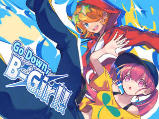

【注意】赤文字の「サイトへのリンク」や【ダウンロード】リンクは、現在のドメイン所有者が当時と変わっていて危険なサイトにつながる可能性がありますので、もしリンク移動時にブラウザの警告などが出た場合は移動しないよう注意してください。
（『緑色のリンク』と『青色のリンク』はそれぞれ「ページ内リンク」と「同サーバー内へのリンク」なので安全です）
部門別順位 → [熱中度] [斬新さ] [物語性] [画像/音声] [遊びやすさ] [その他]
総合グランプリ / 全ての応募作品 / エントリー番号順リンク / イラスト / 総評 （どれもページ内リンクです）
第17回 WOLF RPGエディターコンテスト 部門別順位表
以下は「熱中度」「斬新さ」「物語性」「画像/音声」「遊びやすさ」「その他加点」の６項目の部門別順位です。はやく【総合順位】を見たい人はこちらをクリック！
各部門の得点は「平均点の順位ポイント（最大30点）」「総計点の順位ポイント（最大15点））」「中央値」の
合計点で算出されます。なお、有効投票者数は320名、のべ評価作品数は3914作品でした。
1.【熱中度】部門
熱中度部門では「プレイヤーが最後までどれだけ熱中して遊べたか」が評価されます！多くの人が夢中になれたゲームを求めている人はこちら！
| 順位 | 作品名 | 平均点（ﾗﾝｸP） | 合計点（ﾗﾝｸP） | 中央値 | 熱中度 得点 |
| 1位 | 【ウルファール5分生き残れゲーム】 |
8.36 (1位:30点) | 1246 (2位:15点) | 9点 | 54点 |
| ◆熱中度10じゃ足りないくらい熱中しました。（クリアしてもまだ遊び足りなく感じるくらいということです）
◆レベルを上げては新しい装備を入手する繰り返しの中に、組み合わせを考える楽しさがあった。 ◆なんとしても5分生き残ろうとのめり込むように何度もプレイするほどの熱中度でした！ ◆もう少しでクリアできそうなのに！！と再挑戦が止まらないゲーム。アイテムの組み合わせがいろいろあって楽しい。 |
|||||
| 2位 | 【Ayaのホームページへようこそ！】 |
8.11 (2位:29点) | 1370 (1位:15点) | 8点 | 52点 |
| ◆一つ謎が解けるたびに新たな疑問点が湧き上がる構成も相まって全ED回収するまで一気にプレイするほどの熱中度でした！
◆リンクを踏んで行ったり来たりする中で次第に見えてくる謎や不穏さにどんどん引き込まれ、『ゲームを遊んでいる』という感覚ではなく、実際にふと覗いたホームページで隠された秘密を見つけてしまったようなドキドキ感がありました。 ◆トゥルーエンド、エクストラエンドまでクリア済。仕組みが全部面白くて最高でした！ |
|||||
| 3位 | 【Rewot.16ーリワット イチロクー】 |
7.63 (5位:26点) | 961 (4位:14点) | 8点 | 48点 |
| ◆毒の強いストーリーは進むごとに苦しくなるのに進めたくなる、中毒性がスゴイ。
◆3種の毒の使い分けを駆使して強敵の倒しかたを解き明かす戦闘が斬新で楽しく、最後まで夢中になってプレイしました！ ◆シナリオ上の設定が地続きになっているシステムと、搭を攻略してく内に徐々に明らかになっていく悪魔病の実態や主人公の記憶など、シナリオ面でついつい先が気になって進めたくなるような構成になっていて夢中にプレイしてしまいました。 |
|||||
| 4位 | 【光の精霊が死んだ】 | 7.93 (3位:28点) | 745 (11位:10点) | 9点 | 47点 |
| 4位 | 【Go Down, B-Girl!】 | 7.60 (6位:25点) | 1178 (3位:14点) | 8点 | 47点 |
| 6位 | 【1969年のゼロデイ】 | 7.89 (4位:27点) | 757 (9位:11点) | 8点 | 46点 |
| 7位 | 【月神決戦弾】 | 7.43 (8位:23点) | 795 (7位:12点) | 8点 | 43点 |
| 8位 | 【雨を乞う弔鐘】 | 7.56 (7位:24点) | 658 (17位:7点) | 8点 | 39点 |
| 9位 | 【蠅叩キー】 | 7.39 (10位:21点) | 702 (14位:9点) | 8点 | 38点 |
| 10位 | 【Stellight】 | 6.92 (14位:17点) | 830 (6位:13点) | 7点 | 37点 |
| 11位 | 【BIG BANG】 | 6.85 (16位:15点) | 959 (5位:13点) | 7点 | 35点 |
| 11位 | 【悪魔の遊戯】 | 7.43 (9位:22点) | 557 (21位:5点) | 8点 | 35点 |
| 11位 | 【ガレキノシップ】 | 7.04 (12位:19点) | 718 (13位:9点) | 7点 | 35点 |
| 14位 | 【デスペレートエランド】 | 6.79 (17位:14点) | 747 (10位:11点) | 7点 | 32点 |
| 15位 | 【みてくれというけれど】 | 6.61 (22位:9点) | 767 (8位:12点) | 7点 | 28点 |
| 15位 | 【夢遊猫ミステリウム】 | 7.17 (11位:20点) | 337 (ランク外:0点) | 8点 | 28点 |
| 17位 | 【月下美人狂詩曲】 | 6.64 (21位:10点) | 744 (12位:10点) | 7点 | 27点 |
| 17位 | 【禍流転 -MAGARUTEN-】 | 6.89 (15位:16点) | 510 (24位:4点) | 7点 | 27点 |
| 19位 | 【白雛芥子の夢の果てに】 | 6.95 (13位:18点) | 389 (ランク外:0点) | 7点 | 25点 |
| 19位 | 【落ちさえしなけりゃクリアはできる】 | 6.71 (20位:11点) | 617 (18位:7点) | 7点 | 25点 |
| 21位 | 【リザレクション！】 | 6.77 (18位:13点) | 548 (23位:4点) | 7点 | 24点 |
| 22位 | 【Return to the Wildlife】 | 6.73 (19位:12点) | 491 (26位:3点) | 7点 | 22点 |
| 23位 | 【夕五千兆】 | 6.55 (23位:8点) | 563 (19位:6点) | 7点 | 21点 |
| 24位 | 【SIMPLE ROOM ～部屋からの脱出～】 | 6.51 (25位:6点) | 664 (16位:8点) | 6点 | 20点 |
| 25位 | 【さいごの射手の銀弾は】 | 6.50 (26位:5点) | 559 (20位:6点) | 7点 | 18点 |
2.【斬新さ】部門
斬新さ部門は、「そのプレイヤーにとってどれだけ新しさを感じられたか」が評価されます！新鮮なゲームを楽しみたい人はこちら！
| 順位 | 作品名 | 平均点（ﾗﾝｸP） | 合計点（ﾗﾝｸP） | 中央値 | 斬新さ 得点 |
| 1位 | 【Go Down, B-Girl!】  |
7.65 (2位:29点) | 1185 (2位:15点) | 8点 | 52点 |
| ◆ダンスをカードゲーム化したデッキ構築ゲームはかつて見たことないですｗ この才能に脱帽します。面白さも折り紙つきで過去作もですが色んな戦略を考える余地がある点が非常に良いです。
◆ダンスとカードゲームの組み合わせがすごく意外だった。少し難しかったが、やってるうちに強い動きがわかってきて楽しめた。 ◆ブレイクダンステーマのデッキ構築型ローグライクダンスを上手く落とし込み、しっかりゲームプレイとして成立させている点は見事。 |
|||||
| 2位 | 【蠅叩キー】 |
8.23 (1位:30点) | 782 (8位:12点) | 9点 | 51点 |
| ◆発想力がすごいです。キーを叩くだけのゲームがこんなに面白くなるとは思わなかった。
◆キーボードを押してムシを倒したり捕まえたりするだけという、シンプルながら考えた者はほとんどいないであろう飛び抜けた斬新さに圧倒されました！ ◆単にタイトルに引っ掛けた一発ネタの洒落に留まらず、敵の種類やギミック性、特殊コマンドなどによって、ただキーを叩くだけでないアクション性をも生み出しています。 |
|||||
| 3位 | 【Ayaのホームページへようこそ！】 |
7.49 (4位:27点) | 1266 (1位:15点) | 8点 | 50点 |
| ◆限られた要素を最大限に使い、いい意味でゲームらしくない謎解きをごく自然に成立させていて個人的にとても新鮮でした。
◆この古めかしさが逆に近年見ない斬新さを思わせてくれる。 ◆00年代にホームページを作って公開していた世代なのですが、当時のホームページの再現度に驚かされました。 ◆隠しページ探しやBBSを通した交流の様子など古のインターネッツオタクの心に刺さる内容。この古めかしさが逆に近年見ない斬新さを思わせてくれる。 |
|||||
| 4位 | 【ガレキノシップ】 | 7.53 (3位:28点) | 768 (9位:11点) | 8点 | 47点 |
| 5位 | 【みてくれというけれど】 | 7.29 (6位:25点) | 846 (5位:13点) | 8点 | 46点 |
| 6位 | 【リザレクション！】 | 7.35 (5位:26点) | 595 (16位:8点) | 8点 | 42点 |
| 6位 | 【デスペレートエランド】 | 7.22 (8位:23点) | 794 (7位:12点) | 7点 | 42点 |
| 8位 | 【光の精霊が死んだ】 | 7.24 (7位:24点) | 681 (12位:10点) | 7点 | 41点 |
| 9位 | 【Rewot.16ーリワット イチロクー】 | 6.94 (12位:19点) | 875 (4位:14点) | 7点 | 40点 |
| 10位 | 【訳アリ領主とヒミツの武器屋】 | 7.08 (11位:20点) | 545 (18位:7点) | 8点 | 35点 |
| 10位 | 【BIG BANG】 | 6.61 (17位:14点) | 925 (3位:14点) | 7点 | 35点 |
| 12位 | 【Return to the Wildlife】 | 7.16 (10位:21点) | 523 (21位:5点) | 7点 | 33点 |
| 13位 | 【さいごの射手の銀弾は】 | 6.76 (13位:18点) | 581 (17位:7点) | 7点 | 32点 |
| 14位 | 【魔女学級のドタバタ探検記】 | 7.17 (9位:22点) | 452 (28位:2点) | 7点 | 31点 |
| 15位 | 【MA-FŪ 魔封】 | 6.75 (14位:17点) | 506 (23位:4点) | 7点 | 28点 |
| 16位 | 【月神決戦弾】 | 6.33 (20位:11点) | 677 (13位:9点) | 7点 | 27点 |
| 17位 | 【月下美人狂詩曲】 | 6.22 (22位:9点) | 697 (11位:10点) | 6点 | 25点 |
| 17位 | 【アイドルライバー】 | 6.65 (16位:15点) | 492 (25位:3点) | 7点 | 25点 |
| 19位 | 【夢遊猫ミステリウム】 | 6.68 (15位:16点) | 314 (ランク外:0点) | 7点 | 23点 |
| 20位 | 【1969年のゼロデイ】 | 6.22 (23位:8点) | 597 (15位:8点) | 6点 | 22点 |
| 20位 | 【雨を乞う弔鐘】 | 6.25 (21位:10点) | 544 (19位:6点) | 6点 | 22点 |
| 22位 | 【S.W.A.T.(Special Wizard Assault Team)】 | 6.47 (18位:13点) | 401 (ランク外:0点) | 7点 | 20点 |
| 22位 | 【月を生む話】 | 6.37 (19位:12点) | 427 (30位:1点) | 7点 | 20点 |
| 24位 | 【ウルファール5分生き残れゲーム】 | 5.60 (ランク外:0点) | 835 (6位:13点) | 6点 | 19点 |
| 25位 | 【Stellight】 | 5.82 (ランク外:0点) | 698 (10位:11点) | 6点 | 17点 |
3.【物語性】部門
物語性部門では「どれだけ記憶に残る物語だったか」が高い順位につながります！キャラクターやストーリーのよさ、感動を味わえた人が多かった作品はこちら！
| 順位 | 作品名 | 平均点（ﾗﾝｸP） | 合計点（ﾗﾝｸP） | 中央値 | 物語性 得点 |
| 1位 | 【Rewot.16ーリワット イチロクー】 |
8.01 (1位:30点) | 1009 (2位:15点) | 9点 | 54点 |
| ◆道中思い出すことになるセンセイの過去に触れる回想シーンがどれも重苦しいものばかりなのですが『悪魔病』の治療法を探すという目的で一貫しており、強い使命感で塔を登ることができる素晴らしい物語です。
◆断片的な情報からストーリーや人物像を紐解くのが楽しい。 ◆序盤からぐっと心に響く演出が秀逸。幾通りも考察できる断片的なテキストと演出の見せ方が本当にうまい。 ◆キャラクター描写がとても丁寧で登場人物の一人一人になんとも言えない魅力を感じとれました。シキミちゃんがとても愛らしかったです。 |
|||||
| 2位 | 【Stellight】 |
7.91 (2位:29点) | 949 (3位:14点) | 8点 | 51点 |
| ◆テキストとセリフ回しのセンスが素晴らしく、開始してすぐ物語に引き込まれました。「物語」を装備して戦うという設定も素敵で、物語を大切に想う気持ちが詰まった素敵なストーリーでした！
◆自分の事をいらない子供だと思っているチトセが、兄たらんとするようになるまでの心情がとても丁寧に描かれており、彼に多大な影響を与えることになるアカリ、ドロシーといったキャラクター達もとても魅力的でした。 ◆すごく引き込まれた 夏の終わりの情景が鮮やかで星祭りの夜が心に残りました |
|||||
| 3位 | 【Ayaのホームページへようこそ！】 |
7.41 (4位:27点) | 1253 (1位:15点) | 7点 | 49点 |
| ◆第一印象の斬新さだけでなく、作品に込められているテーマを多方面で描いている素敵な作品だったと思います。
◆作りが丁寧で、プレイヤーの理解と物語の進行が連動していくシステムが見事で、謎解きのバランスも丁度良かった。 ◆『失われてしまったもの（人）を思い出してほしい』というメッセージとリンクしていてより印象深く感じられました。 ◆リンクを踏んで行ったり来たりする中で次第に見えてくる謎や不穏さにどんどん引き込まれ、「ゲームを遊んでいる」という感覚ではなく、実際にふと覗いたホームページで隠された秘密を見つけてしまったようなドキドキ感がありました。 |
|||||
| 4位 | 【雨を乞う弔鐘】 | 7.82 (3位:28点) | 680 (8位:12点) | 8点 | 48点 |
| 5位 | 【月下美人狂詩曲】 | 7.10 (7位:24点) | 795 (6位:13点) | 7点 | 44点 |
| 6位 | 【禍流転 -MAGARUTEN-】 | 7.18 (5位:26点) | 531 (17位:7点) | 7点 | 40点 |
| 7位 | 【光の精霊が死んだ】 | 6.83 (10位:21点) | 642 (10位:11点) | 7点 | 39点 |
| 8位 | 【さいごの射手の銀弾は】 | 6.97 (9位:22点) | 599 (14位:9点) | 7点 | 38点 |
| 9位 | 【月を生む話】 | 7.01 (8位:23点) | 470 (22位:5点) | 8点 | 36点 |
| 10位 | 【1969年のゼロデイ】 | 6.66 (14位:17点) | 639 (11位:10点) | 7点 | 34点 |
| 11位 | 【しかきたん-オカルトノート寧楽奇譚-】 | 7.10 (6位:25点) | 355 (ランク外:0点) | 8点 | 33点 |
| 11位 | 【みてくれというけれど】 | 6.44 (17位:14点) | 747 (7位:12点) | 7点 | 33点 |
| 13位 | 【リザレクション！】 | 6.63 (15位:16点) | 537 (16位:8点) | 7点 | 31点 |
| 13位 | 【Return to the Wildlife】 | 6.73 (13位:18点) | 491 (19位:6点) | 7点 | 31点 |
| 15位 | 【BIG BANG】 | 6.12 (23位:8点) | 857 (4位:14点) | 6点 | 28点 |
| 16位 | 【王国の肖像】 | 6.78 (11位:20点) | 366 (ランク外:0点) | 7点 | 27点 |
| 17位 | 【夢遊猫ミステリウム】 | 6.77 (12位:19点) | 318 (ランク外:0点) | 7点 | 26点 |
| 17位 | 【ガレキノシップ】 | 6.16 (22位:9点) | 628 (12位:10点) | 7点 | 26点 |
| 19位 | 【白雛芥子の夢の果てに】 | 6.59 (16位:15点) | 369 (ランク外:0点) | 7点 | 22点 |
| 20位 | 【深蒼の航路】 | 6.41 (18位:13点) | 378 (ランク外:0点) | 7点 | 20点 |
| 20位 | 【デスペレートエランド】 | 5.89 (28位:3点) | 648 (9位:11点) | 6点 | 20点 |
| 22位 | 【太宰府カンコー奇聞わたる】 | 6.17 (20位:11点) | 401 (29位:1点) | 6点 | 18点 |
| 22位 | 【Go Down, B-Girl!】 | 5.51 (ランク外:0点) | 854 (5位:13点) | 5点 | 18点 |
| 22位 | 【あねさがし】 | 6.34 (19位:12点) | 355 (ランク外:0点) | 6点 | 18点 |
| 25位 | 【月神決戦弾】 | 5.86 (29位:2点) | 627 (13位:9点) | 6点 | 17点 |
4.【画像/音声】部門
画像/音声部門は、「画像や音声の品質や使い方」が評価されます！見た目や演出を特に楽しめる作品はこちら！
| 順位 | 作品名 | 平均点（ﾗﾝｸP） | 合計点（ﾗﾝｸP） | 中央値 | 画像/音声 得点 |
| 1位 | 【Rewot.16ーリワット イチロクー】 |
8.63 (2位:29点) | 1087 (4位:14点) | 9点 | 52点 |
| ◆圧倒的なグラフィックと圧巻の演出でした。
◆ビジュアルや音楽、ゲームシステムすべての要素が上手く調和していると感じました。 ◆BGMは塔の探索時が歌なし、戦闘に入ると歌付きへとシームレスに切り替わるインタラクティブミュージックが採用されており美しい演出となっています。 ◆グラフィックについては非常に美しく、BGMも場面にあった雰囲気の良いものが使われているので、一目見ただけでウディタ製ゲームと見抜くことは難しいレベルだと思います。 |
|||||
| 2位 | 【Go Down, B-Girl!】 |
8.15 (4位:27点) | 1264 (2位:15点) | 9点 | 51点 |
| ◆タイトル絵、立ち絵のクオリティが非常に高い。ムーブも動きが分かりやすかったので加点。
◆さすがのグラフィック。アニメーションのシュールさがいい意味で楽しい。 ◆音楽もとてもあっている。 ◆ダンスバトル中はプレイヤー・対戦相手NPCが取れる全てのカードに対してダンスアニメーションが付いていて感動しました |
|||||
| 2位 | 【BIG BANG】 |
8.31 (3位:28点) | 1164 (3位:14点) | 9点 | 51点 |
| ◆圧倒的疾走感のある映像と音の暴風！ 敵グラフィックの美術がすごい、シルエットとモーションがド迫力！
◆迫力のあるムービーを使った演出が素晴らしい作品。 ◆イラストと演出が最高に格好よく、それを更に神曲で盛り上げてくれる。 ◆シンプルかつ静止状態ながら躍動感のある、メリハリのついたスタイリッシュなグラフィックが特徴的なRPGです。 |
|||||
| 4位 | 【雨を乞う弔鐘】 | 8.63 (1位:30点) | 751 (10位:11点) | 9点 | 50点 |
| 5位 | 【月神決戦弾】 | 8.14 (5位:26点) | 871 (5位:13点) | 9点 | 48点 |
| 6位 | 【Ayaのホームページへようこそ！】 | 7.75 (7位:24点) | 1310 (1位:15点) | 8点 | 47点 |
| 7位 | 【光の精霊が死んだ】 | 8.06 (6位:25点) | 758 (8位:12点) | 8点 | 45点 |
| 8位 | 【蠅叩キー】 | 7.43 (9位:22点) | 706 (13位:9点) | 8点 | 39点 |
| 8位 | 【みてくれというけれど】 | 6.99 (12位:19点) | 811 (6位:13点) | 7点 | 39点 |
| 10位 | 【STELLA FORMULA】 | 6.79 (14位:17点) | 760 (7位:12点) | 7点 | 36点 |
| 11位 | 【月下美人狂詩曲】 | 6.77 (15位:16点) | 758 (8位:12点) | 7点 | 35点 |
| 11位 | 【リザレクション！】 | 7.26 (11位:20点) | 588 (18位:7点) | 8点 | 35点 |
| 13位 | 【夢遊猫ミステリウム】 | 7.45 (8位:23点) | 350 (ランク外:0点) | 8点 | 31点 |
| 14位 | 【ガレキノシップ】 | 6.72 (16位:15点) | 685 (15位:8点) | 7点 | 30点 |
| 15位 | 【白雛芥子の夢の果てに】 | 7.38 (10位:21点) | 413 (ランク外:0点) | 8点 | 29点 |
| 16位 | 【スーパーウーパールーパー】 | 6.79 (13位:18点) | 360 (ランク外:0点) | 7点 | 25点 |
| 17位 | 【1969年のゼロデイ】 | 6.51 (21位:10点) | 625 (17位:7点) | 7点 | 24点 |
| 18位 | 【訳アリ領主とヒミツの武器屋】 | 6.49 (22位:9点) | 500 (22位:5点) | 7点 | 21点 |
| 18位 | 【深蒼の航路】 | 6.71 (17位:14点) | 396 (ランク外:0点) | 7点 | 21点 |
| 18位 | 【Return to the Wildlife】 | 6.52 (20位:11点) | 476 (26位:3点) | 7点 | 21点 |
| 21位 | 【ゴートマウンテン スラムロード】 | 6.66 (18位:13点) | 353 (ランク外:0点) | 7点 | 20点 |
| 22位 | 【あんでっどハザード】 | 6.58 (19位:12点) | 434 (30位:1点) | 6点 | 19点 |
| 23位 | 【悪魔の遊戯】 | 6.48 (23位:8点) | 486 (23位:4点) | 6点 | 18点 |
| 24位 | 【デスペレートエランド】 | 6.30 (29位:2点) | 693 (14位:9点) | 6点 | 17点 |
| 25位 | 【Stellight】 | 6.21 (ランク外:0点) | 745 (11位:10点) | 6点 | 16点 |
5.【遊びやすさ】部門
遊びやすさ部門では、難易度・リトライしやすさ・理解しやすさ等を総合して「どれだけ快適に遊べたか」が評価されます！遊びやすい作品をお求めならこちら！
| 順位 | 作品名 | 平均点（ﾗﾝｸP） | 合計点（ﾗﾝｸP） | 中央値 | 遊びやすさ 得点 |
| 1位 | 【Go Down, B-Girl!】 |
7.63 (3位:28点) | 1183 (2位:15点) | 8点 | 51点 |
| ◆チュートリアルもあり、なおかつ左クリックで説明が出るので、初めてでもやりやすい。難易度もしっかりしていて、やりこもうと思えば遣り込めるのもうれしい。
◆UIが見ただけで把握しやすい作りになっていて、複雑そうなゲームでしたが楽しく遊べました。 ◆ワンプレイが短いことも相まって、つい最後まで遊んでしまう中毒性のある作品でした。 |
|||||
| 2位 | 【月神決戦弾】 |
7.77 (1位:30点) | 831 (7位:12点) | 8点 | 50点 |
| ◆これはすばらしいSTGだ！初心者から上級者までしっかり楽しめそうな絶妙なバランスで、とっつきやすさと奥深さを無理なく両立しているのがすごい。
◆自然と自分の腕に応じた敵の強さになるSTG。これが非常に助かる。一撃で死なないゲーム性といい、腕に応じた難易度調整システムといい、非常にユーザに優しいつくりであるところが素晴らしかった。 ◆STGはあまり得意なジャンルではなかったのですが、初心者でも遊びやすいように配慮されていると感じました。 |
|||||
| 3位 | 【ウルファール5分生き残れゲーム】 |
7.55 (4位:27点) | 1125 (3位:14点) | 8点 | 49点 |
| ◆歩き回って敵を倒しつつ5分生き残るだけというシンプルなルールのため操作を覚えやすく遊びやすい点も素晴らしかったです。
◆制限時間5分というのもちょうど良く、ハラハラ感と爽快感をちょうど良く遊べるいいバランス感の作品でした。 ◆遊びやすさはピカイチで、気付いたら遊びたくなっている魅力があります。 |
|||||
| 3位 | 【Ayaのホームページへようこそ！】 |
7.44 (5位:26点) | 1257 (1位:15点) | 8点 | 49点 |
| ◆「『？』マークをクリックすると会えるイルカがヒントを教えてくれるため遊びやすさも充実しています。
◆詰まっても段階的にヒントが見られ、ヒントをクリックしまくると答えそのものも教えてもらえるのでストレスなく遊べました。 ◆ヒント機能がちょうどよく、遊びやすさ10です。 |
|||||
| 5位 | 【1969年のゼロデイ】 | 7.69 (2位:29点) | 738 (11位:10点) | 8点 | 47点 |
| 6位 | 【月下美人狂詩曲】 | 7.40 (7位:24点) | 829 (8位:12点) | 8点 | 44点 |
| 6位 | 【Rewot.16ーリワット イチロクー】 | 7.21 (8位:23点) | 908 (5位:13点) | 8点 | 44点 |
| 8位 | 【BIG BANG】 | 7.14 (10位:21点) | 1000 (4位:14点) | 7点 | 42点 |
| 9位 | 【夕五千兆】 | 7.42 (6位:25点) | 638 (16位:8点) | 8点 | 41点 |
| 10位 | 【蠅叩キー】 | 7.15 (9位:22点) | 679 (12位:10点) | 7点 | 39点 |
| 11位 | 【Stellight】 | 6.99 (13位:18点) | 839 (6位:13点) | 7点 | 38点 |
| 12位 | 【雨を乞う弔鐘】 | 7.07 (11位:20点) | 615 (19位:6点) | 7点 | 33点 |
| 13位 | 【光の精霊が死んだ】 | 6.95 (14位:17点) | 653 (15位:8点) | 7点 | 32点 |
| 13位 | 【禍流転 -MAGARUTEN-】 | 7.04 (12位:19点) | 521 (20位:6点) | 7点 | 32点 |
| 13位 | 【デスペレートエランド】 | 6.72 (17位:14点) | 739 (10位:11点) | 7点 | 32点 |
| 16位 | 【僧侶竜の導き】 | 6.71 (18位:13点) | 617 (18位:7点) | 7点 | 27点 |
| 16位 | 【名もなき記録】 | 6.86 (15位:16点) | 501 (23位:4点) | 7点 | 27点 |
| 18位 | 【SIMPLE ROOM ～部屋からの脱出～】 | 6.62 (21位:10点) | 675 (14位:9点) | 7点 | 26点 |
| 18位 | 【みてくれというけれど】 | 6.44 (23位:8点) | 747 (9位:11点) | 7点 | 26点 |
| 20位 | 【悪魔の遊戯】 | 6.67 (19位:12点) | 500 (24位:4点) | 7点 | 23点 |
| 21位 | 【白雛芥子の夢の果てに】 | 6.82 (16位:15点) | 382 (ランク外:0点) | 7点 | 22点 |
| 22位 | 【小謎解きs】 | 6.65 (20位:11点) | 472 (26位:3点) | 7点 | 21点 |
| 23位 | 【ガレキノシップ】 | 6.25 (27位:4点) | 638 (16位:8点) | 7点 | 19点 |
| 24位 | 【しかきたん-オカルトノート寧楽奇譚-】 | 6.56 (22位:9点) | 328 (ランク外:0点) | 6点 | 15点 |
| 24位 | 【STELLA FORMULA】 | 6.04 (ランク外:0点) | 677 (13位:9点) | 6点 | 15点 |
6.【その他】部門
その他部門では「これまでの部門で評価しきれなかった部分の良さ」を評価されます！あふれる情熱や魅力を強く感じてみたい人におすすめ！
| 順位 | 作品名 | 平均点（ﾗﾝｸP） | 合計点（ﾗﾝｸP） | 中央値 (1点以上 のみｶｳﾝﾄ) |
その他 得点 |
| 1位 | 【Rewot.16ーリワット イチロクー】 |
+1.84 (1位:30点) | 232 (2位:15点) | 3点 | 48点 |
| ◆作者様のこだわりが画面の隅々まで行き渡っている印象で、総合的な完成度の高さが光る作品。
◆デザインもすべてがオシャレで非常に丁寧な作りを感じさせる。 ◆UI面でも非常に作り込まれており、作者様のこだわりを感じます。 ◆全体の完成度の高さと、シキミちゃんがとにかく可愛くて完全に魅了されてしまうほど最高だったのでシキミちゃんの可愛さ・他多くの魅力に大幅加点します！ |
|||||
| 2位 | 【Ayaのホームページへようこそ！】 |
+1.66 (2位:29点) | 281 (1位:15点) | 3点 | 47点 |
| ◆デスクトップやインターネット接続の演出から始まり、各ホームページの再現度も高く、当時の独特な雰囲気を味わうことができる。リンクを開いたときの読み込み時間まで細やかに再現されている。
◆細部に至るまで、2000年代初頭の個人Webサイトを見事に再現していて大変素晴らしかったです。デザインや文体だけではなく、操作性も実際にサイトへ訪れているように工夫されていて、終始ワクワクして楽しむことができました。 ◆一昔前のホームページの雰囲気が良く出ていて懐かしい気持ちになりました。アイコンやスクリーンセーバーにもこだわりを感じられて楽しかったです！ |
|||||
| 3位 | 【Go Down, B-Girl!】 |
+1.43 (4位:27点) | 221 (3位:14点) | 2点 | 43点 |
| ◆ブレイキンをデッキ構築型バトルとして作り上げた発想が面白かったのと、現実のブレイキンに興味を持つきっかけとなりうる素晴らしいゲームと感じた点に大幅加点します。
◆このゲームを通してブレイキンに興味を持つようになりました。新しい世界を広げてくれたという点で、加点に満点をいれざるを得ませんでした。 ◆斬新かつ独創的なシステムと、それによる不便を感じさせない遊びやすさに落とし込んだゲーム性に加点。 |
|||||
| 4位 | 【リザレクション！】 | +1.43 (3位:28点) | 116 (11位:10点) | 2点 | 40点 |
| 4位 | 【月神決戦弾】 | +1.37 (6位:25点) | 147 (6位:13点) | 2点 | 40点 |
| 6位 | 【1969年のゼロデイ】 | +1.29 (8位:23点) | 124 (8位:12点) | 3点 | 38点 |
| 7位 | 【BIG BANG】 | +1.23 (10位:21点) | 172 (5位:13点) | 3点 | 37点 |
| 8位 | 【ウルファール5分生き残れゲーム】 | +1.23 (11位:20点) | 183 (4位:14点) | 2点 | 36点 |
| 8位 | 【光の精霊が死んだ】 | +1.27 (9位:22点) | 119 (10位:11点) | 3点 | 36点 |
| 10位 | 【月を生む話】 | +1.36 (7位:24点) | 91 (16位:8点) | 2点 | 34点 |
| 11位 | 【蠅叩キー】 | +1.22 (12位:19点) | 116 (11位:10点) | 3点 | 32点 |
| 12位 | 【夢遊猫ミステリウム】 | +1.43 (5位:26点) | 67 (25位:3点) | 2点 | 31点 |
| 13位 | 【Stellight】 | +1.09 (18位:13点) | 131 (7位:12点) | 2点 | 27点 |
| 13位 | 【アイドルライバー】 | +1.20 (13位:18点) | 89 (18位:7点) | 2点 | 27点 |
| 13位 | 【さいごの射手の銀弾は】 | +1.14 (15位:16点) | 98 (13位:9点) | 2点 | 27点 |
| 16位 | 【みてくれというけれど】 | +1.07 (19位:12点) | 124 (8位:12点) | 2点 | 26点 |
| 16位 | 【雨を乞う弔鐘】 | +1.11 (17位:14点) | 97 (14位:9点) | 3点 | 26点 |
| 18位 | 【Return to the Wildlife】 | +1.12 (16位:15点) | 82 (19位:6点) | 2点 | 23点 |
| 19位 | 【王国の肖像】 | +1.19 (14位:17点) | 64 (27位:2点) | 1点 | 20点 |
| 20位 | 【悪魔の遊戯】 | +0.97 (21位:10点) | 73 (22位:5点) | 1点 | 16点 |
| 20位 | 【ガレキノシップ】 | +0.89 (25位:6点) | 91 (16位:8点) | 2点 | 16点 |
| 22位 | 【S.W.A.T.(Special Wizard Assault Team)】 | +0.98 (20位:11点) | 61 (28位:2点) | 2点 | 15点 |
| 23位 | 【陰影遊戯 -魔王の命題-】 | +0.90 (23位:8点) | 72 (23位:4点) | 2点 | 14点 |
| 23位 | 【月下美人狂詩曲】 | +0.85 (27位:4点) | 95 (15位:8点) | 2点 | 14点 |
| 25位 | 【落ちさえしなけりゃクリアはできる】 | +0.87 (26位:5点) | 80 (21位:5点) | 1点 | 11点 |
◆総合グランプリ◆
総合グランプリ順位は「熱中度」「斬新さ」「物語性」「画像/音声」「遊びやすさ」「その他加点」の６項目の
「総合得点」に、「平均重視度（％）」を掛けて得られた値を総計したポイントで決定されます。
皆さまの投票から得られた平均重視度は以下の通りとなりました。
熱中度 79.5 ％ 斬新さ 54.3 ％ 物語性 63.3 ％ 画像/音声 52.8 ％ 遊びやすさ 73.8 ％
※その他加点は自動で「50％」となります。
|
【プレイ動画配信/SNS投稿について】 ※各作品のアピール文の最下部には動画配信やSNSへの感想投稿についての可否が記載されています。 [ゲームプレイ配信] 時間無制限のゲーム配信･プレイ動画投稿の可否です。 [動画への映像使用(3分以内)] ↑がダメな場合の、紹介動画・ランキング動画等への短いプレイ映像使用の可否です。こちらへのご利用では映像利用は最大3分以内、かつ、ネタバレはなるべく避けてください。 ※ただし上記の可否は「有料動画」へのゲーム利用許可は含みません。有料動画の場合は個別に確認してください。 [SNSへの感想投稿可否] SNSへの感想投稿の可否です。全面的に許可/ネタバレなしなら許可/画面写真なしなら許可、の区分があります（ブログや自サイトなどへの投稿はこの項目では制限されません） |
【ゲーム起動時に実行がブロックされる場合】
|

【1位】『Ayaのホームページへようこそ！』(エントリー番号【28】/ 総ポイント183.9点)
熱中 41.3点(2位)+斬新 27.1点(3位)+物語性 31.0点(3位)+画像音声 24.8点(6位)+遊びやすさ36.2点(3位)+その他23.5点(2位)
熱中 41.3点(2位)+斬新 27.1点(3位)+物語性 31.0点(3位)+画像音声 24.8点(6位)+遊びやすさ36.2点(3位)+その他23.5点(2位)
- 【ダウンロード】
【運営ﾊﾞｯｸｱｯﾌﾟからDL(安全/11MB)】 - 作者 : 苺いちえ
- プレイ時間 :1時間30分くらい
- 作者コメント:
- Ayaのホームページへようこそ！
ゆっくりしていってくださいね♪
このページに隠された秘密……あなたは、解き明かせますか？
---バージョン情報
7/14 1.00 公開
7/15 1.01 バグ修正・おまけ追加
1.02 パスワード入力時の挙動を少し修正
1.03 誤字修正
7/16 1.04 軽微なバグ修正
7/17 1.05 ヒントの文章の修正
7/20 1.06 game.exeを最新版に更新（ウイルスソフト対策）
7/23 1.07 軽微なバグと細かい文章の修正
7/30 1.08 細かい文章の修正
8/4 1.09 ヒントに答えを追加
【ゲームプレイ配信はご自由に】
【動画への映像使用(3分以内)はご自由に】
-
【一般投票コメント】
[熱10新9物8画9遊10他+5] 傑作です。古きインターネットサーフィンを再現し、そこから真実に迫っていく仕様は近年のモキュメンタリ―ホラーのブームを彷彿とさせるもので、否応なくワクワクさせられる。当時を知ってる人は懐かしさを単純に楽しむだけでも面白い。ホームページで隠しページを探したりすることが、そもそも当時のインターネット民たちを熱中させた面白い営みであることをゲームに表現し、再発見させるという作り自体見事というほかない。
[熱10新8物8画9遊9他+3] 徹底した2000年代前半のHPデザインを駆使した濃密な謎解きと隠されたメッセージを見つける導線の楽しさが詰まった快作。htmlで日記を書いていた己の苦い記憶と向き合いながら、１つ１つ言葉を見つけて入力していく過程が本当に楽しかった。最後の最後で涙腺が刺激されるとは思わず、別の意味で油断したし「やってくれたなぁ！」と天井を仰いだ。素晴らしい作品だった。
[熱8新9物8画9遊8他+3] 「Ayaのホームページ」という架空のWEBサイトを舞台に、このページに隠された秘密を解き明かす短編ADV。こ、これは…2000年代のホームページとインターネットブラウザそのものじゃないですか！あまりの再現度の高さに驚き、そこに非常に優れた素材の使われ方とホームページそのものの質感を実現するこだわりへの斬新さを感じました。謎解きの内容も奥が深いもので、最初のホームページだけでなく日記や掲示板、リンク先の別WEBサイトもたどって丹念に情報を精査していく必要があり、一つ謎が解けるたびに新たな疑問点が湧き上がる構成も相まって全ED回収するまで一気にプレイするほどの熱中度でした！謎解きが難しい場合は「？」マークをクリックすると会えるイルカがヒントを教えてくれるため遊びやすさも充実しています。2000年代のWEBサイトの雰囲気を正確に再現した、その素晴らしさに加点します。
[熱5新9物4画10遊5他+7] 中二サイトを注視する設計が笑う。
[熱10新9物10画10遊9] ★。.:*:゛゜☆ヽ(о>ω・)ノ●Welcome●ヽ(・ω<о)ノ☆゜゛:*:.。★
[熱9新9物8画10遊9他+5] 前世の記憶が甦った！
[熱7新7物5画7遊6他+2] 友達のホームページを見て昔を思い出したので加点します。
[熱10新10物9画10遊9他+9] どこかで体験したことのあるような既視感とともに楽しめるゲームで、ちょうどいい難易度とボリュームにみあったプレイ時間のバランスがよく、メインではないけれどコンプリート要素もあってとても満足できる作品でした。個人HPを見ていた人、個人HPを作っていた人などほかの人にぜひおすすめしたい、自分だけで終わらず誰かに教えたい、という気持ちにさせられる
[熱6新7物5画6遊7] インターネット老人にはなかなか刺さるグラフィックとシナリオでした。「お前を消す方法」を試したかった今日この頃
[熱9新8物7画10遊10] 昔の時代のホームページの再現度が凄い！それと、操作に全くストレスを感じさせない快適性の良さも地味に凄い！
[熱9新6物8画10遊9他+2] HTMLを再現する技術がすごい。ED4の後の展開もあって良かったです。そこで加点しています。
[熱9新10物6画7遊6] 恐らく年長者ほど刺さる一昔前の個人ホームページを扱った作品。ウディタでこんなことも出来るんだなあ……と思いました。全くウディタ感なくって驚き。
[熱8新7物9画9遊7] 一昔前の個人ブログをモチーフにしたホラー寄りインターネット探索ノベル。隠しページ探しやBBSを通した交流の様子など古のインターネッツオタクの心に刺さる内容。この古めかしさが逆に近年見ない斬新さを思わせてくれる。
[熱8新10物9画9遊10他+5] 00年代にホームページを作って公開していた世代なのですが、当時のホームページの再現度に驚かされました。キリ番やBBS、リンクバナー、黒背景の意味深なポエムが添えられてあるサイト、花言葉一覧や占い等、当時インターネット世代だった人ならば見たことのある機能が満載で懐かしー！！！とワクワクし、ノスタルジーに浸れました。それと同時に本作のストーリー内から感じられた「失われてしまったもの（人）を思い出してほしい」というメッセージとリンクしていてより印象深く感じられました。ストーリーに関しては当時学生だった人ならば少しは感じたことのあるであろう、一番仲のいい友人が異性関係や卒業を機に自分から遠く離れていってしまうんじゃないかという不安な気持ちが伝わってきて、別の意味でもノスタルジーを感じることができました。第一印象の斬新さだけでなく、作品に込められているテーマを多方面で描いている素敵な作品だったと思います。P.S.背約探偵の小説がかなり面白かったと、宵闇翡翠さんにお伝えください
[熱9新7物7画5遊8] 謎解きのヒントへの動線が見事でどこにでもありそうな普通のホームページから謎を探し出す過程をとても楽しめました。真相にもこじつけや無理やり感がなかった点がとてもよいです。
[熱8新4物7画5遊8他+4] 一昔前のホームページの雰囲気が良く出ていて懐かしい気持ちになりました。個人情報丸わかりだったり、中二の感じとか、隠しページにキリ番…いいですね！進めていくうちにアレ？と思わせてきたり、各ホームページもちゃんと読むとバックボーンが見えて来たり。プレイヤーの誘導が上手いなあと思いました！個人的にはED2のモヤっと感が好きです。あと地味に第３話まで小説が読めるようになったのがちょっと嬉しかったです（笑）アイコンやスクリーンセーバーにもこだわりを感じられて楽しかったです！
[熱10新8物7画7遊9他+3] 【その他加点】古き良き個人HPの雰囲気をとても完成度高く再現している
[熱10新8物8画9遊8] 懐かしさと黒歴史をホームページの雰囲気が刺さりました。エンドの回収に当たってキリバンを逃したときのガッカリ感も再現されているように感じました。
[熱7新9物8画8遊7他+5] インターネット黎明期のホームページをテーマにした謎解きゲーム。デスクトップやインターネット接続の演出から始まり、各ホームページの再現度も高く、当時の独特な雰囲気を味わう事ができる。リンクを開いたときの読み込み時間まで細やかに再現されている。各所へのヒントの散りばめ方も秀逸で、懐かしさに浸りながら物語を楽しむことが出来た。
[熱10新5物7画7遊10他+3] 特定犯に俺はなる！！！占いサイトを見るとリュミナス・太郎がちらつくようになりました。ホームページの再現度が非常に高かったので加点します。
[熱9新8物7画9遊8他+7] ウディタで昔のOS環境を再現されている技術がおどろきました。本編のENDよりBAD ENDをすべて探しだすのに力が入ってしまいました。全BAD ENDまでふくめて5時間くらい遊びました[v1.07]
[熱10新8物9画9遊9他+4] 操作性がホームページそのままで感動！懐かしさを感じながらプレイしました。リンクを踏んで行ったり来たりする中で次第に見えてくる謎や不穏さにどんどん引き込まれ、「ゲームを遊んでいる」という感覚ではなく、実際にふと覗いたホームページで隠された秘密を見つけてしまったようなドキドキ感がありました。限られた要素を最大限に使い、いい意味でゲームらしくない謎解きをごく自然に成立させていて個人的にとても新鮮でした。再現度の高いUIや演出による没入感、ヒントも手厚くプレイヤーにも親切な設計。しっかりとハッピーエンドも用意されていて感動しました！面白かったです！！
[熱8新7物10画10遊9] まず、なんといっても2000年代Webサイトの再現度が高い。本当にネットサーフィンをいるような錯覚に陥る。見た目のクオリティは勿論のこと、文化的側面（掲示板のやり取りや、厨二病の本物っぽさ）の拘りも無ければ、作れない代物だろう。謎解きという側面を生かして、古の（痛いともとれるような）文章を隅から隅まで読ませるのは、製作者の思惑通りなのかもしれない。おまけのENDでキリバン踏んで、勝手にリクエストされて、Gのイラストが追加されたのには笑ってしまった。私は少し後の世代なので、ネットに個人情報スレスレの日記をのせるたことも、厨二小説を連載したこともない。もしど真ん中の世代であれば、もっと楽しめたのかな？と思うと残念でならない。また、ゲームである以上避けられないのがゲーム性の評価だが、謎解きがWebサイトの闇へと見事に溶け込んでいる。遊ばされている感覚は一切なく、現実世界で同じようにしていても一切おかしくない。ゲームなのにゲームの気がしない。不思議な体験ができた。
[熱9新7物6画7遊7] 謎解きゲームとして非常に良い出来。細かいところまで作り込まれていました。20年以上前のインターネット空間を舞台としているのも面白かったです。
[熱8新10物8画10遊9] わたしの黒歴史を晒すのはやめてください。
[熱9新7物8画5遊8他+9] 2000年代のネットの再現力がすごかったです。
[熱9新9物9画9遊9他+6] 00年代当時のホームページ画面の再現度が凄い。見た目だけでなく中身まで笑ってしまうくらい作りこまれていて、本当に画面の向こう側に誰かいるんじゃないかと思えるぐらいの仕掛けと謎解きがよかったです。
[熱10新9物9画7遊8他+6] インターネット老人会の私にとっては全てが懐かしく、全てのページを見て楽しんでしまいました。作り込みが素晴らしく、2000年代初期の記憶がリアルに戻ってきます。隠しページを探すとき、思わずTabキーを押してしまいました。そして謎解きのギミックも大変凝っていて一瞬感じる違和感がその謎解きのヒントとなっていることも多く、やりごたえがありました。ホームページという表現方法でここまでストーリー性を出してくる上手さにとても驚きました。最後まで止まることなく楽しくプレイさせて頂きました。ありがとうございます。
[熱10新8物9画9遊8他+5] この手の昔のHPを題材としたゲームはどうしても評価が厳し目になってしまいますが、十分以上に楽しめたので高評価です。この作品は時系列の伝え方や登場人物の心情などが細かい情報から伝わってきて、謎解きをしながらしっかりとストーリーが楽しめる非常に考えられた良き作品です。昔のHPの再現度は100点ですが、それを基にストーリーをしっかり作って納得できる謎解きを作られているのが200点満点って感じです。楽しいゲームをありがとうございました。
[熱8新9物9画9遊9他+4] ダイアルアップ接続の音から始まり、古のサイトの細かいところまで作り込まれている。サイトの造形とは裏腹に重めなストーリーだがそれもまた闇が深い年代と考えれば納得できる。
[熱7新9物9画8遊7] 「あのころのインターネット」の再現度が高すぎて感動するやら我が身の古傷が痛むやら……（笑）どことなく見覚えのあるイルカが出してくれるヒントに頼りつつEDリストを埋めました。MIDIが流れ出すサイトやブラクラなども懐かしく、こんなのあったな～と思いながら遊びました。面白かったです。
[熱9新10物7画10遊7他+5] 20年以上前のインターネットの雰囲気で、作られたゲームですが、非常によくできていました。当時のノリを高クオリティで再現し、当時の個人情報の頓着のなさで謎を作り、同じ仕掛けで複数の楽しみを提供するなど、ミニマムな作品ながら、濃密な体験ができました。アイコンの古さなどもどこか懐かしく、懐古的でありながら真新しさもある素晴らしい短編ゲームでした。
[熱7新9物7画10遊8他+2] 色々と再現度が高すぎてかなり楽しめた作品でした。
[熱8新6物7画7遊8他+2] 謎解きの難易度がほどよく、イルカのヒントもあったため進めやすかったです。ストーリーもよかったです！BADEDも全部回収したいので、そこのヒントもあると嬉しかったですね。
[熱10新9物9画10遊10] あのころの個人ホームページの作りこみもさることながら、真エンディングへの行き方がストーリーとリンクしていて素晴らしかった
[熱8新9物6画9遊9] 懐かしい気持ちで楽しめました。ゴミ箱は8個まで見つけました。
[熱8新7物8画8遊8他+2] MIDIや糞イルカは勿論、リアルタイム時刻に合わせて歓迎メッセージが変化したり「つれづれなるままに」というお品書き等ダイヤルアップ時代のネット文化を細かい部分まで非常に作り込んでいるのでその他で+2点。このゲームの核になる隠しページも当時よく見かけたギミックですよね。物語性もややご都合ですが後味が良いスッキリした終わり方で面白かったです。
[熱8新8物8画9遊8] ブログの内容などから”真実”を探り当てる、広義のADV。各々のホームページの作り込み様がすごく、「あるある！」と手を叩いて同意してしまうような細かいディティールの作り込みが多く、昔のホームページを懐かしませてくれるような郷愁（？）に浸れる作品でした。物語もミスリードなどを織り交ぜつつストーリーが二転三転しながら進んでいくので、短編ながら内容がぎっしり詰まっていて読み応えがありました。誘導やヒントも多くとても遊びやすかったです。
[熱8新6物9画10遊6他+5] あの時代の懐かしさを再現するそのこだわりに感動しました。そのこだわり自体がしっかりとゲーム性に繋がっているのもいいですし、ストーリーもあの時代にありそうな物語をとても感じました。今でもふいに思い出してしまう作品です。
[熱10新9物9画10遊8他+5] 懐かしさと胸が苦しくなるようなデザイン、内容に最後まで突き進めてしまいました。実際のブラウザを使うミステリーゲームよりもとっつきやすく、ヒントも絶妙なバランスの良い内容でした。若い世代からははてなマークが一杯飛び出しそうですが個人的に大満足の作品です。
[熱8新9物7画6遊7他+1] 昔の懐かしいホームページ最盛期の頃を懐かしめました（自分もホームページを持ってたので）ネタバレは避けるのですがayaさんかなりキャラが良い感じで濃かったので加点です。
[熱9新7物7画8遊7他+6] ARGめいたゲーム性を、あの時のホームページっぽさでコーティングして上手く謎解きに落とし込んでいる作品でした。情報の散りばめ方、それによって生じる解法の組み方が秀逸なため、驚きをもってゲームを進めていくことができます。あの時に対する限りなき表現力の高さと、それだけに留まらない謎解き設計の巧さを併せて+6点。
[熱9新8物8画10遊10他+5] 2000年代初頭のインターネットはリアルタイムで楽しめた世代ではないのでわかりませんが、なんとなくこういう雰囲気だったんだろうなーという感覚を楽しめて面白かったです。お話も面白く、メインのお話以外の隠し要素を探すのも当時のインターネットでホームページを探索した人は経験したことなのかなぁと思いながら幾分熱中して探索することができました。面白かったです！
[熱7新9物6画9遊6] あの時代の雰囲気をしっかり再現できていることにとても驚いた。ゲームとしても少しずつ謎を探して解いていくのは楽しかったし、二転三転する事実も面白かった。
[熱10新10物10画7遊6他+7] 見たことあるのに斬新なゲーム。当時の雰囲気の再現など含め、他項目で説明できないと思える良さを多く感じたのでその他加点。
[熱9新6物7画8遊9他+2] 古のインターネット特有のリテラシーの低さによりヒントを獲得していくミステリー。遊びながら自分のことをまるでストーカーのようだと思いました。自分は少ししか触れられていませんが、隠し要素まで練りこまれているところが加点要素です。冷たい石の下に蹲るように発せられたS.O.Sを見つけられて良かったです。
[熱7新7物7画6遊8他+3] 最初は何していいか分からなかったが、友人の"教えてください"発言でメールを送りたくなる、メール送信してみようとなる動線は自然ですごいと思います。テンプレートという発想や、リンクページ内で情報完結、最後まで進めさせるヒント(皆が知っているネタ)の気づかせ方がうまく(加点)手のひらに乗って遊ばせて頂きました。あえて強制指示なしは勇気がいったと思います。まるで実際のHPを見ている感じがよくできていましたが、そのつくりを画像音声にするのは少し違う気がしたので遊びやすさとして入れました。
[熱10新6物7画10遊9他+10] ver1.09でプレイ。な、なんて懐かしい雰囲気なんだ……。画像/音声が10点満点すぎる。詰まっても段階的にヒントが見られ、ヒントをクリックしまくると答えそのものも教えてもらえるのでストレスなく遊べました。犯人の名前を当てる時に、相手の反応が豊富に用意されているのも◎。「ストーリーはありきたりかな」と思っていたのですが、全エンドを見た後のもう１つのエンディングに思わず目が潤みました。こういうHPの中から隠されたメッセージを探す謎解きが好きなので、非常に満足です。ウディタでもこの手のゲームを作れるんですねー。大満足なのでその他を満点にしました！
[熱7新5物7画7遊5他+1] デスクトップの背景の色に懐かしさを感じる。
[熱10新10物10画8遊10他+9] 一回クリアすればストーリーはわかるので何回もプレイする作品ではないかもしれないが、アイディアがすごすぎる！ウディターってこんなこともできるの？ってなる。今回のコンテストで何が一位かっていわれたらこの作品しかない。
[熱8新8物6画8遊7] 見た目から一発ネタに思ったけどしっかりと作られた短編謎解きADV。 当時のネット環境にそこまで詳しくないけど「これは知ってるな」みたいな発見が楽しかった。 ヒントコーナーは色々とずるいと思う(笑)
[熱9新9物9画8遊9他+5] 最後の最後までプレイヤーをあっと驚かせる仕掛けがされていて、とても面白かったです。心に残る作品でした。また、ホームページの作りや隠しページの隠し方などもとても懐かしかったです。
[熱10新8物8画9遊10] 当時を知るものとして、大変懐かしく思いました。謎解きの難易度も丁度良く、また大謎がちゃんと大謎でよかったです。またヒント機能がちょうどよく、遊びやすさ10です。
[熱8新7物7画7遊6他+7] 少し踏み込んだだけでもネタバレになりそうなので詳細は避けて。最後の最後までクリア。ゴミは７個回収。懐かしい時代を上手く取り込んで面白いゲームに仕上げています。実はホームページとかもかなり作りこんでいてすごい。今回約30作品に触れたけど、その中でこのゲームが一番好きかも。
[熱7新9物7画10遊7] 平成ホームページの再限度がすごすぎる。謎解きもヒント機能がしっかりしているので苦手な人間でもストーリー目当てで楽しめた。あまり多くが語られるわけではないが人間関係がよい。ひーちゃん好き。
[熱10新7物8画10遊10] 昔懐かしいインターネットの世界を楽しみつつも、サイトに隠された謎を解き明かすのがとても楽しい作品でした！最初はホラーなのかな？ブラクラ的なものも出てくるのかな？とドキドキしながらプレイしてましたが、全ての謎が解かれた時に現れたのは一人の女の子の想いなのがとても良かったです…。ネチケットのサイトや、ひーちゃんの作りこまれた中二病的なサイト、占いのサイト等のクオリティが非常に高く、とても懐かしい気分にさせられました。困ったときに例のイルカくんからヒントを貰えるのも親切なのと世界観にマッチしていて好きです！最後の隠し要素からの展開もとても素晴らしかったです。
[熱9新8物9画9遊9他+3] 現実のＨＰを題材にしつつ、ホラー的手法と謎解きを適度に散りばめた秀作。ほとんど詰まることはなかったが、ヒント機能もしっかり搭載されているのが◎。
[熱9新8物8画8遊8他+1] 個人HPを題材とした謎解きゲーム。雰囲気と導線づくりが凄い。詰み防止イルカの存在もありがたい。
[熱8新9物9画7遊8他+3] 昔懐かしいホームページを舞台にして、少しずつ明らかにされる真実を追う謎解きゲーム。作りが丁寧で、プレイヤーの理解と物語の進行が連動していくシステムが見事で、謎解きのバランスも丁度良かった。学校のホームページや謎の占いサイトの雰囲気など、随所に拘りが感じられ、こんな感じだったなあとノスタルジックな想いに浸りながらプレイした。ストーリーも先が要所要所で先が気になる作りで、特にあとがきに至るまでの流れには感動した。
[熱9新9物9画10遊4他+2] 古のインターネットを非常に高い再限度でゲーム化した作品。断片的に散らされたシナリオを読み込んで、作中の出来事を解き明かしていく過程がとても熱中して遊べました。昔のホームページの再限度が非常に高く、二転三転するシナリオもとても引き込まれました。難解な謎も、ヒントがあるため助かりました。やはり高い再限度にその他加点。
[熱9新9物7画7遊7他+4] 懐かしい黎明期のインターネットがありました、間違いありません。そういえばこんな画面でこんな接続ダイアログだったような・・・おぼろげに思い出してきます、ダイヤルアップの音と共にテンションが上がっていきます。立ち上がるHP。このパワーポイントっぽいクソダサ変形文字。カウンター。そして極めて有能なイルカがいました、これは何かの間違いだと思います。私の世界線のイルカとは違ってるような気がしますがそれは記憶違いだったのでしょう。私のバグとして自己修正しました。
[熱10新8物8画6遊9他+5] 細部に至るまで、2000年代初頭の個人Webサイトを見事に再現していて大変素晴らしかったです。デザインや文体だけではなく、操作性も実際にサイトへ訪れているように工夫されていて、終始ワクワクして楽しむことができました。
[熱10新6物7画10遊6他+5] 古きインターネット感がよく表現されてて、 懐かしさを感じられました。
[熱10新9物7画7遊9他+2] トゥルーエンド、エクストラエンドまでクリア済。仕組みが全部面白くて最高でした！起動時のピーヒョロいう音……これが噂のダイヤルアップ回線というやつ……！ヒントもあるので基本的にサクサク進むのですが、漢字パズルが解けなくて結構時間を使いましたｗ間をあけて挑戦したらサクッと進めたので良い難易度だと思います。バッドエンドも面白くて好き。大量のポップアップ許さぬ。イルカがいいやつだったのも良かったです。
[熱8新7物9画10遊8] あの頃の個人サイトの雰囲気の再現度が高く、素晴らしいと思ったため画音に高得点を振らせていただきましたよい物語でした
[熱10新9物9画10遊7他+6] ぱっと見るだけ、説明をちらっと読むだけだとこのゲームの面白さはまだ伝わらない。でも、見た目も説明も確かにその通りなの！ジャンルは多分、ホラーとか推理系のゲームになるのだけど、ウディタでこんなことできるの！？という内容。初回は何をすればいいのか忘れるくらいにホームページを読みまわしてしまった。謎解きは面白い。絶妙にホームページ内にヒントがあり、それでも分からないならイルカさんに聞ける。
[熱8新6物7画8遊6] ノスタルジーを感じるあの年代の再現度がすごい。これを題材にしようという発想の時点で面白いし、ここまでしっかりと構築したということが素晴らしい。
[熱8新8物7画6遊8他+8] ウェブブラウザの再現性がハンパない！
[熱10新6物8画10遊10] かつてのインターネットの再現度がすごい！
[熱10新8物8画9遊9他+2] 昔の個人ホームページを模した謎解きゲーム。謎解きの導線も簡単になりすぎず、解きがいのある引かれ方だったと思う。ヒント機能やエンドのヒント、ネット用語の簡単な解説もあり遊びやすい。再現度も非常に高く、それでいながらきちんと謎解きとストーリーを内包させている。ストーリーの謎解き面以外でも、見るだけで楽しいポイントがたくさんある。
[熱8新9物9画10遊8他+2] 精密に再現されたホームページの世界での謎解き。メールやヘルプもシステムに組み込まれていたりと、新鮮な驚きに満ちている作品でした。一見本筋と関係なさそうなページでさえもヒントが隠れていたりして面白かったです。
[熱8新10物10画8遊9他+3] いにしえのホームページを探検する謎解きゲーム、当時の雰囲気の再現度がすごい！一見ふつうのホムペだが、観察していくと違和感が…？そして何かに気づいたときの衝撃、点と点から線が繋がるようなゲーム体験が素晴らしいです。当時の創意溢れるサイトのセンスめっちゃ好き。
[熱8新9物8画7遊7] 作者さんが明らかに「当時を知りし者」であることが端々から感じ取れるほどに、「2001年頃のインターネット」を忠実に再現した世界観の中で繰り広げられる謎解きジュブナイルミステリー。このゲームの「ゲーム性と呼べる箇所」って実は「パスワードを推理するパズル」1つしかないのだけど、その事を全く感じさせないぐらいパズルがこだわって作られている。1つの問題がストーリーの進行によって複数の意味を持ち、序盤と終盤で全く違う解答を導出するところは、まるで一つの長編小説を読み切ったぐらい心が動いた。
[熱8新10物8画9遊9] 大変良かった。恐ろしいほどの時代の再現度に感動さえ覚える。そのうえできちんとした物語性に、爽やかな救いもあって非常にレベルが高い。
[熱10新6物9画8遊7] 個人サイトの再現が素晴らしく、本当にそういうページを覗いているような感覚が得られました。いろんなサイトで情報を集めて謎を解いていくのが楽しく夢中になってプレイできました。
[熱10新9物10画9遊10他+3] あの頃のインターネットが非常にクオリティ高く再現されていてテンション上がりました。謎解きもほどよくいろんなリンクを見に行って見つける感じで熱中できました。あのイルカがヒントをくれるのは胸熱！その他加点はインターネット老人脳が活性化したので加点しました。
[熱10新8物8画10遊10他+5] インターネット老人ホイホイ。2002年の個人Webサイトの雰囲気が懐かしいです。特にリンク (←当時はこういうのがあったんです) から行けるAyaの友達のサイトと学校のサイトの再現度が完璧な出来栄え。
[熱8新5物5画6遊7] 懐かしさを感じ、面白かった。
[熱6新5物7画6遊6] 昔のホームページへの作者の解像度が高い。ひーちゃんの小説も何気に楽しめた(笑)
[熱7新6物7画9遊8他+5] 今年の個人的1位。似たコンセプトのゲームはいくつか知っていますが、その中でも当時のインターネットの空気感の再現力がズバ抜けていました。ブラウザゲーにするべきだったのでは？と思わなくはないですが、実際はネットに繋がっていないからこそできるギミックなどもあったので結果的には良いかと。どんな名前を入力しても尽く反応したり、ほっとくとスクリーンセーバーが流れたりする小ネタに、そして何より伝説的な再現度に加点+5。
[熱9新7物7画6遊8他+1] エンディングを全て回収するほど楽しくプレイできた。メインストーリーの良さだけでなく、黒歴史ブログや小学校のブログの解像度の高さなども楽しめた。全体的に良くまとまっていて、実況などに向いたゲームだと感じた。
[熱8新9物8画10遊8他+8] 言うなれば、体感型時代劇でしょうか。2000年前後…四半世紀前の”あの頃のインターネット”をほぼ完全にウディタで再現してのけた、驚くべき一本です！懐かしい…そして、そこで織り成される仮想ドラマ・そこに辿り着かせるギミックも素晴らしい…なんてものを見せてくれたんや…と、心に青春の風を呼び込んでくれたので、その他+8点つけさせてください！！
[熱10新8物7画9遊9] 懐かしいHPの再現の高さもそうだし、操作感なども丁寧に作られていました。日付周りとか上手いこと隠されつつちょっと引っかかれる部分があったりで上手いな～と思いました。
[熱9新8物8画8遊8他+1] ほとばしるインターネット初期感。紹介スクショだけでなく、学校のホームページからうさんくさい占いサイトまですべてひと昔前に見たような光景で、なつかしさに浸ることができました。中でも友達のホームページは必見。自作小説、自作BGM、ポエムすべてが完成度高い。体内にひーちゃんを宿らせてるのかと思うレベル。そして再現度もさながら、そこから読み解ける物語が素敵でした。エクストラエンドのさわやかさを見て、このゲームをプレイしてよかったと心から感じました。
[熱9新7物7画9遊9] 謎が徐々に解けていく爽快感と、解けたと思ったら逆に深まる謎の魅力。クリアするのに2時間もあれば十分ですが、とても濃密な2時間でした。謎を構成する複数の要素がガッチリかみ合ったときの快感がすごかったです。グラフィック面では、一昔前のPC、ブラウザ、個人ＨＰを再現するクオリティがとても高く、私はこの世代ではないのですが、なぜかとても懐かしく感じました。
[熱9新6物8画9遊8他+3] 昔のホームページの再現度が驚くほど高く、細かいところまで作り込まれている。
[熱8新7物7画8遊8] EDをすべて見るまでプレイ。いつかの個人サイトをモチーフにした謎解きADV。ブラウザゲーというわけでもないのに見た目からページの移動の感覚まであの頃の個人サイトの再現度がかなりのレベル。ゲームとしてはリンクで繋がったサイト間から情報を集めて合言葉や人物名を探し当てるというものだが、最初からほぼどこでも見られるページ構成ながら難易度・誘導が絶妙で次にこうすればいいんじゃないかというのが程よく分かるような造りでゲーム側の方も素晴らしい作り込みでのめり込んでしまった。
[熱9新9物8画10遊7他+3] 昔のインターネットがそのまま再現されて、まるで当時に戻ったような感覚でした。謎解きは難しいものの、きちんとヒントがあり、詰むことがありませんでした。ダイヤル接続音や昔のサイトの雰囲気等、とにかく懐かしい気持ちになれたので+3しました。
[熱9新10物10画10遊6] 素晴らしいゲームとしか言いようがない。
[熱9新10物7画9遊8他+4] ダイヤルアップ接続、手作りのホームページ…今や情報が電子的に保存される時代といってもノスタルジーの中に沈んでいくものはいくらでもある、しかし我々は確かにこの時代を知っている！全てがあまりにも懐かしく、そして鮮やかである。
[熱9新8物9画9遊8他+5] ホームページとリンクを辿っていくと真実が見えてくる構造がとても新鮮で興味をそそった。推理と文字入力もあり興奮した。
[熱7新10物8画8遊8他+3] 2000年代ってもう25年前なんだな…（老人加点）
[熱9新8物9画9遊10] 黎明期のインターネットにおける個人のホームページを主な舞台にしたゲームという目新しい題材で、自分にとっては知らない世代の話でありながら、挟まれる小ネタ(ダイヤルアップ接続、掲示板のマナー)などは知識として知っているラインのものを回収していく形で楽しめたのが良かった。また、ゲーム内にパソコン画面を再現するという形式を違和感なく進行できたのも楽しく、ストーリーも非常に凝っていて、かつ全体として納得感のあるものだった
[熱8新8物9画8遊8他+3] 00年台初頭くらいまでのインターネット・個人HPの空気感を完璧に再現していて素晴らしいです。さらに心にしみる物語と、それを断片的な情報から読み解いていくミステリ要素が加わり、決して出オチのネタで終わらない豊かなプレイ体験が得られました。
【2位】『Rewot.16ーリワット イチロクー』(エントリー番号【40】/ 総ポイント177.9点)
熱中 38.2点(3位)+斬新 21.7点(9位)+物語性 34.2点(1位)+画像音声 27.5点(1位)+遊びやすさ32.5点(6位)+その他24.0点(1位)
熱中 38.2点(3位)+斬新 21.7点(9位)+物語性 34.2点(1位)+画像音声 27.5点(1位)+遊びやすさ32.5点(6位)+その他24.0点(1位)
- 【ダウンロード】
【運営ﾊﾞｯｸｱｯﾌﾟからDL(安全/340MB)】 - 作者 : 植物の灰
- プレイ時間 :3～5時間
- 作者コメント:
- 血と毒が要のノンフィールド回顧RPG
【ED数】2種+α（差分あり・1周で全ED回収可）
※フレーバーテキスト多め
【あらすじ】
「センセイがシキミを助けてくれるのでしょう？」
患者と名乗る少女に導かれ、薬師アセビは塔を登る。
不治の病「悪魔病」を治すため、背けたい記憶と向き合いながら。
【特徴】
・すべてのボスに毒が効く
・毒が自然に治ると耐性を得る
・調合システムあり
・最大HPを削ってステータス強化
・トドメは主人公だけが刺せる
・敵ごとに異なる切札
・レベルや装備システムなし
・難易度変更、救済措置あり
・真綿で首を締める仄暗いシナリオ
・断片的な情報を集めて考察する要素あり
※残酷表現あり
【ゲームプレイ配信はご自由に】
【動画への映像使用(3分以内)はご自由に】
-
【一般投票コメント】
[熱9新6物9画10遊8] 物語、戦闘バランス、演出、考察性、複数の点において優れた作品。斬新さはノンフィールド型RPGのためそれほどないが、物語を牽引する演出の強さ、複数のテーマから生み出される物語性、会話の小気味よさ、毒と薬を用いる戦闘のバランス、断片的に散りばめられた情報を繋ぎ合わせる考察性が高いレベルで融合した作品でした作中で解答される謎以外にもプレイヤーが考察して楽しむ部分も残されているため物語系、考察好きに向いていると感じました
[熱8新8物9画10遊8他+5] ビジュアルや音楽、ゲームシステムすべての要素が上手く調和していると感じました。道具の調合や強化時の演出など、UI面でも非常に作り込まれており、作者様のこだわりを感じます。一見アクの強そうなシステムに見えますが、チュートリアルが非常に丁寧で、特に迷うことなく進められました。かなりシリアス寄りの作風でしたが、可愛い患者ことシキミちゃんが良い清涼剤で、最後まで重苦しい雰囲気にならずにプレイできました。ふたりの関係性が徐々に変化していく様が丁寧に描かれていて、爽やかなエンディングが迎えられて良かったです。
[熱10新8物9画10遊9他+5] センセイこと薬師アセビが、患者と名乗る少女シキミに導かれて不治の病「悪魔病」を治すため塔を登る…毒と薬は紙一重なノンフィールド回顧RPG。継続ダメージ＋回復不可の出血毒。1ターン行動不能＋必ずデバフ付与可能な麻痺毒。錯乱させて3ターン安全になりダメージも2倍入るが敵によっては予測不能な行動を誘発する錯乱毒。この3種の毒の使い分けを駆使して強敵の倒しかたを解き明かす戦闘が斬新で楽しく、最後まで夢中になってプレイしました！道中思い出すことになるセンセイの過去に触れる回想シーンがどれも重苦しいものばかりなのですが「悪魔病」の治療法を探すという目的で一貫しており、強い使命感で塔を登ることができる素晴らしい物語です。特にセンセイの回想が一通り終わった後の終盤の展開は圧巻で、息をのむほどの驚きでした！BGMは塔の探索時が歌なし、戦闘に入ると歌付きへとシームレスに切り替わるインタラクティブミュージックが採用されており美しい演出となっています。可愛くて頼れるシキミちゃんをはじめとする美麗な立ち絵やカットインに、戦闘コマンドを入力するとき視界に入る「自身の手」、調合画面の素敵なUI、主観視点を際立たせるイベントシーン演出の数々などあらゆる画像/音声の使われ方が最高でした！さらに戦闘で負けてもシキミちゃんがヒントを教えてくれるほか、使用した毒などのアイテムは戦闘前の所持数と同じになるように返却されるなど遊びやすさも完備されています。それら全体の完成度の高さと、シキミちゃんがとにかく可愛くて完全に魅了されてしまうほど最高だったのでシキミちゃんの可愛さ・他多くの魅力に大幅加点します！
[熱10新8物9画9遊9他+5] 独特のシステムとそれを活かすボスのギミックやバランス調整、シナリオにキャラクター、演出と、総合的な完成度の高さが光る作品。それでいてシナリオを中心になかなか尖った面も。むしろ尖っているからこそ、シナリオもシステムも伝え方は丁寧にというホスピタリティも感じるような作品でした。RPG好きとしては、RPGだからこそ、ゲームだからこその描き方がされていたのも嬉しかったです。なお、物語性も画像/音声も直感的につけると10になっちゃうんですけど、オール10に近いような値をつけると集計から弾かれちゃいそうなのが怖いのと、恐らく直感的な印象のうちいくらかはシキミちゃんの可愛さと頼もしさで補正が入っていそうではあるので、その分をその他加点に回しました。
[熱10新8物9画10遊9他+4] 毒を題材にした陰鬱なテーマながら明るく可愛らしいシキミちゃんが癒しとなり、気が沈まずに最後まで遊べた。物語/演出/音楽のどれをとっても素晴らしい。文章量が多い物の読むのが苦で無く、むしろ隅々まで読みたいと感じた。総合的に高い技術力と完成度であると言える
[熱6新6物8画9遊7] (ver1.10時点)約4時間でENG2つをみました(+αの意味は分からずです)。システムが徐々に開放されていくので、選択肢に迷う事無く進められました。絵の多さや演出の巧みさを感じます。
[熱9新8物9画9遊9] 全てを見届けた上でこう思った、「美しい」と。
[熱10新7物7画10遊7] 回顧……ああ、回顧……。心が締め付けられます。もちろん褒め言葉です。
[熱8新6物10画9遊8] 世界観の奥行きがすごいです。語られていない世界への想像の余地が残されているのが美しい。BGMもすごく雰囲気に合っていて重厚な小説を読み終えた後のような満足感が残りました。
[熱6新8物9画9遊6他+2] 【その他】キャラ強化時の演出をはじめ、UIがオシャレかつフレーバーとしても効果的な演出が多く見られた
[熱10新8物9画10遊9他+3] 後悔の記憶と向き合いながら、薬師と患者が塔を登るノンフィールドRPG。治療は毒と薬であり、言葉は呪いと祈りであり、苦しみは自死の刃と扶助の動機である。物事は表裏一体。死中に活を求める戦闘と瀟洒なビジュアルが癖になる名作。
[熱10新8物9画9遊8] 状態異常を積み上げていく戦闘システムが斬新でした。シナリオ面もレポートと回想から伝わるドロドロな感情が突き刺さります。
[熱7新4物8画10遊6他+3] 圧倒的なグラフィックと圧巻の演出でした。
[熱8新8物9画10遊9他+6] シナリオ上の設定が地続きになっているシステムと、搭を攻略してく内に徐々に明らかになっていく悪魔病の実態や主人公の記憶など、シナリオ面でついつい先が気になって進めたくなるような構成になっていて夢中にプレイしてしまいました。また、治る見込みのない病に冒されたキャラクターがその病とどう向き合っているか、死生観や心理描写の解像度の高さ。映像及び演出など、どれをとっても非常に素晴らしい作品でした。最後に細かい点ですが、キーボードか差しているコントローラーかに応じて画面右下のキーorボタンの操作ガイド表示が変わるという配慮がされていてプレイする点でとてもありがたかったです。
[熱9新9物9画10遊8他+7] 序盤からぐっと心に響く演出が秀逸。物語と演出のクオリティとその調和がぴったりと合っていて『これは一味違う』と思わされた。幾通りも考察できる断片的なテキストと演出の見せ方が本当にうまい。毒の強いストーリーは進むごとに苦しくなるのに進めたくなる、中毒性がスゴイ。
[熱10新10物10画10遊10] 観察し相手の行動パターンを妨害して倒すのはかなり良いバトルだったストーリーも演出も大変良い
[熱10新9物10画10遊8他+7] 毒と薬で織りなす、痛みと再生の物語。ゲームを始めてすぐ分かる鮮やかすぎる表現力に加え、世界観を反映した毒を操る個性的な戦闘システムの歯ごたえも素晴らしい。ストーリーも演出・内容ともにとても響くものがある。毒にも薬にもなるキャラクターたちの複雑な魅力も溢れんばかりであり、シキミちゃん可愛いよシキミちゃん。最初から最後まで終始とにかく面白い！
[熱9新7物8画10遊9他+3] ゲーム開始最初の1分で高クオリティであることを感じさせる作品。薬品（毒）を作るシステムがあり、これをしっかり活用しないと攻略できないようになっており、ムダがない。デザインもすべてがオシャレで非常に丁寧な作りを感じさせる。音楽もオシャレ。総じてオシャレ。
[熱7新7物9画8遊6他+4] 病と薬（毒）にフォーカスした世界観の練り込みが素晴らしいと感じました。
[熱10新8物9画10遊8] シキミちゃんかわいい！センセイとなかよくすごしてほしい
[熱6新6物7画9遊7他+1] 演出やUIセンスに関しては一線を画していると思う（+1点）。システム面に関してはやはり他の雪道系と比較しても淡泊ですね。脚本もストーリーラインが明確で設定も練り込んでいると思うけど個人的には刺さらなかった。
[熱10新9物10画10遊10他+7] 3種の状態異常で封殺するRPG。ボス戦の駆け引きが熱く、もし負けてもアイテム返却＆会話によるヒントありの親切設計。レベルや装備による強化要素がほぼないため、序盤に学んだ感覚や戦略はずっと役に立ちます。いくつかのボスは行動パターンが独特で、物語を把握した2周目で違った印象が感じられます。RPGの戦闘によるストーリー表現として非常にハイレベルなものを見させていただきましたので大幅に加点しました。
[熱9新8物10画10遊9] 毒と薬を駆使して塔を登っていく、中編ノンフィールドRPG。「医療」「信仰」「悪魔」「病」「願い」などのキーワードが上手く調和して世界観を作り上げている非常に奥深い世界観が魅力です。物語の構成もとても上手く、世界観やセンセイの過去について分かってきたタイミングでそれまで全く素性のわからなかったシキミの話に移っていき、最終的には綺麗にそれらをまとめ上げる構成力にただただ圧倒されました。アイテムや能力開放のタイミングも少しづつずらして開放されていくので、戦闘面でもダレが来づらく最後まで楽しく遊べました。細かい演出や伏線の張り方も見事で、総じて隙のない完成度の高いゲームでした。
[熱9新5物9画10遊8他+6] 毒、という多くのRPGで実はあまり役に立たないことも多い要素をフューチャーした戦闘はターン数の管理がすごく面白かったし、この設定とストーリーが完璧にからみあっているのが本当に素晴らしいです。
[熱10新8物10画10遊7他+4] 毒をベースにした斬新な戦闘システム、高い演出力に彩られたシナリオ、それら全体を効果的にプレイヤーに与えせしめるグラフィック品質の高さ、全てがハイクオリティな作品です。殊にその演出とシナリオは圧巻であり、情報や伏線を適切に散りばめらながら進行していき、徐々に真実が明らかになっていく構成と、そのインパクトを限りなく強めて印象に残してくる演出によって、ゲームに引き込まれていくこと必定でしょう。そのハイレベルな演出により魅力的に引き立てられた物語や世界観から成る雰囲気の強度に加え、毒をベースに上手く立ち回ることを要求される戦闘システムの秀逸さも併せた、ゲームとしての完成度の高さに+4点。
[熱8新10物9画8遊8他+5] 状態異常を絡めた世界観やBGMで作られた雰囲気が凄く良いゲーム。
[熱10新8物10画10遊9] 美麗なグラフィックと演出。先の気になるストーリー。全てが良かった
[熱10新8物9画9遊8他+4] 物語の冒頭の雰囲気、掴みはばっちり。先を追うごとに謎がほどけていく快感がとても良かったです。また、エンディングを迎えた後にまで散りばめられた仕掛けに驚かされました。戦闘も、色々工夫をして乗り越えていく楽しさがありました。
[熱10新8物10画10遊10他+3] 個人的に、本ウディコンでゲーム開始からクリアまで一番モチベーション高くプレイできたゲームでした。"何か怪しいところがあるが、進むしかない"という最初の状況は、好奇心を刺激させ、物語を進行させる活力になります。途中挟まれる回想も演出が良く、徐々に何が起こっているかを想起させました。説明の量も、適度に想像力を刺激させる程度に隙間があり、十分に何が起こっているか分かる程度に説明がされていました。音楽や敵グラフィックも全体的な雰囲気に沿っており、最後まで期待を裏切られることはありませんでした。その他加点として、熱中度に+1,画像音声に+1,物語性に+1で合計+3とさせていただきます。
[熱7新7物8画8遊6他+6] ver1.14。難易度逆位置で全てのエンディングを見ました。力作。バトルにやや癖があるがすぐ慣れる。万人向けとは言い難いが、ストーリー、ビジュアル、サウンド、システムなど全方位隙が無いといってもよいくらいの良ゲーです。
[熱9新9物10画8遊9] ストーリー・システムの両側面から毒と薬のテーマが掘り下げられていて、独創性を感じた。
[熱9新7物9画10遊8他+1] ハイセンスな絵作りと作りこまれた世界観が特徴的なRPG。毒によるバフデバフを上手く活用して敵を倒すのが楽しかったです。毒というモチーフをシナリオ・システムの軸としたアイデアに加点します。
[熱9新8物10画10遊9他+6] シキミちゃん可愛いよおおおー！！（×16遍ほど叫びたいくらい好き）
[熱8新8物9画9遊6他+1] 血と毒で制するRPG。断片的な情報からストーリーや人物像を紐解くのが楽しい。すべての敵に毒が通るシステムがシビアな世界観と合致している点も〇。合間に挟まるヒロインとの掛け合いやスタイリッシュな演出等、プレイヤーを飽きさせない工夫も随所に感じられる。シキミちゃんかわいい！
[熱10新9物10画10遊8他+3] アセビとシキミにのみ焦点を当てた濃密なストーリー、タイトルに隠された意味、納得感のあるエンディングによる読後感の良さにその他+1ずつ
[熱10新10物9画10遊10他+2] 戦闘部分のメインとなる毒の効果が、多すぎず少なすぎず、同系統のアイテムやアイコンが三色で統一されているのもあって覚えやすく、使うのが非常に楽しかった。ボス戦では、特に後半にかけての構図や表現が圧巻だった。
[熱9新7物9画9遊8] キャラクター描写がとても丁寧で登場人物の一人一人になんとも言えない魅力を感じとれました。シキミちゃんがとても愛らしかったです。
[熱5新6物8画10遊5] シナリオ重視のRPG。戦闘と調合を繰り返し進行しながらストーリーを読み進める。シナリオがやや難解で、全て読むために戦闘を繰り返したり、隠しメッセージを読み込む必要があり、一周しただけでは理解しきれたとは言えないと思います。グラフィックについては非常に美しく、BGMも場面にあった雰囲気の良いものが使われているので、一目見ただけでウディタ製ゲームと見抜くことは難しいレベルだと思います。
[熱9新10物10画10遊8他+10] まず注目すべきは色っぽいユビです。これが常にコマンドでシュッとテッシュ配りのお姉さんかって感じで出てくるわけです。このゲーム全体をセクシーにしてくれています。ちょっと大人なカンジです。圧巻のシナリオによって断片的に語られる不気味な悪魔病、異形な存在として悪魔病のボス(演出も見事です)がたくさんでてきます、そんなに強くなかったり勝手に自滅したりパターンさえ見極めれば、勝つのは難しくないですが、負けても復活できるので安心です、むしろシキミちゃんとの掛け合いを堪能するために負けた方が楽しくお得な道中になります！道中も楽しい会話が盛りだくさんですし物語が充実してるのはもちろんですが、薬瓶、毒、血、水の流れ、薄暗い建物、この世界観は不思議なくらい自然です、私もこの塔の異形患者だったかもしれません！
[熱10新8物10画10遊8他+6] 『シキミちゃん可愛い』もうこの一言ですべてが語れるかもしれない。通常プレイでクリアを目指すとシステムの理解が浅くても行けてしまう救済要素があり比較的遊びやすくしてあるのがとてもありがたいです、それとシキミちゃん可愛い。やりこみ要素としても色々あり、マルチエンディングだけでなく縛りプレイで己が何をしてきたかが表示されるのがとても良いです、それとシキミちゃん可愛い。戦闘画面に変わるとBGMに歌がつくだけでも凄いのに、全体的な統一感とスタイリッシュな感じが半端ない、それとシキミちゃん可愛い。他にも凄い所が目白押しでした、言語化するのが難しくなってきましたのでこの言葉で締めさせて頂きます、それと『シキミちゃん可愛い。』
[熱8新6物9画10遊7他+1] BGMとその扱い方がオシャレすぎる加点(+1)
[熱9新6物10画10遊7他+5] 立ち絵や演出は勿論、その他細部にも拘った自作絵がずっしりとくるストーリーに寄り添っていて暗くも綺麗な世界観をしっかりと形成させていた。明るくはなくとも上を向けなくとも、前に歩いていくことはできる、そんな良い物語だった。
[熱7新8物8画8遊8] お洒落な白昼夢って感じの作品、難解のようでヒロインを救うという筋はハッキリしていて読了感は清々しいものがあった。
[熱7新8物10画10遊6他+3] グラフィックと演出に一気に引き込まれ、「手」の表現が印象的でした！少しずつ断片的に明かされていく物語から想像が膨らみ、センセイの想いの強さやシキミちゃんの可憐でミステリアスなところに惹かれていました！この物語は毒となれば薬にもなる……！
[熱9新8物9画10遊9他+5] 視覚的な華やかさ、デザインセンスが抜群で、ひとことで言うならとにかくお洒落。キャラクターへの愛着もきちんと沸いて、一本のゲームとして見たときに欠点らしい欠点が見当たらない。大変良いゲームでした。
[熱10新9物9画10遊8他+2] 毒や薬のアイテムを駆使して相手の行動に対処していく戦闘が非常に楽しかったです。心がじわじわと削られていくようなストーリーが印象的。センセイとシキミちゃんの軽妙なやり取りで重くなりすぎないのも素晴らしい。BGMやUIなどでお洒落な雰囲気をこれでもかと表現しているのも良すぎます。何より本作を構成する全ての要素が違和感なくまとまっており、作品としての完成度の高さがとんでもない（その他加点理由）。濃密で最高のゲーム体験が得られました。
[熱8新6物8画10遊10] グラフィック面がスゴくて、オシャレな作りになっていました。毒を中心としたシステムも面白く、難易度は楽勝でもクリア不能でもないくらいの、ちょうどいい具合でした。
[熱10新7物8画10遊9他+8] シキミ可愛すぎるシキミ可愛すぎるシキミ可愛すぎる（大事なことなので3回言いました）。様々なインタラクションの巧妙な設計が、探索の濃密かつ神秘的な雰囲気を余すところなく演出しており、毒物を基盤として構築された戦闘システム自体も創意に満ちていて、素晴らしいストーリーと完璧に融合している。欠けたる者同士が互いの救済となる物語が、この暗雲立ち込める舞台で、かつてないほど感動的に描かれている。そして最も感嘆すべきは、制作者が自身の作品に磨きをかけ続け、元々優秀だった作品をさらに完璧なものへと仕上げる実行力……本当に感服する。
[熱7新8物9画10遊10他+4] 総合芸術としての完成度の高さは、単体の評価ではしきれません。＋４点を申告致します！
[熱8新6物10画9遊7他+3] EDを両方見るまでプレイ。痛みを胸に毒と薬で歩みを進めるノンフィールドRPG。根っこはアイテムと状態異常を主軸にしたRPGと特別画期的というようなものは無いながら、システム, ゲーム性, モチーフ, そしてストーリーとが綿密に絡み合い高い完成度でもってして一つの作品を成していた。この統合された作品としての素晴らしさから加点。演出としても回想のログを生かした心情描写や戦闘中のメッセージと細かくかつ印象的な見せ方があり、グラフィックも多くは独自のものかつ立ち絵は表情が多彩で感情にも刺さるような物であるとともに文章中で細かく変わると見せ方も滅茶苦茶に高度、音楽も他にあまり聞かないようなもので作品の雰囲気を作り上げるとともにインタラクティブな使われ方で技術面でも印象付けるような使われ方がしている、ともはや何もかもが強いとしか言いようがないような出来となっていた。物語面も何も分からないところから徐々に明らかになっていく話の中それぞれ背景や痛みを抱えつつもそれでも一歩歩き出そうとするものであり、最上階の会話ではなんでか少しばかり涙腺に来てしまった。全てにおいてあまりにも強烈で感性の中心にぶっ刺さるような作品であり、記憶に残るような体験ができました。ありがとうございました。
[熱10新8物8画8遊7] 様々な毒を活用して進んでいくRPGで、ボスにも状態異常がきくという斬新なシステムです。UI、グラフィック、BGMがかなりマッチしているのが良かったです。戦闘も面白く、かなり熱中しました。
[熱8新6物10画9遊7] 戦闘の演出が凝っていて凄い！
[熱6新6物6画8遊6他+1] 演出がよかった。
[熱9新9物8画9遊9他+8] 素敵なお手紙ありがとう。幸せに生きてね
[熱8新7物9画10遊8他+2] ユニークな効果の状態異常を上手く活用して戦う、解法が複数あるゆるめのパズルといった趣の戦闘と、断片的に明かされていくダークなストーリー。そして何より、画面と音からあふれ出るおしゃれさと目を引く演出の数々に、どっぷりと引き込まれました。
【3位】『Go Down, B-Girl!』(エントリー番号【57】/ 総ポイント163.0点)
熱中 37.4点(4位)+斬新 28.2点(1位)+物語性 11.4点(22位)+画像音声 26.9点(2位)+遊びやすさ37.6点(1位)+その他21.5点(3位)
熱中 37.4点(4位)+斬新 28.2点(1位)+物語性 11.4点(22位)+画像音声 26.9点(2位)+遊びやすさ37.6点(1位)+その他21.5点(3位)
- 【ダウンロード】
【運営ﾊﾞｯｸｱｯﾌﾟからDL(安全/151MB)】 - 作者 : なす太郎
- プレイ時間 :1～3時間、飽きなければもっと
- 作者コメント:
- 【ジャンル】デッキ構築型ブレイキンダンスバトル
ダンスでフロアを沸かせたやつがいっちゃんかっけえ
そんなカードゲームです
【ゲームプレイ配信はご自由に】
【動画への映像使用(3分以内)はご自由に】
-
【一般投票コメント】
[熱9新10物6画10遊9他+4] ブレイキンという要素をデッキ構築ローグライクに上手く落とし込みつつ、高いオリジナリティをもって完成された作品です。ゲームルールそのものはシンプルに仕上げつつ、カードを繋げてチェインを狙っていく行為をダンスの繋ぎとリンクさせたり、観客に評価されることを二つの仕組みで表現したりと、納得感とゲーム性の塩梅が取れた高品質なゲームシステムとなっています。その斬新かつ独創的なシステムと、それによる不便を感じさせない遊びやすさに落とし込んだゲーム性に+4点。
[熱8新8物7画10遊9] ブレイキンで相手をなぎ倒す！デッキ構築型ブレイキンダンスバトル。操作感がとても良く、物語やゲームシステムも直感的で分かりやすいので気軽に心地よく遊べるところがとても良かったです。ダンスシーンも可愛いのはもちろんですが、数十種あるダンスすべて手書きで描かれており、労力の質量にも圧倒されました。過去作とのつながりもほんのりあり、ニヤっと笑わせる展開でした。総じて個々のレベルが高く遊びやすい作品でした。
[熱10新8物7画9遊10他+5] 薬師のチジカさんがブレイキンを習い、ダンスでフロアを沸かせて大会を勝ち抜き優勝を目指すデッキ構築型ブレイキンダンスバトル。全部のカードに踊りモーションが用意されており、とにかく目が楽しいためダンスの楽しさが直接伝わってくるようで最高に優れた演出でした。「チェインをつなげて最後にフリーズのカードで決めポーズ！」その基本の流れを意識しつつ、どうすればオーディエンスとジャッジを踊りで魅了できるか、そのためには育成パートでどのようにチジカさんを育てるべきか考えるのが楽しくて全部で2周のめり込むように熱中しました！初回はノーマルをフットワーク重視のデッキで、2周目はベリーハードをチェインがつながりやすい＆フリーズ重視のデッキでいずれも初回優勝でき、特に後者は思わずガッツポーズするほどでした。2周ともラビットのカードでジャッジの印象を狙い撃ちして味方につける戦法にお世話になったこともあり、ラビットの踊りの動きが好きになりブレイキンに興味がわきました！システムについては画面の気になる場所を右クリックすれば全部説明が出るため、少し遊べば理解できるようになっていてとても遊びやすかったです。ブレイキンをデッキ構築型バトルとして作り上げた発想が面白かったのと、現実のブレイキンに興味を持つきっかけとなりうる素晴らしいゲームと感じた点に大幅加点します。
[熱10新9物7画10遊10他+5] 面白いしとにかく分かり易い！文字を見ずとも直感的に分かり易いカード表記やソート順、ダンスを見れば逆立ち回転などのカテゴリも分かる！非常にユーザーに配慮していて快適すぎる(+3)。そしてゲームも面白いがカードに書かれてる数コマダンスがかっこよい。カードのイラストって動いていいんだ…選択中のカードが分かり易くなるというおまけつき…すごい…(+2)
[熱7新8物5画9遊8] (Ver2.0時点)面白かったです。はじめは何回かゲームオーバーになって、やっぱりカードゲームは私には難しいのか…と思いましたが、だんだんわかってきたのかNomalクリアできました。チェーンからの決めポーズが爽快です。
[熱9新8物5画10遊10] 安定の面白さ！やり応えのあるゲームバランスとストレスを全く感じさせない優れたUIが流石です。
[熱9新7物5画7遊10他+1] いい感じにリソースを調整してデッキを育てるのが中心のダンスバトルゲーム。キャラがいっぱい踊ってくれて楽しい。推してくれてる人の動き（ペンライト振り始める）が好きだったので加点。なんか見てて笑顔になってきます。何コンボぐらいまで続けられるんだろうかと気になります。
[熱9新7物6画9遊8他+1] 同作者の同シリーズのシステムを踏襲しながら、コンボのような新しい要素を導入し見た目にもゲーム性にも飽きさせないよう工面しているのが感じられる。加点はやはりシリーズ物の馴染みあるキャラが新しい一面を見せてくれるというのは嬉しいということで+1。ファンキースタイルの薬草師という新しい領域。
[熱10新8物4画6遊8] ダンスをカードゲーム化したデッキ構築ゲームはかつて見たことないですｗこの才能に脱帽します。面白さも折り紙つきで過去作もですが色んな戦略を考える余地がある点が非常に良いです。
[熱10新10物5画10遊9他+2] 【その他加点】ダンスの繋がりをコンボで表現できている
[熱10新9物7画9遊9] 巧みなステップとド派手なスピン、スタイリッシュなポーズ！ブレイクダンスで観客を魅了しろ！リズムに乗って、会場を染め上げていくのが楽しかったです。難易度のバランスも絶妙で、同じくスタイリッシュな相手との激戦を演じれました。
[熱10新10物6画9遊8] チェーンが分かりやすく、技を繋いでいくのが爽快。ガッツのお陰で多少強引でもチェーンが成立するため、「ドローが悪くて何もできない」という事態が発生しにくいのが好印象。運の要素が少なく、なす太郎氏の作品の中で最も初心者向けかもしれない。
[熱9新8物4画7遊7他+3] 最初のプレイではあまりシステムやこのゲームの面白みが分からなかったのですが、システムの理解度があがるにつれてワンプレイが短いことも相まって、つい最後まで遊んでしまう中毒性のある作品でした。
[熱10新10物7画10遊9他+5] 毎年面白いルールを面白い題材に載せてくる作者さんの手腕には舌を巻きます。ブレイキンというダンスバトルを取り扱うことも、シンプルなストーリーも、全てが高水準でゲームを楽しむことに向かっていると感じます。今年も面白いゲームをありがとうございました。
[熱10新9物6画10遊9他+5] まさかブレイクダンスをローグライトデッキ構築にしてくるとはだれも思うまい。斬新なテーマ・ルールでありながら、なんとかそのルール内にのっかることができる非常にいいバランス。結果的に圧勝していてもプレイ中は余裕などなく頭をフル回転させて挑むので熱中度も高い。デッキ構築パートと対戦パートがわかれていることも遊びやすさに繋がっているかもしれない。敵のターン中は敵のダンスアニメーションを見ていられるので飽きもなし！キャラデザ、立ち絵もプロの方？と思わせるデキで文句のつけようがない。
[熱10新9物7画10遊9他+3] あまりにも面白くてVERY HARDクリアまで遊びました。ウディコン後もきっと遊ぶと思います。ダンスに全く興味のないプレイヤーでしたが、題材を上手にゲームに落とし込んでいる上にUIの設計が秀逸で直感的にプレイできます。特にダンスバトル中はプレイヤー・対戦相手NPCが取れる全てのカードに対してダンスアニメーションが付いていて感動しました（加点＋３）。
[熱8新8物4画9遊9他+2] ダンス＋デッキ構築という新しい発想をしっかりゲームに纏めている点が素晴らしいと感じました。
[熱10新10物7画10遊10他+10] オリンピックの宣伝にすらなる内容と質。作品の外の題材に興味が湧く発展性。何度も遊べる軽さとボリューム。素晴らしい。
[熱4新8物3画9遊5] ブレイクダンスの理解が深まった……ような気がする。
[熱8新9物5画9遊5他+8] タイトル絵、立ち絵のクオリティが非常に高い。ムーブも動きが分かりやすく、一切ブレイクダンスの知識がない自分が分かってる気になれたので加点。
[熱10新10物7画9遊9他+5] 強いカードだけあればいいというわけでもなく、組み合わせによって強くなるというダンスの流れを意識したカードゲームは題材ととてもマッチしています。パッシブスキルをそのダンサーの得意技と意識することができるので、デッキを育てることがキャラクターへの愛着にも繋がって良いです。その上でパフォーマンスで観客を魅了するか、審査員に向けて洗練されたダンスを踊るかという得点評価方式も、プレイヤーの戦略の幅が広がって面白い。デッキ強化のフェイズと、カードプレイのフェイズが明確に分けられており、ゲームを始めてすぐに遊び方をマスターすることができるので初心者でも始めやすい。HARDモード以上の手ごたえのある難易度も用意されていて、ゲームとしての学習曲線が同作者の今までの作品以上に洗練されており、初心者から上級者まで混じって遊ぶボードゲームとしての魅力も備わっている。
[熱10新6物4画10遊10他+5] テンポがダンスのように目まぐるしくて、デッキ構築型ローグライクとダンスバトルの相性がこんなにいいことに気づいた作者様は天才だと思います！
[熱9新6物6画7遊8他+2] ローグライクカードゲームの体を保ちつつバトルを極力少なくしている点はとても好印象。コンボの繋がりを理解するまでもそこまで時間が掛からず、この手のゲームが初めての人でもクリアーまでは簡単そうで、キャラやカードのイラストがポップでかわいいのも相まって広い範囲でウケそう。
[熱10新6物6画7遊7他+1] Ver.3.01、難易度NORMALでクリアしました。（もちろん良い意味で）見慣れたローグライトシステム、絶妙なバランス調整、軽やかなBGM、嬉しいポップアップ説明、そしてゲーム本編を邪魔しないほのぼのしたストーリー。特にキャラの立ち絵と全てのカードに対応する踊るドット絵が好きです。以上の観点より加点させていただきます。
[熱8新10物5画10遊8] カーソル合わせるたびにきびきび踊るのが凄すぎる。
[熱7新5物5画7遊6他+1] 初回プレイの時に紫のカードばっかり集めてしまって大変なことになった＞＜
[熱9新9物7画9遊9] フロア全体を自分のガチ推しで埋めるのが気持ち良すぎますね...!
[熱10新10物5画10遊10他+1] ブレイクダンスをカードバトルにした意欲作。技のコンボが綺麗に決まり、大量得点するととても気持ちがよかったです。馴染みの薄い題材を、わかりやすく楽しいシステムに落とし込んだ手腕に加点します。
[熱10新9物6画10遊9他+4] ブレイクダンスってすごい！このゲームを遊んで実感しました
[熱9新10物6画9遊9他+2] ブレイキンを題材としたデッキ構築ローグという類を見ない作品。ピックしたカード通りに動くチジカさんが見ていて楽しい。UIも親切かつワンプレイも短めで繰り返し遊びたくなる。
[熱8新9物7画10遊9他+2] 遊びやすさ、デザインやアニメーション的な面白さと、全体的にハイレベルだった。特に単純な点数制ではなく、観客や審査員による評価システムが印象に残り、よかった
[熱10新8物7画10遊9他+2] ブレイクダンスをテーマにしたカードゲーム。ルールは一見複雑に見えて、遊んでみるととても理解しやすく、色々なダンスを組み合わせていく楽しみが深いです。ダンスごとにアニメーションするグラフィックや、雰囲気に合った軽快なBGMがとてもハイレベルで遊び心地がよかったです。周回プレイをしても新たなコンボを考えられるので、何度も遊べる熱中度が非常に高いです。キャラクター同士の掛け合いもとても軽妙で、前作との繋がりもあり短いながらも読んでいて楽しいシナリオでした。ダンスごとのアニメーションがとても豊富なため、プラス加点です。
[熱8新9物7画9遊9他+4] ゲーム全体としてバランスの良さを感じました、差別化をはかるために10点をつける事が出来ませんでしたが高クォリティーな統一感と熱中性を感じました。
[熱10新9物6画10遊10他+10] ブレイキンダンスはほぼ知らなかったけれど面白かった。デッキ構築型のゲームとしての質も高く、ブレイキンダンスはあまり知らないけれど、なんとなくそうなんだーと雰囲気をしっかり落とし込んでいる。操作や内容も面白い。バトルの際はダンスが全部動くのがいい。音楽もとてもあっている。長さも丁度いいと思った。何度も挑戦できるよいゲームでした。
[熱4新10物3画9遊7他+1] ダンスとカードゲームの組み合わせがすごく意外だった。少し難しかったが、やってるうちに強い動きがわかってきて楽しめた。
[熱10新10物7画9遊7他+5] なす太郎さんの新作だー！！！取ったアクションがそのまま動いてスタイリッシュ！楽しい！
[熱5新7物5画7遊5] パッシブの効果がなかなか大きいので、それをどうしたら生かせるかというのを考えるのが楽しかった。
[熱7新7物3画7遊9] 序盤は何のどこが強いのかも分からず手探りでやっていたが、後半になるにつれて理解が深まり能動的な選択ができるようになってくると楽しかった。プレイの楽しさにフォーカスしているのを感じ、すぐにプレイが始められる点が好印象だった。
[熱7新8物7画8遊6他+3] ブレイキンを題材にしてるのがユニークだと思った。どういうデッキにするのか、従来のバトルを題材にしたゲームと違う視点が必要になったのが面白かった。
[熱9新7物6画8遊9他+4] 前回とほぼ同様の基本システムで遊びやすさ、そして熱中度がすこぶる高かったです。キャラが動くのが可愛く、オーディエンスをどう攻略していくか、そして手札のランダム性によりどう戦っていくのか、簡単かつ非常に奥深いシステムでした。見た目の綺麗さ、バトル時のダンス、オーディエンスの評価等、システムと演出によりダンスバトルをうまく表現されているのが非常に良く、形だけのダンスではないと考えて、評価軸とは別に加点しました。
[熱7新10物7画9遊9他+3] ダンスコンボを決めろ、ゴーダウン・ブレイキンッ！遊びやすく、ダンスアニメーションの枚数もすごい、どういう技を決めたかがポーズでわかる！ROUND3、最後の後攻ターンで一気にまくるの気持ちいい！！Foo～!!
[熱7新8物5画8遊8他+7] ブレイキン（ブレイクダンス）をテーマにしたデッキ構築コンボカードゲーム。能力あげやコンボパーツの収集、体調管理を計画的に行い、2週間間隔のダンスバトルに挑む。ルールとカードデザインが直感的に作られているのでそれっぽいコンボを作ればそれっぽいダンスをしてくれる。実際のブレイキンについて全然わからなくともばっちり遊べて安心です。そしてダンスのアニメーションが用意されていて、コンボに合わせてダンスを披露してくれる。なんかよくわかんないけど、すごいことができたらしい！うれしい！そんなダンス現物がどんなものなのか見てみたくなるゲームだ。
[熱8新9物7画9遊8] カードゲームでもあり、観客を赤青にするリバーシでもあり、育成ゲームでもあるルール構成を見たとき、「おいおいフルコースかよ」と思った。1つでも充分ゲームとして成り立つシステムを贅沢に、しかも破綻なく、更にはゴチャゴチャすることなく初見プレイでも理解しやすいほどに整理された作り。これは並大抵の人にはできない「高み」を見せてくれるゲームだな、と思った。
[熱10新9物8画10遊9他+4] 全体的に画面に華やかさがあり、ダンスバトルでのアニメーションが大変良い効果を出しているので加点。ゲームとしての総合的な力が強く、夢中になって遊びました。
[熱9新10物5画8遊8] ブレイキンをゲーム化するという発想、そしてそれを形にする創作力に度肝を抜かれました。コンボを繋げまくって会場を盛り上げていくのは独特な快感があり、とても新鮮に楽しむことができました。
[熱10新10物7画10遊10他+10] まず何よりブレイキンをデッキ構築カードゲームに見事に翻案したこと。この凄まじさに付きます。一見関係ない題材をゲームに落とし込めたその発想力と技術力、そして題材の斬新さ。この点のみをとってもまず独自性が天元突破していると言えるでしょう。それに加えてビジュアルやプレイの心地よさも抜け目ない、いや抜群です。カード１つ１つの技に動きが付いている時点で一体これほどまでイラストを用意したのにどれほどの苦労をしたのかと戦慄する程です。そのおかげでチェインをつなげた動きを紡ぐのが楽しく、１つのダンスを自ら構築していく楽しさを存分に味わうことが出来ました。BGMも良かったです。それぞれの敵のダンススタイルにあわせたBGMが用意してあり、退治した相手のダンスイメージをBGMからも感じ取れるようで非常に雰囲気にあっておりました。ルールも一見複雑そうですが、丁寧なチュートリアルやカードの見やすさから数回遊べば自然と馴染んでくるので意外と簡単なのも高ポイントです。この手のゲームのルールは、馴染みがないうちは全然手付かずですが「ブレイキン」を題材にしたシステムが表現と密接に関わり合い、それが非常に馴染んでるので理解しやすいのもありがたかったです。何より、このゲームを通してブレイキンに興味を持つようになりました。新しい世界を広げてくれたという点で、加点に満点をいれざるを得ませんでした。素晴らしいです。最後に、優勝賞品は何だったのですか？気になって夜も眠れません。
[熱10新7物6画9遊9他+3] 人によってはあまり馴染みのないブレイクダンスという題材を丁寧にカードゲームに落とし込んでいて、わかりやすさと納得感がある。
[熱8新8物6画8遊7] ブレイキンをカードゲームにした斬新なゲーム。ルールは複雑だが、プレイしながら自分で試行錯誤していくうちにステージがクリアできるようになっていくのがとても面白かったです。
[熱8新5物5画7遊9他+1] 相変わらず安定のゲーム性と作り込みですが、前回同様題材をガラッと変えた挑戦精神に加点+1。いつもよりワンプレイのスパンが短く感じ、リプレイ性が高かった点がGOOD。ただし題材がダンスということで演出をもうちょっと派手にできたかな？と思う部分はないではないです。
[熱9新9物4画9遊9] 終始一貫した爽快さ、前代未聞の発想、段階的に上がる難易度、比類なき純粋な面白さ。これ以上の評価が必要だろうか？夏にはこういう痛快な作品が必要だ。
[熱8新9物4画9遊8他+4] ドハマリのおもしろさは今年イチバンでした！ブレイキンという意外な題材のゲームへの落とし込み方が、センス高すぎです！その他＋４点の加点を！
[熱9新9物6画9遊9他+1] ブレイキングダンスには馴染みがありませんでしたが、そんな門外漢でも熱意が伝わる出来でした。その愛に加点します。キャラクターのスターシステムも好きです。チジカさんかわいい。
[熱4新8物5画8遊8他+2] ブレイキンを流行らせたいという熱い思いにその他＋２
[熱9新7物4画8遊8] 私が今回ウディコンでやったゲームの中で、ゲーム的な要素で一番面白かった作品でした。
[熱9新9物6画10遊8他+2] わいはな、普段運動やらない娘がガチ目にスポーツやるのがとても好きなんや←
[熱6新7物6画9遊8他+2] Ver2.00ノーマルクリア。自作素材＆アニメーション自作に加点+2
[熱10新9物8画9遊9] NORMALを2回目の挑戦でクリア。点数を稼ぐために、どうカードを使うか考えるのが楽しくて熱中できました！
[熱10新9物6画9遊10] トップロックからゴーダウンへ、立ちから床へ。ブレイクダンスについて何も知らなくてもカードをパッと見ただけで情報が分かりやすく、さすがの遊びやすさ。叶うなら熱中度に５０点付けたいくらい夢中になって遊ばせていただいております。
[熱8新9物7画9遊9他+2] ブレイキンという実在の競技をデッキ構築育成ADVゲームに無理なく落とし込み、しっかり面白く仕上げる手腕は見事と言うしかありません。オリジナルのBGMに合わせて実際にキャラが踊るという絵的な面白さもあって、プレイ体験の満足度が高いです。休日めがけてハードワークした後に一気に回復したりと、休日の存在により育成パートにメリハリがついているのが良いですね。また、決勝戦に合わせてトレーニングを重ねて疲労を踏み倒せると、してやった気持ちになります。疲労困憊で大会に出場してもパフォーマンスが変わらない…これが若さか…。
【4位】『光の精霊が死んだ』(エントリー番号【55】/ 総ポイント149.7点)
熱中 37.4点(4位)+斬新 22.3点(8位)+物語性 24.7点(7位)+画像音声 23.8点(7位)+遊びやすさ23.6点(13位)+その他18.0点(8位)
熱中 37.4点(4位)+斬新 22.3点(8位)+物語性 24.7点(7位)+画像音声 23.8点(7位)+遊びやすさ23.6点(13位)+その他18.0点(8位)
- 【ダウンロード】
- 作者 : あたりメ
- プレイ時間 :10～15時間
- 作者コメント:
- ■基本マウス操作(ホイールクリックを使用します)
召喚士の主人公となり、モンスターを集めて戦うファンタジーRPGです。
戦闘はオートで進行し、合成、強化、研究、採集などのシステムを通じてモンスターを育成していきます。
自作グラフィックのモンスターは70種類以上。オリジナルBGM。
お気に入りのモンスターで自分なりの配置を見つけて、少しずつ広がるマップを攻略してみてください。
素材集めやレベル上げを楽しみたい方に特におすすめです。
【ゲームプレイ配信はご自由に】
【動画への映像使用(3分以内)はご自由に】
-
【一般投票コメント】
[熱9新8物7画10遊8他+5] 仲間の収集や育成をじっくり楽しめるオートバトル形式のRPG。モンスター達はどれも可愛く描かれていて愛着が持てる。人物やマップ、UIも質の高いデザインで纏まっている。バトルはオートで行われるが、キャラの配置によって特殊効果が発生するため陣形を組み上げる戦略性もあって楽しめた。育成や収集のための周回も快適に行えるように配慮されていて、時間を忘れて熱中出来る作品。アイテムの合成やお店を開いたり、モンスター達の解説文を読める図鑑など、様々な要素が盛りだくさんに入っている。
[熱9新9物8画10遊10他+2] 商用ゲームと遜色ないクオリティ。稼ぎプレイを前提としたデザインでは有るが、全員を育てる必要は無い。限られたリソースを配分し、何処に費やすかの葛藤が楽しい。SNS上でも皆がみな多様な編成で攻略しており、作者様の狙い通りに遊ばれている様に思える
[熱9新8物7画9遊9他+3] 召喚士シャンがモンスターを集めて召喚して戦うファンタジーRPG。好きなモンスターを強化すれば、どのモンスターでも戦力になってくれるバランスが素晴らしかったです。私は守りの要としてネグラ、攻撃役にドーラを育ててドーラ自慢のハンマーで敵を殴り倒しました！モンスターのデータ集めを効率よく進める方法も存在し、自動20周回チケットを使えばオート進行でどんどんデータとお金が貯まってモンスターを強化していけます。そんな育成要素にハマりまくった結果、序盤のうちから非常に強いネグラとドーラを育て上げるくらい夢中になってプレイしました！モンスターがどれも可愛らしくて、戦闘中は後ろ姿も拝めるなど画像演出が優れています。さらにダンジョン探索準備の間はBGMが前奏のままループ、ダンジョン探索・戦闘に入ると前奏が終わってBGMが先に進むインタラクティブミュージックが採用されている点も素敵でした。UIもボタンや各種情報が明解でわかりやすく配置されており、先述の周回チケットの存在や探索準備の際に「前回の履歴」から瞬時に編成が完了する点など遊びやすさが隅々まで配慮されています。そんな全体の完成度の高さと、精霊たちみんな魅力的なキャラ造形である点に加点します。
[熱10新7物8画10遊9他+3] デッキ考えるの楽しい！
[熱9新7物7画9遊7] とにかくイラストが可愛い……！
[熱10新8物8画9遊8] モンスターの配置を考えながら、ダンジョンを周回して強くなっていくRPG。これが強い！という構成を見つけるのも、好きなモンスターを強化して突破していくのも、どちらも可能で楽しめました。
[熱10新10物10画10遊10] 周回してデータを集めて強くなるのが面白かった。若葉の枝などかなり集めにくい物もあったがツール素材緩和されて集め易くなった
[熱10新9物9画10遊9] すごいおもしろかったです！モルンウンディーネキハボックルウォーター（魔法）が特に活躍してくれました
[熱10新8物8画10遊9他+4] 全ての味方に背面グラフィックが用意されているのが嬉しかったです。味方キャラが個性豊かで、配置バフや種族装備でさまざまなデッキ構築を試すことができました。
[熱10新8物9画10遊9] モンスターを集め召喚したユニットでダンジョン攻略する中長編のハクスラファンタジーRPG。数多くのダンジョンから目当てのモンスターがいるダンジョンを選びこれでもかというくらい周回していくといった、RPGの楽しさの大きな要素である「収集」と「準備」の楽しさが強く押し出されているRPGで、寝食忘れてプレイできるくらい中毒性が高かったです。敵も中盤以降かなり苦戦する場面も多くなりますが、上記の「収集」と「準備」の楽しさによりそれすらも楽しく思わせてくれるところがとても魅力的に感じました。物語も奥深く、キャラクター各々の個性や想いが強く感じられる良い物語でした。
[熱8新7物6画8遊7他+2] 自動攻撃ベースの戦闘システム、周回による成長システム、より良いアイテムを得るための採集要素、よりお金を得るためのお店の要素、などなど様々なシステムが良く調和して搭載された作品でした。戦闘の攻略における自由度の幅も広いため、それぞれの考える最強のメンバーで難敵に挑んでいく楽しみも味わうことができます。複数のシステムが組み入れられながらも安定したゲーム全体のシステム設計と、先へと牽引するシナリオが高品質で組み込まれた、中長編規模のゲームをしっかりと遊ばせる作りに+2点。
[熱9新8物5画9遊5他+2] 夢中になれました。pcよりスマホで遊んでみたいゲーム
[熱9新7物9画10遊9他+4] このウディコンで最もたくさん遊んだゲームです。戦闘→育成→採集→合成→出店と、いろいろできることが増えるのが良いですね。音楽はすべて自作、という点でも評価は高く、素材面でのオリジナリティが高い作品でした。
[熱10新8物9画10遊9] 効率の良い育成の模索とアイテム収集が楽しくて最後まで飽きることなくプレイ出来ました。モンスター達のデザインも可愛いくて愛着が湧きます。
[熱10新9物8画9遊9他+6] モンスターを集めてダンジョンを攻略していく放置系ファンタジーRPG。マップ開放の仕組みや配置に工夫が必要な戦闘など、独自性に溢れており、新鮮な気持ちでプレイすることができた。育成要素として、レベルアップだけでない選択肢が用意されており、あれこれやりながら攻略していくうちに時間を忘れてプレイしていた。キャラクターのデザインも良く、それぞれ個性的なスキルや特性を持っているため、自分好みのキャラクターを育成して攻略していける点が良かった。シナリオは特に終盤がBGMも相まって非常に盛り上がり、クリアした際の充足感は格別だった。
[熱10新8物10画8遊7他+9] 色々と遊べる要素が凝集したゲームだと思います。まずはシルフの後ろ姿のドットが魅力的だと言わざる得ません。常に見つめることになるルーティン戦闘を彩ってくれてます。物語も素晴らしく、またその語りや道中での痕跡も素晴らしく多分に考察を楽しむことができるようになっており、クリア後の余韻を大切にしてあるんだなと感じました。それとペンギン窃盗団や金策も楽しめました、てんこ盛りです。
[熱10新8物4画10遊8他+6] 歴代ウディコンの中でも中々ないぐらい夢中になれた気がする。ボス戦が高難易度が故にゲーム上の様々な要素を試行錯誤出来るバランスになっていて最後までとても楽しく遊べられた。
[熱10新7物8画9遊5他+2] じっくり遊んで収集したり強化していくのが好きなタイプの人間にはたまらない作品だった。様々な生成獣をどのように生かすのか編成を考えるのが楽しい。それでうまくいくと周回の効率があがったりするのも楽しい。気が付くと数時間経ってるくらい黙々とやれる面白さがあった。ストーリーも後半が割と好き。
[熱9新8物9画10遊10他+3] 商業級のクオリティーに脱帽。
[熱9新7物9画10遊7他+3] 大ボリュームのキャラクターとモンスターグラフィック！カード集めに素材集め、ストーリーそっちのけで商売に夢中になってみたり、奥地を発見したり、ひたすら遊んでしまうやり込み性がありました！
[熱10新9物9画10遊9] マップが進むことで最適デッキと思っていた構成を見直す必要性が出てくるのは面白い。クリックで探索するのは楽なのに探す醍醐味もあって良い。
[熱9新7物7画9遊9他+2] 数多のモンスターからスタメンを選び抜き、鍛え上げる過程がとても楽しかったです。自作素材が高品質で、特にモンスター達のかわいさは群を抜いていました。ストーリーもひねりがきいていて面白かったです。面接のときの、本音が選択肢に出てくる演出が好きでした。
[熱8新8物6画9遊9] 約10時間でクリア、戦闘、素材集め、モンスターのレベル上げがコツコツと楽しめる。戦闘フィールド内にモンスターを配置、自動で攻撃を繰り返しwaveを進みクリアドロップで強化、周回、素材収集、とMMOやスマホゲーに近い雰囲気の作品。モンスターやキャラがかわいく音楽も合っているので長めのプレイ時間でも楽しめたストーリー性はそれほどなくゲーム性に特化した作品でした
【5位】『月神決戦弾』(エントリー番号【14】/ 総ポイント141.8点)
熱中 34.2点(7位)+斬新 14.7点(16位)+物語性 10.8点(25位)+画像音声 25.3点(5位)+遊びやすさ36.9点(2位)+その他20.0点(4位)
熱中 34.2点(7位)+斬新 14.7点(16位)+物語性 10.8点(25位)+画像音声 25.3点(5位)+遊びやすさ36.9点(2位)+その他20.0点(4位)

- 【ダウンロード】
- 作者 : えばぐり
- プレイ時間 :1周 30分程度
- 作者コメント:
- 比較的オーソドックスなオーソドックスじゃない弾幕STG
敵弾を躱し 試練を乗り越え 自由をつかみ取れ！
【ゲームプレイ配信はご自由に】
【動画への映像使用(3分以内)はご自由に】
-
【一般投票コメント】
[熱10新7物7画10遊10他+10] これはすばらしいSTGだ！初心者から上級者までしっかり楽しめそうな絶妙なバランスで、とっつきやすさと奥深さを無理なく両立しているのがすごい。表2周目クリアまではしたがまだ上があるらしい。時間が溶けそうな予感がすごいので切り上げたが、ウディコン終了後にじっくり楽しませていただきます。硬派な弾幕ゲーとは裏腹にストーリーはゆるふわで、自機選択の理由付けに違和感がないのも実によき。ジャンケンでいこうとするその発想がまさに神。
[熱7新8物7画8遊7] 気合で避けるのがほぼ困難な高密度弾幕の中を、「弾を遅くする・消す」といった効果を持つ「魔法陣」を駆使し、ギリギリ攻略できそうな糸口を見出していくオリジナリティが特徴。プレイ前は「魔法陣とボムって使い分ける必要無くない？」と思っていたけど、その疑問を丁寧に説明してくれるチュートリアルが素晴らしい。決して少なくないゲームの独自システムをスムーズに理解できる。
[熱9新7物6画10遊10他+4] 商業クオリティ。弾幕シューティングが得意じゃないのになぜかギリギリ回避できる！被弾してしまっても自動でバリヤなどを展開してくれる。こういったことから初心者でも遊びやすい工夫がされている。HPや残機に余裕があっても、常にギリギリで弾を避けているので接戦を繰り広げて辛勝した感覚が味わえる。
[熱8新7物8画9遊9] フリーゲームとは思えないハイクオリティのSTG。ランク制が採用されており、初心者から上級者まで楽しめる仕様となっているのが◎。一般的には弾幕シューは縦向きで、横向きだと弾の視認性が下がるが、それを補うのが魔法陣。弾をじっくり避けるならスロウ、ボス戦で短期決戦を狙うならバーストと選択肢がある。また各自機の特徴も尖っているので、何周しても飽きがこない。
[熱9新7物6画9遊10他+2] 自然と自分の腕に応じた敵の強さになるSTG。これが非常に助かる。一撃で死なないゲーム性といい、腕に応じた難易度調整システムといい、非常にユーザに優しいつくりであるところが素晴らしかった。
[熱7新7物7画9遊10他+2] 味方はもちろん敵も可愛いゆるめの雰囲気な弾幕STG。被弾してもMPにダメージが入るだけで、さらに魔方陣を張ればMPダメージも軽減できるため弾幕は激しめながらゲームオーバーにならずサクッとクリアできました。シューティングが苦手な層にも配慮が行き届いておりとても遊びやすかったです！派手な弾幕や敵機がよく動く演出、可愛らしいキャラクターの数々が素晴らしくて非常に優れた画像/音声の使われ方でした。メカクレキャラのエンディンがかわいいのと、他の子もどれもかわいいので加点します。
[熱7新6物6画9遊7] (Ver1.00時点) パターンが多彩で面白かったです。通り道が塞がれる仕掛けもあって、昔の横スクロール シューティングを思い出しました。なお、私はシューティング得意ではないが嫌いでもない人です。たぶん平均的なプレイヤーの採点と予想します。
[熱5新7物5画6遊7] 本気で極めようと思えばかなり難しく、なおかつストーリーを1周するだけなら初心者でも簡単にクリアできる弾幕ゲーム。質も非常に良い。
[熱8新7物5画7遊8他+3] 難易度がちょうどよかった
[熱7新7物6画9遊8他+3] フェチ感のあるキャラはいいぞ。キャラや世界観などがゆるくユニークで、システム面は真面目かつ配慮した難易度＆ギミックでかなり好感が持てる。スコアなどを気にせず遊ぶだけならエンディングまで到達できそうな優しさがありそう。
[熱7新6物6画9遊9] 背景が何層にもなっていて美しかったです。キャラクターも可愛くて、プレイしていて本当に楽しい。シューティングが苦手な人にも配慮されててすごく遊びやすかったです。
[熱8新6物5画8遊9他+2] 非常にハイクオリティなSTGでした。STGはあまり得意なジャンルではなかったのですが、初心者でも遊びやすいように配慮されていると感じました。個人的に好きな点は弾幕をスローで躱せるシステムです。
[熱10新7物2画6遊8] 普段シューティングをプレイしない自分でもとても熱中して遊べました！キャラごとの性能差が分かりやすくそれぞれでプレイ感が変わるのがとても良いです。チュートリアルも実に丁寧で分かりやすかったです。
[熱10新8物6画10遊10他+6] ＜その他加点＞ゲームの挙動の安定性です。処理が複雑で重くなりやすいゲームジャンルでありながら、バグはなく処理落ちやフレーム落ちがほとんど起こりません。 ＜コメント＞非常に熱中できます。ゲームシステムがシンプルながら自由度は高く、始めてすぐにゲームを楽しむことが出来ます。他のSTGのパロディやオマージュであると思われるところがありながら、この作品の世界観を活かしたユニークな演出も多くあります。また、HP+残機制、ランク制、面選択制、2周制等それぞれは既存作品に見られるシステムでありながら、これらをうまく組み合わせており、幅広い実力のプレイヤーが楽しめる作品であると思います。物語性の需要が小さい傾向にあるジャンルでありながら、プロローグやエピローグだけでなくボスとの会話等も用意されており、物語の進行に違和感がありません。グラフィックはひとつひとつのクオリティが高く、世界観をより引き立てています。また、画質が良くゲーム全体にリッチさを出すことが出来ているように感じます。BGMやSEも作品に合った使い方がされており、派手さやテンポの良さによる爽快感があります。自機が3人のキャラクターから選べるだけでなく、魔法陣の効果や自機の追加効果を選択することが可能で、自分に合った自機の性能に調整することが出来ます。上記のシステムに加え簡単なチュートリアルと詳細なチュートリアルも用意されており、STGに慣れていないプレイヤーからSTGが得意なプレイヤーにまで遊びやすい作品であると思います。
[熱9新7物5画9遊9他+2] ビジュアルが充実し動作も軽快な弾幕STG。３人のキャラと多数の装備があり、ストーリーモードでだけでなくステージ単位のプレイも可能で何周も何回も気軽に楽しめる。STGライトゲーマーにはランク0でもなかなか硬派だけど、当たり判定の少なさとMP管理すれば即死しないハードルの緩さから頑張ればクリアできる良い調整だったと思います。
[熱8新6物6画9遊8] クリアだけなら私みたいなへたっぴも頑張ればクリアできる難易度調整で助かった。良いゲーム体験でした。
[熱7新4物4画8遊8] シンプルに楽しめる弾幕シューティング。大量の弾や敵が表示されても動作は軽快で、UIもわかりやすい。ステージの景色や敵、弾幕の種類も多く、丁寧に作り込まれている。
[熱8新8物7画9遊8他+6] 激しい弾幕で一見難しいけど、ペナルティは少なく、多様でファンタジーな世界観と軽快な音楽で、シューティング下手でも弾幕と音楽で楽しめる作りになっている。
[熱7新6物5画9遊8他+1] チュートリアルがとても親切で、初心者にも勧めやすい内容と感じました。
[熱9新6物4画8遊8他+1] 高品質なSTG。ウディタの可能性を感じる作品。
[熱8新5物7画9遊9他+3] 久々に弾幕STGをプレイしましたけど非常に丁寧に作っていて面白かったですね。弾幕回避のストレスと潜り抜けた時のカタルシスが気持ち良い。過去のウディタ製STGと比較しても特に高度な弾幕操作をこなしているので技術力に対して+3点。
[熱9新8物8画9遊10] 弾幕が嵐のように飛んでくるSTG。ただでさえ弾幕が多い＆早い上にランク要素もあり更に弾幕が激しくなりますが、キャラ性能がすごく高く弾幕低速化やボムなどが簡単に使えるのでその「鬼弾幕」を気軽に楽しませてくれ、まるで自分がSTGうまくなったと思わせてくれるような作品でした。魔法陣など特有の要素もありますがチュートリアルがすごく丁寧でかつ楽しめるように作られていてすんなり入っていけました。物語も導入からクリアまで終始ほんわかしていて最後までほほえみながらプレイできました。特にストーリー導入の、じゃんけんで負けた人が試練に出る→キャラ選択で「負けた」キャラを決められるのは遊び心満載ですごく良い！総じて高評価な作品でした。
[熱9新7物7画9遊10] 非常に完成度が高い作品でした。シューティングは苦手な私でも遊べましたし、システムの説明も丁寧で独自システムにもすぐに馴染めました。
[熱10新4物6画10遊10他+4] ver1.00、1周目ALLクリアまでプレイしました。前作同様、作者様お手製のキャラがとにかくかわいいだけでなく、敵や背景すらもかわいい。BGMを含めたストーリーが織りなす世界観がほんわかしていて魅力的でした。丁寧なチュートリアル、キャラ選択画面のミニキャラに加え、おまけ部屋でのひとことまでも手が込んでいて最高でした。弾幕難易度も私のようなライト層も含めて楽しめる、総じて万人に薦められるSTG作品だと感じました。以上の観点より加点させていただきます。
[熱7新7物6画8遊7] 極めて高品質な横スクロールシューティングを楽しむことのできる作品です。難易度は比較的平易なため、シューティングをあまりプレイしていない方でも気軽に遊ぶことができます。一方で、被弾が少ないなどの上手いプレイヤーに対しては自動的に難易度が上がっていく仕組みを取っているため、玄人にとっては歯応えのあるシューティングを楽しむことができる、秀逸なゲームシステムとなっています。
[熱10新9物6画9遊9他+5] チュートリアルが分かりやすく初心者救済が多い、ライト向けによくできた作りのSTG。
[熱7新6物6画8遊9] すべてが丁寧！めちゃくちゃ遊びやすいです。横シューティングに苦手意識があったんですが、最後まで楽しく遊べました
[熱9新7物5画10遊8他+2] キャラが可愛い弾幕STG。魔法陣を展開することで様々な効果を得られるのが面白かったです。STGは苦手でしたが、敵弾がバシバシ当たってもクリアできるありがたいバランスでした。キャラクターの可愛さ、全体として有料級にも思える完成度の高さに加点します。
[熱9新8物7画9遊9他+2] 弾幕横STG。体力制システムや魔法陣の弾消し、極小当たり判定等プレイヤーに有利な要素が多く見た目以上に遊びやすい。チュートリアルやステージ別の練習、更にはボス戦単体の練習機能もあり幅広い層への気遣いを感じる。
[熱7新7物6画9遊10他+5] とても遊び易いゲームでした、被弾すると自動で魔方陣が展開するなんてありがたい仕様でビックリです。更に驚きなのが豊富な敵キャラの種類、そして攻撃パターン。完成度も高く市販のゲームかって感じたくらいです。わりとあっさりクリアも出来るのですが、クリア後にチュートリアルを見てみると自分で難易度を常時制御していくようなプレイスタイルということに驚きました、斬新なシステムだと思います。試しに難易度を上げてみましたが惨敗です！
[熱9新7物7画9遊7他+4] ユルーイ世界観がとても魅力的、システムも凄く凝っていて驚かされるばかりでした。クリアまである程度行きやすく、やりこみ始めると沼る要素も多くす素晴らしい作品でした。差別化をはかるため10点はつけていませんが、その分加点させて頂きました。
[熱8新7物7画9遊8他+3] このゲームの素晴らしい点は沢山あるんだけど、その素晴らしさを実現している根幹は、高度な技術力と作者さんの好きなものへの愛情だと思います。一つのステージで一回背景が変化するだけでおお、と感じるのに、このゲームは、特に最終ステージは、惜しげもなく複数回変化します。グラフィックも美麗で、弾幕も美しい。ボスも動きが楽しい。そして、STG初心者でも遊びやすいように様々な配慮がされています。あまり考えない人間ならば、初心者でも避けやすくなるよう弾幕は少なくしようなどと考え、STGの魅力を自らつぶす発想をしかねません。そうではなく、最初から主人公(自機)を強くすることで対応したこの発想はすばらしい。夕景のステージの美しさや、弾幕の美しさもよかった。そして、こんなに大量のピクチャを使用しているにもかかわらず、処理落ちしないのが本当にすごい。自分はSTGがへたくそなのでクリアは無理だろうと思っていたのだけれど、そういう人間でもSTGの魅力を味わいながらクリアまで進めることができる、すばらしい作品だと感じました。あと、コンボシステムが良かった。なるべく途切れさせたくない、と思わせられて、自然と工夫をしたくなる。技術と愛情が素晴らしいのでプラス３。
[熱9新7物7画8遊9] ランクの概念があり、初心者から熟練者まで長く楽しめる。細かいところも作りこまれており、質が全体的に高い。
[熱7新7物7画9遊8他+2] 有償で出ていても見劣りしないような完成度を感じた。STGが苦手な自分でも楽しめてクリア出来るいい難易度だった。
[熱7新5物6画8遊5] この弾幕量でもウディタで動かせるのは作者の力量のすごさとウディタ本体の進化を感じる。全体的に明るい雰囲気かつ背景も華やかでプレイしていて楽しかった。
[熱9新6物6画10遊8他+9] 今年の出品者は、長所に対して短所が必ずある中で致命的なバグ要素や違和感も無いので加点。質と完成度において最も高い。
[熱10新8物7画10遊10他+3] 画面・音楽演出により終始楽しく遊べるSTG。敵の弾幕を見て状況を見ながら魔法陣展開や通常移動に切り替えなどしながら対応していくのが楽しい！弾の判定が優しめなのもそうですが、「避けきれなさそう…！」と何度も思いながらも絶妙に避けられる調整が為されていて終始緊張感と爽快感がありました！
[熱10新8物8画10遊10他+2] 極めて初心者向けでありシューティング好きにも楽しめる調整が素晴らしい。
[熱8新7物6画7遊8] 可愛いキャラとやりとり、理不尽そうに見れる玉と強すぎる回避判定による演出、初心者～玄人まで満足させる、すごく良く出来た作品だと思っています。
[熱8新7物7画10遊10他+5] 総じてクオリティが高く驚き。隙が無く、これは面白い！またキャラが可愛く、短い導入から即キャラ選択＆個別ストーリーに入るのもとても良い。コントローラーに対応しているのもありがたい。素晴らしいです。
[熱10新7物6画8遊9] 任意で発動、解除ができる魔法陣のシステムが戦略性を生んでいてとても好きです。敵弾に近づくと自機が当たり判定以外シルエットになるなど随所に遊びやすい工夫がされていてとても心地よくプレイすることができました。ポップで可愛らしい世界観が魅力的で、キャラクターもみんな可愛くて全員使ってみたくなる良さがありました。
[熱8新5物6画10遊8] 本格的な弾幕シューティングで、それ故に難しいんですが、ステージ単体で練習できるモードがあって親切だと思いました。
[熱9新6物6画7遊8他+3] 自キャラがとってもタフで強いSTG！ 被弾してもHPが残っている限りミスにならず、連続で食らいまくらなければそうそう落ちない。さらに強力なのが「魔法陣」の存在。被ダメージ減少、敵弾スローモーション化、前方の敵弾消去などやりたい放題で敵を圧倒できる。自機カスタマイズや敵弾かすりでHP回復など、前作『SeekerMemoria』（第12回ウディコン作品）の仕様を踏まえながらも、ストイックなバランスだった前作から一転して遊びやすくなったことに加点。ゲーセンのようにプレイヤーを早くゲームオーバーにさせなきゃいけないわけではないのだから、STGで気持ちよく大暴れできたっていいよね！
[熱7新6物4画9遊10他+2] 癖と高品質、どちらも兼ね備えた傑作シューティング！”商品”としての出来の良さは、今大会でも随一だったかと思います。その他加点＋２させてください。
[熱10新6物4画9遊10他+7] プレイヤーに合わせた難易度のバランス調整が非常にハイレベル。私自身色々なSTGをプレイしてきた経験から、STGで初心者から上級者まで楽しめる作品を作るのは極めて大変な事だと思うので、それをバージョン1の時点で作れているのは素晴らしい。
[熱8新8物7画9遊9他+1] プレイの仕方で難易度調整できる仕組みが初心者にはありがたかったです。あまり馴染みのないジャンルですが、チュートリアルの手厚さやキャラクターのかわいさ、被弾しても回復するＭＰの仕様におおいに助けられました。ポップでかわいく遊びやすく、やり込み要素もある。万人におすすめのＳＴＧです。
[熱4新6物5画8遊9他+2] STGを流行らせようという熱い思いにその他＋２
[熱8新6物5画9遊8] 良作だと思います。妖精を倒せるところなど、演出面が特によかったです。爽快感や可愛さを求めている人にもおすすめです。このゲームのおかげで、昔、友達だと思っていた人にボクサーグローブをプレゼントしようとしていたことを思い出せました。ありがとうございます。
[熱9新8物7画10遊9] 非常に丁寧に独自システムが作りこまれ、初心者から上級者まで楽しめるプレイの幅広さと、プレイヤーへの配慮を多々感じます。演出が凝りに凝っていて、爽快でした！！
[熱8新8物7画10遊10] 弾幕系(？)横シューティング。ウディコンではシューティングゲームも珍しい部類？横シューとしては、体力制のようでそうでもないようなMPと、弾を遅くしたり曲げたり消したりする魔法陣展開が独自性か。ボムも他ゲーと違ってMP全回復する上時間で回復するせいで、その辺のシステムをうまく使えばあまり弾避けせずそれなりに先に進めたりも。アイテムでパワーアップはないし、魔法陣展開or解除でスコアアイテムは回収できるので、純粋に撃って避けてに集中できる面も〇。絵も地味にアニメーションしている部分があったり、単純に綺麗以上のものを感じた。敵弾が見分けやすい色だったり、表示も自機近くにMPなどが出たり、ボスの形態変化寸前には音が鳴ったり、遊びやすさの面でもあらゆる部分で配慮が行き届いている。もうシューティングはあまり遊ばない自分としては1周クリアで満足してしまったが、やり込む人には裏2周まであるらしいし、結構万人向けかも？
[熱7新7物7画9遊7] 1周クリアまでプレイ。ウディタではあんまり見かけない気がする横スクロール式のSTG。2週目まではやっていないためシューター向けにどうかまでは分からないものの1周やるぶんにはSTGに慣れていない人間でもあっさりクリアできる印象。そのためのバランス調整やシステムもちょうどいい塩梅だったように思う。システム周りも作りこまれているとは思うもののプレイした感覚としてはグラフィック周りに特に力が入っているように見え、自機から敵までよく動き時折目を惹くような大きな敵も出てくることから見ているだけでも楽しいような作品だった。
[熱10新7物7画8遊8] ランクが上がるにつれ、弾幕の密度は濃くなるものの、強力な魔法陣で嘘避けしまくるのが面白かったです。ゲーム性、グラフィック等どれも高水準であり遊んでて本当に面白いゲームでした。
[熱9新6物6画10遊10] 遊びやすさと見た目の美しさが最高クラスだと評したい。見事
[熱7新5物5画6遊7他+2] ・今作ではいろいろと初心者への配慮がなされてクリアだけなら簡単でした。しかしスコアを求めてからが本番。コンボやレベルシステムなど懐かしい要素がつくりこまれていて、作者のシューティングの造士の深さがにじみ出ていた。ゆるいながらもガチさのあるSTGに感服。・システム面では目新しい要素はなかったがウディコンでは珍しいジャンルなので頑張ってほしいです。・ストーリーはおまけ程度ながら、自機性能でキャラを語っていた部分は見逃せない。・オリジナルの画像もまじえて全体的にはゆるい雰囲気をだせていた。サウンドも悪くない。・（ゲームパッドでプレイ）STGの命たる視認性は十分、操作も簡単で遊びやすい。一時停止やリスタも完備、SEも適切で問題はない。あえていうなら画面サイズとユニットサイズがアンバランスかも。・作りこまれた独自のシステムに加点+2☆いつぞやのSeekerMemoriaも実に素晴らしかったです。界隈の性質上STGは苦戦するのかもしれませんが、少数の「好きな人」は細かな作りこみを堪能しているはずです。良作をありがとうございました。
[熱8新7物7画9遊9] チュートリアルが丁寧で遊びやすかった。
【6位】『BIG BANG』(エントリー番号【23】/ 総ポイント140.9点)
熱中 27.8点(11位)+斬新 19.0点(10位)+物語性 17.7点(15位)+画像音声 26.9点(2位)+遊びやすさ31.0点(8位)+その他18.5点(7位)
熱中 27.8点(11位)+斬新 19.0点(10位)+物語性 17.7点(15位)+画像音声 26.9点(2位)+遊びやすさ31.0点(8位)+その他18.5点(7位)
- 【ダウンロード】
- 作者 : 二義屋活者（にぎやかっしゃ）
- プレイ時間 :30分～1時間
- 作者コメント:
- 【ジャンル】
コマンドRPG
【概要】
『BIG BANG』は、シンプルかつミニマルなコマンドRPGです。立ち塞がる者と戦いながら、未知なる旅の終点を目指しましょう。
【特徴】
コンパクトな戦闘
ミニマルな美術
ロケーション毎のBGM
【更新履歴】
2025/08/23_Ver1.1.0更新_Exエリア追加
2025/07/??_Ver1.0.3更新_戦闘速度設定追加
2025/07/??_Ver1.0.2更新_ノンストップモード追加
2025/07/14_Ver1.0.1更新_一部技能の不具合修正
2025/07/13_Ver1.0.0公開
【ゲームプレイ配信はご自由に】
【動画への映像使用(3分以内)はご自由に】
-
【一般投票コメント】
[熱6新7物8画10遊7他+5] 圧倒的疾走感のある映像と音の暴風！敵グラフィックの美術がすごい、シルエットとモーションがド迫力！この地に生まれた自分たちという変化、創作はビッグバンなのだというエールのように感じる、ポジティブなエネルギーが伝わってくる作品だ！
[熱9新8物7画10遊9] シンプルで、スタイリッシュで、スピーディー、そんな言葉が似あう作品だったと思います。プレイヤーキャラの４人は勿論、道中で仲間になるキャラクター達もデザインや口調でしっかり個性が出ており、作者様ご自身によるＢＧＭや、終盤の各ムービーも素晴らしいものでした。
[熱7新6物8画10遊7他+2] 4つの存在が、この世界に産まれた意味を探すため立ち塞がる者と戦うミニマルなコマンドRPG。ド派手なアニメーションに滑らかなインタラクティブミュージックによるBGM切り替えが素晴らしく、圧巻の演出力でした！特に終盤の演出はこれ以上ないほど最高の素材の使われ方であり、盛り上がった物語の結末とも相まってとても清々しい気持ちでプレイを終えられました。操作キャラ4人とも明るく前向きなところが良い作風に感じたため加点します。
[熱9新7物9画10遊9他+2] シルエットなのに各々の個性が目立ってて最後まで遊びつくせました。ストップアニメーションの良いにキレのある戦闘アニメ、コマンド選択時のサウンドなど雑魚戦でも飽きずに遊べる工夫が施してあるのが良かったです！キー長押しで戦闘高速化も非常にありがたかった半面、ショップで誤購入しやすかったのがマイナスでした。①爆走モードが文字通り爆走で面白かった事②ラスボス戦でバフを盛りまくって冗談みたいな数値のダメージを出せる事(905万ダメージ出せました)の2点で更にプラスです。
[熱6新6物4画9遊7他+3] あまりにスタイリッシュな戦闘。とてつもないスピード感。登場人物全員「気のいいマッチョ」みたいな空気になんか笑う。
[熱10新6物8画10遊10他+3] 快適操作に激アツBGM。特に演出面には脱帽し、語彙を失うほどの感嘆の一言。新しい発見として、戦闘時の敵の攻撃モーション、静止画でも映えますね。これは発明なのでは
[熱10新10物10画10遊10他+10] テンポがよく、長々とした説明がなくても感じ取れる世界観とキャラ感がスマートで、バランスがよく進められる戦闘も爽快感があって楽しめました
[熱6新6物6画9遊7] (ver1.0.1時点)システムはシンプルに纏まっている印象です。ムービー等の演出面に特化した作品と思います。そのため採点は画像/音声凸の形になりました。なにげにボタンを押したときに音が変わるのが良いと思いました。
[熱9新6物7画10遊8] イラストと演出が最高に格好よく、それを更に神曲で盛り上げてくれる。熱中度はトップクラスで、クリアまで駆け抜ける様にプレイした。特に終盤の展開は鳥肌が立つほどの出来栄え。お見事としか言い様が無い。
[熱7新4物7画9遊8他+3] 戦闘の演出が凄かった
[熱5新5物5画6遊9] オリジナルのグラフィックとスピーディーな戦闘は素晴らしいと思う。
[熱6新7物7画10遊8他+3] アニメーションがすごかったです！最初は何が起こってるのか全然わからなくて戸惑ったけれど、色々な面で配慮がなされていたので、特に困ることはありませんでした。このゲームの良いところは「爽快感」ではないでしょうか？遊びやすさともまた違った観点であるように思ったので、その他加点とさせていただきます。
[熱6新8物2画8遊6] 気持ちの良い音楽とスピーディな戦闘が斬新でした。オシャレなMVを観ている気分になれました。
[熱6新10物9画10遊10他+2] 【その他】画像/音声で10点以上RPGの要素をどこまで削ぎ落しても面白いかという実験のような作品と感じたが、削ぎ落した事で生まれた新たな魅力があった。
[熱9新8物7画7遊10] また、RPGでありながら、躍動感がすさまじかったです。また、難易度的にはストレスフリーで、自分の考えた最強戦法を押し付けていくのが楽しかったです。
[熱7新8物7画7遊9] 今までに体験したことのないテンポの良さで、素晴らしいかっこよさでした。
[熱9新6物4画5遊9] ウディタ元来のハイスピードバトルが爽快。でも大技ブッパで調子に乗っているといつしかタイトル画面に戻っている。技の副次効果が重要で多少は考えないと全滅する程よいゲーム性。それと何だ。この色が付いたシルエットに過ぎないというのにキャラ感出してる絵は。表現の仕方は無限だなと思った
[熱8新8物8画10遊9他+5] スタイリッシュで何が起こったか常人にはわからないくらい速い戦闘がカッコイイ。抽象的、神話的な世界観だけど、ムービーシーンの作りこみも相まってプレイ後の爽快感が素晴らしい。
[熱10新10物8画9遊8他+3] ドットの表現力の底力を知れる、そんな芸術作品。戦闘がズババっと進むのでだれずに進める
[熱7新5物7画8遊8] 後半の演出が高クオリティ。少ない枚数で印象的なアニメーションを実現している。戦闘はシンプルかつ高速なのでサクサク進められる。
[熱7新8物8画10遊9他+7] 簡素なラインで描かれたムービーが、とにかくハイクオリティで驚きました。それぞれのキャラクターたちも、記号化の一歩手前で踏みとどまって、ちゃんと個性を出しており、不思議な感覚を抱きました。物語自体もまたシンプルでありながら、必要最低限な部分はしっかりと描き切れています。シンプルの中に潜む確かな美学を堪能いたしました。
[熱8新6物6画9遊6他+2] 一本の映画を見終えたときのような達成感を覚えることができました！
[熱10新8物9画10遊9] 音楽の勢いがすごいみんないいキャラしてるアニメーションもすごい
[熱6新8物7画10遊5他+1] 演出が見事なハイテンポRPG。激流のように流れていく戦闘テンポにはじめの方は戸惑いますが、慣れてくると敵の行動などを見る余裕も生まれ迫力MAXの演出にただただ圧倒されました。後半になるほど演出も加速し、高揚感も上がり続け、まるでハリウッド映画を見ているかのような気分にさせてくれるような作品でした。
[熱9新9物5画7遊8他+10] 全体的にテンポが良く、音源の使い方が小気味良い。加点要素としては「終点の景色を眺める」の選択肢後、臨場感溢れるムービーの演出・表現には舌を巻いた。
[熱8新6物9画8遊9他+9] ゲームテンポがとにかく速く、すいすい遊べます。その上で物語が動き出す瞬間のあのぞくぞくとする感動が忘れられません。心の奥底を揺さぶられるようでした。
[熱7新6物6画9遊6] シンプルかつ静止状態ながら躍動感のある、メリハリのついたスタイリッシュなグラフィックが特徴的なRPGです。高速なコマンド入力から成る気持ちの良いテンポ感で戦闘を行うことができます。
[熱8新8物7画10遊6他+1] 演出がよかった！
[熱9新5物7画9遊7他+1] 2周目までクリア。よくわからない間に戦闘が終わるスピード感がすごい。
[熱9新6物6画8遊7] めちゃくちゃサクサク進む短編RPG。 始めると何もなしにほっぽり出されるので味気ないなぁと思っていたけど戦闘中に敵グラフィックがころころ変わる(ボス格は攻撃の種類によってグラフィックが変わる丁寧さ)から見てて楽しい。 道中のイラストはドット絵メインだからラストあたりの展開にはいい意味で裏切られた。
[熱7新5物6画9遊8] サウンドデザイン・エフェクトがとにかく美しい！唯一のゲームだと思いました
[熱5新4物5画7遊6他+1] 演出がぐっど。ハイスピードの爽快感。ハイスピードの何が起こってるかわからない感。ゲームの面白さすら吹き飛ばすスピード感が強烈です。
[熱10新10物7画10遊8他+5] 演出すごいおされRPGでした。最後までプレイしておされな演出に感動した作品ターン中に即発動する技が面白いです。即発動の他の味方へMP回復技…強すぎます!ターンごとの敵のドット絵が変わったり、終盤辺りの動画に感動したり、グラフィックがかっこよすぎるので、加点します!!!
[熱6新6物7画10遊8他+2] 素材のクオリティが高く、戦闘のテンポも良くどんどん進められた。カットインやムービーは素晴らしいの一言。ステータスの意味がよく分からなったが、なんとなくでクリアできた。
[熱7新7物7画10遊9] ハイスピードコマンド戦闘RPG。とにかく戦闘が速くて爽快。シンプルな絵の動きとシームレスなBGM移行は健在。
[熱7新5物5画10遊6他+2] バトル時の効果音とエフェクトの爽快感、タイトル回収による読後感の良さにその他+1ずつ
[熱10新9物8画10遊10他+5] 素晴らしいクオリティの映像、体験が、感じたことのない速度で突き抜けていった。じっくりと考えれば苦戦しないが、じっくり考えずに次々と行動したいので結果ギリギリの戦闘になる、という不思議な方向でのバランスの良さを感じた。
[熱6新5物4画7遊9] ストレスを与えない為の配慮がとても行き届いていてゲームバランスも緩めなので万人が楽しめる良いゲームだと思います。
[熱7新7物6画9遊8] 高速軽量の戦闘と目まぐるしく動くアニメーションが魅力のゲーム。特に終盤の展開や演出には目を見張るものがあった。オリジナルのBGMも作品にあっていたが、少しだけ高音が大きくて気になった。
[熱7新9物7画9遊8他+5] またもや圧倒的なモーションだったと思います。しかもRPGとして全てのモンスターがモーションし尚且つド派手な攻撃ヒット描写となっていて、その労力を評価しないなどあり得ません、更にこれが高速に描写されるとなるとまるで一度限りの花火のようで贅沢でした。ゲーム自体は入力待ちとなっているので落ち着いてコマンド入力できます。そして興味深いのはキー操作音でした、音程があり単独ではやや煩いくらいに主張していますが、恐らく高速操作を前提にしてあり、高速戦闘描写に合わせるくらいに高速操作すると戦い全体として楽器で奏でることに見立ててあるのだと感じます、そして一つのオペラのように物語も昇華していくのだ思います。そんな壮大な何かがフューチャーされてるような気がしました。
[熱7新9物6画7遊8他+1] リズムとさわやかさを感じました。
[熱7新8物7画7遊7他+3] コマンド画面でキーを押しっぱなしにするだけで、すごく気持ちのいい音が流れれた時に、作者さんのセンスを感じました。そして戦闘のテンポがすさまじい。すさまじすぎて、あと少しだけゆっくりでもよかったかも。そして、戦闘システムに新鮮さを感じました。ラスボスがめちゃくちゃ強かった。行動で敵のグラフィックが変化するのもかっこいい。あと、各ムービーの表現も本当に素晴らしい。かなり見返しました。才能がすごい。演出がすばらしいので＋３。
[熱8新6物7画10遊7他+2] 洗練されたミニマルなグラフィック、それにマッチした音源のBGM、そしてなにより強烈なスピード感と勢いを感じさせるダイナミックなアニメーション。こまけぇこたぁいいんだよ！と言わんばかりの勢いでゴリ押すイベントシーンはちょっとした舞台を見ているようにも感じられ、短編ながらもなかなかの満足感。ぬるぬる動くミニマル美術アニメーションとイイ感じのBGMに加点(+2)
[熱8新6物7画8遊9他+3] 戦闘がすごい早くて爽快感が高い
[熱4新4物6画7遊5] 美しく綺麗なアニメーションが一切惜しみなく使用されていてすごい。映像美の奔流のような作品で、プレイ中ずっと目が楽しかった。
[熱9新6物6画9遊8他+3] 期待通りのシンプルなPRGだが、スキルなどが少なすぎず多すぎずちょうどよく存在し、新しいものを手に入れて付け替えるかどうか吟味する楽しさがあった。パーティメンバーは多少RPGをやった経験のある人間であれば役割はすぐに掴める分かりやすさがあり、とっつきやすく好印象だった。また音楽やサウンドが良い点もあり、とても楽しく遊ぶことができた。絵から想像していたよりも雰囲気の良い仲間同士の掛け合いも楽しかったので、加点を入れさせていただきました。
[熱8新6物7画9遊8他+5] デフォルトの戦闘システムなのにまるでリズムゲームのようなテンポ感が心地よかった。音楽や効果音やキャラの動きが凄く良かった。
[熱8新8物8画10遊7他+3] ハイスピード＆派手演出のRPG。バフデバフの駆け引きやSP管理をしながらの緊張感のある戦闘が楽しめました。音への拘りを強く感じます。
[熱7新9物6画7遊8他+4] すぐに動かせるキャラクター、若干の工夫が必要な戦闘だったり、最後に向けた伏線など、非常に楽しい作品でした。システムとゲームの長さが丁度よく、加えて最後の展開も「終わった、そして、はじまった」ことを意識出来、一つの映画を見せたように、非常に気持ちよく終わることが出来ましたので、加点しました。
[熱8新7物8画9遊8] 爆速戦闘、ふわっとした理解でもきちんと完走できる難易度、アニメーション、今風に言えば『タイパ』が非常に良い。総合的にレベルが高い。
[熱9新9物8画10遊7] スタイリッシュな演出に終始圧倒。戦闘のスピーディさも相まって、クリアまで全速力で駆け抜けるような心地良いゲーム体験が得られました。
[熱7新6物4画10遊9他+5] イベントやバトルなどのアニメーションが際立ってすごいゲームでした。
[熱9新6物7画10遊9他+3] アニメーション、音楽のスピード感がとても良く、それらのテンポを殺さない操作性の良さがある。
[熱7新2物3画5遊5] 軽快なRPG。選択音が小気味良い。
[熱8新8物7画10遊10他+5] 相変わらず遊びやすいし、見てて楽しい演出ばかりでした！
[熱8新6物6画8遊9] なんかこのスタイルどこかで見たことあるなあ、誰だっけ（内輪ネタ）。超高速戦闘システムは当時ほどの新鮮味はないものの、確実に唯一無二の爽快感がある。音楽と演出も2年前よりさらに素晴らしくなった。そこまで大きな驚きはないが、確実に堅実で面白い作品だ。
[熱5新5物6画10遊6他+4] まさにビッグバンのような、凄まじい画の爆発力！画・音10ではとても足りないので、その他加点＋4させてください！
[熱7新7物7画8遊8他+1] 平凡なデフォ戦闘かと思ったらやたらとテンポが良く、キレのあるアニメ演出でも飽きずに楽しめました。
[熱10新7物7画8遊8] とにかく戦闘がハイスピードに進んでかつ、攻撃エフェクトもカッコよくて終始爽快でした。ボスで詰んでもレベリングが高速で済むのでテンポ良く進められました。
[熱9新9物7画10遊10] スピーディーな戦闘が斬新で楽しすぎる！
[熱9新8物5画8遊10他+2] プレイヤーを置いていくレベルの圧倒的スピード感（超褒め言葉）
【7位】『雨を乞う弔鐘』(エントリー番号【34】/ 総ポイント137.0点)
熱中 31.0点(8位)+斬新 11.9点(20位)+物語性 30.4点(4位)+画像音声 26.4点(4位)+遊びやすさ24.4点(12位)+その他13.0点(16位)
熱中 31.0点(8位)+斬新 11.9点(20位)+物語性 30.4点(4位)+画像音声 26.4点(4位)+遊びやすさ24.4点(12位)+その他13.0点(16位)
- 【ダウンロード】
- 作者 : もっともやし
- プレイ時間 :一周１～2時間程度
- 作者コメント:
- ｢雨を乞う弔鐘｣ Ver1.12
(読み方：あめをこうちょうしょう)
------------------------------
とある悲劇が起きたあの館を舞台に
六匹の個性豊かな｢バケモノ｣と過ごす
四日間を書いた作品。
住人たちとの会話がメインの、少しほの暗いADVです。
プレイ時間目安：文字をじっくり読む方は１周するのに時間がかかるかもしれません。
エンドは13＋1個 (＋隠しエンド3個)
(エンディングは、組み合わせにちょっとした条件がありますが最低5個のエンドを見れば解放されます。)
☆流血・暴力・欠損・殺人などの残酷表現が含まれてます。
また、軽微でありますが 不意にビックリさせてしまう可能性がある描写があります。
12歳以上のプレイを推奨します。
----------------------------------
1.00（7/16） 公開
1.01（7/17） 誤字修正、一部イベントのバグ修正
1.02（7/19） Ver1.01を起動したときにほぼ全てのエンドがクリア済みになってしまう不具合の修正、その他エンド関係の不具合の修正、一部セリフ追加
1.03（7/20） 一部イベントのバグ修正、一日目の朝ごはんの画像追加
7/26 ファイルのダウンロード期限を間違えていたので設定し直しました。
1.04（7/30） 一部エンドに到達できない不具合の修正、Readmeに禁止事項を追加
1.10（8/9） スチルギャラリー実装、一部シナリオ追加等
1.11（8/10） 誤字修正
8/11 フォントファイルの同封を忘れていたため、同封したものに差し替えました。
1.12（8/13） 一部イベントに関する不具合の修正等
【ゲームプレイ配信はご自由に】
【動画への映像使用(3分以内)はご自由に】
-
【一般投票コメント】
[熱9新8物9画10遊9他+3] 人ならざる者たちとの４日間を過ごすアドベンチャーゲーム。まず非常に画力の高いイラストが目を惹かれます。美しくもどこか不気味さのあるタッチは、本作の世界観と非常にマッチしていました。徐々に明らかになる館の秘密、意外性のあるストーリーの結末など、終始ドキドキしながら物語を楽しめました。主人公のちょっと抜けた感じのあるキャラクターが好きです。
[熱8新8物8画10遊8他+3] ある館を舞台に、少女が6人の個性豊かな魔族と交流する少しほの暗いADV。多くのイベントに全69枚（Ver1.11時点）の大量の美麗スチルが用意されており、マップや立ち絵、オシャレなUI画像に至るまであらゆるグラフィックが最高のクオリティでした！会話イベントを起こすと時間経過して住人の場所が1日に朝・昼・夜の3回変化するため、一周のプレイでは回収し切れないくらい会話が用意されたそのボリュームも素晴らしかったです。あまりの完成度に一気に全ED回収して隠しEDもすべて見るくらいハマりました！ED回収ヒントやメッセージスキップなど便利機能も充実しており遊びやすかったです。主人公に館の住人6名全員、とても魅力的なキャラ造形でしたので加点します。
[熱6新6物6画9遊6他+2] 音量調整のオシャレさに驚く。インターフェイスが楽しい。
[熱9新6物9画7遊8] 絵柄が好きです。全てを語らない感じの余韻のあるＡＤＶ。後記のパンチが強くて私が今まで見ていた物語は何なんだろうか、とぼーっとしてしまう雰囲気作りがお見事でした。全員の心理が「貴方目線だとそうなるよね」と納得感がありました。
[熱9新6物9画10遊9] 画像から感じる迫力に終始圧倒されていました。キャラの立ち絵から色んな場面の一枚絵まで見ているだけで満足しました。救いのない暗く、それでいて各々の苦悩が感じられる重厚な物語も心に響きました。
[熱8新7物8画9遊7他+2] 犠牲を以てしても成り立たない不均衡のような、背徳と愛の物語。ギャラリーモードが実装されてビジュアル面も完璧。＜異種族間の日常があっても良いじゃない＞を全力で体現している作品。
[熱10新8物9画10遊8他+5] 方向性が異なる魔族とあれやこれやと交流するのが楽しかったです。時間経過や選択肢によるイベントや美麗なスチルにより、館の世界に没入できました。名前ネタがある部分も細やかながら、世界が生きていると思わせる演出でした。
[熱10新9物10画10遊9他+6] 限られた会話数の中、何度も周回してストーリーを深堀りしていくのが非常に楽しかったです。個性的なキャラクター達と魅力的なグラフィックで没入感がものすごい。
[熱9新8物9画10遊8他+4] 6人のバケモノたちと過ごす4日間のADV。異種族をテーマにしコミュニケーション、ひいては愛をテーマとした作品と受け取りましたが画音での表現にテキストにと望んでいる要素が高いクオリティで得られるのでとても満足しました。
[熱8新6物7画8遊7他+5] バッドエンドを回収する系の作品なのですが、全てのバッドエンドにちゃんと一枚絵が用意されており、やらされている感がなかったのが非常に素晴らしかったです。それぞれのキャラクターの描き方も上手く、好悪の2つだけでは表現しきれない心情が丁寧に描かれていました。また、1周目はどうやってこれベストエンドにたどり着くんだと思ったのですが、それぞれのエンディングの見方などがさくっと説明されていたりするのも親切でよかったです。
[熱8新6物7画8遊8] 謎解きやイベントでの一枚絵など、ゲームに組み込む画像として効果的に配置している印象を受けた。キャラの人外的な相容れない要素と手を取り合えそうな要素のバランスが良かった。
[熱9新8物10画10遊8他+3] 六匹の個性豊かな｢バケモノ｣と平和な4日間を過ごす短編のADV。登場人物はみんな超がつくほど親切で自分に良くしてくれますが、一方で「バケモノ」ゆえに人間と一生かけてもわかり会えないような隔たりも感じさせる微妙なバランス感をものの見事に表現しているところが魅力です。グラフィックも色鉛筆画風の柔らかいタッチが特徴でそれだけでも高評価ですが、何十枚にも及ぶような一枚絵や小物、UIなどの量でも満足させてくれ、感嘆の声が終始漏れ続けるような作品でした。各イベントやEDもキャラの性格や情景を深く表現、考察させてくれとても見応えがありました。基本平和な一日を過ごしていくだけのADVなので見なくて良いイベントも多いですが、それでも全部余さずイベントを見てみたいと自然に思わせてくれるくらいとても遊びがいのある作品でした。
[熱8新6物8画9遊6他+3] オーソドックスな短編ADVでありつつも、立ち絵からスチル、あるいは様々な細部まで丁寧に作られた高品質なグラフィックにより、その不穏な物語体験を十全に受けることのできる作品でした。会話回数に制限がつけられたシステムもまた物語と相性が良く、イベントを見たり、情報を集めたりするために自然に周回していくモチベーションが生まれます。その神を宿らせるような細部に至るまでのグラフィックの質の高さと、それが及ぼすゲーム全体の雰囲気の丁寧さに+3点。
[熱10新6物9画10遊9他+7] 洋館からのサバイバルＲＰＧ、だろうか。アプリの立ち上げ時からタイトル画面、音量設定に至るまで拘ったビジュアルは今年の全作品中でも屈指（加点７）。ストーリーも切なげで、露悪的なキャラで回されがちな題材なのに、終わってみればどのキャラクターにも不快感は抱けなくなっていた。波乱の展開が殆どなく、そこだけが不満というか弱さかな、と。
[熱10新6物9画10遊9] グロありの探索型アドベンチャー、日数と時間の概念がある。だが難易度は高くない、END回収も容易。『真実』にたどり着くことも簡単。だがこの魅力はそこにはない。キャラクターが全員魅力的で、全キャラ全イベントを見たくなるほどの出来栄え。それを彩るイラストやBGM、UIも良し。
[熱8新8物9画10遊8他+3] 画面の洒脱さがとても優れており、またスチルが非常に多く、画像・音声は今回のウディコントップクラスではないかと思います。（画像音声/ユーザーインターフェースの追加加点として、その他加点に3点入れました）
[熱6新6物7画9遊6他+3] 会話がメインのちょっと暗めなＡＤＶ。館の個性的な住人たちとの会話が面白い。何よりもグラフィックが良質で素晴らしいですし、ＳＥの使い方も優れていると思います。
[熱10新8物9画10遊8他+2] キャラゲー寄りの探索ADV。BGMやUI・SEの統一感による雰囲気づくりが実に見事。楽しい交流と物語の核心部、明暗要素の対比もゲーム体験にメリハリを生み、導入から最後まで終始夢中になれる。一枚絵も多数あり周回して様々な選択肢を確認したくなる。
[熱9新4物9画10遊7他+6] 多くのイベントとスチルによる世界の構築、画風と選曲による世界の構築、プレイ画面・メニュー画面・設定画面による統一感、一冊の本としての完成度にその他計+6
[熱8新5物9画8遊6他+1] オシャレな設定画面に加点(+1)
[熱9新6物8画7遊9他+3] 登場人物も音楽も、昏～い物語もみんなツボ。結果はこうなるだろうと分かっていても、それがＥＤとしてどういう広がりを見せるのか気になって何度もプレイ、ＥＤはほぼほぼ見られました！
[熱7新5物8画9遊7] スチルの数がすごい豪華で非常に良かった。それだけでなく差分も多いし、テキスト周りもキャラがよく表現されてて素晴らしかった。
[熱9新7物9画10遊8] 誰がどの部屋にいるかが周をまたいで記録されて移動中は常に表示されているシステムがとてもやりやすくて良かったです
[熱9新8物10画10遊7他+6] 紅茶か珈琲でも飲みながら楽しみたいおしゃれな雰囲気のADV。不穏な雰囲気や登場人物が好きになるようなエピソードが詰まっており、更には結末で不意にひっくり返される展開の衝撃も忘れ難い、心に残る作品でした。四日間をループするたびに登場人物達の秘密や意外な面などの違った発見が必ずあるので夢中になって館中を駆けずりました！
[熱7新8物9画10遊7他+3] 圧巻の美術！たくさんのスチルは見ごたえがあり、ADVゲームとしてもプレイヤーの行動がしっかり会話に影響を及ぼす自由度で没入感が高かった！主人公がちょっぴり奇行したり明るい感じだったりで重い雰囲気になりすぎないのも良い味でした！
[熱8新8物8画9遊7] デザインが雰囲気を演出するために細かいところまで徹底されていることが一番の魅力。UIやアイテムはもちろんのこと、操作説明用のチュートリアルから音量調整のコンフィグまで「ゲームの雰囲気に合わせた特徴的なデザインでありつつも、プレイヤーの操作性を損なっていない」という、魅力的な作りになっている。
[熱9新7物9画10遊9] 雰囲気が大変すばらしかった。各キャラのイラストやEDの一枚絵もそれぞれ良く、また最後の最後に明らかになる事実も「おお！？」意外性があって良かった。本当に欲を言えば、各々の掘り下げにさらにボリュームがあると嬉しかった。そう思ってしまうほど良い作品でした。
[熱9新7物9画10遊8] 雰囲気作りが抜群に上手く、プレイし始めてすぐ世界に引き込まれてしまいました。遊べば遊ぶほど癖の強いキャラクターたちに愛着が湧いていく…。イベントやCGが非常に豊富で、ED回収のための周回も一切苦しさがないどころか回収後も遊びたくなるほど魅力的でした。
[熱9新6物8画10遊9他+2] キャラデザに惹かれてプレイ。洗練されたデザインのUIや豊富な立ち絵、鮮やかなスチルに目を奪われながら、一気に最後までプレイしてしまいました。音楽も雰囲気にあった選曲で、どっぷりと館の生活に浸ることができました。遊びやすさの面では、一番確認したい情報がずっと表示されているのがありがたかったです。選択肢で進むタイプのADVで、時間経過システムの関係上一度に聞ける質問の数に限りがあるのが、逆に周回プレイへの意欲にもなりました。画でもゲーム部分でも高水準だったと思います。面白かったです！
[熱8新7物9画10遊7他+3] 美麗すぎるスチルに雰囲気をさらに高めるUIや音楽。魅力的なキャラクターたちが織りなすストーリーはプレイ後も強い余韻が残りました。
[熱8新5物9画8遊7] めっちゃ面白かったー。
[熱7新6物9画8遊7] ダークな世界観のADVでマップが広くないこともあり、サクサク進められました。UIも雰囲気にマッチしていて良かったです。
[熱9新7物10画10遊8] ハイレベルなグラフィックと独特な世界観で、物語にグイグイと引き込まれました！
【8位】『1969年のゼロデイ』(エントリー番号【33】/ 総ポイント136.4点)
熱中 36.6点(6位)+斬新 11.9点(20位)+物語性 21.5点(10位)+画像音声 12.7点(17位)+遊びやすさ34.7点(5位)+その他19.0点(6位)
熱中 36.6点(6位)+斬新 11.9点(20位)+物語性 21.5点(10位)+画像音声 12.7点(17位)+遊びやすさ34.7点(5位)+その他19.0点(6位)
 【紹介動画を見る】(新ｳｨﾝﾄﾞｳ)
【紹介動画を見る】(新ｳｨﾝﾄﾞｳ){kind=link}
{kind=link}
{kind=link}
{kind=link}
{kind=link}
{kind=link}
{kind=link}
- 【ダウンロード】
- 作者 : 雪見大介
- プレイ時間 :約1時間30分
- 作者コメント:
- 学校行事で東京に来た、ごく普通の女の子である主人公。だが、街に怪物が出現し……！？
・刀と銃で戦う、爽快感重視のアクションRPGです。
・装備品などの図鑑を埋めていく要素もアリ。
・第15回ウディコン作品「亡者の行軍」のスピンオフ的作品ですが、前作の繋がりはほぼありません。
8/20…ver1.35 ラスボスのエンジン部分に突進系技で攻撃できるよう変更、サウンドテストの一部テキストを変更
DL先を自ブログのページに変更
【ゲームプレイ配信はご自由に】
【動画への映像使用(3分以内)はご自由に】
-
【一般投票コメント】
[熱10新7物7画7遊9他+3] 突如出現した怪物を倒しながら事件の謎を探る銃剣アクションRPG。探索で手に入るテキストや装備図鑑の読み応えが抜群で、武器（銃/ナイフなど）やコンピュータの歴史に関する造詣の深さと手触りの良いアクションが味わえる。至るところに黄色の目印で示した看板があるため目的地への道に詰まることがなく最後まで快適にプレイできた。広範囲銃撃はいいぞ。
[熱8新7物7画7遊9他+4] 学校行事で東京に来たごく普通の女子高生（刀と銃で戦える強者）が街に出現した怪物と戦う爽快感重視のアクションRPG。シンプルかつ軽快なアクションで敵を倒すと どんどんいろいろな武具が店で買えて、さらに図鑑テキストも充実しているものだから夢中になって全武具コンプするまで一気にやり込みました！銃は弾数無限で好き放題戦えますし、街の構造もこまめに配置された地図で道に迷わないよう配慮が行き届いており遊びやすかったです。銃の知識に詳しい図鑑テキストの読み応えと、主人公である仁賀保 由利さんのキャラが魅力たっぷりである点などに大幅加点します。
[熱7新4物5画6遊7他+3] 銃撃ち放題回復し放題なのがストレスフリーで非常に助かる。各種図鑑も完備しているが別に自己満足なので気にせず体装備と改造品だけ購入して他は無視しても問題なし
[熱10新6物7画6遊9他+4] どこにでもいる普通の女の子強い！
[熱7新6物5画6遊7他+3] こういうゲームがやりたかった。満足したので加点します。
[熱8新6物7画7遊7他+1] (Ver1.27時点) 楽しかったです。複雑すぎず簡潔すぎず丁度良い具合のシステムと感じました。その他加点は、図鑑で銃の専門的な知識が面白かったためです。
[熱9新7物9画10遊7] セーブファイルに目的が表示されており、何をすべきか分かりやすい。図鑑のテキストも正統派からネタ枠まで充実していた。
[熱6新6物4画5遊7他+1] アーミーオタクな普通の女子高生がポン刀と銃を手に人々と歴史を救助する物語(普通って何だっけ)。いつもの鉄と火薬とマニアック知識のビター味だけでなく、今回は救助要素というマイルド味が加わっている今作のバランス感が好み。
[熱8新6物5画7遊9他+1] アクション苦手なのですがそんな私でも楽しくクリアまでプレイできました！途中のクスっとくるテキストが良かったです。素晴らしいセンスにその他加点です。
[熱9新6物3画4遊9] シンプルなアクションで爽快な戦いが出来て気持ち良かったです。
[熱9新7物6画6遊9他+2] 【その他加点】装備等のフレーバーテキストが魅力的で、収集したくなる
[熱9新7物6画7遊9] 主人公のフィジカルとボケが面白い。また、弾数制限などはないながらも、遠隔・近接攻撃のシナジーという要素が加わることで、駆け引きあるアクションバトルが楽しめる。
[熱9新5物7画6遊9他+3] とにかく痺れた。ラストシーンは必見。独特な世界観とハイテンポでとっつきやすいゲームシステムで最後まで楽しませて頂きました。まさに撃ち抜かれた様な衝撃！
[熱7新7物8画7遊8] ストーリーのやり取りも、図鑑のテキストも、読んでいて楽しいものでした。主人公の由利ちゃんがやばい女過ぎて好きです。
[熱8新6物6画7遊7他+5] 銃と剣のシンプルなアクションだけど、シンプルだから何も考えずに自由にアクションできるのがいい。銃や剣が豊富でつい探したくなる。作者さんのミリタリーと歴史の趣味がストーリーにいい味を出している。
[熱10新7物9画8遊7他+7] キッチュなアクションホラー感、IT×オカルト×ファンタジーをこの短さの中で表現するセンスに脱帽しました。銃と剣を使い分けるアクションパートも面白くアクションRPGとしてこの世界を歩き回ることが最高に楽しかったです。
[熱10新6物9画9遊10他+10] 序盤ムービーシーンのキャラクターの動きが神がかっている。直接行けない場所を見えるマップの作り方、探索したくなるマップの作り方が素晴らしい。
[熱9新7物8画6遊8] 設定が堅実、それでいてオリジナル要素も違和感なく組める実力派。武器の種類が多く攻撃範囲などが変わる為、自分に合った戦闘スタイルで進める事ができるのが良かった。
[熱8新7物8画8遊8他+1] 銃と剣を駆使して戦う、現代ファンタジーアクションRPG。昭和～平成の雰囲気漂う現代感＆妖怪やゾンビと言ったファンタジー要素＆銃剣で戦う近代要素が上手くマッチして独特な世界観を作り上げている、とても遊び心地の良い世界観が魅力です。戦闘も簡単ではありますがちゃんとやりごたえを感じさせてくれるいい塩梅の調整がされていて、楽しくプレイできました。演出面でも燃える演出やふふっと笑える要素も多く、終始何かしらで楽しませてくれる良いゲームでした。
[熱6新6物6画6遊7] ガンシューティングを基本としたアクションで、様々な強敵と戦っていく作品です。メインウェポンは銃ながら、銃である程度攻撃を加えた後に近接攻撃で大ダメージを与えることができるため、メリハリのある戦いを楽しむことができます。
[熱10新9物9画6遊7他+3] 最序盤、インパクトがあり派手で痛快且つ笑えてしまう演出が最高だった。
[熱9新5物7画7遊8他+1] 剣と銃のアクションRPGは自分の好むところであります。武器・防具のTipsに、作者様のとてつもない愛を感じました。
[熱7新6物6画6遊8他+5] 丁寧に作られた、銃とカタナのアクションRPG。かなりシンプルですが爽快感もあって面白かったです。ファイルのテキストや図鑑を見るのも楽しい。
[熱7新6物6画5遊7] 銃と剣で戦うアクションゲーム。怯み時に使用可能な武器別の必殺技と属性要素が特徴的。回復も潤沢なので多少のごり押しが許されるのが助かる。
[熱8新6物8画8遊8] 戦闘重視のアクションゲーム。銃と剣を扱い分けて戦い、両方活用するように作られているのが楽しめる要因でした。武器も複数用意されており、それぞれ射程や属性が違うため、いろいろ使い分けるのが楽しかったです。タフな女性主人公の存在が爽快感があり、シナリオ面でも楽しめました。独自の画像も用意されており、動きも凝っていて見ごたえがありました。主に戦闘面での操作感がよく、遊び心地もよかったです。
[熱7新9物7画9遊8他+4] 導入でのドットを使ったアクションは他のどんなコンテンツよりもぜったい手間が掛かりますよね。そんな贅沢な映画のようなワンシーンを毎度楽しませて貰ってます。それと毎回マップが広いわけですが、進行によっては行けないものであることも承知してます、その都合も上手に物語に組み込まれており、あのループは見事な処理だなと感激しました。
[熱10新7物7画7遊9他+2] すごく面白かった！！アクションゲームだけど敵と接触しただけではダメージにならないのがありがたポイント。割とごり押しで何とかなる。主人公のキャラ性が好き。しびれる。相棒の子との組み合わせもよかった。長さもちょうどよく、全編夢中で駆け抜けました！
[熱8新4物5画4遊6他+2] アクションRPGとして面白い内容だった。謎解きやギミックはほぼなく、戦闘メイン。銃で削って隙を作って剣で必殺技。この流れは爽快で楽しい。同級生探しなどの要素もよかった。図鑑が最初からヒントが乗っているのもよかった。あれがないと諦めてしまうところだった。
[熱8新7物6画7遊7他+1] 相変わらずイイ感じのアグレッシブな演出に加点(+1)
[熱7新6物6画5遊6] 必殺技でまとめて雑魚を一掃するのが楽しかった。
[熱10新6物7画7遊10] 演出が良かった！ヒントもありがたい。年々遊びやすさが向上している作者さんなので今後も期待しています。
[熱10新4物3画4遊8他+4] 銃の弾数無限、近接は攻撃力も大差なくやや使いにくいが必殺技で巻き込む用途向けで差別化目的表示は親切、マップは地図も各所にあるし個別ダンジョンも広くもなくイベントはやけにスピード感もあって遊びやすい。なんならごり押しもできる。何故かわからないが、妙な安心感を覚える
[熱10新8物8画7遊8他+3] 破天荒な主人公のシュールギャグで序盤からかなり笑わせて頂きました。シンプル故のテンポの良さでサクサク楽しめるアクションゲーです。クライマックスでしっかり盛り上がるのも良き。
[熱8新7物6画7遊9] 探索系アクション、サクサクと楽しく遊ぶことができた
[熱7新7物8画7遊8] 「うぎゃああ」の断末魔が印象に残る！遊びやすいアクションRPGでした！
[熱10新7物8画7遊10] 非常に遊びやすく、難易度も難しすぎず易しすぎず、とても楽しい作品でした。キャラクターにも牽引力がありプレイ時間も飽きが来ない適切な時間で、非常に良いです。
[熱5新5物5画6遊5] 銃で怯ませて剣で必殺技を放つシステムの使い分けが出来て楽しかったです。世界観やキャラクターも独特ながら持ち味がしっかり表現されていてよかったです。
[熱7新7物7画6遊7他+5] 遊びやすいARPGでした！！
[熱8新4物8画4遊7他+6] こんなヒロイン見たことない！何をしでかすかわからなくて、目が離せません！その他+６加点よろしくお願いします！
[熱10新7物7画6遊9他+3] 台詞回しに味があり、完成度の高いシステムと相まって、どんどんやってしまう面白さ。壮大そうなストーリーの割にあっさり終わってしまうのがちょっと残念。
[熱7新7物8画7遊8他+1] 本筋がテンポよく進みますし、脇にそれて探索したり、フレーバーを楽しむ余地もありますし、主人公がかっこいいしで最初から最後まで楽しく遊べました。銃をくるくる回す動き好き。印象的なシーンでもあります。
[熱9新6物8画7遊9他+3] 主人公の肝の据わりすぎた言動が面白くて好き。
[熱6新4物5画5遊7] 見下ろしACTとしてはシンプルな造りではあるものの近接攻撃が射撃でひるませた相手に対する追撃となっていることからメリハリが効いて道中からボス戦まで動かして心地良い作品だった。途中大きくゲーム性が変わる何かがなくともボリュームが丁度いいため途中だれることなく最後まで楽しめた。
[熱10新7物8画8遊7] シンプルなガンアクションゲームでゲームバランスも良好でプレイしてて楽しかったです。特に弾薬に気にすることなく撃てるのは遊びやすかったです。
[熱7新6物6画7遊9他+2] プレイしたバージョン：ver1.32プレイ時間：2時間30分どの程度プレイしたか：クリアまで銃と剣で敵をザクザクやるARPG。主人公は「どこにでもいる普通の女の子」。……？？？銃・剣ともに結構な数が用意されていますが、「大きく分けて3種類」という分類があるため、何を使えば良いの？ということにはなりません。また、買い物時、アイテム欄確認時、図鑑チェック時など、装備品を確認する時には必ず性能が表示される親切設計です（＋１）。各種図鑑の説明文の充実ぶりも大変グッド。セーブ画面やメニュー画面に「今の目的」が表示されるのもありがたいですね。他にもマップの出入口に矢印がついていたり、決定キーを押さなくてもぶつかるだけで会話になったりと、遊びやすさはかなり意識されているように思います。ゲームの本筋とあまり関係のないところなのですが、BGMが切り替わるタイミングで使用BGMと作曲者が表示されるのが個人的にかなり好きです（＋１）、難易度は低めですが、十分に爽快感を味わえる作りです。
[熱7新7物7画7遊4] メニューを開くと目標が確認できるのが良かった。
[熱7新6物7画7遊9他+3] もう初っ端から仁賀保さんのバイオレンスっぷりに引き込まれました。お前のようなどこにでもいる普通の女の子がいるか。ウディタ標準サイズのキャラドット絵ながら、イベントシーンでのドロップキックやフロントガラスへの顔面叩きつけ、刀やショットガンをクルクル回すアクションなど、生き生きと動き回るモーションが気持ち良いです。
【9位】『蠅叩キー』(エントリー番号【50】/ 総ポイント132.1点)
熱中 30.2点(9位)+斬新 27.7点(2位)+物語性 8.9点(--)+画像音声 20.6点(8位)+遊びやすさ28.8点(10位)+その他16.0点(11位)
熱中 30.2点(9位)+斬新 27.7点(2位)+物語性 8.9点(--)+画像音声 20.6点(8位)+遊びやすさ28.8点(10位)+その他16.0点(11位)
{kind=link}
- 【ダウンロード】
- 作者 : 遊句
- プレイ時間 :30分 + おまけ30分
- 作者コメント:
- ジャンル：アクション
キーボードを叩いてムシを倒そう！
【主な更新】
・「左右Shift同時押し+F12」でタイトルに戻るという説明を追記。(7/24)
・ストーリーのヒントを追加。(8/16)
【ゲームプレイ配信はご自由に】
【動画への映像使用(3分以内)はご自由に】
-
【一般投票コメント】
[熱9新10物7画8遊8] 蠅を叩くゲームとタイピングゲーム。二つの違う種類のゲームを掛け合わせた結果生まれたカレーうどんやオムそばのような美味しくて新食感なゲームだと感じた。ブラインド入力ができるほどにキーボード入力に慣れていてもキーボードで蠅を叩くというのは絶妙に難しく、けれどもやればやるほど上達を感じられていく。なぜこんなに好相性の組み合わせがこれまで定番では無かったのかと思ってしまうぐらいに斬新で面白いゲーム性を秘めている。
[熱8新10物3画7遊8他+2] ゲーム内キーボードにたかるムシを叩いて追い払うのはこれまで見たことがなく終始大笑いしていた。英字を取り戻して打ち込むプチ謎解きも楽しめた。
[熱8新10物6画8遊9他+3] キーボードを叩いてムシを倒すアクションゲーム。キーボードを押してムシを倒したり捕まえたりするだけという、シンプルながら考えた者はほとんどいないであろう飛び抜けた斬新さに圧倒されました！キーボードを叩くだけなのでルールがすぐに理解でき、画面にキーボードが表示されてどのキーを押しているのか瞬時にわかる遊びやすいところが最高です。素敵な自作BGMの数々にポップなデザインのムシたちなど画像/音声も優れています。フリーモードにてnekopunchの呪文にたいへんお世話になったので、猫の手も借りたい気持ちを込めて加点します。
[熱8新9物5画8遊7] (Ver.1.03 本編までクリア) 斬新かつゲーム性が高い、双方を両立しておりハイレベルと思います。難易度変化も丁度良く完成度も高い作品で、熱中して楽しく遊べました。
[熱8新10物6画10遊8] メインのゲームもさることながら、ゲーム開始時にもloadなどのタイピングをする所に大きな独自性を感じました。
[熱9新10物3画3遊6] 発想力がすごいです。キーを叩くだけのゲームがこんなに面白くなるとは思わなかった。
[熱9新9物6画8遊8] キーボードを使って虫を倒す・捕まえるという分かりやすいルールながら、斬新なゲームでした。
[熱10新8物8画10遊10他+4] 驚きの連続でした、これほど素晴らしい緩急に運ばれて爽やかなエンディングに到達する体験は中々出来ません。レスポンスに優れた内容も合わせて高評価です。圧倒されっぱなしでした！
[熱10新10物8画10遊10他+5] 猫パンチ！猫パンチ！ボムボム！猫パンチ！ノリがよく、キャラも魅力的でとても面白かったです。作者様の自作曲がとてもかっこよかったので加点します。
[熱7新10物8画9遊9] 殆どの素材が自作であるため、非常に統一感が高い。また「他でも見た/聞いた」が発生しないため、ゲームへの没入感も必然的に高くなる。そのため、物語性と画像/音声を高く評価した。斬新さについてはまずタイトルでもある「蠅叩キー」がゲーム性に結びついており、その時点で素晴らしい。それでいて（なぜキーボードに虫が集まるかはさておき）他とは異なるタイピングゲーとしても評価できる。熱中度については、短編であるためサックリ遊んで満足できることから7点とさせてもらった。総合して非常にまとまりが良く、高レベルの作品である。重度の虫嫌い以外には強くお勧めができる。
[熱9新9物7画7遊7他+6] シンプルなタイピングゲーム、と思いきや、ちゃんとストーリーがあり、謎解き要素もありで、思わず何度も叩きたくなるアクションものに仕上がってるのは素晴らしい。
[熱8新8物6画8遊8他+3] 画面上にキーボードが出てきてそこに止まった虫を該当するキーで叩くという斬新さが面白かったです。キーを打つだけでなく、特殊なキー入力で別の技が使えたりしたところも良かったです。途中、使えるキーが少なくなってから始まる謎解きや幕間の会話も緩急があり、動かし続けていた指を休憩させるのに丁度良い塩梅でした。音楽も高クオリティであることに加え、世界観にスッと入る自然な使い方で素晴らしかったです。特に好きな曲は「夜」と「打鍵乱舞」でした。
[熱10新10物9画10遊10他+8] キーボード全体を使って画面上の虫を叩く、という発想に驚かされました。会話のギャグ感とテンポ感が良く、スタイリッシュなデザインと世界観がたまらない。ゲームバランスも非常に良く、フリーのハードモードではスキルをいろいろ試しながら何度も試行してなんとか制覇しました。タイトル画面やエンディングでもキーボードを打てるのも没入感があって非常に良かったです。また、マップ上で道が開けたときに白カラスがえっちらほっちら移動していくのがかわいかったです。とにかく完成度が高く、自分にドストライクなゲームでした！
[熱7新10物4画7遊7他+1] ネタゲーかと思いきや非常に作りこまれた作品。一般的なタイピングゲーとは違い、おおざっぱにキーボードを叩いてもなんとかなる。まるで自分のキーボードにハエが発生したかのように叩ける。見えないARをやっているような斬新な体験ができた。キーボードのキーを集めるパートがけっこうおもしろく、もう少しボリュームがあってもいいくらい。
[熱10新9物7画9遊8] 正直に言えばあまり期待せずDLした作品でしたが、予想外に面白くて一気にエンディングまで遊んでしまいました。何回もハチを叩いてしまって友のタンコブを増やしちゃって、申し訳なさと芸の細かさへの感動で謎の笑いが出たのが印象的です。
[熱8新9物8画9遊8他+2] 雰囲気・操作性・体験…これらが全体としてテンポが良く纏まっており、完成度が非常に高いと感じました。
[熱8新10物7画8遊8] キーボードで蠅を叩きまくる、タイピングアクションゲー。ただミニゲームとして終わらせず、ちゃんと魅せる物語を持ってきたりキーボードを使った簡単な謎解きがあったりと、様々な面でプレイヤーを楽しませてくれる良いプレイ感の作品でした。おまけ（？）もちゃんと楽しく1作品で2度美味しかったです。某ローマの裸紳士のような風格のキャラクター達も趣深くて良かったです。
[熱6新8物5画7遊6] キーボードをガチャガチャして止まったハエを叩く、独特なゲーム性を持つ作品です。単にタイトルに引っ掛けた一発ネタの洒落に留まらず、敵の種類やギミック性、特殊コマンドなどによって、ただキーを叩くだけでないアクション性をも生み出しています。
[熱8新6物5画7遊7他+1] タイトルからは予想できないうじゃうじゃっぷりだった。友の名前が思い出せなくて詰みかけた。
[熱5新7物2画5遊5] フリーモードが本番。楽しかったけど私には難しい。
[熱9新9物5画9遊9他+2] よくあるタイピングゲーム…かと思いきや、捻りと独創性のある一作に仕上がっている。全体ボリュームは少ないもののフリーモードで延々と遊べるのが面白い。
[熱10新10物7画10遊10他+4] オープニングを過ぎた段階で、これ変なゲームだ！と最高に興奮。入力シーンでなくとも移動や決定キーで常にカタカタ言っているのが面白く、ゲームを操作している時間全体にわたって遊んでいる感が強いのが非常に良質な体験だった。
[熱8新8物6画7遊8] 一発ネタのミニゲームかと思いきや、そのシステムを物語や世界観まで広げて、綺麗にまとめられている作品だった。全体的にUIがスタイリッシュで、高いセンスを感じられた。
[熱7新8物7画10遊10他+7] 卓越したデザインセンスで作られてると思います、何故ならあのハエなどムシの集りがここまで不快感無く見事に表現されているからです。このセンスは登場する人物からも驚異的に感じ取ることができます。物語もオチがしっかりしていて楽しめます。特に快適だったのがマップでした、これほど滑らかで小気味良く動けるものなんだなって思いました。おかげで裏面の最後まで頑張ってクリアできました！ネコパンチ連打でしたが、これも見事なオチだと思いますｗ
[熱10新8物7画7遊10他+2] シンプルなキーボード連打＆破壊ゲーか？とおもいきや、結構しっかりおもろシナリオがあってよかった。登場人物が石膏像なの好き。タコくんはタコくんだったけど。全然似てないのにどことなく感じる塊魂感……。BGM良いところとゆるい雰囲気とシンプル操作で面白いところがかぶってるのかもな。
[熱8新8物6画7遊6] フリーモードのハードもクリア済み。一見すると珍妙に見えるが触ってみると案外手堅くまとまっていて面白かった。
[熱8新8物7画8遊8他+8] 遊句さんの作品はどれも斬新ですが斬新という言葉だけでは説明できない魅力を感じる！
[熱9新10物8画9遊10] 画面の色使いが好きでした。
[熱9新7物7画7遊8他+4] 蠅の代わりにキーボードをたたくっ、非常に新鮮でした！物語もぶっ飛んでてそれがイイ！クリア後も含めて、めっちゃ楽しかったです。なんだろこの駆け抜ける感じ、言葉にならない楽しい気分がなんか足らないので加点しました！
[熱6新10物7画9遊7他+3] キーボードに群がるハエを叩くネタゲーム……と思いきや？！展開されるストーリー、キーを使った謎解きにワクワクしました。視覚と音も気持ちいいデザイン良！
[熱6新7物6画8遊5他+7] キーボード上のキーを押すことで対応位置にいる虫を叩けるタイピングアクション。キーボードで入力する謎解き要素や、単語入力で特殊効果を起こすコマンドもある。不思議と、文字をブラインドタッチ入力できても位置をとなるとうまくいかない物で、ふだん使えていない何かを酷使するとき特有のひりつく感覚があった。そんな独特なシステムだがストーリークリアまでならそんなに難しくない。一方で高難易度のフリーモードもあり、そちらにはそこそこの練習や慣れが求められる。自作の音楽とギリシア彫刻のような画風と抽象的なマップデザインが演出する、夢と現実の狭間の奇妙な世界も注目。
[熱7新10物6画8遊9] タイピングゲーのようでそうではなく、スタートメニューやbomb@等、遊び方が非常に斬新。全体の雰囲気作りがレベルが高い。また音楽は素晴らしい。
[熱8新9物7画6遊7] キーボードならではのゲーム性が斬新で楽しかったです。ストーリーに意外性があってそこも楽しめました。おまけの完成度も高く、クリアまで何度も挑んでしまう中毒性がありました。
[熱8新8物6画8遊9] 当たり判定が結構広めで、適当気味でも叩けるのがありがたいです。逆に叩いてはいけないやつも巻き込むケースがあるので、そこのところが勝負所でした。
[熱7新5物6画7遊5] 軽快なストーリーとここまでアイデアを掘れるのかという斬新さが良い。フリーモードのステージ選択とアイテム取得が良い。
[熱6新6物5画6遊6] 物語も一応あって、普通のタイピングゲーとは一線を画す面白さ。
[熱8新9物7画8遊8他+2] キーボードの上がそのまま戦場になる発想には驚かされました。自作音楽はお洒落で軽やかで、シュールな世界観に不思議と馴染んでいましたし、テキストも面白い。単に友と呼んでくるモリタくんがツボでした。マイナス点のない、良質な短編ゲームでした。面白かったです！
[熱8新9物6画8遊8] フリーモードクリアまでプレイ。文字通りキーをたたいて虫を叩くゲームであり、タイピングのそれとも違ってキーボードを適当にバンバン叩いて虫をシバいていくのがあっさりしつつよく効くグラフィックとSEと相まって楽しかった。その叩くのもただ適当に乱打するのではなくスタミナの概念があってある程度は狙って叩く必要があったりタイピングらしくコマンドを打って効果を発生させたりと単なるタイトル通りの一発ネタのみならず非常に上手く構成されたゲームだった。
[熱9新8物6画7遊8他+5] bombで虫を一掃するのが楽しかった
[熱8新8物8画9遊8] 上手くキーボードを叩くことはできないが、ただのキーボードクラッシャーにもなれない塩梅が面白かったです。面白い物語なのに画像とBGMもとてもおしゃれでした。bomb@
[熱8新10物5画8遊9他+3] キーボードぶっ壊れるわ（褒め言葉）
【10位】『ウルファール5分生き残れゲーム』(エントリー番号【17】/ 総ポイント121.6点)
熱中 42.9点(1位)+斬新 10.3点(24位)+物語性 6.3点(--)+画像音声 7.9点(--)+遊びやすさ36.2点(3位)+その他18.0点(8位)
熱中 42.9点(1位)+斬新 10.3点(24位)+物語性 6.3点(--)+画像音声 7.9点(--)+遊びやすさ36.2点(3位)+その他18.0点(8位)
{kind=link}
- 【ダウンロード】
- 作者 : エルトン
- プレイ時間 :5分
- 作者コメント:
- 3日もの長き歳月をかけて創り上げたサバイバーライクのゲームです。
5分生き延びるという壮大かつ感動的な偉業を貴方の手で果たしてください。
【特徴】
・ストーリーは大胆に全て消去し省作業化を実現
・ウディタに最初から入ってる素材だけを使う事で素材を集める手間を削除
・サンプルゲームのマップをそのまま使う事でマップ作成のコストをカット
・タイトル画面を始め全UIをやっつけ仕様にすることで労力を抑える事に成功
【ゲームプレイ配信はご自由に】
【動画への映像使用(3分以内)はご自由に】
-
【一般投票コメント】
[熱10新6物3画5遊8他+2] サンプルゲームに含まれている素材だけで作成された、サバイバー系アクションゲーム。敵を倒してレベルを上げ、選択肢の中からスキルを選び、組み合わせることで攻撃手段が増えたり強化されていく。スキル説明は、「このカポエラキックはタイトル画面にならない」など、最初は何を言ってるか分からなかったが、何度もやり直していくうちに理解すると、緻密なゲームバランスの上で成り立っていることに気付かされた。序盤は敵の数が少なく、当たりやすい攻撃が求められるが、終盤は画面全体に敵がいるため、周囲の敵をノックバックさせたり移動経路を確保できる技が求められるようになっており、場面や状況に応じたスキル選択が求められる点が面白かった。
[熱10新8物1画1遊7他+6] デッキ構築生き残りゲーム。ネタゲーっぽいですがデッキ構築ゲ―のエッセンスはちゃんと取り込まれており、妙な中毒性がありました。やるほどに上達を感じ、最後はウルファール最高とタイトル画面のコンボを成立させてクリア。要素をそぎ落とし、純粋に面白さを追求されたバランス、カポエラキックがタイトル画面になるなど突飛ながらも楽しめるセンスに大幅加点します。
[熱10新7物2画4遊9他+4] もう少しでクリアできそうなのに！！と再挑戦が止まらないゲーム。アイテムの組み合わせがいろいろあって楽しい。熱中14点の意味を込めてその他加点。
[熱9新9物6画6遊9他+4] 迫り来る大量の敵から、ウルファールが5分生き残るために様々な攻撃手段を駆使して戦うサバイバーライクゲーム。レベルアップのたびに取得するスキルによって戦い方が毎回変わって楽しく、なんとしても5分生き残ろうとのめり込むように何度もプレイするほどの熱中度でした！個性的なパッシブスキルの数々も印象的で、例えば「カポエラキックがタイトル画面になる」パッシブは本当にそうなる効果であり、とても斬新でした。歩き回って敵を倒しつつ5分生き残るだけというシンプルなルールのため操作を覚えやすく遊びやすい点も素晴らしかったです。そんなシンプルかつ面白いゲームを短期間で作り上げたその手腕に敬意を表して大幅加点します。
[熱7新4物2画1遊8他+1] ミニゲームとしていい感じ。雑にぶっ壊れスキルがあってインスタントな爽快感。
[熱10新7物4画6遊10他+1] 様々なシナジーを試すべく何度もプレイしたくなった。一気に敵を倒す爽快さで非常に気持ちよくプレイできたため加点。
[熱9新8物7画6遊8] デフォルト作品でもあまり見ないジャンルで、熱中して遊べました。
[熱9新7物4画5遊8] うおおおおおお！ってなりました、うおおおおおおっ！って
[熱8新7物2画4遊6] (V1.2時点)サバイバーライクを知らなかったので、自分にとっては新鮮で楽しかったです。
[熱9新7物5画8遊8] レベルを上げては新しい装備を入手する繰り返しの中に、組み合わせを考える楽しさがあった。
[熱8新5物4画5遊9] ウルファール人生サイコー！ウルファール人生サイコー！ウルファール人生サイコー！ウルファール人生サイコー！
[熱10新2物3画7遊7他+2] サンプルゲームネタでここまで面白い効果名とテキストが作れるという事実が面白かったので加点です。その中でも「このカポエラキックはタイトル画面にならない」が一番好き。
[熱8新6物2画5遊7他+2] 攻撃の名前が面白かった
[熱9新6物3画5遊7他+2] 大量に敵グラフィックが押し寄せてくるのを勢いよく捌くゲームです。レベルが上がり、時間が経過するにつれどんどん派手になっていく画面に中毒性があります。手抜きが宣言されたグラフィックなどから手抜きゲーなのかなと思ってたら最初は死ぬけどバランスを理解できるとクリアできるようになる脅威のバランスでした。バランスに加点。ウルファール最高！
[熱10新6物3画5遊9他+2] 熱中度10じゃ足りないくらい熱中しました。（クリアしてもまだ遊び足りなく感じるくらいということです）くすっと笑わせてくれるところが多かったので加点です！
[熱8新4物2画1遊8他+1] WOLF RPGエディターのサンプルを使った某吸血鬼ハンターゲームという部分に斬新さを感じました。サンプルゲーム既知の人なら強化内容のテキストに思わず笑ってしまうことでしょう。ハカセサイコー！
[熱9新7物1画1遊8他+1] ささっと作ったゲームでこれほど熱中して遊べるゲーム性が素晴らしいです。アイデアの良さに加点しました。ランダムに覚えられる技の多彩さや拡張させていく楽しさも挑戦のしがいがあっていいですね。
[熱7新4物4画6遊7他+1] ただの５分ゲーに見えて意外と色々な攻略法があったり、技名のフレーバーテキストが独特な笑いを生んでいる。カポエラキックはいいぞ。自分はパッシブ強化ライトニングダークネスエッジしました。
[熱10新6物5画6遊8] 5分という短い時間を生き残るという構成ながら、技が豊富で、構成にプレイヤーの個性が出そうだと感じました。熱中した5分をありがとうございました。
[熱9新8物5画6遊7] どこにでもあるヴァンサバライクでありながらそれをウルファールのサンプルゲームでやるというのがすごい。そりゃあ斬新さに高得点入れてしまいますわ。物語性とか画像音声はさすがに高く出来ませんが、そもそもこのジャンルにそんなもの必要ありません。なので極端に低い点数にはしてません。
[熱9新5物4画3遊7] 技の名前のセンスが良く、口に出して読みたくなりました。ゲーム性も良く、熱中して楽しめました。
[熱8新7物4画5遊8] 3日で作ったとは思えないアクションゲーム。必然的に物語性と画像/音声を低めに採点したが、その他の点では高レベルにまとまっている。
[熱9新8物6画6遊8他+3] 1プレイのサイクルが早くリプレイ性、中毒性が高く爽快感がある。ウディタのサンプルゲームや初期データのネタが入っているのが楽しいので加点。
[熱9新4物2画2遊5他+3] ゲームシステム自体は既存のフォーマットを題材にした作品でしたが、取得できる装備やパッシブスキルなどにウディタを扱った人に刺さるネタ要素があり、楽しめました。あのマップサイズに対して5分間という時間調整がいい塩梅になっていて敵の耐久度や出現数などのゲームバランスの完成度が高い作品でした。
[熱10新7物6画9遊9他+2] 見慣れた世界で生き残れ！発想の転換が最高
[熱9新8物6画5遊9他+4] 開始早々やっつけタイトルで笑いました。内容はサンプルゲームのネタたっぷりでとても面白かったです。タイトル画面は武器！ ちゃんと畑に入れなかったので加点。
[熱9新7物4画7遊9他+5] 手を付けやすいボリューム感と豊富なウディタネタ、やり込みをあまり考慮しないからこそのハイスピードなゲームバランスが良かった。
[熱8新4物4画6遊8他+1] もっと遊びたいと思わせてくれるゲームでした。
[熱10新4物2画4遊10他+4] 面白かったです！難易度も低めでクリアしやすく、笑える要素もあって楽しめました。
[熱10新8物7画9遊10] 省エネさとウディタリスペクト、それによるシュールな面白さを兼ねた素晴らしいゲーム。『低コスト丸出しながらも面白いゲーム』を作る。その判断力、決断力が素晴らしい。大好き。
[熱6新9物2画3遊7他+1] このゲームがしっかり作りこまれれば稀代の名作になりそうな気がする。
[熱8新4物2画6遊8他+5] 「ハカセサイコー！に人生がつく」や「カポエラキックがタイトル画面になる」などの説明文がツボです。パッシブの組み合わせを考えながらピックするのが楽しかったです。
[熱7新7物4画7遊7] ヴァンサバライクの爽快感MAXゲーム。爽快感は出しつつも、ウディタならではの技や遊び心といった個性もあって遊んでいて楽しかったです。制限時間5分というのもちょうど良く、ハラハラ感と爽快感をちょうど良く遊べるいいバランス感の作品でした。
[熱8新6物1画1遊6他+5] サンプルゲームの素材やキャラが上手く落とし込まれていて発想の良さを感じたので加点。
[熱7新3物4画5遊6] 某ヴァンパイアがサバイブしそうなゲーム性の作品です。ウディタのデフォルトでお馴染みの要素を上手く取り入れつつ、オリジナルのゲーム性にアレンジを加えつつ高い精度で再現しています。
[熱9新6物5画8遊10他+1] 遊びやすさはピカイチで、気付いたら遊びたくなっている魅力があります。スキルは豊富に見えて、何周かしたら多分全部把握できる感じでちょうどよいですね。それより、「元ネタ」がいっぱい垣間見えて（一部は知っているのですが）そこもまた面白い点でした。
[熱9新5物4画5遊8他+1] 気付けばハマってるゲームでした。コツつかめば爽快に5分生き残れます。1プレイ5分以内なので、やってやるぞーという気になって再プレイできます。リプレイのしやすさ・爽快感が良かったので加点します。
[熱10新8物2画6遊7他+1] 地味に中毒性が高く、ワンプレイも短いので気づいたら何度も挑戦してしまっていた。取得したスキルだけでなく、現在のバフの効果が見られるようになっていればなお良かった。
[熱10新7物3画5遊9他+1] タイトル通りのヴァンサバライク作品。シンプルな操作とルール、5分という短さが非常に触りやすい。画面とスキル説明文の混沌とした感じがまさにお祭り。ウルファールサイコー！
[熱10新4物2画5遊6他+6] いわゆるヴァ◯サバライクのゲーム。多くの素材やスキル名をサンプルゲームから引っ張ってきており、そのシュールさがこの作品の魅力を引き上げている。ダガーがハカセサイコーになるってなんだよ！このカポエラキックはタイトル画面にならないってなんだよ！とシュールなネタにツッコミながら遊ぶ魅力は単なる画声や斬新さには表しにくいのでその他加点に多めに入れさせていただきました
[熱10新10物1画4遊9他+3] 各スキルの名前と効果説明の面白さ、スコアアタックの面白さ、ゲームバランスの良さにその他+1ずつ
[熱8新7物3画6遊7] ウルファールのサンプルゲームのキャラクターを使ったサバイバーライク。色々な武器を強化して組み合わせで遊べるので、繰り返しプレイするのにとても向いていると思います。一度のプレイも短いのでサクサク遊べて楽しかったです。
[熱10新8物7画8遊8他+4] 残念ながらあの巨大ターは未だに倒せていません。アイスエッジを鍛えて＊４、倍の威力と三本にしましたが通用しませんでした、ドラゴンは瞬殺できるんですが・・・やはりタイトル画面。と、本ゲームは素材の活かし方が素晴らしいと言わざる得ません、サンプルゲームの台詞の一つ一つがもはや素材であり、その単語が想起させる私たちユーザーの思い出の一つ一つが物語だからです、私はそのように受け取りました。
[熱10新6物4画6遊8] ヴァンサバライクゲー。にしてサンプルゲームのファンゲーム。どっかで聞いたことある言葉や人物が武器やらパッシブやらになっていてフフッとできる。最終的にハカセサイコーがハカセサイコー人生になりウルファールサイコー人生になりました。わけがわからんね。そこが楽しいとこなんだ。愛すべきバカゲーです。
[熱8新5物2画6遊9他+1] さくっと遊べるから楽しかったです武器とかの名前やパッシブスキルの名前がネットミーム感があってよかったです
[熱10新4物2画1遊9他+7] サバイバーライクとして質がいい。遊ぶと言うだけならとても面白い。パッシブスキルの内容が個性的で笑ってしまった。アップデートで殆ど選ばなかったものが強化されていたり、変なパッシブが増えていてより面白くなった。
[熱10新3物3画4遊9他+1] 飾り気などが削ぎ落とされた、ゲーム性を追求したストイックな作品。夢中になれる純朴な楽しさ、時代の進歩でどこか忘れてきた原体験がこの作品にはある。アプデで追加された機能も遊びやすさに寄与していて良かった。
[熱10新7物6画7遊8他+2] 色々試しながら自分なりに強いビルドを開拓していくのが楽しい！ウディタのサンプルゲームネタが詰まっていたり小粋なジョークで楽しめるのも良かったです。
[熱10新7物2画6遊8他+5] 完全なヴァンサバライクなゲームでしたが、超面白かったです！リトライするのにもヴァンサバよりもゲーム時間が短くやりやすい点も非常に高評価！武器等の説明もニヤッとさせる内容だったりで、魅力たっぷりの作品。なので加点しました(笑)
[熱7新8物5画6遊9他+3] 5分でこの満足感はスゴイ！ウディタネタ満載のテキストがめちゃめちゃ楽しい。「このカポエラキックはタイトル画面にならない」
[熱7新5物6画7遊7他+5] 大量の武器で画面を弾まみれにするのが楽しいサバイバー系リスペクトなアクションゲーム。レベルアップごとに1個もらえる武器または強化を組み合わせて、必殺の布陣で押し寄せる大量の敵に無双しよう！デメリットのあるものや、組み合わせないと意味がないものもあるため計画性も求められる。強化の再抽選には回数制限があるため、厳選のしどころが鍵かも。リトライ性も高く、次こそは次こそはと何度もトライしてしまう。ハカセサイコーが画面を跳ねまわったり最終兵器がタイトル画面だったり。ふんだんに練り込まれたサンプルネタを見るだけでも楽しい。
[熱10新6物1画5遊10他+10] ゲームの性質上、物語と画像音声に高得点をつけるわけにはいかない分、加点をさせていただく。訳が分からないようで習得してみればきちんと意味の通じる、笑ってしまうテキストが豊富で大変に面白い。熱中と遊びやすさが文句なしの10点で、まんまと５分生き延びるまで、なんなら達成した後も繰り返し遊んでいた。これは面白い！！
[熱9新4物1画3遊8] お手軽な内容ながら絶妙に苦戦するバランスが見事。クリアまで何度も挑戦したくなる魅力がありました。
[熱9新6物4画5遊7] サンプルゲーの見た目がふんだんに使われたヴァンサバライク。技術的には大変だっただろうな……たまにある謎のフレーバーテキストが好きです。
[熱10新5物2画5遊10他+5] いわゆるヴァンサバというやつですが、私はこの系統を全然プレイしたことがないので、へーなるほどと楽しく遊びました。5分という設定時間と、難易度調整が絶妙で、初見プレイで一度はヤラレますが2回プレイすればクリアできます。あとはスコアアタックしたり。スキルの効果もトンチキで笑えました。カポエラキックがタイトル画面になるってどういうことだ？？？→カポエラキックがタイトル画面になった！
[熱10新7物6画6遊8他+5] とにかく面白い。自分なりの武器やスキルの組み合わせを試行錯誤するのが楽しいです。選択肢がランダムなので思うように行かない事も多いですが、思い通りになるととても気持ちいいです。
[熱7新5物4画6遊6他+2] シンプルなヴァンサバ系。短い開発期間ながらも基盤がよく出来ていて楽しめました。リトライの回数が多く、狙った装備を引きやすいので慣れてしまえば比較的強ビルドを試せるのも気軽でよかったです。カポエラキック、タイトル画面など装備のチョイスも他ではない独自性を感じられてあって楽しく、加点と致しました。
[熱9新2物2画3遊5他+1] えっ？これを3日で作ったんですか！？というくらいにはシステム面が仕上がっていいる。割り切りの豪快さが良い。
[熱6新3物2画1遊6] 爽快だったがムズい。
[熱9新7物3画6遊7他+1] パッシブスキルを組み合わせて強くなっていけるコンボを作れるのが楽しく、何回もプレイしてしまいました。3日で作ったとは思えないクオリティに加点。
[熱7新8物3画6遊7他+5] ついつい遊んでしまう強化物のゲームでよかったです！！
[熱10新4物3画3遊9] これはヴ○ンパイア・サバイバーズじゃないか？！アイテムは全部ウディタ内ネタで、分かるところは全部めちゃくちゃ笑えて楽しかった。異なる系統のアイテム組み合わせを試すのもかなり面白い。5分制限は神がかったアイデアで、序盤は適度な挑戦感を与えつつ、終盤でバランスが完全に崩壊する前にきれいに印象を残して終わらせてくれる。
[熱7新6物2画2遊8他+1] ミニマルデザイン！なれどおもしろし！さくさく遊べてさくさく倒す！そのエンタメ凝縮力にその他+1点！
[熱9新5物5画6遊8他+1] 元ネタであろうゲームのお手軽さ、物量をなぎ倒す爽快感などいいところを抽出し、ウディタ文化をまぶした良質な超短編アクションでした。タイトル画面が攻撃になるのはさすがに笑うしかない。面白かったです！
[熱8新7物5画8遊8他+3] ゲーム内容自体は見たことあるタイプだが、それを上手い事ウディコンと言う祭り用に調理している。ウディタ使用者なら殆どの人が触れたであろうサンプルゲーム、それらをきちんとゲーム内容に反映させているのが見ていてニヤリとする面白い所。後は5分間って短いけど長いプレイ時間が遊びやすくリトライ性も高く、もう1回を繰り返してついつい長く遊んじゃうタイプ。
[熱10新7物2画5遊10他+3] めちゃくちゃ熱中しました。(加点3)武器やパッシブの説明・効果はネタっぽいのに、バランスは取れていて様々なビルドを試したくなります。
[熱10新8物1画1遊9他+5] 物語と画像/音声の点数が悲惨なのですが、このゲームはそれを楽しむものではないです。本当に楽しかったです。大好きな作品です。なのでその他にたくさん加点させていただきました。これで少しは魅力が伝わるとよいのですが。プレイヤーはウルファールを動かすだけ、あとは勝手にいろいろ進んでいくので、リアルタイムの操作性が求められるのが苦手な私でも熱中して遊ぶことができました。5分耐え抜いた時のうれしさは忘れられません。いろんな技の組み合わせを、ああでもないこうでもないと考えたりするもの楽しかったです！
[熱8新7物6画5遊7他+5] "「3日で作った」とのことですが、それにしてはしっかりと楽しい。「ウディタを触ったことがある人ならわかるのであろうネタ」がたくさんあったのだと思うが、ウディタを触ったことがなくても「そういうのがあるんだろうな」と思えて自分は楽しかった。スキル名もぶっ飛んでいるし、ウルファールちゃんがジャンプしだしたところは大変笑わせてもらいました。超絶猛虎武神覇爪ありがとう。"気になったところさすがにサバイバー系ゲームに触ったことがない人には難しいかな？
[熱9新8物4画6遊9他+5] 絶えず迫りくる敵を、次々と倒し続ける、爽快と快感！戦力に大きく影響するレベルアップ時のアイテム選択、運のみに左右されずリロールで選びなおせる点、プレイの幅広さとプレイヤーへの配慮を感じました！！
[熱7新5物5画5遊7] グラフィックやシステムはシンプルながらウディタのサンプルゲームをはじめネタが多く見た目にもハチャメチャで普段からウディタ使っている人間にはさっくり刺さる内容。プレイ時間の5分(+α)もちょうどいい時間でさっくり何回もプレイできるなにげに丁度いい塩梅だったように思う。
[熱10新7物4画7遊7] サンプルゲームの素材をここまで有効活用できるのはとても感心しました。操作は十字キーのみでシンプルなものの、レベルが上がるにつれ攻撃が強化され、敵達を次々と倒していくのは爽快感がありました。
[熱10新9物5画6遊8] プレイ回数少ないながらもどう避けるかどう籠城するかが楽しい
[熱10新9物4画6遊9] この見た目とタイトルからこれだけ遊べるゲームを出してくるのは本当にすごい。スキルの相性や引き運もあるから何度やっても楽しい。
[熱10新6物3画5遊8] 熱中して時間を忘れてずっとプレイしてしまう！
[熱10新8物5画7遊10] ５分じゃ終わりませんでした。ずっとやってました。スキルを組み合わせて好きな強化をしていくと盤面が賑やかになっていく様がとにかく面白かったです。
[熱10新5物2画3遊9他+9] 1プレイが短く、スキルの組み合わせも豊富なため、一度クリアした後も何度も遊んでしまいました。タイトル画面とかヘンテコなスキルも色々あり、そういった絵的な面白さも魅力的でした。物語や画音で点数をつけられない分、その他加点を多く入れさせて頂きます。
【11位】『みてくれというけれど』(エントリー番号【51】/ 総ポイント120.9点)
熱中 22.3点(15位)+斬新 25.0点(5位)+物語性 20.9点(11位)+画像音声 20.6点(8位)+遊びやすさ19.2点(18位)+その他13.0点(16位)
熱中 22.3点(15位)+斬新 25.0点(5位)+物語性 20.9点(11位)+画像音声 20.6点(8位)+遊びやすさ19.2点(18位)+その他13.0点(16位)
{kind=link}
- 【ダウンロード】
- 作者 : みやの
- プレイ時間 :30分以上
- 作者コメント:
- 一部メタ要素ありのノベルゲームです。
実況や説明書などを見て、「あー！規約違反してるー!」と言う作品になっています。
注意事項
・物語の都合上ゲーム実況に対して否定的な発言がでますが、作者はVTuberで、ゲーム実況をしています。うーむ、臨機応変。
・実際に経験、見た事がある規約違反が登場します。トラウマを刺激する可能性がありますので、予めご了承ください。
更新履歴
7/26 ED1の答えを言う詰み防止ぷにどりの追加
【ゲームプレイ配信はご自由に】
【動画への映像使用(3分以内)はご自由に】
-
【一般投票コメント】
[熱6新9物8画8遊6他+7] ゲーム実況がありふれた今の世の中を題材にした、ゲーム実況の規約違反を探そうクイズ。と、どでかい＋α。説明書などをよく見て、やってはいけないことをしていないか確認しよう。説明をよく読むことも、説明をわかりやすくすることも同様に大事なことです。そしてまさかの箇所に仕込まれた数多くの仕掛け。そういえばそういうこともできるんだった、という盲点を突かれることを楽しもう。本当に、規約をよく読むことって大事ですね。
[熱7新9物8画8遊7他+1] ゲーム実況者が規約違反しているか判定するメタ要素ありノベルゲーム。配信規約違反を探すのが楽しく、名前入力の小ネタも多く用意されておりいろいろな分岐パターンを試したくなる作品です。確かに「こんな配信者いる！」と実感がわく描写が素晴らしく、ゲーム制作者と実況者の関係について考えさせられる良い物語でした。一部EDの謎解きギミックが他に例のない斬新なもので意外性がありました。実況者は夜神ライツアウトと大人ランチが好きです！可愛らしい絵柄と、おまけ部屋を用意したぷにどりのがんばりに加点します。
[熱8新9物9画9遊7他+3] うまく言葉にできないのですが、このゲームをプレイできて良かったです。ずっと心に残り続ける作品だと思います。
[熱5新9物7画5遊7他+7] 見事やってくれましたね。結構楽しかった。ゲーム外の推理が加点。
[熱9新10物7画10遊7他+5] ゲームのテーマがとても斬新だと感じました。一歩間違えたら評価が反転するような綱渡り的なテーマだと思いますが、そこはきちんと一線を守っているようなハイセンスさを感じました。ゲームとしても、謎解き/推理ゲームとして色々と試行錯誤しながら楽しませていただきました。editerを使うのはすごい！投稿者様のイラストもとても可愛くてもっと見たい！となりましたもっと見せて。その他加点はediterを使った部分と、イラスト全般の可愛さで入れさせていただきます。
[熱8新8物5画8遊8他+2] 【その他】イラストの可愛らしさ、ゲーム外を利用した仕掛け
[熱10新9物9画8遊9他+4] 配信者と説明書と魂がそこに在り、一見コミカルで短い会話の中に制作者と配信者の関係に焦点を当てた押しつけのないメッセージ性が内包されている。簡単な◯✕ゲームを繰り返しながらプレイヤーが千差万別のキャラクターの表裏について自由に想いを馳せられる世界が広がっており、制作者の願いと後悔、配信者の承認欲求と理想と悪ふざけと諦観などの様々な想いを共有できる。過去の問いに対して未来へ１歩踏み出すことで何らかの回答が得られることだってあるのかもしれなくて、確かなのは制作と発信する人が居て初めてそのコンテンツが始動して発展するという事なのだと思う。そう認識した上で憧憬や尊敬を持つ相手に対して今の自分に出来ること・やっていけることは何かなどと思考を巡らせたくなるような鮮烈な存在感のある作品だった。案外身近にいる人から遠く離れた人まで、伝えられることは何か、これからも１人のプレイヤーとして考え続けたい。
[熱10新8物10画9遊10他+2] ED全回収までプレイさせていただきました。ただ規約違反を咎めるのではなく、配信者の人柄やルールの記載方法など様々な角度から違反を考える演出が素晴らしかったです。随所に挟まれるネタやテキストにも笑いが止まらなかったです。オマケ部屋も含めて要素が満載！崇め奉っちゃう。何かをやめるのも続けるのも、本質的には他人がどうこうできることではないと思います。それでも、作者様に貴方のゲームは私に届いたこと、そのゲームが楽しい、面白い、好き、という想いを感想として送ることで、少しでも作者様方が前を向くきっかけになれたら良いなと思っています。
[熱9新10物7画9遊9他+4] 推理ゲームみたいなノベルと聞いてプレイしました。最初は間違い探しのような楽しみ方で1周プレイ、その後はエンド回収をしながらおまけ部屋と本編を行ったり来たり。可愛く魅力的なキャラクターたちとさくさく進む周回でプレイしていて満足感がありました。全部埋まったかな？と思ったところでゲームフォルダの謎とタイトルの意味にやっと気づき鳥肌が立ちました。色々と考えさせられ、1つのゲームの中で何回も違う味わい方のできる独創的なゲームで個人的にすごく新鮮でした！作者様のアイディアと拘りに感動です！
[熱8新8物6画8遊7他+5] “規約違反”をネタにした、なんだか実際にありそうな間違い探しは倫理を問うにもなっていて考えさせられました。生々しいネタだけど、ゆるかわいいイラストのおかげで楽しく遊べました。
[熱9新9物10画9遊9他+7] ウディコン参加が止められない、その理由はこのゲームのストーリーに詰まってます。実績：「ウディタを触る」を解除しました
[熱8新9物7画9遊8他+3] 没入感があって雰囲気がすごく良かったです。どのキャラクターも可愛い！ 昔のエディターを使わせるのが非常に斬新でした。
[熱5新8物7画9遊5他+1] 気づきにくい箇所まで作り込まれている丁寧な作品と感じました。一方で「ゲーム」としては人を選ぶところがあると感じました。
[熱5新9物6画7遊7他+2] 最後のギミックが非常に面白かった。
[熱8新9物7画7遊8他+2] 近頃はreadmeのないゲームを中心に遊んでいたので、改めて規約確認の重要さを学びました。ウディコンの場合、紹介文下部にある【ゲームプレイ配信はご自由に】等もよく見落としてしまいます。
[熱9新10物10画10遊8他+3] 様々なゲームのReadmeや実況者のチャンネルを見ながら規約違反を探していく、広義のノベルゲー。形式上は規約違反を探してあーだこーだ言うゲームですが、その実はゲーム制作者、実況者、プレイヤー、コメント者諸々の垣根を全部取っ払って考えさせられるような、人の繊細な気持ちに寄り添った作品になっています。心無い人達の言動により制作者と実況者は度々対立しあいますが、どちらも大半の人はリスペクトを持って接してくれているし、交流したり認めあったりすることで初めて見えてくるメリットや関係性というものもある。ゲーム制作者と配信者、両方の側面を持ち長年フリゲ界隈に触れ続けてきたみやのさんだからこそ作れるようなとても心優しい作品です。1プレイの価値アリ。
[熱8新4物8画7遊8他+3] 作者がゲーム実況や個人制作のゲームにしっかりと思いを込められているのを感じ、身が引き締まりました。
[熱8新9物7画7遊6他+2] あまり類を見ないゲーム性でありながら、さらにその先へと見たくなる設計が秀逸な作品です。これ以上言及すると面白さを棄損しそうなので割愛しますが、とにかく最後まで遊んでほしいゲームでした。最後に至るまでのプレイヤー体験の良さに+2点。
[熱7新10物7画9遊3他+4] エンド2～エンド1の演出が強烈に印象に残るゲーム。他のゲームでも類を見ないあまりにも個性的な演出がこのゲームの魅力を全体的に底上げしている印象があるので、遊びやすさ以外の項目の数だけその他加点。エンド1の行き方についてもゲーム内に記載があるで、答えを見ることに抵抗がないのであれば遊びやすさも不満はないと思う。
[熱7新6物5画5遊7他+1] とにかくダメな規約違反者、ホームページの気づきにくい部分に「実況禁止」の一文、そして規約に気付かせる努力まで手の回らない作者など、ネットのあるあるが詰まってます。暖かい世界観で憂鬱な事象を語っていますので、みやの氏はアンリアルライフを好む様な、繊細で共感能力が強い作者なのかなと感じました。
[熱8新8物8画9遊7] 全体的にかわいらしく、面白かったです。ただ全体的に各エンディングに行くのが難しく、作中でのヒントがもう少しあると嬉しかったです。
[熱2新6物2画5遊3] ぐちりたいこともあるよねにんげんだもの
[熱9新10物6画5遊8] 見たことのないゲーム、発想が面白いゲーム。ネタゲーに見せかけて、登場人物の裏情報が開示されると深みが増していくのがすごい。難易度の高いギミックには詰み防止で手順解説してくれてるのがありがたい。
[熱10新9物10画10遊10他+5] ゲームそのものは配信者を調べて規約違反しているかを当てるというシンプルな内容で証拠を探すのが面白いのですが、それ以外にも様々な仕掛けが散りばめられていてとても楽しく遊ばせて頂きました！ゲームどころかゲームファイル内にも仕掛けが散りばめられているのが斬新で加点させて頂きました。配信者たちや実況に使われたであろうゲームも魅力的で、『私と犬』は実際に遊んでみたいと思いました。おまけイラストも凄く可愛いです！規約に対するメッセージ性もとても良かったです。
[熱8新6物7画7遊7他+4] 今回のウディコンの中で最も今後自分の中に刻み込まれるであろうと思ったのがこのゲームだった。フリゲの規約を破った人を探し出し、罪を許すかを自由に決めるゲーム性自体も面白いが、心に刻み込まれたのは自分にとってもこれは他人事ではないと感じたところだ。分かりやすく皆が"みてくれる"場所に規約を書かなければいけないゲーム制作者でも規約を"みて"守って実況するべき配信者のどちらにも自分は当てはまらないからと他人事だと一蹴にすることは出来ない。それこそこの作者様の前作にはウディコン中の感想を遠慮してほしいという文言があり、去年うっかり破りかけた（破る前に他の方の感想で気づけた）こともある。ゲームに登場する彼らのようなミスをしないためにも、みてくれというけれどを心に刻み込んでこれからもフリゲを遊びたいと思わせてくれる良いゲームだった。あとライツアウト最高！！
[熱7新7物7画8遊6他+2] ライツアウト！？！？失礼。ライツアウトと聞こえて加点してしまった。
[熱8新8物8画8遊8他+1] ゲームごとに規約と実況・配信を見比べて違反しているかどうかをチェックするゲーム。絵柄も可愛く基本的にはコミカルに進み、一周の時間も大してかからないため気軽に楽しみやすい。ヒント等も充実していてエンド回収をしたくなる。一部のストーリーは人によってとらえ方や感じ方が変わりそうな深みがある。この作品ならではの良さを感じさせる。
[熱8新6物7画8遊7他+2] 色々コンプリートしていくのが面白かったです。表向きはこうだけど本当はこう、みたいなカタルシスもある感じでいいですね。最後の表現からぐっとくる感じで〆て貰えたのが「終わった」という余韻に浸れて素晴らしかったです。ゲームをプレイする側に今一度気を引き締めろよってメッセージがなんか来るものがあったので、加点しました！
[熱6新9物8画9遊7他+3] 実況者の規約違反という攻めたテーマを扱いながら、ほんわかした雰囲気は唯一無二の味！推理ゲームの先にそれぞれの人物の素顔が見えてきて、どきっとしたり和んだり。イラストとキャラクターが個性的で素敵な素晴らしいライツアウトでした！
[熱7新7物8画8遊7] おそらくこのゲームは「ゲーム制作者」「ゲーム実況者」「視聴者」の三者で別の感想を持つような気がするし、それぞれに別のメタ演出が刺さるような気がする。深く印象に残る、というよりは、「心の奥深いところでいつまでも刺さっているトゲ」として存在するシナリオが一番の魅力。
[熱10新10物10画9遊10] まず素直に楽しかった。開始から最後まで夢中でプレイした。そのうえで非常に価値のあるゲームだと思った。製作者とプレイヤー両方の立場に寄り添えている。大変素晴らしい。
[熱6新7物8画7遊7他+3] なるほどこういうルールのゲームだな、と思ったのは1回目。おまけ部屋解放からはちょっと方向性が変わり、更に全てのEDを回収するとなると一捻り必要。個人的にこういったファイル操作系のゲームは馴染みがなかった故に一粒で二度おいしい状態だった。ゲーム制作者、配信者、その他色々な人々、どの視点からもためになる作品でした。
[熱6新6物6画6遊6] メッセージ性のある作品だった。守れる利用規約は守ろう。
[熱6新8物7画6遊7他+1] EDを全部見るまでプレイ。フリーゲームにまずついてくるREAD MEの類に焦点を当てたゲーム。ウディコンに出したりその作品を手に取る人間なら馴染み深いものであり、なんならセンシティブにもなりかねない題材に、しかしゆるやかに触れていったというところを評価したい。というところでその他加点。ゲーム性としてはりどみを見つつ規約に反していないかをみるもので、ちょくちょくバリエーションがあったり少しわかりにくいところに情報があったりで程よい難易度。単純に答えて終わり、ではなくてややネタに振ったりするようなEDも複数あってさらりと楽しめる良作であった。
[熱9新9物8画9遊7] 作品内では普通にルール違反している配信者も多い訳だけどその中身や人となりにまで思いを巡らせたり、あるいは作品のテーマ立て自体についても、普段から人をよく見たり自分が日々感じることについて色々考えていかないとこういう形にまとめることはできないと思う。感性の勝利。あと絵がとてもかわいい←
[熱5新6物5画6遊7他+1] ・Ver1.14クリア。割とまじめなテーマを軽くもてあそぶように扱っていくスタイルが個性的。ただしい判定ばかり求めているわけでもないんだね・一問一答式のクイズゲームといえなくもないが、独特の雰囲気と追加要素とが個性的に感じる。・ゆるくてかわいい感じのキャラグラが良き。・本編は単純な内容なのでとっつきやすく、ヒントも充実していてプレイしやすい。・自作素材に加点+1☆緩い雰囲気ながら、現代ネット社会のホットな話題を（やや不謹慎に）取り上げていくのはある意味ではとても啓蒙的なのかもしれない。いやそんなことは考えてないのかもしれない。いずれにしても独特の視点と表現を楽しませてもらいました
[熱9新10物7画10遊10] かわいいイラストでゲーム実況の規約違反について楽しく学べました！
[熱6新7物7画7遊7他+1] 〇×ゲームなのだけど、実況者という属性・制作者という属性の両方からものごとを認識していかないといけないのが、もどかしくも心に残りました。フリーゲームって難しいですね。それを乗り越える分の「好き」も感じました。おまけ部屋が増えていく賑やかさに加点します。
[熱7新8物8画7遊8他+4] 楽しかった。
[熱9新10物10画8遊7他+7] 見たことないゲームです。素敵でした
[熱9新7物9画7遊6他+1] ゲームを遊ぶ人もゲームを作る人も、人それぞれではありますが、刺さるストーリーだったと思います。演出に驚かされたり、感動しましたのでそこに加点しました。全体的に高めに評価しました。ありがとうございました。
【12位】『Stellight』(エントリー番号【1】/ 総ポイント120.9点)
熱中 29.4点(10位)+斬新 9.2点(25位)+物語性 32.3点(2位)+画像音声 8.4点(25位)+遊びやすさ28.0点(11位)+その他13.5点(13位)
熱中 29.4点(10位)+斬新 9.2点(25位)+物語性 32.3点(2位)+画像音声 8.4点(25位)+遊びやすさ28.0点(11位)+その他13.5点(13位)
{kind=link}
- 【ダウンロード】
- 作者 : 冒険者@シロヰ a.k.a 阿部狐
- プレイ時間 :2～3時間
- 作者コメント:
- 来年もまた、夏を迎える。
【ジャンル】
・ノンフィールドRPG
【概要】
・ジュブナイルファンタジー
・ゲームオーバーなし
あらすじ：
女の子みたいな名前のせいで、僕は誰にも愛されていないと感じていた。
近いうちに妹が生まれると知ったとき、きっと家族にも見放されると思った。
男の子に生まれなきゃよかった。そう悔やんで、1人で泣いた。
名前を変えたかった。願ったって、叶わなかった。
沈むような気持ちで、あの星祭りの夜を迎えた。
8歳だったあの頃の僕は、ふと「生まれる世界」に迷い込んだ。
そこで出会ったのは、「星あかりのヒーロー」を名乗る浴衣姿の女の子だった。
流れ星の降る夏の終わり、一夜限りのおとぎ話が始まる。
【更新内容】
〈Ver 1.01〉
・ゲームファイルをダウンロードするとDefenderに弾かれる不具合を修正
・一部テキスト推敲
・一部戦闘バランス修正
《ver.1.02》
・誤字脱字修正
・一部物語上方修正
《ver.1.03》
・ウディタ本体のアップデート（Defender対策です）
《ver.1.04》
・ウディタ本体のアップデート（Defender対策です）
・最初のボス下方修正
《ver.1.05》
・ウディタ本体のアップデート（Defender対策です）
・一部物語上方修正
【ゲームプレイ配信はご自由に】
【動画への映像使用(3分以内)はご自由に】
-
【一般投票コメント】
[熱10新5物10画5遊7他+1] ひと夏の大冒険を描いたRPG。ひと夏の冒険ノンフィールドＲＰＧ。ちょっぴり泣いた後に爽やかな風が吹き抜ける。あいかわらず抜群に読ませる筆力。その圧倒的なシナリオ力に加点します。
[熱9新6物9画6遊8他+5] まるで一冊の小説を読んでいるかのような感覚を受けました。さりげなく含まれている伏線回収も上手い。物語の後半で明かされる真実に涙が出そうになりました。ストーリーがとても良かったです。物語とお祭りのテーマに沿ったアイテムや演出なども楽しめました。小説など前の文を読み直すタイプなのでバッグログが見られるようにしてあったのも親切だと思いました。個人的にキー設定を変えるプレイスタイルなので、最初に設定画面が出てくるところも良かったです。
[熱9新8物10画9遊9] 自分の事をいらない子供だと思っているチトセが、兄たらんとするようになるまでの心情がとても丁寧に描かれており、彼に多大な影響を与えることになるアカリ、ドロシーといったキャラクター達もとても魅力的でした。”物語”を装備することで能力が変化するのですが、戦闘に敗れてもゲームオーバーにならない敷居の低さもあって組み合わせに頭を悩ませるのも楽しかったです。クリア後に心地良い余韻が残る作品でした。
[熱10新6物10画7遊10他+2] 一本道ではありましたが、それだけに魅力あるシナリオに引き込まれました。戦闘パートでもコストやスキルビルド次第で大きく変化する難易度もやりごたえがあっていい感じです。加点はストーリーとゲーム性、そしてクリアまでの時間のバランスが秀逸だった点。個人的にこういった切ない夏物語は大好きなので、最初から最後まで一気に遊べて満足です。
[熱7新6物8画5遊7他+3] 素晴らしい演出力。
[熱9新6物10画6遊8] 展開や演出が作りこまれており、世界に入り込みやすい。素材をレトロ調にそろえたところも良いのですが、そこに載るテキストが多分に情緒的なのは、よしとすべきか、冗長とすべきか悩みます（そのテキストがウリなのはわかっていますが）。ただし、物語は素直に感動しました。１回やっておく価値はあると人には勧めるでしょう。システム面では物語（装備品）の特性が、名前からでは分からず思考錯誤が必要なので、ちょっと難しいと感じました。ガチャガチャプレイでもクリアできるようにイージーモードがあったら、万人に最後まで遊んでもらえるのでは、と思いました（老婆心ながら）。
[熱8新7物9画6遊9他+4] 流れ星の降る夏の終わりに、上ると願いが叶うとされる千年階段を目指して少年少女が進むジュブナイル・ノンフィールドRPG。テキストとセリフ回しのセンスが素晴らしく、開始してすぐ物語に引き込まれました。「物語」を装備して戦うという設定も素敵で、物語を大切に想う気持ちが詰まった素敵なストーリーでした！秀逸なテキストを読み返せるバックログや、戦闘で負けてもゲームオーバーにならず直前からやり直せるなど遊びやすい各種機能が充実しています。そしてなんといってもドロシーというキャラがすっげェ個性的で印象に残りましたわ～～～！そのドロシーにとても大きな魅力を感じたため大幅加点します。
[熱7新6物8画7遊8他+2] 細部にわたってきちんと作られていた印象です。キャラが良く動いて演技すると思いました。ダウンロード前はサウンドノベルではない事を心配しましたが杞憂でした。その他加点分は"物語(装備品)"の名称や説明文に言葉選びの良さを感じたからです。
[熱10新9物10画8遊9他+9] すごく引き込まれた 夏の終わりの情景が鮮やかで星祭りの夜が心に残りました 主人公の葛藤とアカリとの冒険が幻想的で素敵でした 作者さんの繊細な表現力に感動 素敵なゲームをありがとう
[熱7新3物9画4遊5他+1] 感動しました！プレイ時間の長さから加点。
[熱7新6物9画6遊8] 夏の夢のような儚い世界観が素敵でした。個性のあるキャラたちの掛け合いが印象的。
[熱10新8物10画9遊9他+6] 【その他加点】シナリオにおいて物語性10点以上の魅力がある、その魅力あるシナリオをゲームシステムにしっかり落とし込んだ素晴らしい演出、フレーバーテキスト
[熱9新7物9画7遊8他+2] 物語を携えて戦闘しながら走る少年の願いが乗った文章と「痛ってぇですわ！」などのキャラクター描写が印象的なゲーム。全てが高い水準にまとまった良作。
[熱7新5物9画6遊6] 夏らしさと切ない雰囲気を楽しむ事ができるシンプルなノンフィールドのRPG。ドット調のグラフィックとBGMも統一感があり、丁寧な文章表現で描かれた物語が秀逸。文章が凝っているあまり、8歳の主人公が少し大人びすぎているように感じてしまう場面もあった。
[熱8新4物9画7遊7他+2] 雰囲気と物語の巧みな融合に脱帽しました。ラストシーンの展開は必見です。ドロシーが大好き。
[熱9新8物10画9遊9他+5] レトロな雰囲気の中で展開されるストーリーに、最後はうるっときました。レトロな音楽がシーンも相まってあまりにも好きすぎます！ 「物語」を集めながら一本道を進んでいくというシステムがとても遊びやすく、動きのある画面演出もすごく見応えがあって良かったです。ドロシーのワードセンスが個性的で好きでした。
[熱7新5物9画5遊8他+2] 戦闘面は拾った物語（装備）を適当につけていては勝てず、しっかり役割を与えて、そのうえでギリッギリ勝利できる塩梅となっていて手を抜けない難易度だ。物語は衝撃のラスト！伏線回収だったり意外な展開が引き付けられる。厳しい戦闘を乗り越えて最後までやりきろう！
[熱7新5物9画6遊5他+4] プレイヤーを惹きつける文章・セリフが多数あり、素晴らしいセンスを感じました。
[熱5新4物7画4遊5他+1] ジュブナイルの言葉に偽りなしの良質なストーリーでした。
[熱9新7物10画7遊8] 願いが叶う「千年階段」を目指して「妹」と一緒に歩む、優しいノンフィールドRPG。みんなの願い、想い、夢、物語が一緒くたに混ざって心地良い感動を与えてくれる優しい物語で、短編の中に熱い展開がギュッと詰まった非常に満足感が高い作品でした。
[熱8新8物9画6遊8他+3] 只管一方へ進みながら少年と少女は進むRPGお嬢様のインパクトで加点しました
[熱7新7物8画6遊7他+1] 情景描写の細やかさや、言い回しのリズム感、語彙の選択など、良い意味でゲームらしくない表現で彩られた物語が印象的な作品でした。一方でゲーム性もなおざりになってはおらず、各場面で対峙する敵や変化なども相まって、より物語に没入しやすい構造に仕上がっています。そして、そのインタラクティブ性やプレイヤーの能動的な思考を引き出すシステムによって、ゲームらしくない物語がゲームとしてのシナリオへと昇華されていくように感じていました。その世界全体に遍在する文学的な美しさに+1点。
[熱6新9物10画8遊6他+3] 個人的に刺さる要素が多かった
[熱8新7物10画7遊9他+2] 兎にも角にも物語が良い。愛の物語でした。違うかもしれないけれど。でも、「ただあなたの幸せを願う」ことを愛と呼ばないのなら、何と呼べばいいのでしょう？ すべての子供に祝福あれ。『物語を装備する』という設定も良く、１行で描写されるあらすじも実際に読んでみたいと興味を湧かせるものでした。その他加点はこの１行あらすじです。装備図鑑とかほしかったですね。
[熱7新3物8画6遊9] 序盤の戦闘は苦労する部分もあるが、ゲームオーバーがないので遊んでて困ることはない。手持ちの物語が充実していくと道中もサクサク進むのでストレスなく遊べる良いゲーム。刺さる人には絶対に刺さる物語性がこのゲームの大きな魅力。
[熱2新4物8画6遊5] 開幕から道中、ひたすらポエミーなモノローグが入る事と、メイン女性キャラ２名の個性的なキャラクター性は、ウケる人にはウケると思うし本作の特徴である。システムに関しては特に個性的とも感じず、楽しさにも繋がっていないと感じた。
[熱10新7物10画6遊10] ストーリーがよくて、エンディングではガチで泣いた。ゲーム部分も試行錯誤が楽しく、ゲームオーバーがないつくりは楽しく再挑戦しやすくてよかった。
[熱8新9物10画7遊8] 物語が切ないゲームでした。キレキレなセリフを放つドロシーさん好きです。物語を装備できるの面白いです。物語の説明文見ていて楽しいです。夏にプレイすることができて良かったです。
[熱8新6物10画7遊8他+2] 「物語」に重きを置いたRPG、一部ローグ要素有。テキストが秀逸でありゲーム内で少しずつ歩みを進める様はまるで本のページをめくるかのよう。どこか哀愁を感じる夏の空気間とファンタジー要素が上手く合わさり終始夢中になれる。
[熱5新4物7画2遊7他+1] ドロシーの言い回しの面白さにその他+1
[熱10新6物9画7遊10他+3] 一瞬で世界観に浸らせるテキストが素晴らしく、キャラクターのやり取りも非常に魅力的だった。
[熱7新6物8画7遊7] 物語（装備アイテム）を集めてどのようにカスタマイズするか頭を悩ませながら進めていくのが面白かったです。シナリオは良く練られていて終わった後にプレイして良かったなと思える良い作品でした。
[熱7新6物9画6遊7] 主人公が少女と共に願いが叶う千年階段を目指すノンフィールドRPG。主人公の等身大で剝き出しの感情が丁寧に描写されており、感情移入しやすい物語が魅力的な作品だった。
[熱7新7物8画7遊7] シナリオ重視のRPG。しかしながらゲームバランスが独特で、手に入れた能力次第でいろいろな攻略法を考えることのできる戦略性を感じました。柔らかいながらも重厚なシナリオであり、キャラクターも個性的で印象に残る作品でした。
[熱7新6物9画8遊10他+3] 道中の配慮が適度で良い感じ、自分としては一番遊びやすかった。特徴を出しているキャラ付け、読んでいても飽きない物語・・・いってぇですわ～！
[熱10新6物8画7遊8他+1] ドロシーに加点！！
[熱8新5物8画7遊8] 面白かった！子供のころの寂寥感を、クセの強いキャラと熱いシナリオでくるんでヘイお待ちとお出しされた逸品。戦闘はやさしめ。装備品としての「物語」、タイトルと一行あらすじを読むのが楽しくて好き。元ネタがあるのかもわからないが、「これはもしかしてあの作品のパロ……」など想像して読むのも楽しい。お嬢様口調でバイオレンスなこと言うキャラ好きなので、ドロシーちゃんが好きでした。
[熱7新6物10画6遊8] Ver.1.05をプレイ。感動しました。ここまで感動したのは久々だと思います。それだけで大満足です。キャラクターのやり取りも面白かったです。
[熱4新4物5画4遊6] 濃い文章がこの作品ならではの情趣のある味わいを生み出していて良かった。
[熱8新7物9画7遊8他+1] BGMや文章の雰囲気、ゲームシステムによって、終始世界観にどっぷり浸れた。とにかくテキストを読むのが楽しい。レベルの概念が無く、その場の試行錯誤で突破できるようになっており、遊びやすさも担保されている。総合的によくまとまっているゲームだと感じる。
[熱9新8物9画8遊9他+4] シナリオ重視の作品だがスピーディーなバトルシステムによってRPG要素がシナリオ消化の邪魔しないデザインがよかった。
[熱8新7物9画8遊8他+3] しっとりジュブナイルかと思いきや、キレッキレの台詞の数々で拳で語り合う熱いジュブナイル！星あかりのヒーローとドロシーの舞踏、いいキャラだった～！
[熱8新6物10画6遊8他+5] 物語性、10点じゃ足りないっっっ！！！！！！加点させてください！！！！！！！
[熱8新7物10画7遊8他+4] 夏祭りの感動をありがとうございました🎇🎆
[熱7新5物8画5遊6他+1] ドロシーが話題になっておりましたが、私は対照的に自己肯定感の低い主人公の方に注目し続けていました。ああいう気質の男の子が、少し上を向いて歩けるようになるための思い出を、しとやかに描かれていたと思います。情緒にその他＋1点。
[熱7新6物7画6遊7] 意外と戦闘が厳しくて、ランダム要素が強いわりに詰みやすいと思いました。ストーリーはちょっと内向的すぎて自分自分に終始してしまっているので、もう少し広がりのある引き出しがある方が好みかもしれません。
[熱10新7物10画6遊7他+4] すぐに読み進めたくなるストーリーなので熱中度と物語性にそれぞれ加点。上記で説明できない魅力という趣旨からは外れていると思うが10点では足りないため。ちょうど早朝にプレイして素晴らしい体験をできた。
[熱7新7物10画6遊7] ストーリー、キャラクターがとっても魅力的。ドロシー素敵ですわ〜〜〜！
[熱8新5物8画5遊7] 夏の夜を僕のヒーローとともに駆け抜けるジュブナイル。ストーリーからアイテムの説明にに至るまで書き上げられた文章がとにかく印象的な作品。台詞周りが芝居的というか文学的というか、手触りとしてはある種小説や児童書を読んでいるような感覚であって結末や終わりの語りも相まって良い読後感があった。ゲームとしては装備を主体としたノンフィールドRPGで特別凝ったところは無いながら装備とステータスの兼ね合いによる調整に小さいパラメーターからなる戦術性と出来としては結構よく楽しめた。
[熱7新6物8画7遊6] 物語が装備できるという発想がこのゲームのコンセプトに合って好きです。テンポや戦闘バランスも良く、短編RPGとして綺麗にまとまっています。
[熱7新6物9画7遊9] 物語を装備するという設定が良かった。戦闘のバランスも丁度よく遊びやすかった。
[熱8新9物9画9遊9他+6] Stellightというゲームタイトルを思い出す時、その名を冠する星あかりのヒーローを私たちは一緒に思い出す。そして、彼女とともにあった短くも雄弁なる日々を
【13位】『月下美人狂詩曲』(エントリー番号【2】/ 総ポイント120.8点)
熱中 21.5点(17位)+斬新 13.6点(17位)+物語性 27.9点(5位)+画像音声 18.5点(11位)+遊びやすさ32.5点(6位)+その他7.0点(23位)
熱中 21.5点(17位)+斬新 13.6点(17位)+物語性 27.9点(5位)+画像音声 18.5点(11位)+遊びやすさ32.5点(6位)+その他7.0点(23位)
{kind=link}
- 【ダウンロード】
- 作者 : すたーあいす＊
- プレイ時間 :1時間～
- 作者コメント:
- 芋虫がオーディションを受けるシミュレーションです。
美しい蝶に成長させましょう。
・スキップ、バックログ、
音量調節、オートセーブ機能あり
・エンディング数は20種類
「エキストラ」にヒントがあります
・一部センシティブな表現あり
直前の選択肢から、表現を緩和できます
【更新履歴】
7/14 v1.01 とあるEDに関するヒントを追加
7/17 v1.02 アドリブの汎用性アップ
7/19 v1.03 ED20後のタイトル画面を変更
7/27 v1.04 バランス微調整
8/ 3 v1.05 誤字訂正／シナリオ一部補強
8/17 v1.06 ED回収しやすく改善
【ゲームプレイ配信はご自由に】
【動画への映像使用(3分以内)はご自由に】
-
【一般投票コメント】
[熱8新6物9画8遊9他+2] 主人公(名前変更可)を育成し、トップモデルを目指すゲーム。基本はシナリオを読みつつ、シンプルなシステムでステータスを上げていくというパートが繰り返される。シナリオ量は中編程度の長さがあり、明るく華やかな序盤から、暗く悲しさが漂う終盤に向けた話の緩急が絶妙でした。クラシックを用いたBGMの使い方も場面に非常にあっており、プレイしていて世界観にとても引き込まれました。登場人物のグラフィックも花を使ったイメージになっていて、個性的な見た目ながらも特徴を掴みやすく面白かった。エンディングの都合上、二周する必要がありましたが、スキップ機能やエンディング条件もわかりやすく作られており、周回の手間を感じることなく遊べました。詳しくはネタバレになりますが、クリア後の要素にその他加点しました。
[熱10新8物6画10遊10] 頭が花で表されている登場人物たちや詩的なテキストなど全体的に画面が美しく、とても魅せられました。たくさんあるエンディングもどれも見ごたえがあり、偏った育て方をすることで見られるEDもともて楽しめました！4章に入る前の警告でひぇ…！！とさせられ途中から嫌な選択もせざるを得なくなりトゥルーエンドの展開に戦慄しつつ、でも、これはこれで美しい最後だなぁっと思っていたけど、アナザーエンドも無事に見ることができて本当に良かったです！タイトル画面の演出も最高に素敵でした。育成部分もサクサクと進められてエンディング回収もまったく苦じゃなく楽しんで遊ばせて頂きました！素敵な作品をありがとうございました。
[熱9新9物9画9遊9他+6] 今年もありがとうございました。回を追うごとに作品が洗練されていき、また来年も楽しみになってしまいます。今作は、紹介動画では「登場人物が花！！」というインパクトがありましたが、ストーリーはそんなにキワモノではなくむしろ王道で、起承転結・起伏がはっきりしたものでした。昨今のマスコミ・芸能界の問題に切り込んだとも言え、社会課題や作者様の問題意識をゲームに落とし込むという高等なことをやってくれたな、という感じです。エンディングの数も豊富で、もの悲しいトゥルーエンドを経てアナザーエンドもやはり切なく、達成感がありました。お気に入りは作者の体験談(英検2級)です！
[熱7新7物8画9遊8] アイドルの成長を描いたマルチエンディング形式の育成ADV。成長するに連れ幼虫からどんどん進化してゆくストーリー上の演出に胸打たれました。あえて顔を描かず「花」で表現することでより人物の個性が見え、また実際に起こりえそうな現実感が増していたのも高評価です。後半かなり残酷な展開が続くものの基本的に主人公たちが前向きなことやおふざけEDもあり、総合的に見て元気をもらえる作品でした。
[熱9新6物8画8遊10他+6] ゲームシステム、テンポ、素材の作り方、物語の展開、バッドエンドの面白さ。どれも非常に高クオリティでやりがいのある作品でした。特訓を行ったときのメッセージが全てユニークで、汎用台詞が一つもないなど、労力の謎の使い方も半端なく、しかもそれがちゃんとゲームの面白さに直結していました。プレイして良かったと思える作品でした。
[熱10新9物10画9遊10他+7] とても遊びやすさへの配慮がされていて十分にゲームの世界観を満喫できました。育成＋発表のパート構成で、後者にRPG風やADV風などバリエーションがあるのがよかったです。扱っている題材もショッキングなものかつ描写も重たい一方、露悪的な感じはしなかったのがとても重要だと思います。真摯にメッセージを伝えるのに効果的に働いていると思いました。堅苦しく書いてしまいましたが、シナリオもシステムもとても良かったということです。時代に合った題材を切り取り、作品に昇華させることは難しいですが、上手にそれを行っていたのが素晴らしいです。
[熱9新8物8画8遊8他+5] ステータスを上げてから面接やコンテストの本番に挑むという形で、本番では選択肢を選ぶだけでなく反射神経を使ったミニゲームもあり、緊張感を持って挑めたのでとても楽しかったです。ストーリーも夢を追いかけるキラキラと上がっていく雰囲気から徐々に暗雲が広がって打ちのめされる、その落差も見事でした。最後まで目が離せなかったです。クラシックの選曲もシーンごとの雰囲気に合っていてとても良かったです。余談ですが、トゥルーエンドを見て感傷に浸っていた中、エンド回収をしようと上から攻略して筋肉EDに笑いました！EDも緩急効いていて大変素晴らしかったです。沢山楽しませて頂きました。
[熱10新8物9画9遊10] 意外性に富んだ物語でした。プレイ前後で印象が全く異なった所、そしてストーリー性に引き込まれてとても楽しめました。
[熱6新6物7画6遊7他+2] せ、世界観・・・。
[熱7新8物8画7遊9他+2] 自身を芋虫のように感じていたある女性がモデルになるためオーディションを受ける育成シミュレーション。トレーニング成果によって生じるエンド分岐が多岐にわたり全ED回収するくらい熱中しました！さらにスキップ、バックログ、オートセーブなど各種機能が充実している遊びやすさも全ED回収する良いモチベーションになりました。エンディングのひとつに体力をひたすら鍛えるものがあり、それを見たときに受けた衝撃が印象に残ったので加点します。
[熱7新7物7画7遊8] (ver1.02b時点) 平和な序盤から後々の展開を予想してヒーってなりました。怖いもの見たさでダウンロードしているので期待通りです、笑。ハッピーエンドをTRUEではなくANOTHERにすることに作者様の意思を感じます。物語に注目されがちですけど、目押しを合わせる絵がキャラのシルエットになっていたりと、細部にわたって気配りも行き届いており丁寧に作られている印象です。
[熱7新7物8画8遊7] 心抉られる素晴らしいゲームでした
[熱10新6物8画8遊9] 高い文章力によって織り成される物語と場面に合ったBGM・SEが効果的に使われていて、物語にとても没入できました。過酷な現実に負けず、夢に向かってひたむきに努力をし続ける主人公はとても輝いていた。それ故に、努力の果てであんな真実が待ち受けていた事には胸が強く締め付けられたが、最後はハッピーエンドで終わって良かったです。
[熱5新6物7画8遊8] 植物や蝶を人物の外見に使っている所が新しいです。
[熱8新6物6画6遊8他+3] QTEを使って面接等の緊張感を出している点が良かったです！花言葉を元に人物像が練られているのが素敵でした。anotherendの救われ方も意外性があって良かったです。造花でなければプリザーブドフラワーとか押し花にするところでしたw自作素材、自作コモンに加点します。
[熱9新6物7画7遊9] 色々と狂っている世界に酔いしれました。みんな美しい･･･。
[熱8新8物7画6遊9他+1] 【その他】育成ゲームでありがちな極振りをした際のEDが用意されているのがいい
[熱9新7物8画7遊7他+4] 異形頭のビジュアルは雰囲気が出ていて良い。育成要素は単純でフレーバー程度だが、その分シンプルな分岐やED回収など快適にプレイできた。
[熱8新8物8画7遊8他+2] どうあがいても絶望または筋肉。パラメータの振り方が自由で極振り用のエンドが用意されていたりバランス型で安定も取れる幅広さが良かった。
[熱10新6物9画9遊9他+1] ゲームとしては育成+一部アクションといった風味で、バランス重視の方がクリアしやすいと思いますが、作中で語られるように自由に育て、花を咲かせていくのも乙なものです。エンディングを見る順番によっても印象が変わりそうですが、私は救いのある方が好みでした。また、演出的な意味合いが強いのかもしれませんが、回想場面の斎藤視点で既に花が咲いていたことが非常に印象的でした。
[熱9新9物10画8遊8他+6] 物語の見せ方が絶妙、生々しさ、苦しさがストレートに来るけど、花と蝶というメタファーによって外連味をうまく抑えている。テキスト描写は丁寧でありながらゲームを阻害しない塩梅になっていて完成度が高い。育成SLGにミニゲームが挟まり、育成一辺倒になっていないのは個人的に好きでした。
[熱9新9物9画9遊10他+1] 基本システムの戦闘画面ベースなのが戦っている感があってワクワクしました。EDはトゥルーとアナザーを見ましたが、思っていた以上にハードなストーリーでした。斎藤さんに救いを…。オートセーブやイベントスキップなど全体的に非常に遊びやすかったです。
[熱9新9物9画9遊9] 全編にわたってオペラや劇のような雰囲気があり、華やかさとほの暗さのバランスが絶妙です。特にグラフィックと音楽は質だけでなく演出面にもこだわりが感じられ、独特な空気感を形成しています。テキストも読みやすく、エンディングを全部集めたくなる良作です。
[熱8新9物9画8遊7他+4] いつも使いやすいバックログをありがとうございます。演出・文章など全体的な表現方法がとても繊細で丁寧なのが好印象でした。
[熱5新7物6画7遊7他+1] 作者様お得意のエグめのお話。ノーマルではガックシきたものの、トゥルーでは救いのある話になってよかったです。
[熱9新9物9画6遊8] 限られた日数で「自分自身の花」を育てながらエンディングをいくつも見ました後半の章から最終章にかけて作者さんの持ち味が今回も出てたので加点しました
[熱6新6物6画7遊7] ステータスの成長や選択肢などの要素を駆使して、オーディションを勝ち抜いていく作品です。とはいえそれが全てではなく、選択によっては様々なエンディングに分岐していきます。
[熱5新8物8画7遊8他+1] ある意味時事ネタ？ED回収しやすい工夫に加点します
[熱8新5物8画8遊7他+1] 登場人物の顔が花ということで、その人物の見た目ではなく内面に注目できた。花言葉が人物の性格を象徴しているなど、独特で面白い演出だと感じた。ゲーム内容自体はオーソドックスな育成SLGだが、ストーリーにはいつも通りのビターさが感じられた。Anotherエンドで救われる展開はあるのはありがたかった。
[熱7新6物9画7遊8] 全体的に鬱鬱としたエンディングたちの中で筋肉が光り輝いて見えた。やはり筋肉は世界を救う。訓練のテキストやバッドエンドもとても読みごたえがある内容だが、やはりエンド20をやらずにこのゲームは語れないと思う。自力で見つけられるほど良い難易度なので、これからやる方々は是非とも全エンド回収を目指してほしい。
[熱9新8物7画8遊8他+2] 人の顔を花で表現するのが、まず素敵でした（物語の中で語られる言葉によって、更にその良さが増した）。前半と後半の物語の落差が凄まじかったですが、それでも最後まで見届けたいと思えるほどの吸引力があったと思います。
[熱7新6物7画6遊7] 芋虫を成長させるシミュレーション。ステータスの割り振りが自由でありモデルとしての自分らしさを追求できる。不穏要素があるので苦手な人は注意書きに素直に従うこと。
[熱7新9物8画8遊9他+2] 主人公の名前を変える事が出来て個人的に変な名前を付けて笑ってました。トゥルーエンドが好みです。
[熱6新6物9画7遊9] 間違いなく面白いけど、救いがなさすぎて面白いって紹介していいのかわかんないッピ！！これからプレイする人はセンシティブ注意出てきたらプレイ終了も一つの手。枕してなくても元カサブランカのモデルさんはみんないろいろ言われるんだろうな……とか考えて勝手に嫌な気持ちになっている。仮に斎藤さんの告発成功から主人公ちゃんとくっついて幸せエンドに至れたとしても葵ちゃんはそのままだし、結果だけ見ると主人公ちゃんモデルに挑戦せずに芋虫でいた方がよかったッピか……？でもそうするとカサブランカの被害者は救われないしな……主人公ちゃんだって変われないしな……。カサブランカ告発からトゥルーエンド後まで、葵ちゃんずーっとネットのおもちゃになってそうなのが一番ウワーッッ！！ってなりました。エンドコンプはもう少し元気になったらやります。いや、できるかな……。
[熱5新5物5画6遊7] 物語もキャラが立っているしゲーム性もそれっぽいし遊びやすさも全EDの回収がしやすくて良いし、全体的にそつがなく一つの作品として仕上がっており作者の熟練度の高さが伺える作品だった。
[熱8新6物8画8遊9他+1] 育成部分はシンプルで分かりやすく、オーディションは難易度的には難しくないものの、良い緊張感を感じさせる。メインストーリーはある程度シンプルだが飽きさせない展開の仕方。終盤の演出も良い。エンドの種類も多彩で回収が楽しい。周回前提の遊びやすさもよく練られており、全エンド回収が苦にならない。
[熱5新5物5画5遊5] 話もシステムも普通に遊べるがともかく後半の話がアレで、後味まで悪い
[熱10新9物9画7遊10他+3] 登場人物の顔を花で表すのが斬新でした。ストーリーにのめりこみつつ、ミニゲームパートは飛ばせるのが助かりました。反射神経に自信がなくとも選択肢とパラメータ育成部分だけでプレイ出来るのが有難かったです。プレイヤーにいかに最後まで遊ばせるかへの気遣いを感じました。
[熱8新7物8画7遊10他+2] 自信のない主人公がトップモデルを目指す芸能界育成SLG強いスポットライトが当たる場所ほど色濃い影ができるのだ……育成段階によってパラメータの名前が変わってくのが地味に良かった。その他加点は斎藤さんへの加点です。
[熱6新6物8画8遊8他+3] エンド名やそれに至るまでの演出がとても素敵です。加点させていただきます。
[熱9新7物9画8遊10他+5] 独特なシミュレーションゲームでした！面白かった！
[熱7新7物8画7遊8他+1] 華々しさの裏にひそむおぞましさは、人の世の常。されど、そんな常套句に屈したくないという、すたーあいすさんの人間賛歌をみました。ありがとう斎藤さん。その他+1点。
[熱4新5物8画8遊8他+2] 可読性への配慮にその他＋２
[熱9新7物7画7遊8] 奇抜なゲームかなと思ったのですが、ゲーム性が高く見た目はすぐに気にならなくなりました。最初から常に不穏さがつきまとい、それなのにプレイの手がとまらなかったです。エンディングが多いですが、回収方法が明確＋それぞれ個性的で楽しく、作業感なく回収できました。オーディションになぞらえたミニゲームもちょうどよい難易度、育成パートも飽きさせない工夫がありました。
[熱8新7物7画8遊8他+3] "主人公育成系のゲーム、と思ったらオーディションではミニゲームに対応する必要があり、慣れてきたと思ったらシナリオがシリアスになり始める。いい意味で常に驚きと次のプレイに引っ張られる感覚でした。登場人物が花だけど、世界観の奇妙さと物語の比ゆ的な関わりがあってよかったです。"気になったところ"今思い返すと、ゲームの方向性があちこちにいってしまっているように見えますが、しかしプレイしている最中は気にならなかったのですごくうまいバランスが取れているんだと思います。つまりここは気にならない！むしろすごい。センシティブがあるとは書いてあったけどドセンシティブだった。"
[熱7新7物9画8遊6] 登場人物の頭が花で表現されているのがオシャレです。クラシック音楽も本作の雰囲気とマッチしてて良かったです。
[熱9新8物10画8遊8] 面接や終盤で間違えたこと言うのつらい、話と知識ビルドで金は捨石、あるいは成長リソースにしていた
[熱6新6物8画8遊9他+2] 実際にありそうなストーリーで面白かった。
【14位】『ガレキノシップ』(エントリー番号【38】/ 総ポイント107.6点)
熱中 27.8点(11位)+斬新 25.5点(4位)+物語性 16.5点(17位)+画像音声 15.8点(14位)+遊びやすさ14.0点(23位)+その他8.0点(20位)
熱中 27.8点(11位)+斬新 25.5点(4位)+物語性 16.5点(17位)+画像音声 15.8点(14位)+遊びやすさ14.0点(23位)+その他8.0点(20位)
{kind=link}
- 【ダウンロード】
- 作者 : Masaqq
- プレイ時間 :2時間
- 作者コメント:
- ジャンル:宇宙航海シミュレーションカードゲーム
難易度:3種類(+1種類)
エンディング:3種類(グッドかビターのほぼ2種類)
基本操作:マウス
カードをパズル思考で順番に使用して
前編では宇宙船を建造して
後編では宇宙を航行する
ボードゲームにも近い感触のゲームです。
【ゲームプレイ配信はご自由に】
【動画への映像使用(3分以内)はご自由に】
-
【一般投票コメント】
[熱9新9物7画8遊8他+3] 人類が新地球へと移住し、旧地球に取り残されたボイド（ロボットの一種）たちが宇宙船を建造して新地球を目指す宇宙航海シミュレーションカードゲーム。前半戦は宇宙船を建造しつつ資源リソースをため込み、後半はため込んだ資源を消費して宇宙を進むメリハリの効いたつくりで最後までとても熱中して3周遊びました！仲間にしたボイドによって使えるカードが変化するため、どのボイドを仲間にすると効率よく宇宙船造りや宇宙航行が進むか考えるのが楽しく、さらに1ターンにカードを5枚使うと入るFEVER状態や、各ボイドの好きな音楽が流れているとそのボイドの調子が良くなるソングボーナスなど各種要素が斬新に感じました。毎ターンのオートセーブをロードすればやり直しが効きやすいのと、各種ヘルプ機能でシステム理解がはかどったこともあり遊びやすかったです。さらにOPの凝った3D描画や宇宙船の3Dモデリングなど演出面も素晴らしい作品です。造った宇宙船に愛着がわき、特定のボイドがいると見られるイベントもあるなど物語の表現も好みでした。そんなボイドたちや主役・シラハ＝ノヤァが魅力的で大好きなので加点します。
[熱7新8物7画7遊6他+2] その他加点は、SF特有のロマンを感じたからです。それは物語性とは少し違う思いです。宇宙船の見た目をカスタムで変えられるとか、イベントがSF展開らしさを再現しているとかで、私にとっては別物と解釈しました。宇宙船は大昔に見たアニメの宇宙船に似せたりしました。こういうロールプレイ要素もその他加点の理由になります。
[熱9新9物8画8遊7他+2] フィーバーのシステムが良かったです。5枚使うとフィーバーになり、恩恵を受けられれば良いが、キャラ5人だとなかなか恩恵が受けられないし、次ターンにペナルティがある。フィーバーするか、しないか、いつさせるか、考えるのが楽しかったです。前作との比較になるのですが、説明がいつでも見られるので、かなり遊びやすく感じました。イベントやキャラ性能の差で何度も遊びたくなるような工夫がされていて、良かったです。
[熱7新6物6画7遊6] ボードゲーム風味ですが、プレイヤーがやることはカードの選択とイベントの分岐のみとわかりやすくて良かったです。BGMはフリー音源とは思えないほど選曲が良く噛み合っていました。そこはかと提示される世界観も良かったです！
[熱8新9物5画8遊8他+2] シンプルで奥深いカードゲーム。ロボットの3Dモデルの動きが見ているだけで楽しく、プロローグのゲートが貧弱で頭だけ～の下りで大笑いした。難易度カジュアルでAIと人類が仲良くなれる中庸エンドが見られたので良かった。
[熱10新8物7画9遊9] リソースを積み上げるパートと、リソースを管理して進んでいくパートの2部構成になっており、ゲーム性の変化によって最後まで飽きなく楽しむことができました。
[熱10新9物7画8遊8他+7] 全ての難易度でプレイしました。個人的にアビサルが一番プレイしていて楽しかったです。初めはルールを覚えるのに必死になっておりましたがプレイするごとに自分のやり方が身についていき、プレイすればするほど面白くなるゲームだと感じました。どの順番でどのキャラからカードを使うか自分なりに組み立てて考えるのがとても面白く、一度始めると止められなくなってしまうほど夢中になりました。他、３Dと２Dの融合が自然で絵的にも楽しめました。宇宙船のパーツと色を自分好みに替えられるのも良かったです。宇宙で様々な困難に立ち向かったあと最後に着水するまでの演出も達成感があり、とても楽しめました。ありがとうございます。
[熱8新9物7画8遊8他+2] 独特な世界観がとても良かったです。ゲームシステムの理解が深まらずになんとなくでクリアまでいってしまいましたが、節々に出るテキストが面白く、画面演出が凝っていて見ごたえがありました。
[熱9新10物9画8遊8他+4] 宇宙船を建造し、それで実際に宇宙航海をするという二部構成はさすがに面白いと言わざるを得ない。ゲーム性もカードゲーム的なシミュレーションパートと似たシステムでボードゲームに移行するのも納得感がありつつ心が躍る。毎年斬新さに優れたゲームを出す作者さんですがストーリーによる裏付けやグラフィック周りのレベルアップも目覚ましく、本作はいよいよ能力が結実した作品なのではないでしょうか。面白かったです。
[熱7新9物7画7遊7] 自分で船を組み立て宇宙へと飛び立つ、宇宙航海シミュレーションカードゲーム。「自作船で宇宙に行く」という根本のゲーム性からストーリーを感じさせてくれる作品で、細かいイベントやキャラ選びを経て自分も宇宙船設計の一員として参加しているような気分になれるとても没入感の高い作品でした。
[熱8新6物7画10遊5他+3] ルールを覚えること自体が楽しめるのがボードゲーム的ですごくよかったです！
[熱9新8物6画7遊7他+2] 限られた日数でリソース管理が重要になるから考えながら建造しました。宇宙へ出てから故障やトラブルをカードで収めるのが面白かったので加点しました
[熱6新9物6画6遊5] カードを軸に一定ターン内に宇宙船の建築、航海を行っていく独特なシステムから成る作品です。カードを選んでいくシステムであることに変わりが無いにもかかわらず、資材を効率よく集め良質な宇宙船を目指す建設パート、様々なトラブルに対し宇宙船を使い潰すようにコントロールしていく航海パートのそれぞれで異なった体験を得ることができます。
[熱5新10物6画8遊7] ボードゲームっぽいウディタのゲームというのは案外斬新でした。また、オープニングが初代PSっぽい雰囲気なのも好みでした。ただ前半パートがちょっと長いかなと感じました。
[熱10新8物8画9遊9他+3] ヒューミルにはたくさんお世話になりました
[熱7新10物6画7遊8他+1] 斬新さとゲームの勢いに乗せられたので加点！
[熱8新9物7画8遊7他+2] 倍率をがっとあげて一気に建築や資材集めすると如実に効果が変わるのが楽しかった。作品全体が良い選曲と相まって良い雰囲気でまとまっていて、熱中することができた。宇宙航行の覚束なくもどこかワクワクする独特なプレイ体験ができて良かったと感じる。
[熱8新8物7画6遊7] やったことのない形式のゲームで、手探りながらクリアまで到達しました。
[熱6新7物6画5遊5他+6] ロボっぽい仲間と共に宇宙船を建造して宇宙を渡るゲーム。ゲームは大まかに建造と宇宙飛行の2段階に分けられる。宇宙では稼ぎが困難になるため地上でなるべく強力な宇宙船を作り、資材を稼いで万全に備える必要がある。仲間の行動はランダム配布されるカードから選ぶことになり、どの順番で使ってどうコンボを決めるかが求められる。強力な代わりにランダムに手札を1枚捨てる効果のカードが多く、リスクリターンの兼ね合いに悩まされる。また宇宙に出てからは手札に大量のデメリットカードが混入し、なるべく被害が少ないように手札から排除したり逆に利用できないか工夫したりが必須となる。高難易度モードだとさまざまなパーツが次々故障を起こし、崩壊していく宇宙船をどうにか無理やり目的地に到達させるような宇宙の過酷さを楽しめる。自分で作った宇宙船だからこそ、諦めずにどうにか目的地に到達させたくなる。宇宙船と一緒に物語も建造していくような作品。
[熱9新8物6画6遊7他+1] 最初こそ独特な操作感に戸惑うものの、慣れてしまえば妙な中毒性がある。
[熱9新9物7画8遊8他+5] カードゲームと言うと対戦をイメージしがちですが、本作品は目的を達成する為にカードを駆使するシステムなので、勝ち負けに左右される事なく夢中でプレイできました。ルールを把握してからは、非常に軽快にプレイでき、演出面の拘りも印象的！！
[熱8新8物7画7遊7] ver1.01で実績全達成までプレイ。カードを上手く選択して宇宙船を建造したり遠くの星まですっ飛んで行ったりする作品。集めたメンバーのカードを上手く使って数値を溜めていくという根っこだけ見れば結構単純なゲーム性ながら、FEVERの概念や3Dを使ったグラフィック、合間に挟まるイベント等も相まってプレイ感は結構新鮮だったように思う。そのグラフィックも特段美麗という感じではないにしろ自作で独特の雰囲気を醸し出していたうえ、3Dも要所で効果的だった。宇宙船が組み合わせが結構あったり向きを変えられたりするのは結構驚きだった。複数回プレイするにあたってメンバー間で性能がきっちり変わってプレイ感が変わったりイベントで固有の選択があったりするのもよい手触りであった。
[熱10新9物7画8遊7] 前半は宇宙船を作り、後半は宇宙に飛び立つといった内容で、過酷な宇宙旅に備える為にいかに強力な宇宙船を作れるかが重要だと思いました。そのためにどのようなカードを使用するか、またコンボを決められるかと考えることが多く、かなり熱中しました。3Dグラフィックのクオリティも素晴らしかったです。
[熱9新10物5画8遊4] なんとなくでも遊べる操作感のよさがある。
[熱8新8物7画9遊7他+4] プレイしたバージョン：ver1.52プレイ時間：1時間30分どの程度プレイしたか：真ん中の難易度を１度プレイ（クリア、グッド）ガラクタの山からロケットを建造して、仲間とともに宇宙の彼方へ！船建造・宇宙航海の２パートに分かれるリソース管理なカードゲーム。やっと完成したシップのデザインを自分で決められるのが最高に好きです（＋２）。しかも結構細かく設定できるんですよね。更に、その後に発射シーンまで用意されています。これらは攻略の上では不要な要素ですが、あると無いとではゲームへの没入感がまるで違います。EDで着水している船を見たときに、「無事にたどり着いたんだ」と強く感じたのを覚えています。ターンごとにランダムイベントが発生し、選択により結果が変化するのですが、イベントに対応した仲間がいると選択肢が増え、第三の行動を取れる、というのは面白いですね。仲間キャラもイベントも結構な数のはずなのですが、よく作ったなと思うばかりです。BGM、SEの選択が良いですね。建築を一気に進めるとSEが何度も鳴り、スパナや歯車？がたくさん出て背景にも建築資材が増えていくのが好きポイントです。ここはその他ではなく画像/音声に反映させています。以下その他加点要素。・地上時、BGMが変わるごとに曲名が表示される。背景も変わる（＋１）・仲間キャラの挙動が面白い（＋１）。たまに吹き出しでしゃべったり、好きなBGMが流れている間はノリノリになったり。
【15位】『リザレクション！』(エントリー番号【20】/ 総ポイント105.9点)
熱中 19.1点(21位)+斬新 22.8点(6位)+物語性 19.6点(13位)+画像音声 18.5点(11位)+遊びやすさ5.9点(--)+その他20.0点(4位)
熱中 19.1点(21位)+斬新 22.8点(6位)+物語性 19.6点(13位)+画像音声 18.5点(11位)+遊びやすさ5.9点(--)+その他20.0点(4位)
{kind=link}
- 【ダウンロード】
- 作者 : WAIT & かげろう
- プレイ時間 :10～20時間（作者の知識で3時間）
- 作者コメント:
- アクティブタイムバトル制 1対1 有限リソースRPG
（※容赦なく詰むのでプレイには注意）
ver127 イージー化追加（制御から）
【ゲームプレイ配信はご自由に】
【動画への映像使用(3分以内)はご自由に】
-
【一般投票コメント】
[熱10新9物9画9遊8] 高難易度アクティブタイムバトル制1対1有限リソースRPG。STR＆AGI特化、VIT＆MEN特化、INT特化でそれぞれプレイ。戦闘自体は比較的シンプルなシステムですが、能力の振り分け方によって様々な戦い方が出来て操作も使う技も戦法も大きく変わってくる自由度の高い戦闘が楽しかったです。物語も遊び心が有りつつ最後はちゃんと纏めてくるいいストーリーでした。しかしなんといっても高難易度！大体の人は途中でリソース不足になりやり直すことになるでしょう。私もそうです。ただ高難易度だからこその快感、達成感が得られるのもまた事実。この難易度でしか得られない栄養を、数々の遊びやすい工夫合わせて存分に味わわせてくれるすごく中毒性の高いRPGです。戦場さえ、戦場さえ超えればすべての景色が軽やかになり今までの苦労が10倍の幸せになって返ってきます。それまで頑張りましょう。案外なんとかなります。
[熱10新9物7画9遊9他+5] 死の淵から復活！して強敵を打ち倒し進み続けるアクティブタイムバトル（ATB）制1対1有限リソースRPG。溜まった行動ゲージを多く消費するほど威力が上がる技が登場したり、LPというリソースを消費すると次に繰り出す技の威力を一時的に大幅アップできたり、LP消費で一定時間こちらが一方的に行動できたりするなどアクティブタイムバトルをさらに進化させた画期的な戦闘システムがとても斬新でした。本作は主人公の強化にEXPとマター（実質お金）という入手量が限られた有限リソースを使う必要があります。強敵との戦いに備えてどの程度EXPとマターを使うか育成計画を考えるのが楽しく、強化した主人公で強敵との戦いを制してダンジョン突破できると非常に大きな達成感が得られ、また次のステージへ挑むサイクルが最高で夢中になってプレイしました！ATB戦闘が苦手なプレイヤーでも†PAUSE†機能を使えばじっくり考えて遊べますし、ダメージ等予測表示機能を活用すれば効率良いリソース使用量で敵を倒そうとする際の見極めがしやすくて助かりました。さらに手動セーブ、クイックセーブ、リカバリセーブ（直近の戦闘の戦う直前からロードできる）、シナリオ進行に伴うオートセーブなど各種セーブ機能が充実しておりとても遊びやすかったです。冒険心をくすぐる美麗なマップや立ち絵など画像の使われ方も素晴らしい作品でした。そんな完成度の高さと、親の顔より見るRPG定番ネタにはしゃぎながら冒険する4人組が微笑ましかったので大幅加点します！
[熱10新9物10画8遊7他+2] 面白かったの一言に尽きます。1つのゲームに丸2日熱中することになるとは思いませんでした。難易度的には、詰んだ！っと思ってもあれやこれや試行錯誤すると突破できてしまうという絶妙なバランスだと感じました。そのため、ギリギリでステージを突破した時のカタルシスが凄まじいです。クリアした今となっては、パーマネンスの存在を忘れてエッセンシャルガードを超えようと苦戦したことも、最大HPダメージを忘れてドヤ顔リザレクトしながら敗北したことも良い思い出です。また、シナリオ面も最後までクリアしようと思わせてくださるものでした。シリアス調で始まり、笑いあり、パロディありの明るい幕間があり、最後にすべてが合わさって物語の終着に向かっていく.最終戦はバトル演出も相まって「うぁぁぁぁ」となりました（エンディングでまた「うぁぁぁぁ」となる）。素晴らしいゲームをありがとうございました。
[熱8新9物8画7遊4] 様々な目新しいシステムが組み込まれたRPG。複雑かつ難解で簡単には先に進ませてくれない。敵の激しいインフレについていくため、そして敵ごとのギミックを突破するためにたくさんの試行錯誤とシステムの理解が必要になる。極端に難易度が高く、詰みの可能性に常に脅かされているからこそ突破した時の達成感が大きく物語にも没入出来る、非常に尖った作品。
[熱10新6物7画10遊9他+3] 高難易度ゲームが好きなので、熱中度に追加ポイントとして付けさせてもらいます。
[熱10新10物8画9遊8他+10] とても熱中して7周したほか裏ボス3体を開幕ターンに制圧できるよう戦略を練るなど遊び尽くしました。斬新なオリジナルの戦闘システムと歯応えのあるステージ設計。ステージが進むにつれて敵の強さがインフレしていくのと同時に戦闘で重要となるステータスが移っていくためリソース管理が重要なゲームでした。各ステージクリア後に見れる4人の物語はとても可愛く面白かったですし最後にA,B,Cパートが繋がるのも頭を唸らされました。高難易度のゲームですが現在だけではなく過去のステージ突入時に遡ってやり直したり敗北しても戦闘直前に戻れたりなどユーザビリティに配慮した設計となっています。それでも高難易度ゆえ一度は詰んで最初からやり直すことになると思いますが。グラフィックや一部BGMも自作ということで驚きました。個人的に好きなのはマホちゃんとラスト前ステージに出てくる蟹です(グラの造り込みが非常に細かい)
[熱10新9物8画8遊8他+7] 短期的な敵との戦闘計画、中期的なステージを通したLPの使いどころ、長期的なお金や経験値のリソース管理を並行して進めてやりくりしていく楽しさのある作品でした。敵のステータスや性質を捉まえ、複雑に絡み合うパラメータを御して突破口を見出していく快感が味わえます。また、プレイヤーを選別するかのような容赦のないパラメータ数と複雑性を示しながらも、情報開示やロード周りのサポートによって、挑もうとするプレイヤーに対しては親切な設計を提供してくれるゲームでもあります。並行して描かれるシナリオやコメディのようなパートも良い清涼剤、あるいは推進剤として働いてくれます。その全体的なゲーム設計における完成度の高さと、特に序盤から中盤にかけてのバランス調整の妙により、夢中になりながら攻略しがいのあるゲームへと仕上がっていることに+7点。
[熱9新7物5画8遊4他+1] 審査期間ギリギリでなんとかクリア。敵のHPがどんどん増えていくインフレ具合がすごい。
[熱10新9物9画8遊9] システムは限りなく複雑ですが、その複雑さに立ち向かう意志のある人を全力で振り落とさないようにサポートするUIが最高です。夢中で完走しました。
[熱10新5物7画7遊6] 熱中度はウディコンの中でも随一、バランス調整の妙が光る
[熱9新10物7画8遊8他+2] 熱中すれば面白い作品構成、ゲームバランスの良さにその他+1ずつ
[熱4新9物6画9遊5他+1] 非常に難しいゲームだと感じた。一度最初からやり直したが、無事クリアできた時は達成感も大きかった。
[熱10新9物10画9遊9他+1] 深く深く楽しめるゲームバランス。
[熱10新10物9画10遊7他+6] キミが遭遇したのは…最強の熱中度！理解が深まるほど面白く、何周も遊びまくった！素晴らしいグラフィック、ユニークな敵たち、ドットキャラの動きに心を動かされる。無限装備、具象化負担など初めて触れるものばかりだが、それらが高度にまとまっているシステムの斬新性と数値ギミックの面白さが10重会心しました！
[熱8新7物8画8遊6他+7] 若干ルールが複雑なもの骨太なパズルRPGでよかったです！！
[熱10新10物8画8遊10他+5] WAIT氏の容赦ない数値設計の鬼っぷりは前作『雪山道』で片鱗を見せていたが、本作では余すところなく発揮されている。限られたリソース獲得の中で150種を超える装備と50種以上のスキルから慎重かつ大胆にビルドを組み、20以上のパラメータの上下変動を駆使して個性豊かなステージに挑む頭脳戦は、プレイ中ずっと脳がフル回転でオーバーヒートするようなパズル的快感を味わわせてくれる。そして絶望的に見えながらも必ず活路を見出せる優秀な数値設計により、この独創性に満ちた高層建築の地盤は盤石なものとなっている。そしてこの唯一無二の優秀なシステムを包む、いわゆる「RPGの魂」である物語も決して手抜きではない。魔王復活物語への見事なオマージュを重ねながら、同時に「プレイヤー」としてのプレイヤーの心に響く浪漫譚を紡いでいる。理解しよう、作者が伝えたいものを；感じ取ろう、自分が得たいものを。そのすべてが共鳴し、一つになった瞬間こそが、ゲームというメディアが伝えうる、原初の幸福なのだ――
[熱7新9物8画9遊6他+2] 人を選ぶ険しい道なのは間違いありません。ですが、ここにしかない景色はたしかにありました。このゲームは職人気質というか、クリエイター矜持というか、”俺は俺がいいと思うものを作る”という信念に溢れています。そこにその他＋２点加点したい！
[熱10新8物8画8遊7他+1] 限られたリソースで強敵達と戦うゲームで、敵のステータスや行動が見れるのは戦略を練りやすくて良かったです。かなりの高難易度で何回も詰んでしまう場面がありましたが、ゲームを理解するにつれ、別の戦法が思いつき、それで攻略できたのは達成感がありました。熱中度は10では足りないのでその他加点で+1しました。
[熱10新9物10画9遊6他+7] 会話劇がエモかった。
[熱9新10物9画9遊2他+5] 作者様が手ずからにプレイ動画を上げていて、最悪そっちでイベントを確認することも出来るみたいですね。私は絶対に諦めません
【16位】『デスペレートエランド』(エントリー番号【4】/ 総ポイント97.0点)
熱中 25.4点(14位)+斬新 22.8点(6位)+物語性 12.7点(20位)+画像音声 9.0点(24位)+遊びやすさ23.6点(13位)+その他3.5点(--)
熱中 25.4点(14位)+斬新 22.8点(6位)+物語性 12.7点(20位)+画像音声 9.0点(24位)+遊びやすさ23.6点(13位)+その他3.5点(--)
{kind=link}
- 【ダウンロード】
- 作者 : ケイ素
- プレイ時間 :約1時間
- 作者コメント:
- サクッと進められる短編ノンフィールドRPGです。
必要な色と数のスロットを使用し、技能発動！
50種以上の技を使いこなせ！
【ゲームプレイ配信はご自由に】
【動画への映像使用(3分以内)はご自由に】
-
【一般投票コメント】
[熱7新7物6画6遊8] 色つきスロットを奪い合う形で技を繰り出すローグライトRPG。多くのスロットをどれか1色に染めて高コスト技で一気に消費することで、敵の使うスロットが残らない＝行動不能に陥らせた時のしてやったり感がたまらない。「ローグライトは思い通りのビルドがやりにくくて苦手」という人は、クリア済みステージに何度も再挑戦して好みのビルド完成まで粘ることができ、「限りあるピックで戦うのが正道！」という硬派なプレイヤーも、普通に前進し続けてまっとうにクリアできるバランス。この間口の広さを、遊びやすさとして高く評価したい。
[熱8新8物7画6遊8] 独創的なオリジナルルールであるにもかかわらず、「発展形のテクニックが容易に思いつける」ぐらい堅牢に作られていると感じた。「自分の強い技を使える色を揃える」「相手に技を使わせない色を揃える」だけでなく、後半は「敢えて状態異常を起こす色を相手に使わせる」という戦略も出てくる。これがすごく白熱する。
[熱8新9物5画7遊5他+7] 共有リソースで殴り合う戦闘メインのRPG。主人公の技名がだいたいボイス付きなど、主人公のみパートボイスあり。8枠の敵味方共有スロットにランダム補充される4色のリソースを消費してスキルを使用するバトルが特徴的。敵がスキルに消費するリソース種類が見えているため、特定色リソースを枯らして敵の危険スキルを防止することが自分が使いたいスキルを使うことよりも重要になりがちだったりする。うまくすれば一方的に行動できることもしばしば。スキル自体の攻撃回復支援性能だけでなく、効率的にリソースを操るにはどんな組み合わせにすべきかも重要だ。加えてターンの初めには指定スロットの色変えができるが、何色に変わるかはランダムであるため工夫が試される。パズルめいた戦いがお好きな方におすすめな作品。
[熱10新8物7画8遊9] 戦闘パートで敵とスロットの色を取り合うというのが、個人的には斬新でした。
[熱9新9物7画7遊7] 独自の戦闘システムが面白い。難易度設定は単に敵の数値が強くなるだけだが、それによって戦闘システムが際立つ設計なのが良い。
[熱10新9物7画7遊8他+5] 敵とスロットを取り合うという点は前作、前々作と共通していますが、これまでとまた違うアプローチで、事前の仕込み→実際の技発動という2段階の戦術を楽しむことができました。ベースが似ているシステムで3作目といっても、何しろそのベース部分が唯一無二すぎるので、斬新さは（流石に10はなくとも）未だ9くらいはつけてもいいんじゃないかと思ってしまいます。また動画つきチュートリアルなど、斬新ゆえのとっつきにくさを軽減する配慮も感じて好印象でした。その他加点は他の項目では評価しきれない、独自システム探求へのこだわりに対して。
[熱8新6物7画7遊8] とっつきやすいシステムで、難易度が分かれており遊びやすかった。スロットを消費して相手に行動をさせないようにするか、状態異常を踏まないようにするかの案配が難しかった。また、ボスの演出に見ごたえがあり良かった。
[熱7新8物6画8遊8他+1] スロットに込められた色の取り合いが楽しい短編ノンフィールドRPG。こちらが必ず先に行動でき、スロットの色を消費してしまえば敵の行動を封じられる斬新な戦闘システムで、どの技を出すか少し先を考えて行動するのが楽しくて熱中しました。スロットに状態異常を付けることも可能で、その状態異常スロットを敵に使わせて毒ダメージを入れるのが好きです！ボス出現演出がどれも派手で印象に残ったので加点します。
[熱6新7物7画8遊8] ムービー、ボイス、独自システム、オンラインアップデート等 サラッと高レベルな事をなされている印象です。
[熱9新6物7画7遊7他+1] 相手の行動を封じたり、デメリット効果のあるスロットを相手に使わせたりするのが楽しいです。相手も同様のことができるのでせめぎ合いとなるのもまたよき。ところで機械人形が社会に参画していく過程はどこで観られますか！？ 私は他種族社会に夢を見ているので気になります。加点もします。
[熱7新7物7画6遊8] サクサク遊べてよかったです。ちらほら笑い声とかが入ってたりする演出が好みです。入れ替えのコツを覚えたら安定する感じのバランスもグッド。
[熱8新8物6画6遊6] 最初は戸惑いましたが、ゲームシステムが理解できるとすごく面白かったです！
[熱7新6物7画6遊7] ベテランなだけあって安定した作り。自分の戦略だけではなく、相手に行動させないよう各色の行動ポイントをうまく使うために技を取捨選択するローグライクの美味しい部分をうまく切り取ったと思う。
[熱9新8物5画6遊8] 複雑なシステムを選択のコンポーネントを単純化することで直感的かつ平易な操作に落とし込んでいる手腕が見事。１時間前後で気軽に１周出来るのも◯
[熱9新10物6画7遊8] 自分のやりたい行動を優先するか、敵の妨害を優先するかといった駆け引きが面白かったです。
[熱7新6物6画6遊7] 独自のバトルシステムの短編ノンフィールドRPG。色の付いたリソースを敵と奪い合ってスキルを使っていく。こちらの強い技を出せるように場の色を調整したり、敵の持っている技を使わせないように使う技を選んで立ち回る戦略性が楽しめる。
[熱8新9物8画8遊8] 毎年お馴染みケイ素さんの陣取りＲＰＧシリーズ。お馴染みでありながら毎年なにかしらの変更・改善が施されており全く同じゲームになっていないのが毎年好印象です。とりあえず敵を封殺するの楽しいですよね（悪い顔）
[熱7新7物6画6遊7] 独自の戦闘システムが面白かったです。一方で世界観やキャラを十分把握しきれないまま物語が進んでいく点が惜しいと感じました。戦闘システムはまだポテンシャルがありそうですし、より長尺の方が良さが出る作品かもしれません。
[熱9新10物8画9遊9他+2] ゲームシステムが非常に斬新で、遊びながらコツを掴めてとても面白かったです！ ストーリーも短く濃密に収まっていてサクサク進められて良かったです。
[熱6新7物5画6遊8] 遊び易く短編RPG、妨害が難しかった為に３色どれでも動ける敵や低コストで動く敵に苦戦した
[熱8新9物8画7遊7] 短編の中で新しいゲームシステムや重厚な世界観を楽しむことができとても面白かったです。ゲームシステムはボードゲームのような仕組みですが、先行側（プレイヤー側）が有利な設計になっており、これは対CPUだからこそ面白いもので感心いたしました。
[熱7新8物4画4遊5他+2] スロットの取り合いを上手く制した時の「してやったり感」がとても楽しめました。
[熱9新9物6画7遊8] システムが独特。だがハマると面白い。遊びやすいステージ数に抑えた分、物語としては若干駆け足な展開になった所があるが話全体はうまくまとまっている。外伝のような、まだこのシステムで遊びたい人は遊べて本編で満足した人は置いておけるような追加要素があったらと思った。
[熱6新6物6画6遊7] 敵の行動を予測しつつ的確に自分の行動を選んでいく短編ノンフィールドRPG。戦闘システムは一瞬戸惑いますが、慣れてくると敵の行動を封殺しつつ思い通りに戦闘できるようになっていてシステム理解の楽しさを教えてくれる作品でした。ボス戦前の変形演出など凝った演出も所々に見られワクワク感を高めてくれました。
[熱6新7物6画6遊7] 自分のやりたいことを通し、敵の行動を封殺するように上手く場をコントロールする戦闘システムが楽しめる作品です。それでいて設計自体はいたってシンプルであり、ゲームの規模感に相応のコンパクトさにまとまっているため、サクサクとクリアまで遊べます。ワンプレイで手軽にちょっと頭を使う戦いを享受できるゲームでした。
[熱10新10物9画9遊6他+5] 大技も小技も生きるバランスの独特なゲーム性が好み
[熱8新9物7画7遊8他+1] 敵味方が共通で使用できるコストを、如何に自分のために、あるいは敵に使わせないように立ち回るか、ということに主眼を置かれた戦闘が故に、「コストの大きな攻撃方法が相手を動かせない防御手段にもなり得る」ところが面白かったです。個人的に、善意を利用された１ボスが最終的に救われたのが嬉しかったので１点加点しました。
[熱8新6物6画7遊8] プレイヤーが制御できるのはパネル交換対象とコマンド順だけ。選択肢の数自体は少ないながらも、その一つ一つに意味がある。遊びやすく実力が反映される良いゲームでした
[熱9新10物5画5遊7他+1] 陣取りゲーム的な過去作のシステムをブラッシュアップし、「頭を使って敵の攻撃を防ぐ」という「してやった感」を味わいやすく、かつシンプルになっていました。その研鑽に加点します。
[熱8新8物7画7遊7他+6] 不気味な独特のモンスターデザインだなといつも思ってましたが、本作品では驚くべき演出により一段と不気味さが増強されたと思いました、いやもう何事かと思ったくらいです。思わず構え直して戦闘に臨みましたが、このバトルは初手のイニシアティブを取ることができればノーダメワンサイドに出来るくらいにボスを圧倒できるのです。これはサプライズでした、耐性だの大技だののシステムを蔑ろにしてる感はあるのではと思いつつも、なんとも爽快感がありワンサイドゲームに酔いしれました、けど、うっかりミスると一気に崩れますので薄氷感もあります、ギャンブルなゲームでした。
[熱9新10物8画7遊8他+3] 世界観が好み。敵を動けなくして勝利をつかみに行く動きが楽しい。I・スラッガーで爆笑したので加点。
[熱10新10物6画6遊7他+3] 独特のシステムで非常に面白かったです。
[熱9新9物9画9遊8他+2] ケイ素さんの新作だ！バトルシステムがほかでは見ない作品なのでちょっとなれるまで難しいですが今回も色々考えられて楽しかったです。マスの色を2つ入れ替えられるのは更に戦略性が上がって良かったです。
[熱5新7物6画5遊4] 相手よりも先にスロットを多く使って完封勝利できると楽しかった。
[熱10新8物6画6遊9] 自分の攻撃と敵の妨害を兼ねている戦闘システムが楽しかったです！
[熱6新8物7画7遊7] 中央のマスを奪い合うゲーム性に気づくと相手に行動させないように出来るので、そのあとからかなり楽しくなった。相手の行動をすべて奪うのか、一定許容してより自分が有利になる行動をとるのかの駆け引きが出来るのが気に入っています。
[熱6新7物4画5遊5] ユニークな戦闘システムがよかった。
[熱8新9物8画9遊9他+2] 陣取り的なシステムのとっつき易さと人工音声の使いこなしが素晴らしい。
[熱6新8物7画7遊8他+1] 相手のスロット枠も占領して技を発動！封殺するのが楽しい！ボイス付きですごいぞーI・スラッガー！！！でゅわっ
[熱8新8物6画7遊10] 前作と見た目は似ているけど、ルールの整理が進んでわかりやすくなったと思います。敵を完封できるのも気持ちいい。
[熱6新7物6画6遊7他+4] ランダム要素高めのハクスラ！ルールが覚えやすくて良かったです！
[熱8新8物6画5遊8他+4] さながら一人用デジタルボードゲームのような、理詰めで敵をハメコロすのがエキサイティングな一本でした！盤面状況がパッと見でわかりやすく、オリジナルルールながらとっつきやすかったです。独自性にその他＋4点。
[熱9新7物7画6遊8他+6] 独特な戦闘システムが印象的！運にも左右されますが、計算して敵の動きを制限でき、戦い方次第では完封も狙えて、秀逸なゲームバランスだと感じました！！
[熱6新8物6画6遊6] 敵味方共有のスロットをリソースとして技を打ち合うRPG。スロットは行動前にランダムながら変更できることととプレイヤー側から行動できることから上手く立ち回れば敵に全く行動させずに一方的に動くことも可能と、そうやって有利に進めるのが楽しいととも、にそのためにどうすればいいかを考えるのが独特。ランダム入手可能なスキルもいい感じにコンボできそうな中身のものもあり、こっちがやりたいことやるという観点ではなかなかに面白い作品であった。
[熱8新7物6画7遊6] 真ん中のスロットの駆け引きが面白かったです。スロットを選択にすることで敵の行動をコントロールできるのが楽しいです。
[熱7新8物8画8遊8] 難易度NORMALでクリア。戦闘が斬新で面白かった。
[熱7新7物8画6遊6] 独特な戦闘システムに最初は戸惑ったが、理解すると思考や選択がとても楽しかった。このシステムでさらに洗練されたゲームを作ってほしい。
【17位】『夢遊猫ミステリウム』(エントリー番号【8】/ 総ポイント91.2点)
熱中 22.3点(15位)+斬新 12.5点(19位)+物語性 16.5点(17位)+画像音声 16.4点(13位)+遊びやすさ8.1点(--)+その他15.5点(12位)
熱中 22.3点(15位)+斬新 12.5点(19位)+物語性 16.5点(17位)+画像音声 16.4点(13位)+遊びやすさ8.1点(--)+その他15.5点(12位)
{kind=link}
- 【ダウンロード】
- 作者 : 明野
- プレイ時間 :4～8時間
- 作者コメント:
- たくさん仲間になるモンスターをやりくりするRPGです。
パーティ構築が好きな人におすすめです。
ケモノ・BL・身体の一部が大きめな描写が含まれます。
【ゲームプレイ配信はご自由に】
【動画への映像使用(3分以内)はご自由に】
-
【一般投票コメント】
[熱10新6物9画8遊9他+6] バトルとパーティ編成を主としたノンフィールド型RPG。余分な要素を削ぎ落として核となる部分が凝縮されている。膨大な数のキャラクター達それぞれが個性的な能力を持っていて、パーティ編成を思う存分楽しめる。謎が少しずつ解き明かされていく物語も先に進むモチベーションを十分に生み出してくれた。テンポ良く遊べるように配慮された部分が多く見られ、ほぼ全てのキャラクターに対して用意された丁寧な解説文も圧巻。独自の世界観をじっくりと味わえる。
[熱10新7物6画8遊8] 様々な特徴のあるキャラ同士のシナジーを考えるのが本当に面白い！ここまで戦略を組むのが楽しいと思えるようなRPGはひさしぶりでした。使用できるキャラ数が多いのに似たり寄ったりでない多様さも作りこみのすごさを感じます。
[熱9新6物9画8遊8] スキルやシナジーを考えながらステージを突破していくノンフィールドRPGの醍醐味を味わえました。また、仲間が非常に多く、編成にプレイヤーのこだわりが出そうな点も好みでした。シナリオ面では、途中から色々察せる物語が良きです。最終盤の展開は、王道ながら刺さりました。
[熱8新6物7画9遊9他+2] ターン制コマンドRPGの美味しいところだけ。ノーマル難易度でもワンミスで全滅するシビアなバランスと、レベリング不要で戦略の試行錯誤が容易な設計で楽しく遊べました。フェリスくんがかっこよすぎたので＋２で！
[熱9新8物7画7遊9] 隊列と攻撃範囲による戦略性というのは今までのゲームにも多数あるが、それをレーン制にすることでわかりやすく、カジュアルに、実装しやすいカタチで導入したのは作者の良い工夫だなと感じられた。難易度もかなりバランスよく出来ており、レベル上げという概念が無いからこそちゃんと考える事を要求され、そしてちゃんと考えればギリギリ勝てるバランス、同じ作戦の一辺倒では倒せない個性的なボスと、ちゃんと作者自身がプレイして「面白い」と思える様に試行錯誤したんだとわかる様な出来ばえだった。ただナニとは言わないが輪郭までハッキリするレベルなのでストーリーを読むとき割と気が散ってしまうのは難点といえば難点なのかもしれない（）
[熱9新9物8画9遊8他+2] ストーリー、システムなど高品質で圧倒されました。どんどんキャラを入手してパーティを組み、ポジションの概念もある戦闘システムにはとてつもない魅力があります。デッキを組むカードゲームのエッセンスを感じるRPGという手触りで新鮮に楽しめました。何より全ての要素が楽しさ、ワクワク感につながっています。気になった点としては、キャラの能力を頻繁に参照しながら操作するので各所で能力の参照がもっとしやすかったらというのと、難易度設定が進行中いつでも変更出来たらよかったかと。しかし面白いゲームでした。
[熱10新7物9画10遊9他+9] RPGの楽しいところだけをこれでもかというほど楽しませてくれるゲーム。あまり注目されないがストーリーやイラストも高品質。この作者にしか作れないゲーム。
[熱9新8物8画10遊8] 加速度的に仲間が増えていく自由度の高いRPG。200体を軽く超える仲間の量にただただ圧倒！それだけでなく中盤以降は使える技もある程度自由に決めることが出来るようになり、いろんな組み合わせでPTを組んでみたくなるようなRPGの準備が好きな人に特にササる作品でした。
[熱9新7物7画9遊6他+3] 極めて戦略性の高い戦闘システムに対し、自由度の高いメンバー構成を駆使して挑んでいくことのできる作品です。順次解放されていく機能によって広がっていく戦略の中から、自分なりの組み合わせを模索し、強力な敵を撃破していく楽しさに浴することができます。その高い戦略性を担保する豊富な敵のギミックと、それに対抗するために存在する選択肢の豊富さに+3点。
[熱9新6物7画7遊8] 作者の性癖が詰め込まれつつも遊びやすく仕上がっている長編RPG。 相変わらずの高難易度だけどギミックが多彩なボスとたくさんのプレイアブルキャラクターとやりごたえはモリモリ。 多少いかがわしいネタがあったりはするがストーリー自体にはそういうものがないので抵抗なく遊べるし、キャラにレベルの概念がないため気軽に仲間をとっかえひっかえできるのが楽しい。 ボスは良くも悪くも初見殺しされることが多いもののこれくらいは全然許容範囲内。 過去作をちょいちょいやっている身としては新規イラストとして描き直されているキャラとか見ると「お～」と嬉しくなる。
[熱8新8物7画8遊8] やっぱり画力とキャラクターがつよい。主人公コンビがほほえましくかわいいですね。戦闘もとっつきやすくて面白かった！ただボスのギミックがわかりづらい時があったので、敗北時にヒントなどあったらありがたいかも。
[熱9新8物8画8遊8他+8] すごくよかった！パーティ編成を楽しむことに夢中になれるよう丁寧に設計されている。体の一部が大きいことに最初は強い違和感を覚えるが自然に慣れていく。ストーリーも王道ながらこういうのでいいんだよという感じで楽しめた。今回一番夢中になった作品です！
[熱9新6物7画7遊4他+2] Alienでクリア。なににつけても濃いPRGで楽しかった。考え抜いた編成のシナジーで押し切れたときの快感がすごい。
[熱7新6物5画6遊5] 軽い雑魚とボス戦の繰り返しで遊びやすいシナリオを流し見しても戦闘面だけで十分楽しめるそれでも長め
[熱9新5物6画9遊8他+2] 夢遊猫シリーズの中でもシステム面の複雑性を排して新規の人にも遊びやすい作品になっていると思います。数多くのキャラクターとモンスターの絵を毎回新規で追加しているのは素晴らしいと感嘆します。
[熱10新7物7画8遊9他+3] マップなし、装備共有、レベルなしで稼ぎ不要、敵は倒し方次第で確実に仲間に出来る…と、フェアな条件で戦闘に集中できるつくりがとても好印象でした。その戦闘自体も面白く、位置取りや大技を使うタイミングなど考え抜いた果てに得た勝利は達成感に満ちたものでした。仲間の多さに驚かされた後、さらにそこから技を移行できると知った時のワクワク感といったら！最初から最後まで楽しかったです。
[熱9新8物7画7遊6] 味方の位置によって攻撃範囲が決められるのが戦略性があって面白かったです。キャラからスキルを1つ継承できたり、装備を1つだけ買うだけで充分なのも良かったです。
[熱7新7物9画6遊8他+8] 普通のRPGとはまた違ったゲーム性で工夫して進めるのまた面白いですね。キャラクターの魅力あふれる作品になっていると思います。難易度も程よく作りこまれておりクオリティの高いゲームだと感じます。
[熱10新9物9画3遊9] キャラのある所は変わらないですが、戦闘システム等はマジで最高の一言！最高難易度は骨のある難易度なのがまた面白い！いろんなキャラやパーティの編成で強敵に勝てた時の気分最高！
【18位】『さいごの射手の銀弾は』(エントリー番号【11】/ 総ポイント83.1点)
熱中 14.3点(25位)+斬新 17.4点(13位)+物語性 24.1点(8位)+画像音声 5.8点(--)+遊びやすさ8.1点(--)+その他13.5点(13位)
熱中 14.3点(25位)+斬新 17.4点(13位)+物語性 24.1点(8位)+画像音声 5.8点(--)+遊びやすさ8.1点(--)+その他13.5点(13位)
{kind=link}
- 【ダウンロード】
- 作者 : ろくぞう
- プレイ時間 :約1時間10分
- 作者コメント:
- ・狙撃ゲーム & ファンタジーRPG要素
・マウス操作 (ver1.03より タッチパッド&キーボードでもクリアは可能(但しマウスより難しい)
・効果音等は 左右で音量の違いあり(イヤホン等 推奨)
・ENDは1つだけ。おまけ部屋あり
・24年ウディコン作品『赤の騎士と青の魔法使い』の続編
(前作が未プレイでも とくに問題はありません)
・ゲームオーバー５回で救済策が開放されます
【ゲームプレイ配信はご自由に】
【動画への映像使用(3分以内)はご自由に】
-
【一般投票コメント】
[熱7新8物8画7遊8他+2] 大ケガを負い騎士団を退いた女性銃士ヴィオラが傭兵として魔物と戦う狙撃＆ファンタジーRPG。自ら足で情報を集めて徐々に真相に迫る物語がとても良かったです。狙撃パートは照準の手ブレや風が吹く要素がある本格的なシステムで、銃士として物語に入り込みやすい良い相乗効果を感じました。狙撃に失敗してもすぐリトライできるほか、何度か失敗すると救済措置も用意されており遊びやすかったです。主役であるヴィオラの境遇の影響か、どこか哀愁漂う雰囲気が素敵だったのでその作風に加点します。
[熱9新9物9画8遊9他+2] シリーズ完結編にふさわしく、主要人物たちの顛末が描かれ、主人公たちの国”王国”と敵対している国もわずかに登場し、とある人物の故郷の登場や王都の名前も判明するなどまさに総決算といった感じでした。シリーズものではありますが、過去作をプレイしていなくても主人公ヴィオラと新規プレイヤーの持つ情報の量がほぼ同じなので気兼ねなく楽しめるかとは思います。本作を遊んで登場人物たちや世界観に興味を持たれたら是非シリーズ1作目の『灯台がある島の謎と戦い』からプレイすることをお勧めしたいです。狙撃による戦闘も操作性の良さもあって楽しく遊びごたえがあるものでした。シリーズ無事完結を祝して加点させていただきます。
[熱6新7物7画6遊6] 心に響く作品だった。
[熱8新5物7画5遊5他+3] ハードボイルドで良かったと思います。自作素材、自作コモンに加点します。
[熱7新6物8画5遊6他+2] 負傷した銃士が主人公というハードボイルドな作風に惹かれました。サスペンス仕立てのストーリーは読んでいてわくわくしました。切ない感じに終わるエンディングも良かったです。
[熱7新8物7画6遊8] 目標を狙撃するというレベルやステータス頼りでない戦闘システムが没入感を強く感じられて面白かった。狙う相手も良く動く敵、背景に紛れて見づらい標的、物量で攻めてくるなど飽きない仕掛けが感じられてGood！アクションが苦手な人のために銃を強化できたり救済措置を用意してあるなど配慮もいいです。
[熱8新8物9画6遊7] 一発当てれば勝てるが、その一発が難しい！暗めの物語ながらも、最後まで信念を貫く姿が刺さりました。
[熱8新6物9画6遊7他+5] 全員の語り口が美しい。世界からキャラ設定まで本当に大好きな作品でした。人間の力強い呼吸を感じるようで素晴らしい。
[熱7新8物9画6遊7] 手ブレや風向きなどの要素がある本格的な狙撃ゲー。謎が謎を呼ぶストーリーも見どころ。一番気に入ったステージは雪男の狙撃かな？
[熱8新7物8画8遊9他+2] 手ブレや風の抵抗を受ける狙撃ゲーム。リアルな感じに作られておりボス戦はしっかり手に汗握る戦いに仕上がっていた。
[熱9新9物9画6遊7他+4] ただのガンアクションではなくきちんと「狙撃」を表現したシステム、思考は描写されるが心情描写の少ないハードボイルドな世界観の表現など、卓越した表現力が光っていました。
[熱7新6物7画6遊8他+5] ゲームシステムがちゃんとストーリーと合わさって上手く噛み合っている印象を覚えました。また、お金さえ稼げれば難易度を大幅に下げることが可能で、FPS苦手民の自分であってもクリアできたところも高評価です。他にもワールドマップの表示の仕方なども、フリゲではなかなか見ない使い方でよく、楽しめるゲームになっているなと感じました。
[熱6新6物7画6遊5他+3] 狙撃を当てるため、今回で一番本気の集中力を発揮しました
[熱6新8物8画7遊6] 隻眼の狙撃師の物語を描いたマウス操作の狙撃シューティング。前作「赤の騎士と青の魔法使い」の前後譚を別人視点で描いていて、前作をやっている人ほど楽しめる作品です。シリーズ全体の世界観として中世時代に少しだけファンタジーのエッセンスが加えられており、物語として安定しつつも少しの巧みなミスリードにより「良い裏切り」も味わえるいい読後感の作品でした。
[熱6新6物7画6遊5] 上手くエイムを付けていく狙撃を遊ぶことのできる作品でした。とりわけシナリオが良質で、短いながらも要点を抑えた良い展開をもって描かれています。
[熱9新8物7画7遊7他+2] 最後のヴィオラの笑顔にやられました。短くもしっかりとヴィオラの優しさや人生などを深く感じさせられる物語で、胸に残る作品でした。
[熱8新6物9画6遊7] システム面でもストーリー面でも、銃弾一発一発が重く感じられる設計が良いですね
[熱7新9物9画10遊8他+8] 表現への徹底したこだわりを感じました。これはウディタ芸術作品だと思います。タイトルの暗闇に浮かぶぼやけた人影からは燃えカスのように燻ってる心情が読み取れます、そしていたずらに過ぎゆく時間の経過もマップ画面で邪魔にならないように示されていました、これらは物語の原動力たる動機として機能しおり一つ一つの演出には無駄がなくかつ美があり演劇を鑑賞してるようです。そしてこの狙撃という描写、これもまた戦うことを表現するためのガジェットであると感じました。そんな中で前々作のラストに逃亡したキタザトのその後が明かされます！あとヒツジと牛の鳴き声が哀愁をさそい印象的です！
[熱7新8物8画6遊8他+1] 味のある世界観が魅力でした。
[熱8新6物7画6遊6] Ver.1.00をプレイ。前作の続編という事や、序盤のワクワク感に対して物語が少し短めだったので寂しさを感じました。お話自体は面白かったです。演出など、映画を見ているような面白さを感じました。フィールドの作り込みの高さは凄いと思いました。ゆっくりと夜に変わったり、夜の街並みが光っていたりと、ゲームの世界に深みを与え、ゲーム全体のクオリティを高く見せるのに成功しているのではと思います。
[熱7新7物9画7遊5他+5] 説明文に書いてある通り『赤の騎士と青の魔法使い』の続編です。クリアには支障ないけれどストーリー理解に前作クリアしたい。お話のミスリードに引っかかったので+5
[熱6新7物7画6遊5] ウディタで射撃ゲーはあまり見ないので新鮮で良かった。物語の読後感もGOOD。
[熱8新8物7画7遊7他+3] 三部作の完結おめでとうございます！
[熱8新7物7画7遊7他+4] 射撃の難易度やプレイ時間の長さの塩梅がとてもよく、ストーリーも最後までの伏線といい、とても高水準に感じました。射撃が苦手なのでプレイのハードルがあったのですが、稼ぎのミニゲームをしてる時以外はずっとノッてました！ストーリー（長さ調整含め）とシステム面が非常にマッチし相乗効果が出ており、ゲーム全体的なまとまりの良さを表現できていない評価として加点しました。
[熱7新8物8画7遊6] ダウナーで灰色な雰囲気というのがシューティングに合っていた。
[熱5新6物6画4遊4他+4] 人を人狼と化す病をめぐる、狙撃型アクションゲーム。装備などによる強化要素もあり。敵が動くだけでなく、ぶれる照準や風向きで逸れる弾丸など、ただ正確に撃つだけでも一筋縄ではいかない。クレー射撃大会や接近してくる敵の迎撃など、狙撃のバリエーションも様々。様々な箇所で垣間見える過去。もともと人だったものを何が何でも撃てばいいのかという問いの答えは、過去作の経緯を知っているプレイヤーからすれば分かってもその場に置かれた主人公に分かるものでもなく。正しさが分からない中で迫られる決断の苦しさと難しさを思った。
[熱7新8物6画5遊7他+2] 音や反動…銃を撃つ気持ちよさへのこだわりが刺さりました。これはその他＋２点したい！
[熱4新8物6画5遊6他+2] ハードボイルドさにその他＋２
[熱9新10物8画8遊8他+6] 独特な射撃戦闘システムが、好印象！アクションが難しいぶん、達成感も大きかったです！！
[熱7新6物8画6遊5] 射撃は本格的に作られており、かなりの拘りを感じました。風力と手ブレを意識しながら狙撃するのがとても緊張感がありました。
[熱8新7物8画5遊4] ハードなストーリーが良い。
[熱9新9物10画7遊9他+5] 決してひとところには定まってくれない照準、サイトの向こうに見える逡巡が寂寞とした雰囲気をゲーム性で表現しているようで心に残る何かが非常に大きかった。いっそ美しさを感じるタイトルはきっとこれからも忘れないと思う。ヴィオラさんの命に加点します。
【19位】『Return to the Wildlife』(エントリー番号【24】/ 総ポイント82.0点)
熱中 17.5点(22位)+斬新 17.9点(12位)+物語性 19.6点(13位)+画像音声 11.1点(18位)+遊びやすさ4.4点(--)+その他11.5点(18位)
熱中 17.5点(22位)+斬新 17.9点(12位)+物語性 19.6点(13位)+画像音声 11.1点(18位)+遊びやすさ4.4点(--)+その他11.5点(18位)
{kind=link}
- 【ダウンロード】
- 作者 : ロンバート
- プレイ時間 :7~9時間
- 作者コメント:
- ジャンル：大乱闘型カードバトルRPG
敵を倒してカードを手に入れ、デッキを組み、強敵に立ち向かう
多数対多数の大乱闘バトルをお楽しみいただけます
人間が突如として消え、行き場を失ったペットたち
はたして彼らはどのような結末を迎えるのか…
注意：本作品をプレイする際、Zキー（決定キー）と十字キーは使用できますが、
WASDキーとマウスでプレイすることを強く推奨します（基本がマウス操作のため）
【ゲームプレイ配信はご自由に】
【動画への映像使用(3分以内)はご自由に】
-
【一般投票コメント】
[熱9新8物8画7遊6] カードを使った多対多のバトルが奥深く、やればやるほどハマっていく魅力がありました。様々な境遇や事情を抱えた動物たちと出会い、向き合い、時に対立しながらも「生きる」という目的に集約されていく物語が非常に見応えがあって良かったです。
[熱8新9物7画7遊7他+2] 敵を倒して経験値とカードを集め、得た経験値とカードでキャラやデッキを強化していくカードゲームRPG。新たなカードの入手や、新たな機能の追加によって、終始飽きずにゲームを続けられる。雑魚敵との戦闘での益が多く、戦闘の絵面も良いため、ボスバトル以外も楽しい。本編自体の難易度は特別高くないと思うが、思わず必要以上にやり込みたくなる。ストーリーに関しても、人間がいなくなったペット達、という意外と見かけない焦点の当て方で面白い。終盤の演出も良い。
[熱10新9物9画8遊8] カードバトルRPGとして非常に面白かった。後半になるにつれて、序盤は気にしなかったカードを捨てる、どのエレメントを溜めていくか、といった要素が重要になっていき、新しいバトル感覚を味わえる。ストーリーについても、人間が居なくなり、動物が野生（自然）の中で生き抜いていくことを力強く描かれている。
[熱8新8物10画7遊6他+5] 人間が突如として消え、野性に帰ったペットたちの生存競争…そしてみんなで生き残る大乱闘型カードバトルRPG。動物と人間の関係が「人間がいなくなる」ことで真摯に描かれており、とても共感できる素晴らしい物語でした。そしてエンディングではボロ泣きしました…ペットを飼っている、飼っていた人にお勧めです！戦闘は最大10匹もの動物たちが一斉に入り乱れて戦うシステムが採用されており斬新に感じました。適切なカードでデッキを組んで戦えば面白いように敵が倒せるようになるため、デッキ構成を考えるのが楽しくかなりの熱中度でした！動物たちの可愛さと、独自かつ大規模な戦闘システムを作り上げたその完成度など多くの魅力に大幅加点します。
[熱10新4物7画4遊7他+7] 独自システムで中編RPGながら報酬のバランスや難易度など、物語とゲーム性の兼ね合いなど全体的に良くまとまっているため加点
[熱10新10物7画8遊7] 今までに無い新しい形式のカードゲーム。複雑なルールではあるものの、難易度「脅威(イージー)」ならなんとなくで中盤まで楽々進められるので、意外と取っつき難さは感じない。それでいて、後半は歯応えのある敵が出てくる様になり、ルールへの理解度やデッキ構築のセンスが求められてきてカードゲーム玄人も楽しめる様になっている。登場する動物たちは皆可愛らしい。だが、ゆるい絵柄に反してストーリーはとてもシリアス。心が痛む描写が多々あるが、なかなか面白かった。
[熱9新7物9画7遊9他+2] 敵の技に応じて攻守を変えたり右上のアイコンを貯めるために技を使い分けていく頭を使うボス戦闘が楽しく、RankSが取れた時は嬉しく達成感があります。動物たちのハートフルでほんのり泣ける会話と、人間が居なくなってからの動物たちの心境が紡ぐ深い物語性が感じられます。プレイ途中ですが個人的に好評なので投票させていただきます。
[熱7新10物8画8遊5] チュートリアルや物語で枠内にテキストがギチギチに詰め込まれている場面が多いなどUI面で粗削りな点は多いが、個性的な戦闘が面白かった。ルールは少々難しいが理解すると面白くなってくる。
[熱7新6物8画7遊4] 特にネオンの攻撃モーションが好きです。べちっ。
[熱9新6物8画5遊7他+5] 戦闘シーンが賑やかでとてもよかったです。カードゲームの複雑さをあまり感じさせない作りになっていて、直感的に遊びやすかったです。キャラクターが個性豊かで、性能面でもデッキ枚数やアビリティ枠によって少しずつ役割が異なっていたのがよかったです。
[熱8新8物9画8遊8他+9] 戦闘システムや主人公・仲間が動物（ペット）である等、特筆すべき点は色々ありますが、あえて言うならば物凄く"情熱"がある作品です。荒削りな部分が無いとは言えないものの、細かい気になる点を吹き飛ばすほどの魂を揺さぶる熱量を感じました。
[熱6新7物8画7遊7] 敵を倒してカードを入手し自軍を強化していく、カードバトル形式の大乱闘RPG。デッキのバランス諸々を加味しながら強そうなカードとどんどん交換していく、編成の楽しいRPGでした。ストーリー面も良く、人間のいなくなった世界で動物たちが何を思い何を成していくのかにフォーカスを当てた物語が展開されとても読み応えがありました。
[熱9新8物8画7遊7他+2] 野生生物の本能そしてカードを駆使して戦うRPGストーリーも深く戦術戦略性も高かったので加点しました
[熱6新7物7画6遊6] スキルカードを集めてデッキを構築し、様々な敵に挑んでいくことのできる作品です。デッキ構築カードバトル的な要素を組み入れつつも、見た目を大乱闘にすることで絵面が地味にならないようになっています。野生への突然の回帰をベースに描かれたシナリオは、シリアスで読み応えのあるものとなっています。
[熱9新10物9画6遊7他+2] 動物たちかわいい。賑やかな戦闘すごかったです！
[熱8新6物6画6遊4] わちゃわちゃした戦闘が賑やかで良かった。やりようがわかってくると火力も出せるようになって楽しかった。
[熱9新8物7画8遊6他+3] カードを入手→デッキ構築で攻略を考える→ストーリー進行の流れが楽しくボリュームもたっぷり！捨てたときに発動するカードがテクニカルで面白い！動物や謎の生き物もいっぱいでてきて画面も賑やかで楽しいぞ！！
[熱8新8物7画8遊7他+2] 普段はせっかちなもので、ゲーム内でただ眺める時間があると気を揉んでしまっていたのですが、このゲームに関してはむしろ応援しながら見守ることができました。みなで生き残るというストーリーと、みなで力を合わせて戦うバトルが高いレベルでかみ合っていたからだと思います。ネオンの健気さには胸をうたれました。面白かったです！
[熱8新8物8画6遊6他+2] 戦闘演出の技術力の高さにその他＋２
[熱4新7物6画5遊4] 動物が戦う姿がかわいい
【20位】『禍流転 -MAGARUTEN-』(エントリー番号【6】/ 総ポイント78.8点)
熱中 21.5点(17位)+斬新 2.7点(--)+物語性 25.3点(6位)+画像音声 3.7点(--)+遊びやすさ23.6点(13位)+その他2.0点(--)
熱中 21.5点(17位)+斬新 2.7点(--)+物語性 25.3点(6位)+画像音声 3.7点(--)+遊びやすさ23.6点(13位)+その他2.0点(--)
{kind=link}
- 【ダウンロード】
- 作者 : 餓鬼郎党
- プレイ時間 :60～80分
- 作者コメント:
- 暑い夏の夜に、ほんの少しの忘れられない恐怖を。
【あらすじ】
温泉旅行に行くことになった大学生4人組。
しかし、その温泉地には不吉な言い伝えがあった。
森の奥に封じられた厄災が解き放たれる時、惨劇の夜が幕を開ける。
オーソドックスなADVですが、怖さは控えめです。
推定プレイ時間は60～80分。ホラーが苦手な人も楽しめます。
ジャンルは、B級ホラー風味のメンヘラヤンデレ恋愛アドベンチャーゲームです。暇つぶしにどうぞ。
【ゲームプレイ配信はご自由に】
【動画への映像使用(3分以内)はご自由に】
-
【一般投票コメント】
[熱7新6物8画6遊7他+3] 温泉旅行に行くことになった大学生4人組が厄災に見舞われる短編ホラーADV。ホラー度合いは軽めなのでホラーが苦手でも安心です。シリーズ3作目の集大成ということもあってかミサオさんの存在感がさらにすごいことになっており、彼女の魅力が最大限に発揮された素晴らしい物語でした！重要な場面でセーブ画面が出てセーブを促してくるところが親切に感じて遊びやすかったです。本作でミサオさんのキャラがさらに好きになったので加点します。
[熱9新8物8画5遊8他+2] 自然とキャラクターに愛着が湧いてくる軽妙な会話や、事件が解決して終わりかと思いきやまさかの2部構成というサプライズなど、プレイヤーを飽きさせない工夫がありEDまで夢中になって楽しめました。
[熱7新6物8画7遊7] 追いかけ要素のないホラー(だった筈)。今回 脅かし要素は控えめにして、ほぼシナリオだけで怖さを表現したのかなと思いました。前半と後半で話が分かれるので二つ分のゲームを楽しめた印象です。
[熱6新6物6画6遊7] ゴリラゲーでお馴染みの餓鬼郎党さんのホラゲー。エンドロールで思わず笑ってしまったw
[熱7新4物8画4遊9] とあるキャラクターの癖が強くプレイ開始直後は苦手に感じていたが、クリアする頃には不思議と頼もしさと愛しさを感じるようになっていて、作者のキャラ造形に感心した。主人公もこんな気持ちだったのだろうか。後半の怒涛の伏線回収も素晴らしい。
[熱10新4物9画6遊9] 迷うことも理不尽なこともなくスムーズに進められ、始めたその日に一気にクリアまでプレイしてしまった。ストーリーもよく出来ている。
[熱9新7物7画6遊6他+1] ミサオちゃんの色んな意味での強烈な魅力がゲーム性を滅茶苦茶引き立てている。こんな幼馴染がほし、いややっぱいらない(笑)
[熱9新6物9画6遊7] しっかりホラーをやりながら、お笑い要素が散りばめられており、最後まで楽しくプレイすることができました。最後はハッピーエンド？
[熱8新5物9画6遊7] オカルトオタクのヤバ女が良かったです！！！
[熱7新6物8画6遊8他+5] “いつもの流れ”を逆手に取った第二幕の急展開には驚かされた。定番のネタが多いが、作りと導入が丁寧で面白い。飽きのこないキャラで愛着が湧き、最後まで怖くて笑える展開でよかったです。
[熱9新8物10画8遊10他+4] 三部作堂々の完結！今まで築いてきた関係性をドドーンと活かしたシナリオが最高。タミオとミサオの物語はここで終わりなんだなと思うと夏が終わったかのような寂しさを覚えるホラーゲーであり、場合によっては即BADENDに遭遇することもあるためセーブ忘れ機能があるのは非常にありがたい
[熱7新5物8画6遊8] シリーズ完結!?ミサオはヒロインでありヒーローであり敵であり、見ていて飽きませんね。プレイヤーがミサオを操作してタミオの部屋に忍び込むときは自分で操作しながらもドン引きした（誉め言葉）。衝撃のラストは「ミサオおめでとう」なのか「タミオ…がんばれ…」なのか複雑な感情になりました(笑)
[熱8新6物7画6遊7] 旅館の女将のくだり、意外性があって面白かったです。
[熱8新6物8画7遊7] 温泉旅行で「怪異」に襲われる、微ホラーのADV。二転三転するストーリー展開と濃すぎるキャラクターが魅力で、次の展開に期待しつつワクワクしながら進めることが出来ました。ハッピーエンドでよかったね。
[熱6新5物7画6遊6] 伏線と情報開示が巧みなプロットと構成でシナリオをけん引しつつも、最後にはヒロインのインパクトに全てさらわれる良い物語体験ができる作品でした。結局ミサオというキャラが一番強いですね。探索アドベンチャーとしてのゲーム性と物語の割合もちょうど良く、適度に遊べ、適度にシナリオが主張してくる良い塩梅でした。
[熱8新5物7画6遊8] ホラーゲームとしてはオーソドックスな作りで、手堅く楽しむことが出来た。ヒロインがぶっ飛んでいる分、他が落ち着いた作りでバランスが取れていたと思う。物語のテンポが良く、後半はサスペンス的要素もあってしっかりとした作りだと感じる。
[熱8新3物9画7遊7] 自分は過去に本シリーズ作品を遊んでいる為に問題なかったが、そうでない人には優しくないかも、と感じた。ストーリーは平凡だが、キャラクターの個性は或る１キャラが抜きん出ており、作品のパワーはその１点に尽きる。
[熱8新4物6画6遊9他+1] 物語は微ホラー＋微コミカルでテンポよく読み進めることができた。若干の謎解き要素があるが、全体的に特に詰まることなく全ＥＤを見ることができた。最後のＥＤがびっくりだったので＋１点！
[熱8新8物10画8遊6他+8] 夏の旅行に怪しい旅館、怪しい老婆、そして伝承、因習、温泉と夏のホラーてんこ盛りでした。あの自動販売機もよかったです。老婆の後期高齢者特有のカニ歩きが出てきてあれ？なんかギャグ寄りなのかなって思ってるところでわりとあっさり話が終わって安堵した先の二章で不意打ちの首刎ねにショックを受けました。見事なモーションだと思います。そしてその後はまさかのラブコメドラマ展開、怒濤の展開の応酬で濃厚な作品でした。とにかくおめでとうございます。これだけは言わねばなりません。
[熱6新6物7画6遊8他+1] みさお・・・良いキャラしてるよホント。
[熱6新5物8画6遊6] 第二部が特に良かった。ベタな展開ではあるがちゃんとその展開をやりきる作品というのは今でも魅力的だと思う。
[熱7新7物8画7遊8他+1] ホラーだけどラブコメで笑えるという不思議な感覚の作品。
[熱7新4物5画5遊8他+1] 実写風の画像の使い方が的確にホラー演出を助けていたと思います。ほぼ一本道であまり悩まずに最後まで行けるところが良かったです。目の中の『祝』の文字に気づいて笑ってしまいました。
[熱8新7物8画8遊8他+5] 結末がいろんな意味で怖くて面白かったです。ミサオちゃんが可愛かったのでその他加点＋5です。
[熱6新5物6画5遊6] キャラが面白くて良い。
[熱7新6物8画8遊6] ホラー苦手でも抑えられてて安心してプレイできました。謎解きも丁度いい難易度でした。
[熱7新7物7画9遊8] 温泉宿のお話で完結するかと思いきや、その後の展開も描かれており、数話分のエピソードを遊べたような満足感を得られました
[熱8新6物9画7遊9他+2] 「B級ホラー風味のオカルトコメディ」と言うには物語の構成がとても綺麗でいささかB級感が薄い（誉め言葉）。細かく入るセーブ促し機能が非常に助かり、おかげで急な事情にも対応できた。一番怖いのはオカルトの無いハッピーエンドな気がする。ミサオちゃんが可愛いので加点します。
[熱7新5物8画6遊8他+5] まさかの二部構成で霊能バトルも恋愛話も、まさにシリーズの集大成にふさわしいボリュームと結末でした。ていうか、ゴムの話にみせかけて祠の話してたかと思いきや、やっぱりゴムの話してたー！
【21位】『月を生む話』(エントリー番号【47】/ 総ポイント74.7点)
熱中 9.5点(--)+斬新 10.9点(22位)+物語性 22.8点(9位)+画像音声 4.2点(--)+遊びやすさ10.3点(--)+その他17.0点(10位)
熱中 9.5点(--)+斬新 10.9点(22位)+物語性 22.8点(9位)+画像音声 4.2点(--)+遊びやすさ10.3点(--)+その他17.0点(10位)
{kind=link}
- 【ダウンロード】
- 作者 : クリムＳ
- プレイ時間 :初見一周１時間程度
- 作者コメント:
- 現代異能モノのノベルADV。
能力者が御大層なコードネーム引っ提げて日常の裏側で暗躍してるいつものやつ。
コストを管理しつつ確率の成否に一喜一憂するような調査パートと、キャラクターたちとイチャコラするノベルパートにより構成されています。
コストを管理しないといけないのに、普段はファジーな表現しかしてくれません。
でも大丈夫。
数字は、見れるし、殺せる。
二重人格の主人公（当然主人格は裏人格のことを知らない）が、大事な人を救うため頑張ります。
主人格は一般人なのでふやふやですが、裏人格は能力者なのでバチバチです。
主人格が狂っていて、裏人格がまともです。
日常が狂っていて、超常がまともです。
ヒロインは幼馴染の女の子（多分）と謎の転入生（負けそう）と優しい兄ちゃん（？？？）の三種類。
エンディングは A+/A、B、C、D、E、GAME OVER があります。
ハッピーエンドを掴むための握力は、多分ダイスを握る手と同じ力になるんじゃないかな。
【警告１】この作品には、児童虐待や性暴力を取り扱う表現が含まれます。
【警告２】エログロナンセンス（画像無し）です。
【警告３】引用が多いです。
サアサ寄ったり、聞いたり見たり……外道――祭ア――エ――文。キチガ――ア――イ――地イ獄ウ――……スカラカ、チャカポコチャカポコチャカポコチャカポコ……
2025/08/13 ver2.01 バランス調整
2025/08/13 ver2.00 調査コマンドにてダイスロール結果の表示 調査バランスの大幅な見直し 推敲等
2025/08/11 ver1.11 固定イベントスキップバグの修正
2025/08/04 ver1.10 誤字と演出の修正
2025/08/02 ver1.09 シーンタイトル修正 やまだ戦の修正
2025/07/29 ver1.08 「オープニングを飛ばす」の実装 現在の文字送りスピードを表示
2025/07/27 ver1.07 数値確認コスト調整 シーンタイトル明記 イベント１個追加
2025/07/24 ver1.06 エンディングを呼び出し時居座るタイトルロゴをぶっころ
2025/07/23 ver1.05 エンディングリスト追加
2025/07/21 ver1.04 想定外の行き止まりを封鎖（事実上のエンディング１個追加）
2025/07/20 ver1.03 日数制限突破バグ修正
2025/07/20 ver1.02 進行不能バグ発生の軽減
2025/07/20 ver1.01 セーブ（コンフィグ）への誘導強化
2025/07/19 ver1.00 公開
【ゲームプレイ配信はご自由に】
【動画への映像使用(3分以内)はご自由に】
-
【一般投票コメント】
[熱7新8物8画8遊8] 現代社会を暗躍して平和を守る、現代異能モノノベルADV。「異能」により、確率で成功するようなあれこれを操作して確定で成功させたりでき、「異能」の設定とシステムがちょうど良く融合していたところが良かったです。ストーリーはかなり闇成分が多めですが、大筋のストーリーは異能バトル物の流れを汲んだアツいストーリーが展開されるので、闇成分に普段から触れ、慣れている方ならかなり楽しめます。
[熱7新8物8画7遊8他+2] コードネーム持ちの少年少女が日常の裏の脅威と戦う現代異能モノのノベルADV。二重人格の主人公が大事な人を救うため頑張る話。コッテコテの異能力者バトル…ここぞという場面でアツい展開ッ！そこがいい！体力とストレス管理が重要な事件調査を進めつつ、クラスメイトとの交流を通して緋色月（主人公の裏人格）が事件の真相に迫る物語がとても良かったです。自動文字送り機能で複数EDの回収も容易な遊びやすさが助かりました。有ってはならないものを粉砕する女、やまだが格好良くて好きなので加点します。
[熱9新8物8画6遊8他+5] その他加点は物語性の枠内では評価しきれない、あふれる中二病マインドに。
[熱8新9物8画8遊8] 主人公の主人格の言動や兄との関係、画像こそないものの多々発生する猟奇的な描写など、確実に人を選ぶ作風だと思いますが、異能力者ものとして私はかなり楽しめました。こういった作品に出会えることもフリーゲームの醍醐味の一つだと思います。
[熱9新7物9画6遊7他+1] 中二病を経験してきた者なので楽しめました！ラノベの主人公になったような気持ちになれます。日常に溶け込む非日常っていいもんですね。ジェットコースターのごとき速さで進む展開もいいですね。ちゃんと心動かされる話なのにめちゃくちゃ尖っていて他に類を見ない感じで良かったです！作者さんの内面が漏れ出てるのかもしれませんね…自作素材(一枚絵)に加点します。
[熱9新6物10画8遊9他+3] 人を選ぶ内容かと思いますが、きっちり事前に警告がある点が好印象です。そして、その内容は、刺さる人には刺さります。刺さりました。軽妙な会話と、熱い展開と、とんでもないダークさと、すごいエネルギーをもった作品だと思います！ステータスを上げていくのも楽しかったです。それが数値で表されないのも面白いし、その表現がまた好きでした。個々のキャラクターのもつ魅力にたいへん魅了されたのが加点ポイントです。
[熱7新6物8画6遊7他+2] 二重人格の主人公という、一見ベタな設定ながらも強烈なキャラクター性のおかげでグイグイ物語に引き込まれました。。裏人格の方が常識を持っているという設定もユニークです。登場人物は絞られており、それぞれがしっかりとキャラが立っていたと感じました。お兄ちゃんが好きです。
[熱8新7物9画6遊7他+2] 育成要素ありの現代異能ADV。猟奇に全振りした日常と、暗躍する超常的常識人とのギャップに味がある。異能力をシステムに落とし込み、「頑張れる」「いける」「無理」といったファジーな確率表記と裏人格の頑張りで100%成功運命を引き寄せられる設定が面白い。壊れた主人格同士とまともな異能者同士の会話が軽妙で切れ味の鋭いテキストはいずれも一見の価値がある。
[熱8新7物7画7遊8] あえて数値ではなく、テキストの雰囲気でリソースを管理するシステムが斬新でした。相思相愛ならOKです。
[熱10新7物8画7遊3他+3] 遊びやすいかどうかと言われたらえっちです。
[熱10新8物9画8遊8他+7] 暗黒の日常とそれをぶち壊すような異能アクションパートとが素晴らしく面白かったです！落ちるところはとことん落ちる、アガる要素はとことんアガるというメリハリに魅了されました。システム面でもイベントを伴う育成と、能力に応じて確率で調査を進行する点や、コマンドバトルRPG風戦闘パートなどが要所で組み合わさるプレイ感が新鮮で、それらがスムーズに結合されている点を評価します。シナリオ単体で見ますと作品単体で綺麗に回収されきっていない背景情報などもありますが、世界観には合っており各キャラクターに深みをもたらしたり興味を惹く要素にはなっています。混沌の中に輝くキャラクターたちを愛でるキャラゲーとして受け止めました。随所に見られるサブカルチャー的な小ネタも良いカオスさを醸成しています。総じて、この作品に強く胸を打たれ、良い体験が出来ました。
[熱10新9物10画7遊8他+3] 全END回収しました。キャラクターの立ち絵差分がとても豊富で、メイン画面の変化もあわせて非常に楽しめました。
[熱8新6物8画8遊6他+2] ストレス等に注意しながら育成させる時々RPGの戦闘ありのゲーム、やまださんと主人公の別人格（やっぱり主人格に一番かなり労苦させられてる感じが）のやり取り良いよなって思いました。
[熱6新7物7画7遊5] 退廃的あるいは狂気的でありつつも日常を希求するアンバランスさを感じる作品です。シナリオの筋立てはヒロインを救うような王道的なものでありつつも、尖った文章センスと歪んだバックグラウンドにより独特な読み味に仕上がっています。
[熱9新8物9画7遊7他+10] 学校サイドの王道異能伝奇ノベルっぽさとそれにしてはいささか深すぎる兄弟サイドの闇の温度差でとても整う作品。好きです。
[熱3新8物4画4遊1] 共感と真逆の位置にいる登場人物たちの日常とその会話。時折見せる学生らしさと非日常感は難解さを加速させる。刺さる人には刺さる内容、刺さる話。斬新さと独創性の塊。
[熱5新8物8画4遊4他+2] かなりアクが強いストーリーだが自分は結構好きだと感じた。お兄ちゃんすき。
[熱9新4物9画7遊9他+2] 独特な絵と話し運び、ホラーとアクションの雰囲気などが良かったです。エラー報告もあったようですが、プレイ中は何事もなくAエンドクリアまで行けました。他のエンドが不穏な予感しかしないのでちょっと続きをするのを躊躇しております。次作を作られる予定がお有りでしたら、楽しみにしております。
[熱8新8物10画7遊8他+5] 最初からフルスロットル！なのに失速しない、文章センスとパワー！癖は強いが登場人物が異常に魅力的で心を動かされる物語、狂気と日常のコントラストが尊い、やまだおもしれーやつ
[熱5新6物7画6遊7他+6] 最悪(誉め言葉)のADV。絶対にプレイさせてはならない人がいる一方で、合う人にはとことん合うであろうタイプのストーリー。最初に出てくる警告文で合うかどうか慎重に判断してください。日常に潜む異能力者が怪物と戦う話かと思ったら、なんか思っていたのと違う問題が複数出てきて、どれもが思っていた以上に深刻だという。だが終わってみれば、それらにはすべて意味があると分かる。ゲーム性としてもストーリー性としても、主人公の機嫌が重要になっている。特定のエンディングを見るにあたっては敵を倒すよりもヒロインの好感度よりも何より、主人公の機嫌の制御の方が難しいまである。異常は異常であることは逃れられずとも、多少はマシな異常になれるのだろうか。主人公の機嫌や体調によって変わる立ち絵が妖しさに拍車をかける。多面的な緊張感ある作品。#困ったときには確率要素など一部システムをセーブとロードとリセットで強行突破できるけど、そういうズルは時間がない人以外はやめておきましょう。
[熱8新7物8画8遊9] 全体的に高いレベルでまとまっており、遊びやすく、特に詰まることなく遊びきることができた。やはり自分の選択に悩む、多ルート分岐のADVは良いものだ…！随所から某野球バラエティゲームの影響をひしひしと感じたでやんす。
[熱8新6物9画6遊7他+4] 軽妙な会話のやり取りがとても好みでした。要所で挟まれるスチルも印象的で良い。
[熱8新8物9画9遊9] 中二セリフが面白かった。
[熱9新7物9画8遊8他+4] むごい。この物語でクリティカル率程度でも救いがあったのが自分への救いです。つらいことに目を背けず戦っていける気がしたので加点します。
[熱9新7物10画7遊7他+5] 今年の私的イチオシ作品です。闇が深すぎる兄弟の話が裏にありつつも、表のメインストーリーは中二心をくすぐられる要素盛々なラノベっぽい現代異能怪異バトルミステリで、アツい展開と爽やかなハッピーエンドが待っており、この光と闇の反復横跳びに大いに感情が揺さぶられました。やまだは実に良いツンデレで、サブヒロインというよりはバディという方がしっくり来ますね。
【22位】『白雛芥子の夢の果てに』(エントリー番号【32】/ 総ポイント73.6点)
熱中 19.9点(19位)+斬新 3.3点(--)+物語性 13.9点(19位)+画像音声 15.3点(15位)+遊びやすさ16.2点(21位)+その他5.0点(--)
熱中 19.9点(19位)+斬新 3.3点(--)+物語性 13.9点(19位)+画像音声 15.3点(15位)+遊びやすさ16.2点(21位)+その他5.0点(--)

- 【ダウンロード】
- 作者 : flote
- プレイ時間 :1.5～2時間
- 作者コメント:
- どうか果てを目指してください
この悪夢から逃れたいのなら――
繰り返し見る夢の世界を探索するホラーADV。
【ジャンル】 探索ホラーADV
【エンド数】 1つ
【プレイ時間】 1.5～2時間
一度クリアするとプレイできなくなります。
本作は恐怖を与える表現があります。
以下の要素が含まれますので、苦手な方はご注意を。
・突然の驚かし
・追いかけっこ
・死の間接的描写
----------------------------------------------
【更新履歴】
2025/07/17 （ver.1.01）
・クリア後、エンドロールが
何度も表示される不具合を修正
・特定の条件下で半歩移動に
切り替わる不具合を修正
・ゲーム内テキストを一部修正
・readme.txtの誤植修正
・Game.exeを最新化
・ゲームアイコンを変更
2025/07/19 （ver.1.02）
・オブジェクトすり抜けバグを修正
・音声ファイル読み込みエラーが
発生する不具合を修正
・調べる方向によって
意図しない動作が起きる不具合を修正
・一部マップを微調整
2025/07/21 （ver.1.03）
・赤い空の夢のBGSが鳴らない不具合を修正
・黒煙の夢のバルブ操作後の挙動を修正
・敵のダメージ判定が消える不具合を修正
・特定のアイテム入手後、イベント中の
キャラ動作がおかしくなる不具合を修正
2025/08/07 （ver.1.04）
・軽微な不具合の修正
・ファイル最適化
・セーブデータに記憶、夢文字の入手状況を表示
・ベンチに座って回復できるように修正
【ゲームプレイ配信はご自由に】
【動画への映像使用(3分以内)はご自由に】
-
【一般投票コメント】
[熱9新6物8画10遊8他+3] ホラー探索ADVとして素晴らしい完成度。演出が非常に巧みで予想よりもかなり怖かったです。世界が美しく、世界やイベントの細部に至るまで細部まで作りこまれた品質を感じました。脱出が目的なのですが非常に悪夢らしい悪夢の世界をずっと歩いていたくもなります。
[熱10新8物9画10遊8他+2] 夢の世界を彷徨いながら、真実を探していくホラーアドベンチャー。グラフィックや音のクオリティが高く、作中世界に没頭できました。夢の果てに明かされる真実は衝撃の一言です。
[熱7新7物8画8遊8他+1] 少女が悪夢から逃れるため、繰り返し見る夢の世界を探索するホラーADV。悪夢の理解不能な恐怖と夢の神秘的、不思議な雰囲気の両立がとても良い案配で、効果音が巧みに使われており素晴らしい演出力の作品でした。精神力が減っても回復アイテムが豊富に用意されているのと、即死罠でやられてもゲームオーバーにならない残機アイテムがあるため遊びやすかったです。シノが良き親友で好きなので加点します。
[熱9新7物8画10遊10] 主人公サヤカが訪れることになる悪夢の世界は雰囲気作りが秀逸かつギミックも多彩で、彼女にとっての悪夢も私にとっては「次はどんな世界だろう」とワクワクするものでした。会話時の表情差分や歩行グラフィックも友人のシノブ共々しっかり作り込まれており、適度なスリルと緊張感に絶妙な難易度の謎解きと、エンディングまでのプレイ時間はそれほど長くはありませんが遊びごたえと見ごたえのある一作でした。
[熱7新6物5画10遊10] 背景を使ったり視点を変えたり、画面の魅せ方が巧みで目を飽きさせないです。ホラー演出も上手で、特に音の使い方が上手いと思いました。不安を掻き立てる不協和音のBGMと静寂を切り裂く雷・サイレン等のSEのコンビネーションで、プレイヤーを存分に怖がらせて来る。また、地味ながらUIが洗練されているのも良かったです。
[熱10新5物6画8遊8] 夢の世界に酔いしれました。どの夢の中も幻想的な雰囲気があり素敵でした。とても静けさを感じる世界からおどろおどろしい世界まで表現の幅があってとても楽しめました。EDの表現も物語にマッチしていていいですね～。
[熱7新7物7画7遊8他+1] 夢に合わせて移り変わるマップが綺麗で救済措置も完備の手堅い微ホラーADV。当該ジャンルが苦手でも最後まで楽しめた。
[熱8新8物7画9遊7他+5] 悪夢という、どこか見たことのある、本能に来る恐怖が恐ろしい。怖い空間だけでなく、美しい景色の空間もあり、飽きることなく楽しめた。収拾要素も豊富で、収拾要素がうまく攻略を手助けしているのがいい。
[熱8新7物7画9遊8] 「悪夢」の世界を探検する微ホラーADV。他では見ないギミックが多く登場しオリジナリティーに溢れていたところが高評価です。操作感も良くADVとしてすごく遊びやすかったです。徐々に悪夢が現実に侵食していくような演出がゾワッとして良かったです。
[熱7新6物7画7遊6他+1] 不気味な雰囲気と不穏な空気感が印象的な作品でした。ホラーの探索ADVとしてはオーソドックスな設計ながら、様々なギミックが用意されているため、飽きずに進めていくことができます。殊に近寄ると聞こえる音の演出がホラーとして優れており、良質な恐怖と不安感を覚えることができるでしょう。そのホラーとしての雰囲気の良さに+1点。
[熱8新7物7画9遊8他+2] 目で楽しめる探索アドベンチャー。布団に入ることでセーブできるシステムが個人的にとても好み。ホラゲーとしては難易度が低く、ホラゲー苦手でも遊びやすそうだなあと思った。セーブシステムと物語が個人的に好みなのでその他加点。
[熱10新5物9画10遊10他+4] どの夢も仄暗く不気味で不思議でありながらも、どこか幻想的で美しくその世界観にのめりこんでしまいました。特に、『帰路と神隠しの夢』と『赤い空の夢』が本当に大好きです。全体的に謎解きの内容が各夢の世界観にマッチしていて凄く良かったので加点をいれさせて頂きました。最後の展開には思わず息を呑んでしまいました。一度クリアするとプレイできなくなるというゲーム概要の説明にも納得してしまいました。
[熱10新9物6画10遊9他+8] ドットが素晴らしいと思います。悪夢から目覚めた直後のモーションは神がかってると思います。とにかくかわいいのです、必見です。もちろん日差しの差し込みとか技巧を凝らしてるであろう美しい背景も必見ですし、統合失調を象徴する目玉、不吉を象徴する頭上の太陽などの夢の描写も必見です。ただ私は個人的に物語はここで終わるべきでなかった、まだ選択肢はあるという立場を取りたいのでやや物語を落としましたが、それは私個人の問題に過ぎません。本作品は間違いなく同系統のゲームに名を連ねて並ぶ偉大な作品として歴史に刻み込まれると確信しています。
[熱8新8物8画8遊8他+3] Theホラー！凝った演出とドットキャラの動きがとても良いと感じました。救いの無さが逆に加点つながったと思ってます。
[熱8新6物8画8遊9他+1] すごくきれいなゲームだなと思った。鳥居のマップが一番好きで、マネキンと水辺のマップ、道路のマップ、工場のマップが怖かった……。いやもう全部。雷鳴のマップの、たくさんの道から正解を選ぶところがやや難しかった。残機無限も攻略同梱も助かりました！ホラー苦手ですがやりたいという私のようなわがまま人にとても優しくて、ありがとうございます。ラームさん好き。ラームさんがいたから私はこのゲームをクリアできたのだ。最後の展開は結構辛かったですね。ラストは実際に落ちたのではなく、夢の中でそれを選んだから現実世界でも……ということなのかなあと勝手に思っています。
[熱6新6物7画8遊7] キャラチップとか細かくアクションしてるのが可愛かった。夢もバリエーションがあって雰囲気がよく不穏さもあり徐々に輪郭がわかってくる感じが良かった。
[熱8新6物8画10遊8他+8] 退廃的な空気とドット絵で統一されたデザインがとても魅力的な作品でした。音と映像がマッチしていて、どの世界も浸りたくなるような美しさです。物語の余韻の切なさも印象的です。
[熱8新8物7画8遊9] いろんなステージを楽しむ事ができて面白かったです。
[熱7新7物7画7遊7他+2] 恐怖、静謐、日常…あらゆるシーンの雰囲気作りにセンスがでておられました。新しいマップを見るのが楽しみになる素晴らしき出来。その他加点＋２点させて下さい！
[熱7新6物7画8遊6] ホラー要素の強いゲームでした。全体的にダークな雰囲気であり、敵に追いかけられるのがとても緊張感がありました。
【23位】『悪魔の遊戯』(エントリー番号【9】/ 総ポイント71.8点)
熱中 27.8点(11位)+斬新 3.8点(--)+物語性 5.7点(--)+画像音声 9.5点(23位)+遊びやすさ17.0点(20位)+その他8.0点(20位)
熱中 27.8点(11位)+斬新 3.8点(--)+物語性 5.7点(--)+画像音声 9.5点(23位)+遊びやすさ17.0点(20位)+その他8.0点(20位)
{kind=link}
- 【ダウンロード】
- 作者 : こうさか
- プレイ時間 :本編7~10時間+おまけ2時間くらい
- 作者コメント:
- 戦闘メインのRPGです。
戦闘メインのRPGです。
戦闘メインのRPGです。
【ゲームプレイ配信はご自由に】
【動画への映像使用(3分以内)はご自由に】
-
【一般投票コメント】
[熱8新6物7画6遊8] スキルポイント制の自由度の高い戦闘が楽しめるRPG。スキル振りによって補助特化や回復特化など色んな方向にキャラの方向性が振れ、PTで余ったメンバーもターン消費無しの交代により腐ることが起こりづらいので、総じて自分のやりたいように戦闘をさせてくれる遊び心地が良い作品でした。敵も相応に強いですがスキルポイントはいつでも好きなように割り振れ、もとに戻しやすいシステムづくりもあり対策を立てて戦闘できる楽しさが盛りだくさんでした。
[熱9新7物7画8遊8他+2] 戦闘メインのRPGと表現しているだけあって準備→ダンジョン探索→ボス戦サイクルがテンポ良くてするすると最後まで遊んでしまうほどの熱中度でした！特筆すべき点がスキル習得機能で、振り分け自由度が高く各キャラ好みの性能にできます。しっかりしたCTB戦闘の戦術性に優れたゲームバランス、7人の仲間がどれも使いたくなる特徴と戦闘メインのRPGとして堅実で安定したクオリティの作品です。宝箱から入手したものを誰に装備させたらいいかヒントをくれるのが親切で遊びやすかったです。ハンマーで敵をひたすら叩き潰すローレルさんが頼もしくて強かったので、その魅力に加点します。
[熱8新5物6画6遊8] 戦闘バランスが良好。ごり押しでクリアはできず、かと言って難しすぎるわけでも無い、丁度良い塩梅の難易度。採れる戦術も多岐に渡り、戦略を立てるのが楽しかったです。また、作品紹介文には「戦闘メイン」と書かれていますが、ストーリーも思ったよりはしっかりと造られているという印象です。仲間は個性的で、キャラ同士の掛け合いも面白かったです。総評としては、余計な手は加えずにRPG元来の良さを引き出した良作でした。
[熱7新6物8画7遊8他+2] かなり歯ごたえある難易度で楽しかった、負けてもヒントくれるのでありがたい個人的には前作？のような道中の会話がにぎやかなのほうが好きなので加点は控えめ
[熱8新3物7画6遊8] 世界樹ライクのオーソドックスな3Dダンジョンゲーとして、前作に引き続き高い完成度を誇るRPG。多彩な技を自由に覚えなおせるので戦略の自由度も高く、ボスも中盤から中々強力になっていき試行錯誤の甲斐があり面白い。スタンダードな作り故に斬新さは控えめな評価にせざるを得ないので、次があれば何かしら個性を持ち込んで欲しい所。
[熱10新5物4画7遊9他+1] システムは去年とほぼ変わりませんが安定した楽しさで今年も楽しく遊ばせてもらえました。全体的な完成度の高さと質の安定さ、あとスキルシステムによる戦略を練る面白さで加点させてもらいました。また遊べると嬉しいです！
[熱8新6物6画7遊7] レベル・装備・スキル構成のすべてが大事。ボスが道中の敵と比べて段違いに強く、毎回激戦ですが、だからこそクリアした時の達成感はひとしおでした。
[熱9新7物6画9遊9他+1] 安定のクオリティ、安定のビルド。通常攻撃連打で勝てるゲームと『通常攻撃で勝てるビルドを組める』ゲームは明確に別物で本作は当然後者です。ビルドで圧倒するの楽しいですよね。加点＋１はアカネです（何）
[熱7新8物5画6遊10] 地図を埋めていくの楽しい。移動が斜めである以外戸惑う所もなく遊び易く感じたメンバーを交代しながら戦闘する所も良かった
[熱8新6物6画7遊9他+1] 取得できるスキルが最初から全部解放されており、プレイヤーごとに「この子はこう育てよう」という育成方針を立てられるのがおもしろい。ダンジョンも最初はシンプルでだんだんとギミック要素が増えてくるのも楽しい。UIデザインもしっかり凝られていてクオリティの高さをうかがえる。
[熱7新6物5画6遊6] 習得したスキルや装備を駆使して、強敵を上手く攻略していく戦闘の楽しさを十分に堪能できる作品です。控えとなるメンバーも含めて役割がある程度明確に割り振られているため、その性質を上手く活かす戦略を立てていく楽しさがあります。
[熱5新8物3画4遊7他+1] 優等生なRPGだと感じた。純粋に戦闘を楽しみたい人向け。
[熱10新7物8画7遊8他+3] スキル振りが楽しいゲーム。スキルセットがキャラごとに存在するのが嬉しい。
[熱7新2物2画7遊8] オーソドックスなRPGだが出来が良い
[熱9新6物7画7遊8他+2] クォータービューの探索とフロントビューの戦闘のある、王道長編RPG。キャラクター毎に異なるスキルボードから任意のスキルを習得できる作りとなっている。初期から様々な種類のスキルがあるため最初は少し取っ付きにくく感じるが、いつでも習得したスキルを戻すことが可能なため、実は気楽にカスタマイズできる。このシステムと個性的なキャラクターもあり、自分の考えた育成や戦闘方針を気楽にカスタマイズできる点が好印象だった。
[熱10新9物7画9遊9他+9] 見所は技の横スクロールカットインです、これでもかってくらいの迫力でつま先から頭まで全身を堪能できます、これはすごい。それとまず序盤ですが、これがまたオーソドックスに異世界ファンタジーを冒険してる感じがしてワクワクできました、こういう冒険が楽しいんです。また前作と比べてUIが大幅に判りやすくなってます、スキルの調整なんかもしやすかったです。そのスキル調整なんですが、本番はやはり裏ダンジョンからでした、それまではスキルに慣れておけって感じでそりゃもう難しかったですが、特筆すべきは敵の行動パターンに性格設定がなされてる点でした、相手の性格をなんとなく見切って予測してどうすればいいっていうのを考えて戦略戦術を決め打ち戦うわけですが、すごくPVPな感じでした。というかフュネがかわいいです。
[熱7新5物6画6遊7] ダンジョン探索が楽しい！スキルポイント振りを何度でもやり直せるのがありがたい。キャラクターが結構たくさん加入する（私基準）けど、その都度「このキャラはこういうことが得意でこういうこともできる」という説明を入れてくれるのでわかりやすい。その説明は見ないこともできるので、自分でポイント振ってしっくりこなかったらやり直して……と繰り返してもいい。戦闘メインということでしたが、キャラの掛け合いがなんともいい味出てて好きでした。
[熱6新6物4画5遊7他+2] スキル振りの自由さが最後まで楽しめました。戦闘のバランスも絶妙でした。
[熱6新6物4画4遊8他+1] 説明文通りの戦闘をメインとしたRPGでした。なかなかシビアだったものの、特技の編成などをしっかり考えて攻略する楽しさがありました。
[熱8新7物5画7遊7他+2] 安心感のあるDRPG。スキルシステムがそれぞれ個性があって振るのが面白かった。
[熱8新5物4画6遊5] 一人ひとり長所があるのでその役割分担をどうするか工夫するのが楽しかった。クリア後のボスもハードで倒したが、状態異常にしっかり特化すればボスにも状態異常が通るような調整だったのも良かった。
[熱9新7物9画8遊8他+3] 戦闘メインのド定番RPG!!自由なタイミングでスキル振り＆振り戻しが可能なパーティRPG、キャラの役割と考えて作戦を立てるのが楽しい！
[熱9新6物6画7遊8] どのスキルを覚えようか、迷っている時間が楽しかったです。いつでも振りなおせたり、スキルセットが用意されているのがありがたい。面白かったです。
[熱8新6物6画6遊10他+5] 昨年に引き続き今年も戦闘メインのRPG、こういうのでいいんだよこういうので。そんな感じで敵を倒してLV上げてスキル振りしてボス倒してってね、シンプルなこの内容が今の時代に体に染み渡る心地よさがある。
[熱10新7物7画7遊7] キャラクターの性能が個性があり、それぞれの役割があり戦略性が高くて面白かったです。ボタン1つですぐにエンカウント出来るのでレベリングが楽でした。ボリュームも豊富で長く熱中しました。
【24位】『夕五千兆』(エントリー番号【58】/ 総ポイント70.9点)
熱中 16.7点(23位)+斬新 9.2点(--)+物語性 7.0点(--)+画像音声 5.3点(--)+遊びやすさ30.3点(9位)+その他2.5点(--)
熱中 16.7点(23位)+斬新 9.2点(--)+物語性 7.0点(--)+画像音声 5.3点(--)+遊びやすさ30.3点(9位)+その他2.5点(--)
{kind=link}
- 【ダウンロード】
- 作者 : 秋月ねこ柳
- プレイ時間 :手動重視2時間～放置重視10時間
- 作者コメント:
- 夕一が敵をなぎ倒す、ながらプレイ系一本道ＲＰＧ。
放置系ともいうのかも。
[2025/8/18]Ver2.12 終点関連のシステム修正
[2025/8/16]Ver2.11 倍速関連のシステム修正
[2025/8/15]Ver2.10 終点関連のシステム修正
[2025/8/11]Ver2.00 実行ファイル更新と圧縮形式変更・おまけダンジョン7,8,9追加
[2025/8/10]Ver1.60 ショップ追加・機能追加・おまけダンジョン5,6追加
自動探索と自動戦闘と倍速をＯＮにしてものすごい勢いでレベルを上げよう。
そしてレベルの暴力で敵をねじ伏せよう。
そのために効率よくレベルを上げるにはどうすべきか工夫してみよう。
自動機能で放置している間はほかのウディコン作品に手を出すもよし、付属のミニゲームに挑むもよし。
そしてほどほどに放置したらまた様子を見てみよう。
【ゲームプレイ配信はご自由に】
【動画への映像使用(3分以内)はご自由に】
-
【一般投票コメント】
[熱8新7物7画7遊8] 夕一が主人公の放置系ハクスラRPG。レベルが湯水のごとく上がっていくので放置してももちろん楽しいし、手動でやってもまったりと楽しい「放置ハクスラ」の楽しさが詰まっていたのが良かったです。放置中心でもやることがないわけではなく、手遊びに派生ライツアウトをやれたりするので、伸び続けるステータスを見つつ暇なときはパズルも楽しめるいい塩梅にまったりプレイできるいいゲームでした。
[熱8新8物6画7遊9他+3] すさまじいインフレで夕一が敵をなぎ倒す放置系一本道RPG。とにかく能力値のインフレがとてつもないですし限りないところが斬新です！この文章を書いている8月11日現在、プレイ時間50時間ほどでレベルが…なんと1垓を突破しました！！数字が増えるのが楽しくて気づいたら起動して裏でダンジョン周回してもらっているくらい強い熱中度があります。ただ放置していればいいかというとそんなことは全然なく、効率よく育成するにはたまに手動介入して編成と装備を適切なものに整えたり夕一たちを転生させたり商店で便利アイテムを購入したりする必要があり、そこも楽しい要素でした。3倍速（ゲームを進めるとさらなる加速が解禁）に加速、探索や戦闘を細かく自動化設定が可能、ゲームを非アクティブ状態にすると徐々にBGMと効果音がフェードアウトしていく配慮など遊びやすさの整備も行き届いています。インフレの凄さとそれに耐えうるゲーム設計に感銘を受けたので加点します。
[熱5新5物5画5遊5] (Ver 1.10時点) 放置するゲームはやったことありますが、ウディコンでやるのは初めてでした。ウディコンは多様・多彩なジャンルの作品があった方が、ウディコン自体が盛り上がりそうなので良いと思いました。
[熱8新8物5画6遊9] 実際に他の作品プレイ中に非アクティブで遊んでいましたが本当に起動している感じがしなかったです。ターたちの見た目が好きです。
[熱7新8物7画8遊9] タイトルの意味が最初はわかりませんでしたが、シナリオを進めてああなるほどと思いました。色んな夕一が見れて面白かったです。また、見たことのない単位が出てきて笑いました。
[熱5新6物7画6遊8他+2] 【その他】放置と手動の組み合わせ方が秀逸
[熱8新7物5画6遊9他+1] 探索と戦闘を全自動化できてウィンドウを最小化しても走り他のコンテスト作品との多重機能も可能と、放置可能ゲームとして完璧な出来。夕飯や買い物の間に流しっぱなしでLV上げなど、空いた時間に遊びやすい。
[熱9新7物7画6遊9] 段々とやけくそインフレしていくのがシュール。周回放置も面白かったですが、手動でギリギリクリアしていくのも乙でした。
[熱10新7物9画7遊9他+3] 20時間位で11番目までクリアしました。特に難しい操作もなく快適に進めることができました[v1.22]
[熱7新8物7画6遊8他+2] どんどん成長していく放置ゲー。だけど夕一の成長譚なストーリーもしっかりおもしろい
[熱6新6物4画5遊8] 新型ライツアウトが意外とハマる。
[熱10新8物7画6遊9他+4] 夕一コイズ採掘が楽しかったです。左側で自動戦闘しながらひたすら岩砕きに熱中していました。逆の遊び方として、採掘はオートに任せてコマンドバトルに集中することができるのも寛容で良いところだと思いました。やりごたえたっぷりの放置稼ぎゲームです。
[熱8新7物4画10遊6] Ver2.12、ダンジョン15完走までプレイしました。まずは徹底したウディタネタと素材の盛り込みの様を一ウディタリアンとしてとくと楽しませていただきました。放置ゲーシステムに関してもバランス調整が程良く、放置し続けるだけでも急に強くはなり過ぎず、しかしながら多少の手動プレイと時間をつぎ込めば着実に進めるようになっている点が絶妙でした。数値のカラーリングやウィンドウアクティブ状態に応じた音量変更機能も遊びやすさに一役買っています。以上の観点より加点させていただきます。
[熱6新6物5画6遊6] 適度に手を入れつつ、基本放置で際限なく数値が上がっていくタイプの作品です。適当に放置していても伸びていきますが、適度な介入で高効率の効果が得られるので、ついつい触ってしまう中毒性があります。
[熱8新6物7画5遊8] 夕一に全て懸けたような作りとインフレ放置系としての楽しさ・ユニークさが詰まった作品。
[熱8新6物6画7遊9] 秋月さん、放置ゲーですか！？単調になりそうなゲームに見えて、いろいろ選択肢があってよかったです。ただ、私のザコノートPCでは、ほかのゲームと同時並行はきびしい。。。
[熱6新6物4画1遊8他+2] 個性的な夕一たちを編成して、ひたすらノンフィールドダンジョンを突破するRPG。自動戦闘、自動採掘で、どんどんステータスやリソースがインフレしていくのが面白かったです。放置ゲ―としての完成度に加点します。
[熱8新7物4画3遊8他+1] 夕一の名前遊びの面白さにその他+1
[熱7新4物6画6遊10他+1] 放置ゲームとして設定が充実していて、とにかく遊びやすい点がよかった。特にUIは完成度が高く、印象に残った。効率を求めれば多少の工夫もでき、興味の向いたときは自分で触ってもいい、といったバランスの良さを感じた。
[熱7新6物8画6遊9] 一通りクリア済。やりこみはそんなにしてない。面白かった！そこそこ進めるとオートで経験値稼ぎしてくれるようになるので、気が付いたらものすごい数値を操っている夕一たちに慄きながらシナリオを読んでいく。ガワはわりとバカゲーなんだけど（夕一がいっぱいいる）（ドク夕一とかハン夕一とか）（夕イガ一は呼びづらすぎて逆に好き）（コクリ夕はすごいよ、名づけが）、出力される物語はシリアスというか哲学というか。なんかしんみりしちゃったもんな……。ぼんやりしながら遊べていい感じのシナリオ読めて、やり遂げた感もゲットできるのでお得なゲームだよ。
[熱9新6物6画6遊9他+1] 放置ゲーとして優等生的な作品だった。特に画面を非アクティブにすると音量を下げてくれる機能が良い。ゲームバランスも完全放置でもいけるが操作して早く進めてもいいというので丁度良かった。
[熱8新6物7画6遊10] 放置ゲーとして備えておくべき機能が不足なくあり遊びやすい。非アクティブ状態時の音量調整機能は特によいアイデアだと思う。
[熱7新5物6画6遊6] 数字がどんどん馬鹿みたいに大きくなるのっていいよね。
[熱6新8物7画6遊8他+2] ターコイズって珍しい素材だな、って思ったら夕一コイズでめっちゃ笑いました。採掘ライツアウトがすごく奥深い！
[熱7新10物6画8遊7他+8] ウディコンという環境にガチ放置ゲーを持ち込むと、何が起こる？このゲームをしながら他のウディコンのゲームをやるというまさかのプレイを推奨してくるのだ。ウディコンと言う環境全体と他のゲームをこのゲームのスパイスとしてやろう、逆もまた然りという特異な試み。最終的にウディコン通して『そういやコイツずっといたな』と、奇妙な愛着を覚えるに違いない。
[熱7新6物7画5遊10他+3] まずもってネーミングセンス、発想が抜群。タイトル然りマイス夕一然り、その発想はどこから来るのか。本当は熱中度に１０点満点つけたいが、あくまでも快適な放置時間込みでの熱中度なので、加点と合わせて１０点分ということで。しかし快適なゲームだ…！
[熱7新6物6画5遊8] 数字がどんどんインフレしていく気持ち良さがしっかり得られる放置ゲームでとても好みでした。ストーリークリアまでならサクッと楽しめるカジュアルさも魅力。ダンジョン攻略時に見られるテキストや仲間キャラの名前などにセンスを感じます。
[熱8新9物4画6遊10他+6] 放置ゲーの恐ろしさを実感した。ただただ放置するだけではなく多少手動でやるメリットが残されていることで、こんなにも中毒性が高くなるのですね。装備作成素材が得られるミニゲームも付属していてこちらの中毒性もすごいのだが、この変則的なライツアウトのようなやつってネタ元はあるのかオリジナルなのかどちらなのだろうか？
[熱7新5物6画5遊8他+1] コメント時点でダンジョン15くらいまでクリア。見た目はいかにもウディタのデフォルト素材を使いましたというものであり内容も派手さは無いながら放置ゲーとしての作りと楽しさはのめり込むくらいにはしっかりあった。一通りクリア後に制作談が語られるもののまあ設計通りにプレイさせられたなあというくらいには素晴らしく設計された作品。こういった複数のゲームをプレイするコンテストという場に並行プレイ可能な作品を持ち込むというのも上手く、その作り方に加点。
[熱5新8物4画3遊8他+1] Ver110クリア。プレイ時間は10時間くらいになっているが、ほとんど放置していた気がする。クリッカーゲーや放置ゲーは珍しくないが、コマンドRPGの形式でそれはやっている作品はあまりみない。独自システムに加点+1
[熱5新6物5画4遊8] レベルを上げて、倒せなかった敵が倒せるようになる楽しみが短期間で味わえて良い
[熱10新8物7画7遊8他+2] 手動で成長するのも、自動でほったらかしてたら成長したのも、数字が伸びていき敵をばしばし葬れるようになっていったのが非常に楽しかった。夕一と装備を組み合わせるのも楽しく、好きなパーティを組む面白さもあった。「夕一」をこんなに集めるのがすごいと思ったので加点します。
【25位】『しかきたん-オカルトノート寧楽奇譚-』(エントリー番号【48】/ 総ポイント55.3点)
熱中 7.2点(--)+斬新 3.8点(--)+物語性 20.9点(11位)+画像音声 7.9点(--)+遊びやすさ11.1点(24位)+その他4.5点(--)
熱中 7.2点(--)+斬新 3.8点(--)+物語性 20.9点(11位)+画像音声 7.9点(--)+遊びやすさ11.1点(24位)+その他4.5点(--)
{kind=link}
- 【ダウンロード】
- 作者 : カッパ永久寺
- プレイ時間 :3～5時間
- 作者コメント:
- シカと見よ!!
よみがえる奈良の都のモノ語り――
オカルトの聖地、奈良の令和怪奇譚。
呪術探偵見習いの物部マロンが出会ったのは珍妙シカ娘の「大中臣カマコ」
「コウフクの白きケモノを探し給へ」
寧楽(なら)公園で起こる「赤い手」の怪奇事件。1300年の時を超えた、オカルトとミステリーの交差する、誰も知らない奈良の秘密を解き明かせ!!
●奈良の名所を捜索せよ!!
捜索パートではマウスで気になる箇所をクリック！
観光気分で謎を解け！
●謎を解きほぐせ!!
集めた証拠で「呪い」を解きほぐせ！
●古代史×オカルト×歴史×ミステリー
すべての因縁がつながる壮大なモノ語りをシカと見よ!!
今宵、十三の鐘が鳴る――
【ゲームプレイ配信はご自由に】
【動画への映像使用(3分以内)はご自由に】
-
【一般投票コメント】
[熱8新8物10画9遊8他+3] シカと見た！！現代解釈を盛り込んだ呪術師ミステリー。練り込まれたキャラクターや関係性にバックグラウンド、歴史や地域性を含んだストーリーに厚みがある！登場人物の掛け合いはかわいらしく、間違い選択肢のツッコミにも遊び心が溢れていてとても楽しかったです！！
[熱7新7物8画7遊8他+2] 古代史×オカルト×歴史×ミステリーな奈良の令和怪奇譚ADV。奈良の名所巡りで存分に観光できてシカに癒やされました！証拠を集めて推理し、オカルト要素はあれどあくまで論理的に事実を立証するしっかりとしたミステリーでやり応えがあります。最後は古代史オカルト要素も絡んだ物語の結末が見事でした！調査の際は、どこで何を調査すれば良いかの導線が丁寧でスムーズに進行できて遊びやすかったです。奈良観光できて目の保養になった点と、シカの可愛い魅力に加点します。
[熱5新6物7画7遊6] ノベル&推理AVGの印象です。かわいらしいキャラのやりとり等を ゆっくり楽しむゲームと感じます。でも時々 緊迫感ある場面がはさまり あきさせない工夫と思いました。
[熱7新6物7画6遊6他+2] 作者様の歴史に関する造詣の深さに感服しました。歴史に詳しくないので色んな歴史的背景に触れられることが新鮮でした。また実際の場所の写真が出てくる事で実際に観光できた気分に浸れて大満足でした。その点で加点しました。推理ゲーとしてもしっかり根拠に筋が通っており、背景の物語も骨組みがしっかりしていて気持ちよかったです。これからも応援しています。
[熱8新6物8画7遊7] 証拠と証言から矛盾を見出していく重厚な推理ゲームでした。オカルト要素に関しても、謎解きとはしっかり分離されていて、楽しめました。
[熱8新7物9画8遊7] 伝奇や旅行モノのミステリーのような雰囲気の作品。歴史上の出来事と結びついたシナリオが興味深い。
[熱8新9物9画8遊7他+3] 人あるところ不思議あり、鹿いるところ笑いあり
[熱9新6物9画6遊9他+1] 絵柄や登場人物の性格からゆるふわなかんじかと思わせての「ガチの探偵推理ADV」。現実の地理と歴史をしっかりベースにしているので物語に説得感・納得感がある。そのうえで、呪術というファンタジーがあり、事件はファンタジーなのか現実なのかというところで非常にワクワクする展開に。推理モノでは謎が解けず詰まることもあるが、こちらのゲームではスムーズに進めることができ遊びやすさもgood。物語の牽引と遊びやすさで最後まで一気にプレイできた。非常に楽しかった！
[熱8新8物9画8遊9] 奈良を舞台にした短～中編オカルトミステリー。呪術に詳しい人達が主人公ですが、すべてをオカルトと決めつけず「オカルトに見せかけた何かしらのトリックがあるだろう」というスタンスで謎解きをしていくところにキャラクターの賢さ、冷静さを感じ最後まで違和感を起こすことなく楽しめました。推理も段階的に進んでいくので、他ミステリーでありがちな「良くわからないけど勘で推理してなんとなく進めよう」ということがほぼ起こらず、堂々と犯人を追い詰めることが出来たのも没入感を高める良いポイントでした。奈良の観光気分も味わえるしキャラやシカも可愛い！総じて高評価なADVでした。
[熱7新8物7画6遊6他+1] 奈良と言う歴史と伝統の場所で起こった出来事を探りながらも登場人物の個性も感じられました。作者さんの勇気（色んな意味で）も加点に入れさせて頂きました。
[熱8新6物8画6遊6他+1] オカルトとミステリという一見相反した存在を上手くまとめ、綺麗に物語へと昇華させた作品です。オカルトベースの筋立てながら地道に足で稼ぐ情報収集をベースに展開していく物語は、非常に堅実な作りとなっています。そのシステムも含めて調和の取れた良い設計の物語に+1点。
[熱10新7物10画5遊8他+4] 奈良が舞台の探索推理ADV。歴史・オカルト・ミステリーが融合したハイレベルなシナリオ、そして和服鹿娘に大幅加点します。
[熱7新6物7画6遊8他+1] Ver.1.03をプレイ。前作は未プレイですが、話に置いてけぼりを食らうこともなく楽しめました。キャラも立っていて皆すんなり頭に入りました。全体と通してみると、しっかりと堅実に作られていて最後まで安心して楽しめたので、またこのシリーズがあればプレイしたいと思いました。このゲームを通じて奈良の都に親近感を持てたので良かったです（その他加点理由）。
[熱9新8物9画9遊10他+5] 歴史や神話とリンクした物語ミステリー風ノベルゲーム。奈良のロケーションを巡る過程で大いに観光も楽しめました！風景写真の活用や社会問題への言及などによって、現実感・没入感も強かったです。
[熱8新8物9画8遊9他+1] オーソドックスな探偵ADVを楽しめたクライマックスにしっかりドラマがあったのも良かった
[熱8新7物8画7遊7] ミステリーの部分も良かったが鹿も含めた登場キャラがみんな可愛くて良かった。
【26位】『STELLA FORMULA』(エントリー番号【54】/ 総ポイント54.9点)
熱中 11.1点(--)+斬新 8.1点(--)+物語性 5.1点(--)+画像音声 19.0点(10位)+遊びやすさ11.1点(24位)+その他0.5点(--)
熱中 11.1点(--)+斬新 8.1点(--)+物語性 5.1点(--)+画像音声 19.0点(10位)+遊びやすさ11.1点(24位)+その他0.5点(--)
{kind=link}
- 【ダウンロード】
- 作者 : なべのひと＆北街かな
- プレイ時間 :1プレイ10分～（個人差あり）
- 作者コメント:
- コズミ～ック★
STELLA FORMULAは数式を作って目標値を算出する
じっくり思考型パズルゲームだよ！
さあ、君も花を育てて、お星さまを作りだそう！
使うのはマウスいっこだけ。
詳しくは作中チュートリアルで！
※やや難しめです
【こんな人に特にお勧め】
・車のナンバープレートを四則演算して10を作るのが好きだった人
【最近の修正】
8/17 ver0.95
BGM追加
オンラインアップデート追加
【ゲームプレイ配信はご自由に】
【動画への映像使用(3分以内)はご自由に】
-
【一般投票コメント】
[熱6新8物6画8遊7他+1] 数式を作って目標値を算出するじっくり思考型の四則演算パズルゲーム。5つの数字で計算式を作り、その計算結果が目標の数字になればOK！問題によっては複数解が存在する場合もある懐の深い斬新なパズルです。UIや操作性が優れておりチュートリアルも充実しているためルールをすぐ把握できました。コ～ズミ～ック★な背景にオペレーターのステラのデザインも綺麗でした。普段あまり使わない脳の領域を活性化できる画期的なパズルの完成度に加点します。
[熱6新6物3画7遊7] ミニゲームではあるものの、これといった欠点のない秀作。
[熱8新7物4画7遊6] (Ver0.92時点) 面白かったです。チュートリアル最後のコメントより、Ver更新で要素が追加されるのかも？と思っています。Ver更新されたら多分またやります。
[熱5新5物4画9遊5] UIがかわいいです。
[熱8新6物4画7遊8他+1] きらきらした感じのサウンドが星というテーマに沿ってて素敵です。「労働に終わりはないんだよ。」とか言ってくる説明書のセンスに加点。
[熱10新7物5画9遊7他+2] 四則演算の難しさと楽しさを思い出させる、子供とかに遊ばせたい
[熱8新8物5画9遊6] 画面がとにかく可愛い。息抜きに軽い気持ちで遊ぶのに丁度よかったです。合間合間で何度も繰り返し遊んでいました。
[熱8新8物5画9遊9] 俺は10クイズパズルが大好物なんだ。学生時代は電車の切符の4桁の数字で10を作ることを生きがいにしていた。俺は語る言葉を持たない。良いんだ。わざわざ語るまでもない。俺はこのゲームを評価するよ。素晴らしい、見事だ。
[熱6新6物4画8遊7他+3] 【その他】画面作りの楽しさ、触っていて楽しい感覚が大きい
[熱8新7物5画7遊7] これは無理だろうと思ったところからの、閃きが気持ち良かったです。
[熱7新8物5画7遊8他+1] テンパズルならぬ目標値パズル。お星さまかわいい
[熱8新9物6画8遊8他+2] 想像以上に難しくて頭をフルに使いました。画面の転換はありませんが、独特な世界観が感じられてとても良かったです。
[熱10新4物4画10遊6] ver0.95でプレイしました。とにかく世界観とグラフィックがコズミッ～ク・煌びやかで大好きです★パズルゲームシステムにおいても括弧を使用可能で直感的な思考がしやすく遊びやすかったです。
[熱7新8物6画9遊6他+2] 綺麗なUIと四則計算で組み合わせる過程が面白かったので加点です
[熱5新5物3画7遊4] 四則演算を駆使して指定の数字を作る、軽い頭の体操ができる作品でした。
[熱3新10物1画6遊7他+2] すごく不思議なゲームというか、斬新なゲームでした。算数の楽しさを思い出すとともに、子供のころ紙の切符数字を四則演算で１０にしていたことを思い出しました。斬新だし、キャラクターや物語性を追加すれば新しいジャンルになるし、教育ゲームとしての道もある、そんな可能性を感じました。
[熱6新7物6画7遊7他+3] これは切符の整理番号とかで遊んだ覚えがあります。道中の退屈しのぎに眺めていたものです！できたり出来なかったり・・・けど目的地についたら、もうどうでもよかったりするアレです。それがこんなに豪華になって遊びやすくなりました！
[熱8新6物6画9遊9] コ～ズミ～ック☆☆好きな人は延々と遊んでいられます。そうでもない人はそれなりでしょう。クリアはない、労働は永遠に続くんだよ……という工場長のセリフにぼくは……。
[熱8新8物4画6遊7他+2] シンプルですが普通に結構難しい！頭の体操になるゲームでした
[熱5新5物4画6遊3] 全MinSTEPクリアまでプレイ。頭の体操に良かった。最初はスキップ連打してたのが何回もやっていくとわかるようになってきて成長を実感して面白い。
[熱9新7物5画10遊8] 画面の綺麗さがとても印象深い。
[熱5新6物4画6遊6] 意外とこういうパズル難しいよね
[熱7新7物5画8遊7] コ～ズミ～ック★オシャレな空間で四則演算パズル！綺麗に解けてお花が育っていくと気持ちいい！
[熱4新3物4画5遊2] 5つの数字と四則演算で目的の数字を作る算数パズルミニゲーム。目的の数字にどうやって近づくか分解逆算して頭をフル回転させよう。コズミックな演出と音楽とキャラクターが実にコズミック。
[熱8新7物6画7遊7他+2] ランダムな5つの数字に四則演算記号を追加して目標値ピッタリにするゲーム。多くの人が自動車のナンバープレートや電車の切符などで遊んだと思われるこのゲームを、「必ず正解があることが確定しているっぽい」という安心できる状況で楽しめる。括弧による優先順位のある四則演算をこれほど高速に、かつ視覚的に見やすく構築できる技術力が見事。こういう「しれっと技術的なことをやっていて、それをプレイヤーさんに気づかせない」というのは制作者さんのスタンスとして個人的に憧れる。
[熱8新4物4画7遊10] 分かりやすく遊びやすい、子どもの学習教材として向いているのでは？と思ったほど。欲を言えば、ストーリーモードなりチャレンジミッションなり、もう少し遊びがあると嬉しいと思いました。
[熱8新7物2画5遊7] すんなり解けることもあればずーっと考えても分からないこともあり、今度は上手くいくはず…！と何度もプレイしてしまう中毒性がありました。
[熱1新8物4画9遊6] 子供のころにやった車のナンバーから10を作る遊びを思い出させる作品。全体のグラフィックやUIも統一感があってかわいい感じで個人的には好み。
[熱5新4物3画6遊7他+1] 独自システムに加点+1
[熱5新5物3画5遊5] 答えに合う計算式を考えるのが楽しかった
【27位】『SIMPLE ROOM ～部屋からの脱出～』(エントリー番号【36】/ 総ポイント53.9点)
熱中 15.9点(24位)+斬新 3.3点(--)+物語性 5.7点(--)+画像音声 7.4点(--)+遊びやすさ19.2点(18位)+その他2.5点(--)
熱中 15.9点(24位)+斬新 3.3点(--)+物語性 5.7点(--)+画像音声 7.4点(--)+遊びやすさ19.2点(18位)+その他2.5点(--)
{kind=link}
- 【ダウンロード】
- 作者 : バル
- プレイ時間 :30分
- 作者コメント:
- ジャンル 脱出ゲーム
2000年代に流行ったブラウザゲーの脱出作品のようなゲームになっております。
操作は簡単でほぼ左クリックのみです。
目が覚めるとそこは見知らぬ部屋。
主人公はここから脱出しようと試みます。
怪しい所はクリックし、アイテムを駆使して、様々な謎を解きながら無事に脱出を目指しましょう。
バージョン情報
7/18 Ver1.00 公開
7/18 Ver1.03 選択できる範囲を拡大。テキストファイルのヒントを分割
7/20 Ver1.05 ウディタを最新版に更新
【ゲームプレイ配信はご自由に】
【動画への映像使用(3分以内)はご自由に】
-
【一般投票コメント】
[熱9新8物7画7遊8他+3] 古き良き脱出ゲームがまさかこの時代にプレイできるとは思わなかった。ビジュアルも当時のような一枚図形絵だと思ったら、実は3Dで作られていたと知ったときは非常に驚いた。行き詰ってしまったときもヒントが同梱されていたので進むことができ、面白さを維持したまま脱出まで到達することができた。回顧と同時に昨今の流行ネタが入っていたのには思わず噴き出した。Flashゲームに思いを馳せて加点します。
[熱10新6物6画9遊10他+6] シンプルながら少し頭を働かせる必要がある難易度、問題を解いた際のすっきり感。クリアまでの時間も長すぎず短すぎず、満足感をちゃんと感じられる内容。そこはかとない懐かしさにプレイしつつにやにやしちゃう作品でした。
[熱7新5物7画6遊9] 謎解きに不慣れで同封のヒントと答えに助けてもらいっぱなしだった。ささやかながら、ポジティブなエンディングが良かった。
[熱6新6物6画7遊7他+1] 謎を解いて見知らぬ部屋から脱出するシンプルな脱出ゲーム。解き応えのある謎解きがいくつかありますが、ヒントと答えが同梱されているため詰まることなく最後まで遊べました。あるアルファベット3文字がそろった後、最後の意外なオチに笑ったので加点します。
[熱7新8物6画7遊7] 別のツールで作ったゲームでの脱出ゲームは遊んだことがあるが、ウディタで作られた脱出ゲームは初めてである。ウディタの新しい可能性を感じた。
[熱10新4物6画10遊8他+7] 「これだよこれ」感がすごい！ 3Dの質感、枕の上げ下げ、絶妙に当たり判定の狭い隙間など、脱出ゲームのイデアとでも言うべき内容が揃っています。かくいう私も元脱出ゲームオタクであるため、またこうした作品をプレイできたことがとても嬉しいです。それでいて、本作には単にそこに留まらせはしないメッセージ性も含まれており、総じて強く印象に残りました。ありがとうございました。尚、どうしても斬新さの下がるテーマであるため、好きを表すためにその他加点を多く付けています。
[熱9新6物5画6遊9他+3] こういう脱出ゲームを遊びまくってた時代があったなあ……。額縁、棒、電池、枕の下等、脱出ゲームあるあるがいろいろ入っていて懐かしい気持ちになりました（＋３）
[熱7新5物4画6遊7] 分からなくてもヒントを見ればクリアできるのが親切。私はヒントを見なければ一生無理だったと思う。
[熱9新6物6画8遊8] すごく面白かったです！難易度がとてもいい……。ちょっと考えないとわからないけれど、わかった時はすごく達成感があって。自分の好みにぴったりでした！
[熱6新3物4画4遊8他+1] シンプルすぎる脱出ゲーになつかしさや再現度の高さを感じたので加点しました。謎解きの難易度もちょうどよいです。
[熱8新1物4画5遊8他+4] まずタイトルの時点で懐かしさを感じ、グラフィックや謎解きの絶妙な難しさに「これこれ！」となりました。そしてこの主人公は自分だなあとシミジミ思いましたね…。そういう意味で目新しさは無いと評価しましたが、ポジティブな意味でつけています。楽しませていただきました！
[熱7新5物3画7遊8] 古き良き脱出ゲーム。謎解きごとのヒントと答えのテキストファイルが同梱されていたのが親切で良かった。部屋はBlender製らしく昔のゲームを今のツールで作ってる面白さで良い仕事。タイトルBGMがリラックス効果あって良き。
[熱7新4物5画6遊8他+2] 懐かしのフラッシュゲームを彷彿とさせる脱出ゲームでした！圧倒的な安心感があります。一部詰まった部分はありましたがヒントも手厚く、一度分かれば後はするすると解けて快適でした。タイトル通りのシンプルさで大満足です。楽しませていただきました！
[熱7新1物3画4遊9] 目新しい感じの無い脱出ゲームでしたが、操作性の悪さや、隠し場所・謎解きの理不尽さなどは無く、まとまっていたと思いました。
[熱5新6物7画8遊5] シンプル操作で楽しめる、昔ながらの脱出ゲーム。ヒントと解答が完備なのは〇。ストーリーもグッドかも。
[熱8新6物5画8遊7他+4] ちょっと難しく、時に理不尽、だけど解けたときは気持ちい、という古の脱出ゲームがちゃんと再現されている。
[熱7新6物5画6遊8他+2] 主人公と同じように学生の頃パソコン室で夢中になった思い出が蘇る。謎解きも中学生が解けるくらいの難易度でちょうど良い。詰まった時のためにヒントが用意されていてしっかりクリアできるようになっていた。
[熱8新6物7画7遊9他+2] ザ・脱出ゲームといった感じで古の雰囲気を感じられてとても良かったです。どうしても分からなくて答えを2つ見てしまったのですが、答えが用意されていて助かりました。
[熱5新6物4画7遊5] 難易度は高めだけどヒントが充実していたおかげでなんとかクリアできました。
[熱6新4物5画6遊6] かつてのFlashゲームにあったような、オーソドックスな脱出ゲームを楽しむことのできる作品です。アイテムを見つけ、謎を解き、脱出の糸口を探るあの体験を味わうことができます。
[熱9新4物4画6遊8] 懐かしの脱出ゲーム。よくあるそれではあるものの、遊んでいて安心感があった。久しぶりにもっと遊びたくなりました
[熱10新6物7画7遊9他+7] 1.03でプレイ。懐かしのFLASH風味の脱出ゲーム。何かありそうな隙間をクリックしてアイテムを見つける所なんかモロにそれ。そしてオチに納得です。当時のゲームの再現度が高く、謎解きも程よくサクッと解けたので、それらを加味してその他に加点しました。あと猫の置物かわいいですね！
[熱7新6物4画6遊7] 懐かしの脱出ゲーム。当初の空気間はそのままに手軽に遊べる。締めが実にコンテストらしい。
[熱8新7物6画8遊8他+1] 懐かしい雰囲気が忠実に再現されていると思います、いったいいくつの部屋を脱出したか覚えてないくらいですが、探すべき要所はしっかりと覚えてます！この簡素な感じのSAVEボタンも見事です。
[熱7新6物6画6遊7] クリアしました！あのころあふれていたフラッシュ脱出ゲーだよ！唐突な始まり方（この作品は丁寧な方）も最初はそのへん総当たりでクリックしてとっかかりを探すところも、詰まったからヒント見に行ってもそれがないところも、結局隠されてるわけじゃなくって探索が足りないだけなところも、全部あのころのフラッシュ脱出ゲーの味を再現している。ヒントはメ欄（ない）。大体こういうゲームは謎解きで詰まらずにアイテムが見つかってないから進めないんですわ。間を置くとできるようになるんだよな～！まさか今年のアックスゲーだったとはね。面白かったです！
[熱6新5物6画6遊7] 今ではなかなか見なくなったこの味をまたもう一度味わえて懐かしくなった。なんとなくEDの独白の等身大な感じも味わい深くて良かった。
[熱6新6物6画7遊9他+3] 懐かし脱出ゲームの雰囲気そのまま！こういうのが遊びたかったんだーという願いを叶えてくれるシンプル脱出ゲーム。
[熱7新4物5画6遊10] まさに「あの時代」のゲームをそのまま持ってきたような印象。なので斬新さは低くて当然なのだが、その分遊びやすさが抜群。後は地味にクリア後の名前入力が良かった。ウディコン賑わってんなあと実感できる。
[熱6新3物3画7遊5] 当時の脱出ゲームの雰囲気再現が非常に上手い！謎解きの難易度も丁度良かったです。
[熱8新6物4画7遊9] ひと昔前のブラウザゲームを思い出す脱出ゲーム。全体としてよくまとまった良い脱出ゲームでした。
[熱5新3物2画5遊6他+3] 古き良きフラッシュ製の脱出ゲームを完全再現した感じ。それ以上でもそれ以下でもない。難易度も当時と同じくやや高めか。日本語が怪しいのがやや気になりました。当時を懐かしめたので加点+3。
[熱8新6物5画9遊8他+5] このゲームに対する感想は年代によって分かれるかもしれない。私は懐かしいなあと思う側だ。それ故に当時を思い出しながら楽しく遊ばせて頂きました、判定が狭いとか甘えんじゃねえクリック連打だ！(尚アプデで判定が緩くなった)こういうシンプルに遊べるってのが素晴らしい、欲しい所のヒントだけ読めるってのも助かる。そして最後に、この懐かしさを再現する為にBlenderと和解しているのに加点！
[熱7新4物4画6遊8] 面白かったです。実は3Dモデリングだったという驚きがありました。
[熱9新7物4画8遊8] 謎解きの答えを見ずにクリア。面白かった。
[熱8新5物7画8遊9] ゲーム性もグラフィックもFlash時代の脱出ゲームの再現度が高く楽しめました。最後の話にクスッときて後味も良かったです。
[熱9新6物6画7遊8] 自分の知識を元に、頭を悩ませながら遊びました。様々な事を試しながら解けていく謎はとても爽快感がありました。Readmeにもヒントと答えの2つが用意されており、負けずぎらいの自分にとっては凄く良い配慮だと思いました。ヒントを見てはまさかの答えにひっくり返ってました。前後に物語もあり、とても楽しめました。ありがとうございます。
【28位】『落ちさえしなけりゃクリアはできる』(エントリー番号【13】/ 総ポイント51.6点)
熱中 19.9点(19位)+斬新 9.2点(--)+物語性 2.5点(--)+画像音声 6.3点(--)+遊びやすさ8.1点(--)+その他5.5点(25位)
熱中 19.9点(19位)+斬新 9.2点(--)+物語性 2.5点(--)+画像音声 6.3点(--)+遊びやすさ8.1点(--)+その他5.5点(25位)
{kind=link}
- 【ダウンロード】
- 作者 : Qbit
- プレイ時間 :1~3時間
- 作者コメント:
- なんか知らんけど、めっちゃ高い塔に迷い込んじゃった！
良い感じの足場もあるし、頂上目指して脱出しよっと！
...いわゆる登山ゲーです。
足場をジャンプで乗り継いで、塔の頂上を目指します。
マウス操作+XCキーでプレイできます。
【ゲームプレイ配信はご自由に】
【動画への映像使用(3分以内)はご自由に】
-
【一般投票コメント】
[熱8新8物5画7遊7他+4] ひたすら登る苦難系ゲーム、その分達成感あり！コツを掴めばこの配置関係ならこういう目印で…と経験が活きてきて、己の学習力に助けられます。絶妙なステージ構成、アイデア性もあって1本遊んだ満足度あり！
[熱8新8物6画7遊7他+1] タイトル通り、落下しないように塔の頂上を目指すジャンプアクションゲーム。最初は独特の操作感に慣れるまで時間がかかりましたが、慣れてくると塔を登るのに夢中になる素晴らしい熱中度でした！失敗して落下した際にやり直せるチェックポイント地点を自分で置ける仕様が素晴らしく、そこが遊びやすさにつながっています。設置できるチェックポイント数が有限な点もリソース管理要素になっていて良かったです。塔をバネのように登るキャラクターが可愛らしいので加点します。
[熱10新7物4画6遊9] 難しいけどクリアできて大満足。だが半分くらいのところのアレだけは許さんぞ！
[熱9新6物5画5遊6他+2] 何とかクリアできてよかった。壁抜けバグも修正されてよかった
[熱10新5物3画5遊10他+6] 遊びやすさに10点を付けるべきか1点を付けるべきか、最後の最後まで悩んで10点を付けることにしました。ゲームの傾向上どうしてもストレスを受ける部分はあったが(そういうゲームジャンルなので仕方ないかもしれないが)その反動でクリア時の達成感は強く感じられた。知り合いにも同じ苦しみを味合わせたいなという感想になった。その他加点は難易度調整の妙(+3)と裏面突入時の演出(+2)、ゲーム開始時の演出(+1)とさせていただきました。
[熱6新3物2画5遊7] チェックポイントのおかげで苦行ゲーの中でも登りやすかったです！反面チェックポイントが使えるようになる2層到達までが最大の壁かもしれません。
[熱8新6物4画7遊6他+1] イージーモード追加の配慮に
[熱9新6物5画8遊8] 踏み外したら一気に落ちるステージ構成がにくい！慣れるまではむずかしいものの、段々と上手くなってサクサクステージをクリアできるようになったときの快感がすさまじかったです。もう一度登るときも、新ギミックマシマシだったので飽きが来ませんでした。
[熱8新3物3画6遊8他+1] 簡単にはいかず、挑戦心がくすぐられる良いゲームでした。見事なバランス調整にあっぱれ！
[熱10新3物5画7遊5他+5] 何回「おんぎゃー！」と産声をあげることになったか……。クリアしたそれぞれの人達に、物語（ドラマ）が生まれる作品だと思いました。クリア時の満足感が凄まじかったので、加点させていただきます。
[熱5新5物3画6遊2] 難しい・・・！自分の腕前だと楽しくなってくるところまで行きつけませんでした。
[熱9新7物6画8遊9他+2] チェックポイントを任意で置ける仕様でなかったら山頂に到達することは叶わなかった
[熱5新9物4画4遊3] 面白いけど自分には少し難しかった！
[熱7新6物6画7遊7] 自分の胆力と戦う登山ゲー。他登山ゲーよろしく難しい＆失敗すれば悲しくなる要素はありつつも、チェックポイントを自分で置けたり跳躍方向を自由に決められたりできるのでかなりライトに登山ゲーを楽しめるところが良かったです。頑張った人へのご褒美もあって良いね。
[熱7新5物5画6遊7] タイトルに違わず、足を踏み外して落ちさえしなければクリアできる作品です。現実はそう甘くなく、何度も落ちながら感覚を掴み、一歩一歩を踏みしめるように登頂していくことになります。任意タイミングでチェックポイントを有限数置くことができるようになるため難易度はそれほど高くありませんが、代わりにどこでチェックポイントを置くかの駆け引きが生まれています。
[熱9新3物4画7遊3他+2] あってよかったイージーモード。煽られるのはご褒美。
[熱7新6物4画6遊6] おそらく、1番乗りで裏面までクリアしたが、少しのバグを除けばギミックなども多彩でやりごたえがあり、チェックポイントもしっかり多めに用意されていて難易度もよい感じで楽しめました。とりあえず、最大ジャンプの定点を見つければいいですねｗただ、人によっては無理な難易度かもしれない...。
[熱9新5物4画6遊7他+1] チェックポイントの仕様による、ステージと自分の腕との交渉？のような感覚。二週目突入時はなかなか絶望感があり、印象に残った。
[熱7新7物4画6遊10他+1] それができれば苦労はしない……！！！（タイトルに対して）最初のマップも突破できない、私はクソ雑魚です。でも変な中毒性があるんだよな……! ジャンプするときの音とか心地いいし。マップの嫌さ以外でストレスがないように設計されてる感じがして芸術点が高いです。私はクソ雑魚です。ミスって入口のやつに「前にもあった？」って言われるたびにウギギとなっている。私はクソ雑魚です。ありがとうございました。
[熱6新4物4画6遊2他+1] コンセプトがわかりやすく、目的も明確で遊びやすい。キャラの雰囲気もほのぼのしていていい。熱中度も高い。ただ難易度が高く、NPCの言葉を聞きにいくのも一苦労。裏ステージは意図せずにいってしまう。
[熱7新6物4画5遊6] チェックポイントを好きな場所に置けるシステムが良かった。あと個人的には水のギミックが好きだったかも。
[熱8新7物4画6遊8他+2] ひたすらマウスで登り続ける、難易度高めのゲームだが、チェックポイントを自分で置けるシステムによって、程よい難易度緩和およびある種の戦略性も生まれていて良かった。また、音や操作感も軽やかで、プレイするのにそこまでストレスがかからず楽しむことができたと思う。
[熱5新4物2画6遊5] 便利機能があるのが救い
[熱7新7物5画8遊8] ジャンプ操作のアクションゲーム。表面を約二時間でクリア。こういうタイミング重視のゲームは苦手かと思ったのだけど、セーブポイントなどの配慮がされていたためなんとか（表面は）クリアできた。シンプルだけどバランス調整がちゃんとされていて楽しく遊べた。
[熱8新7物6画7遊7] いわゆる「壺おじ」タイプの苦行系山登りゲー。このタイプのゲームとして珍しいと思ったのは「チェックポイント自由設置」の発想。自分が詰まりそうなアクションの直後に置いてショートカットできるために、トータルでの難易度はそう大きな差はないはずなのに「なんか行ける気」にさせてくれる。
[熱7新7物4画7遊10] 遊びやすさ抜群で発想は面白いが、なにせ苦行。できるようになる喜び、快感、的なものよりもストレスが…！
[熱9新4物3画6遊6] チェックポイントのおかげで最後まで心が折れずにプレイできました。画面がシンプルながら見やすくて集中できるのがgood。背景のレンガがジャンプの目安としても機能しているのがとてもありがたし。
[熱5新6物3画6遊5] 面白いけどムズくてクリアできなかった。
[熱8新6物4画6遊7] かなり難易度は高いが、最後までやりたくなる不思議な作品。ゴールまでいけたときの達成感はかなり高い。チェックポイントをいつでもおける救済処置もあり苦手な人でも、トライしやすいようにされており良かったです。
[熱7新6物4画6遊3他+3] 懐かしのFLASHゲームを思わせる、ジャンプだけで登っていくアクション。落下すると、下の階層（特に1F）まで落ちてしまった屈辱感・絶望感と共にチェックポイントからのやり直しを自分で入力する仕様は、「落下＝ゲームオーバー」よりもプレイヤーの心を折る。そのため遊びやすさにはとても高得点をつける気にはなれないものの、そんなビターな作風こそが本作の味でもあるため加点。
[熱7新6物2画5遊7他+1] 落ちた瞬間の絶望、難所を乗り越えた時の達成感、全て作者様の掌の上で踊らされているのか…！？雨と鞭の塩梅が素晴らしかったと思います。その他+1点加点させて下さい！
[熱10新9物3画6遊9他+5] 一見シンプルな苦行アクションに見えるが、やってみるととにかく許せない落ち方をするので、逆に笑えてしまう不思議なゲーム。タイトルからしてそこはかとない煽り臭を放っており、高難易度に立ち向かう根性を奮い立たせてくれる。操作は極めてシンプルでありながら、同様にシンプルなステージ構成で、感情をジェットコースターに乗せてくれる素晴らしいゲームだと思います。
[熱7新5物5画6遊8他+1] 遊び方もルールも至ってシンプル。イージーモード搭載で単純にクリアしたい人向けの救済措置もある。セーブした回数、旗の残りがリザルトで表示されるのでノーセーブクリアと言うチャレンジもしたくなる作品。
[熱8新8物5画6遊2] アクションは苦手なのですが、サムネイルに魅かれてプレイしました。夢中になって頑張ったのですが、最初の面もクリアできなくて、残念でした。モノクロのシンプルな世界観ですが、主人公？の目的がわかりやすく、話しかけてくれるNPCもいたので、十分物語性は伝わってきました。
[熱8新7物4画7遊4] 操作はかなりシンプルだけど、一度のミスが大きな命取りとなる緊張感のあるゲームでした。チェックポイントがあるものの数が限られているので、どこで使うかといった計画を立てるのが重要でした。
[熱6新6物5画6遊6] わかりやすい！
[熱8新6物2画7遊3] チェックポイントがあるのが良かった。
[熱5新6物2画8遊2他+2] クリアはできなかったのですが、良いゲームだと思います。はい（ブチ切れ）
[熱9新6物5画7遊7他+3] いわゆる死にゲーと言うジャンルは、評価項目の中で遊びやすさとは相入れづらいテーマだったのでゲーム自体の完成度に比して低めになったが、クリアした時の快感はひとしおだった。4時間強かけてクリアしたが、自分で設定できるセーブポイントの仕様はプレイヤーへの快楽報酬として綺麗に設計されていたと思う
【29位】『S.W.A.T.(Special Wizard Assault Team)』(エントリー番号【16】/ 総ポイント50.6点)
熱中 11.1点(--)+斬新 10.9点(22位)+物語性 7.6点(--)+画像音声 6.9点(--)+遊びやすさ6.6点(--)+その他7.5点(22位)
熱中 11.1点(--)+斬新 10.9点(22位)+物語性 7.6点(--)+画像音声 6.9点(--)+遊びやすさ6.6点(--)+その他7.5点(22位)
{kind=link}
- 【ダウンロード】
- 作者 : スパロー
- プレイ時間 :3～5時間程度
- 作者コメント:
- 『S.W.A.T. (Special Wizard Assault Team)』はアクティブ(攻撃)型タワーディフェンスゲームです。
主人公のアイファーたち公安局S.W.A.T.隊は、押し寄せる無数の魔獣とゾンビを銃（通常攻撃）と魔導（特殊攻撃）を駆使して撃退します。
操作はマウスを使用してS.W.A.T.隊員を配置します。
銃（通常攻撃）は敵が射程に入ると自動で攻撃します。
魔導（特殊攻撃）はマナを消費して任意の場所を攻撃します。
攻撃後は一定時間使用できません。
魔導は強化することが出来ます。
マナは時間経過とともに増えます。
勝利条件は、ゾンビと魔獣を全滅させること。
敗北条件は、市長のＨＰが０になること。
あなたはS.W.A.T.隊員をチーム編成し、全てのゾンビと魔獣を撃退してください。
攻略のカギは使用する魔導の発動位置とタイミング、マナの振り分けです。
リアルタイムストラテジー(RTS)ファンのあなた、お待たせしました。
前作『帝国の対外戦争』は、自軍:100ユニット vs 敵軍:100ユニットでしたが
今作『S.W.A.T. (Special Wizard Assault Team)』は、自軍:10ユニット vs 敵軍:980ユニットです！
ウディタのイベントは10,000個以上配置できるそうですが、コモンから制御できるのは1,000個まで。
（の認識。もっと制御できるならご指摘ください。）
その限界に挑戦してみました。
ver3.X系よりウディタの処理速度が驚異的にUPしたので実現できました。
ご開発者様、ありがとうございます。
【更新内容】
2025/08/01 ver1.0.3 メア市長配置時のアイコンバグを修正
ctrl押下時ストーリーのウェイト時間を短縮
ブリーフィングで魔獣一覧表示時、右上の文字被りを修正
ストーリー進行速度のデフォルトを「Manual」に修正
7/26 v1.0.2 魔導「シャインレーザー」の強化表記を修正
7/22 v1.0.1 File2-5 No35青魔方陣の位置を微修正
7/12 v1.0.0 リリース
（セーブデータは引き継げます。）
【ゲームプレイ配信はご自由に】
【動画への映像使用(3分以内)はご自由に】
-
【一般投票コメント】
[熱9新8物7画9遊9] ＲＴＳ？タワーディフェンスでは？と思ったらしっかりＲＴＳでした。配置したユニットを自由に動かせるがゆえに、通り過ぎた敵を追撃したり待ち構えたり、時には牽制したりとただのＴＤではない戦術を繰り出せるのが最高にパッション。そしてあれだけの大魔法演出を処理出来るウディタ３系列はホント神。
[熱9新8物7画7遊9他+3] 必殺技「魔導」をドカーンと放つのが快感なアクティブ(攻撃)型タワーディフェンスゲーム。ものすごい数の敵（最大980体）から街を守るわけですが、本作は守りのミッションでありながら積極的な攻めが重要となっています。必殺技「魔導」が非常に強く、どの隊員の魔導をいつ使うかの駆け引きと大量の敵をまとめて葬る爽快感が楽しくて夢中になってプレイしました！タワーディフェンスを積極的な攻めのルールに変えた点と、一度配置した隊員の位置を自由に変更できる点が斬新だと感じました。一時停止機能に動画でのシステム解説など遊びやすさも行き届いており好印象です。かわいい隊員にカッコイイ隊員も男女バランス良くそろっており、それぞれ強さも個性的なところが素晴らしかったので加点します。
[熱8新8物6画9遊6他+1] 敵がとんでもない量でてくるタワーディフェンス。とんでもない敵を範囲攻撃でわしゃーっとおかたづけするのがとても気持ちいい。それにしてもXXX体の敵ってマジ……？
[熱9新6物7画8遊8他+2] 一時停止しながら範囲攻撃を敵集団にセットしたり味方の位置を自由に移動できる爽快感のあるタワーオフェンス。攻めに回れるTDジャンルっていいよね。拠点の防衛がコンセプトなので物語も硬派で読み応えあるし、キャラデザの可愛さと会話も楽しい。キューンハイト勝手に略してキュートが特に好き。
[熱9新7物7画8遊8] 効率よくユニットを配置し、的確に魔法を強化・配置していくことで圧倒的な物量を殲滅していく、タワーディフェンスものとして、とても面白かったです。
[熱9新6物7画9遊10他+3] まず目を見張る3D立ち絵。3Dを生かしキャラのポーズと表情がコロコロ変わる！かわいい！戦闘はタワーディフェンス！序盤はわりとサクサク、後半きつくなるが、配置した各キャラのスキルが上げられることに気付いてからはだいぶ楽に。敵の数はウディタの限界に挑戦したとのことで、最後にはとんでもない数の敵が襲ってきます。も～こっちも必死にスキルをブッパ！
[熱7新8物5画6遊6] タワーディフェンス風味でありつつも、大量の敵に対して広範囲攻撃をうまく合わせて粉砕する独自性を持つ作品となっています。徐々に増えていき、最終的には画面を覆い尽くさんばかりの敵の猛襲のインパクトもさることながら、それらを一気にまとめて吹き飛ばす魔法の爽快感が印象に残るゲームでした。
[熱9新8物6画6遊7他+4] ついつい続けてしまう中毒性と敵を一掃する爽快感がありました。やった事あるタワーディフェンスと違って敵の進路に味方を置いて進行を止める、いつでも移動できて場所とタイミングを計って魔法攻撃できるなどリアルタイムで戦略を適応させられるのが楽しかったです。戦闘中に仲間が話すフキダシが結構ジャマなのでもう少し早く消してくれたらいいと思いました。戦闘が楽しくて1000近くのキャラがスムーズに動く技術に加点。
[熱5新5物5画6遊5他+5] タワーディフェンスなのでわかりやすいですが、過去のウディコンでもう少しサクサク感があったのがあったので演出を繰り返すにしてもそのサクサク感がほしいですね
[熱7新7物6画6遊6] タワーディフェンス。ユニット配置を変更できたり魔導システムでうち漏らしを処理できたりと痒い所に手が届くのが〇。最終戦の派手な魔導の応酬にキャラクターの成長を感じられてよい。
[熱9新8物7画10遊7他+7] クオータービューのフィールドとチップはとても緻密でシム画面ぽくて良かったです、配置こそ特定地点の選択ですが、それは要衝をわざわざピックしてくれてるからで見た目ではSLGに見えました。実際、行ったり来たりの連続で人員を手早く差し替えてはやりくりを堪能できました、こうして配置ポイントが決めてあるのは、とても良い仕様だと思います。このゲームってどうやって戦いを有利にするのか正直判りませんでしたが、私はなるべく序盤を引っ張ってマナを貯めてはスキルアップしてなんとか最後を乗り切りました。登場する敵キャラの量は必見です。また戦闘前のブリーフィングも丁寧なマップ描写により作戦してる感じでワクワクしましたし、大技を決めるとキャラドットも変わります、いろいろと良いところがたくさんだったと思います。けどこのゲーム、最後の一手の技の使用に至るまで何かこう計算ずくって思わせるような絶妙なバランス感を感じてしまうくらいギリギリでクリア出来るように作られてるような？このレベルデザインはどうやってるんだろうって思いました。
[熱8新7物6画6遊6] FILEXのステージで大量の敵を最終強化魔導で殲滅していくのがあまりにも爽快だった。この気持ちよさは他ではなかなか味わえない、このゲームの魅力だと思う。
[熱9新6物5画5遊7他+2] 敵の物量多すぎてMAP兵器を四苦八苦使うため、配置キャラ自体の性能差が霞んでる気がする。ポーズ使うのがほぼ必須とか一部の説明とか難点が垣間見えるがゲーム性は爽快感を感じられれば結構楽しい
[熱10新8物7画8遊10他+5] ディフェンスゲームですが、ユニットの配置場所や順番はそれほど重要でなく、超大量の敵にAOEをぶっ放すゲーム。ありえんくらい大量の敵が押し寄せてくるし、こちらの攻撃も超強力で、爽快でした。
[熱8新8物6画7遊7他+2] 魔法を撃つのがこれほど気持ちいいゲームも、そうそう記憶にありません。敵が景気よく吹き飛んでいくその姿、たまりません。その他加点＋２させてください！
[熱8新7物7画7遊9他+4] ゲームルールとしてはよくあるタワーディフェンス、配置可能マスにキャラを配置して円形範囲での攻撃。そこにコストを消費して画面内に任意に投げられる範囲攻撃、こいつの使い方がポイント。敵のステータスがHP位しか分からないのでダメージ計算はどのようにしているのかが気になった。しかし基本的に敵の物量が凄まじいのでブロックして抱えるよりかはやっぱり魔術を上手く使うのが重要なのかな。タワーオフェンスからのタワーディフェンスにキャラをドラッグして再配置で自由に変更出来るのもなかなか見ない斬新さがあった。
[熱7新6物7画7遊7] ポーズ機能で状況を見れたり、配置や魔導が使えるのはかなりありがたかったです。敵数が多いものの処理落ちがなく、ゲームスピードがスムーズでした。
【30位】『アイドルライバー』(エントリー番号【35】/ 総ポイント47.8点)
熱中 7.2点(--)+斬新 13.6点(17位)+物語性 3.8点(--)+画像音声 3.2点(--)+遊びやすさ6.6点(--)+その他13.5点(13位)
熱中 7.2点(--)+斬新 13.6点(17位)+物語性 3.8点(--)+画像音声 3.2点(--)+遊びやすさ6.6点(--)+その他13.5点(13位)
{kind=link}
- 【ダウンロード】
- 作者 : シブサワ・コウの名を継ぐ者
- プレイ時間 :30分
- 作者コメント:
- あなたのプロデュースで、未来のスターが生まれる!?
才能を見つけ、指導し、最高の配信者を育てよう！
次世代のスター配信者を創り出すのはあなた！
【ゲームプレイ配信はご自由に】
【動画への映像使用(3分以内)はご自由に】
-
【一般投票コメント】
[熱10新10物7画7遊6他+5] アイドルを育成する形式のノベルゲーム。しかし、おまけが秀逸でAIと連動させることにより、配信内容、選択肢などを自分で入力することが可能。入力した内容の配信が実際にゲーム内で行われるので、かなりおかしな内容にすることもできるが、きれいにオチをつけてくれるので面白い内容に仕上がるのがすごいと思った。
[熱9新10物9画7遊7他+6] 次世代のスター配信者を創り出すのはあなた自身！そんな創造性あふれるライバー育成シミュレーションです。本作最大の特長はおまけモードにあります。なんと文章生成AIの力で各プレイヤーごとに千差万別な配信物語が創り出せます！私はデフォルトで用意されているイオリちゃん、あと外部素材を入れて作成できるオリジナルキャラで2周おまけモードをプレイしました。配信タイトルと簡易説明を入れるだけで思い描いた理想の配信が流れ、さらにそれを通して配信者が成長していく様子が自然と紡がれていって素晴らしい物語性を魅せてくれました。こんなゲームは正真正銘これまで一度も見たことのない斬新さですし、熱中して何周もしたくなるつくりが上手いと感じました。プレイヤーの発想次第で理想の配信者を創造できるという、これまで体験したことのない素晴らしい作品に出会えたことへの感謝と、イオリちゃんの可愛さに大幅加点します。
[熱9新9物4画7遊8] 本作はおまけモードが真骨頂のように感じました。所属ライバーにプレイヤーの趣味全開の配信をさせるのはとても楽しかったです。
[熱8新7物7画7遊7他+2] 本編だけでも配信の疑似体験的な楽しさがあったが、おまけモードのAIを併用した無限の創造性が凄かった。今回限りの楽しみとしては十分ありかなと。
[熱8新8物6画7遊8] 自分の考えでライバーをプロデュースしていくのが面白い！ただし、登録者は金で買える。
[熱9新7物8画8遊8他+2] 会話の選択肢がどちらも気になるようなものばかりで、つい周回して全パターンの会話を見ちゃいました。背景やBGMのバリエーションが多く、自分だけの配信を作ってる感じがしてすごく良かったです。
[熱7新10物8画5遊7他+3] 生成AIを組み込んだゲームを遊んだのが初めてだったので斬新と評価せざるを得ない。良い体験をさせていただきました。この手のゲームの物語評価も難しいが、物語を紡ぐためのアウトラインを提供しているのはこのゲームであり、プレイヤーの想像力を促す装置として、このゲームが持っている物語性も評価します。
[熱7新7物7画6遊8他+3] AIを活用した配信作成はかなりの目新しさがあり、かつ内容や評価が妥当になるよう十分な制御がされている点が凄いと感じました。
[熱7新7物6画6遊7] 育成ゲームとしてとっつきやすく、また選択肢分岐であえて選びたいアクシデントがあるのがよい。
[熱5新3物5画6遊8他+6] Vライバーの世界で実際に起きている、起きていそうなことがいっぱいあって楽しめました！
[熱8新9物7画7遊8他+4] おまけモードのGeminiとウディタを組み合わせて自動生成で配信が進んでいくのは非常に斬新でした。そこまでウディタでできるようになったのか…1人でやるより生配信でワイワイやるのが良さそうな作品でした。
[熱7新7物5画5遊5他+5] 自由に配信内容を決められるおまけモードが面白かった
[熱6新7物5画6遊6] 配信者を育成していくアドベンチャーゲームです。ただし、その圧巻はAIを活用するシステムにあり、AIキーを用意すれば配信内容から受け答えまでAIに生成させたそれっぽい内容を享受することができる作品となっています。
[熱10新6物5画6遊8他+7] ちょっと遊んでみるつもりが、気付いたら熱中していました。背景やパーツも豊富だったので、楽しくプロデュースできました。イオリに非常に愛着が湧いたので、その他に加点します。
[熱8新9物10画7遊8他+4] AI生成した文章をリアルタイムでゲームに取り入れた意欲作すごい！
[熱8新9物7画7遊9] 面白かった！一応プレイヤーキャラ枠のプロデューサーがやばいやつで草。枠や小物、背景など選択できるものが多くて画面が華やかでよかった。
[熱7新9物6画7遊6他+3] AIを駆使した最新型ゲームという点につきます。ただ、お題を出す側の技量に左右され、練られたシナリオに勝つのはなかなか難しそうな気がします。が、やはりAI活用は上記の表現では表現できないほどの可能性を秘めていると思うので、加点しました。
[熱8新8物6画8遊7] 背景素材とBGM素材を見て一目で気づいた。これは「配信者（特にVTuber）を詳しく知る人」の素材チョイス。もともとかなり詳しい方なのか、あるいはこのゲームを作るためにかなり深く勉強したのか。いずれにしても「配信文化に愛のある人」がこだわって作ったアドベンチャーゲームという好印象を受けた。
[熱10新10物5画5遊8他+8] まず前提として、おまけ込みの評価です。AIで生成する、いや、プレイヤーに生成「させる」のは斬新の一言。物語・画像音声は５としたが、そこに無限の拡張の余地があるため加点に回した。次大会以降AI生成に制限が入りそうだが、先駆者として送り出した手腕はお見事。
[熱7新9物5画5遊7] シミュレーションとしては非常にシンプルな作りですが、配信ならではのネタが豊富で個性を感じられました。配信者を自作して遊べるおまけモードがやたらカオスで楽しかったです。
[熱7新9物6画6遊6] おまけが本編なゲームで、AIで話す内容を決められるのが面白かったです。
[熱10新10物7画5遊9] 手軽に遊べて楽しいよきゲーム。
[熱10新10物9画8遊10他+8] AIモードでバケモンライバーを生み出すのが楽しすぎます。配信適性◎
[熱6新7物5画7遊6他+1] お金でチャンネルの登録者を買えるのが身も蓋もなさすぎて笑いました。やはり金…！金は全てを解決する…！
全ての応募作品
|
|
|
|
|
|
|
|
|
|
|
|
|
|

|
|
|
|
|
|
|
|
|
|
|
|
|
{kind=link}
{kind=link}
{kind=link}
{kind=link}
{kind=link}
{kind=link}
{kind=link}
{kind=link}
{kind=link}
{kind=link}
{kind=link}
{kind=link}
{kind=link}
{kind=link}
{kind=link}
{kind=link}
{kind=link}
{kind=link}
{kind=link}
{kind=link}
{kind=link}
{kind=link}
{kind=link}
{kind=link}
{kind=link}
{kind=link}
エントリー番号順リンク
ファンアート / 応援イラストコーナー
X(Twitter)に寄せられた第17回ウディコン作品へのファンアートならびに応援イラストをご紹介！皆さまのすばらしい熱意の結晶、誠にありがとうございます！
(ロードされるまで数秒の待ち時間がかかる場合がございます / 「埋め込み」ができたポストのみ紹介させていただいております)
総評
17年目の第17回となりました、WOLF RPGエディターコンテスト！今年もX(Twitter)でウディコンの話題を取り上げてくださった方が多く、
注目してくださっている皆さまには誠に感謝の限りです！
今年の応募作品数は前回第16回の71作品から60作品へ約16％減！
一般投票者数は前回の410人から320人と約22％減、
のべ作品審査数は4936作品から3914作品と約21％減となりました！
今年はここ数年で続けて起きた、審査期間中にコンテスト作品が急に話題になって
情報が拡散されるような出来事を見かけなかったので、久しぶりに
『無補正の平常運転に戻った』という感じだと思います！
が、それにもかかわらず、今年も非常に多くの方がたくさんの作品への審査に
参加してくださって誠に感謝の限りです！
作品参加された皆さま、作品一つ一つを丁寧に審査してくださった皆さま、
ウディコンや作品の話題を取り上げてくださった皆さま、本当にありがとうございました！
最終的な総合順位としては、
優勝が、ホームページ謎解きゲーム 『Ayaのホームページへようこそ！』
準優勝が、血と毒のノンフィールド回顧RPG 『Rewot.16ーリワット イチロクー』、
3位が ブレイキンダンスデッキ構築ゲーム 『Go Down, B-Girl!』、
となりました！
また、総合グランプリ上位作品以外で部門別に評価が高い作品を挙げると、
「熱中度」「遊びやすさ」で高い評価を得たサバイバーアクション 『ウルファール5分生き残れゲーム』、
「熱中度」で高評価のモンスター集めRPG 『光の精霊が死んだ』、
「熱中度」「遊びやすさ」に優れたアクションRPG 『1969年のゼロデイ』、
「斬新さ」に優れた、キーボード蝿叩きゲーム 『蠅叩キー』、
「斬新さ」に優れた宇宙航海カードゲーム『ガレキノシップ』、
「物語性」に優れた、ノンフィールドRPG 『Stellight』、
「物語性」「画像音声」に優れた、異形との生活ADV『雨を乞う弔鐘』、
「画像音声」に優れた高速演出コマンドRPG 『BIG BANG』、
「遊びやすさ」「その他」部門で評価されたシューティングゲーム 『月神決戦弾』、
「その他」部門で評価されたアクティブタイム1vs1バトルRPG 『リザレクション！』、
などさまざまな観点で高評価を得た作品がピックアップされています。
興味がある作品があれば、ぜひ手にとってみてください。
今年はいざ触ってみると手が止まらなくなる、完成度の高い作品がたくさんあるコンテストとなりました！
上位30作品のゲームはやってみるとどれも記憶に残る作品ばかりで、面白さ、斬新さ、物語など
それぞれの見せたい部分をアピールしようとする意欲にあふれた作品群が多く集まったと感じます！
それどころか30位内に入らなかった作品ですら「えーこれが入らなかったの！？」と思う作品が多数！
これも全体の品質が底上げされてきたがゆえに出てしまう感想なのだと思います。
今年も皆さまの熱意と工夫あふれる作品の数々、本当にありがとうございました！
さて、例のごとく参加者の皆さまに申し上げたいこととして、
昨今はゲームの投稿先やコンテスト的なイベントがたくさん存在します。
ウディコンは総合順位なども含め、あくまでウディコンのシステムによって評価が決まるものですが、
あなたの作品がより高い評価を受けるであろうコンテストや、他の展開を狙えるコンテストもあると思います。
ウディコンに限らず色々探してみて、一番自分に合うと思ったところにぜひ参加してみてください。
あなたの作品が最も評価されるであろう場を探すことも、ゲーム開発者の大切な能力です。
そしてプレイヤーの皆さまへ。こちらも毎度のごとく必ず申し上げていますが、
「総合順位」 と 「あなたにとって宝物となる作品かどうか」 は別問題！
作品がどんな順位であっても、その作品があなたの心に届いた事実は決して変わりません。
遊ばれた方は、もしそれらのゲームがあなたにとって面白かったなら、次回に続くようにぜひ
「自分にとってはこのゲームが一番です！」と勇気を出して作者の方を応援してあげてくださると幸いです。
作者様もご自身の作られたものが楽しんでもらえているか不安になることが本当に多いので、
あなたのその勇気ある励ましの一言が、新たな宝物が生み出されるきっかけになるかもしれません。
WOLF RPGエディターコンテストは、来年2026年の「第18回」も開催予定です！
96％以上の確率で2027年の「第19回」も開催できると思いますが、
いつも通り2年後の私がどうなっているか分からないくらいには
生活も体調も不安定な状況なので、引き続き今の時点では未確定とさせてください。
開発される予定の方は、それらも考慮した上で参加をご検討ください。
来年はどんな作品が飛び出すのか、今から楽しみです！
皆さまのご協力のおかげで、今年も大きな問題もなくコンテストを運営することができました。
参加してくださった皆さま、周知にご協力くださった皆さま、熱意ある投票をしてくださった皆さま、
ならびにサイトに来てくださった全ての方々、今年も本当にありがとうございました！
よろしければ来年もお楽しみに！
WOLF RPGエディター開発者 SmokingWOLFより 2025/08/23